生成时间：2026-08-04T12:30:59+08:00
今日保留论文数：11
内容构成：今日新文 11 篇；补充推荐 0 篇；经典旧文精读 0 篇
高能天体物理重点
1. Magnetic rigidity reveals the PeVatron acceleration region in SS433
- 来源：arXiv / astro-ph.HE
- 链接：https://arxiv.org/abs/2608.02314v1
- 作者：Jie Liao, Wancheng Xu, Lang Cui, Pak-Hin Thomas Tam, Xi Yan, Linuo Yang, Ruo-yu Liu, Liang Chen
- 评分：novelty 8/10，importance 9/10，relevance 10/10，final 10.00/10
- 推荐理由：SS433微类星体PeVatron、LHAASO百TeV伽马谱和VLBA磁场剖面结合，直接指向PeV质子加速区，是伽马射线/宇宙线重点论文。
中文题目：磁刚度揭示 SS 433 中的 PeVatron 加速区
做了什么：这篇文章用多频 VLBA 档案数据测量了微类星体 SS 433 内喷流在几十 AU 尺度上的磁场随距离变化，得到 \(B(H)\propto H^{-0.50\pm0.12}\)。如果喷流近似为锥形，横向加速尺度 \(R_{\rm acc}\) 随距离 \(H\) 增大，那么磁刚度尺度 \(B(H)R_{\rm acc}\) 反而沿喷流上升，使几百 AU 处的 Hillas 极限足以超过 PeV。作者据此把 LHAASO 谱中暗示的质子截止能量 \(E_{\rm cut}\simeq 2.6\,{\rm PeV}\) 与 SS 433 内部重子喷流联系起来，提出真正的 PeVatron 加速区可能位于扩展 TeV 辐射瓣上游、尚未被高能图像直接分辨的内喷流中。
为什么重要：SS 433 是少数能把相对论喷流、重子喷流、分子/原子云相互作用和超过 \(100\,{\rm TeV}\) 的伽马射线放在同一系统中研究的银河系源。过去的问题是：TeV 光子看到的是远处辐射区，还是粒子真正被加速到 PeV 的地方？本文的重要性在于，它不只用高能谱去反推加速能力，而是用 VLBI 解析内喷流磁场剖面，直接检验 \(B R\) 这个决定最大刚度的量是否能达到 PeV 要求。
理论 / 观测 / 仪器方法价值：对理论而言，文章把微类星体 PeVatron 的讨论从“总功率够不够”推进到“磁场和几何尺度在哪里够”。对观测而言，它展示了射电 VLBI 的偏振/同步辐射诊断可以约束高能粒子加速区，而不必完全依赖角分辨率较差的 TeV 图像。对方法而言，核心价值是把 \(B(H)\)、锥形喷流几何和 Hillas 条件连成一个可检验链条，可用于其他 X 射线双星喷流和银河系 PeVatron 候选体。
为什么应该关注：如果这个解释成立，SS 433 不是只在外部喷流终端或云碰撞区产生高能辐射，而是在几百 AU 的内喷流中已经把质子加速到 PeV。对于关心银河宇宙线膝区来源的人，这意味着微类星体可能是除超新星遗迹、脉冲星风云和年轻星团之外的严肃 PeVatron 类群。对于做多信使和高能辐射建模的人，本文提醒我们：TeV 发光区和加速区可以明显分离，传播、冷却和靶物质分布同样关键。
展开详细解读：文章讲解、背景、理论、重点章节、图表与相关工作
文章详细讲解
科学问题：SS 433 的喷流长期被认为是银河系中最接近“实验室级”相对论重子喷流的系统之一。LHAASO、HAWC 等高能观测显示其附近存在超过 \(100\,{\rm TeV}\) 的伽马射线发射，若由强子过程产生，就要求母质子能量达到 PeV 量级。问题不在于 SS 433 有没有足够喷流功率，而在于 PeV 质子究竟在哪里被加速：是在远离中心源的 X 射线/TeV 辐射瓣，是在喷流撞击云的区域，还是在更靠近中心天体、角尺度极小的内喷流中。
作者怎么做：本文使用多频 VLBA 档案观测来追踪 SS 433 内喷流在几十 AU 尺度上的射电结构和同步辐射性质，并从多频亮度、谱形及喷流几何中估计磁场强度 \(B(H)\) 随中心源距离 \(H\) 的变化。关键不是只给出一个平均磁场，而是测量剖面斜率，得到 \(B(H)\propto H^{-0.50\pm0.12}\)。随后作者把这一剖面与锥形喷流的横向尺度 \(R_{\rm acc}\propto H\) 相乘，评估决定最大可达能量的磁刚度尺度 \(B(H)R_{\rm acc}\)。
关键结果：若 \(B(H)\) 下降得比 \(H^{-1}\) 慢，则 \(B(H)R_{\rm acc}\) 会随 \(H\) 增长。本文测得的斜率约为 \(-0.5\)，意味着在几十 AU 到几百 AU 之间，粒子最大刚度不是下降而是升高。由 Hillas 条件 \(E_{\rm max}\propto Z e B R_{\rm acc}\) 推算，几百 AU 尺度的内喷流有能力把质子加速到超过 \(1\,{\rm PeV}\)，并可达到 LHAASO 伽马射线谱所需的母质子截止能量 \(E_{\rm cut}\simeq 2.6\,{\rm PeV}\)。这把“PeVatron 加速区”从外部 TeV 辐射瓣前移到内喷流重子抛射物中。
局限和下一步：文章的推断依赖若干中间环节，包括射电磁场估计中的能量均分或同步辐射模型假设、喷流几何是否近似锥形、局部加速尺度是否能取为喷流横向半径、以及 PeV 质子从内喷流传播到外部云或辐射区时的扩散和绝热损失。下一步需要更高频率、更高动态范围和偏振 VLBI 来直接检验磁场有序性与局部加速结构，也需要把内喷流加速、粒子输运、外部云中 \(pp\) 相互作用和 LHAASO/HAWC 空间形态统一建模。
关键结果是怎么做出来的
本文最重要的证据链从 VLBA 档案样本开始。作者选择多频 VLBA 观测，是因为 SS 433 内喷流在毫角秒尺度上可被解析，而该角尺度对应几十 AU 量级，正好介于中心致密天体附近不可分辨区和大尺度 X 射线/TeV 辐射瓣之间。样本选择的关键不是事件数，而是沿喷流不同 \(H\) 位置的多频射电测量点是否足以恢复局部谱形和磁场剖面。
核心拟合量是 \(B(H)\) 的幂律斜率。作者将不同距离处的磁场估计拟合为 \(B(H)=B_0(H/H_0)^{-m}\)，得到 \(m=0.50\pm0.12\)。从统计意义上看，最关键的是这个斜率是否显著小于 \(1\)：因为在锥形喷流中 \(R_{\rm acc}\propto H\)，只有当 \(m<1\) 时，\(B(H)R_{\rm acc}\propto H^{1-m}\) 才会向外增加。这里 \(m=0.50\pm0.12\) 距离 \(m=1\) 约有数个标准差，因而不是一个边缘趋势。
模型比较的物理版本是比较不同磁场衰减律对最大能量的影响。若磁场主要为环向分量且磁通冻结，常见预期接近 \(B\propto H^{-1}\)，则 \(E_{\rm max}\) 近似不随 \(H\) 增长；若磁场衰减更快，则内喷流外侧更难达到 PeV。本文测得更浅的斜率，使几百 AU 处成为更有利的加速位置。支撑这一结论的图表应包括 \(B\) 与 \(H\) 的对数图、幂律拟合置信区间、以及由 \(B(H)R_{\rm acc}\) 推出的 \(E_{\rm max}(H)\) 曲线。
与 LHAASO 结果连接时，作者使用高能伽马射线谱反推的母质子截止能量 \(E_{\rm cut}\simeq 2.6\,{\rm PeV}\) 作为目标线。判断不是“能否产生一个 \(100\,{\rm TeV}\) 光子”，而是内喷流的 Hillas 能量上限能否越过该质子能量尺度。若 \(E_{\rm max}(H)\) 曲线在几百 AU 区域超过 \(E_{\rm cut}\)，则内喷流 PeVatron 解释在能量学上成立。
系统误差主要来自磁场估计和几何尺度。同步辐射自吸收、非均匀亮温、离子成分、电子低能截止、Doppler 因子、喷流进动导致的投影距离，以及是否满足能量均分，都会影响 \(B_0\) 和 \(m\)。稳健性检验应关注改变这些假设后 \(m<1\) 是否仍成立，以及 \(E_{\rm max}\) 是否仍能覆盖 \(E_{\rm cut}\)。如果只有归一化改变而斜率保持浅衰减，那么主要物理结论更稳健。
最后，本文的结论还依赖“加速区”和“辐射区分离”的解释框架。VLBA 看到的是内喷流磁环境，LHAASO/HAWC 看到的是更大尺度高能辐射。两者之间需要粒子输运模型连接，包括 PeV 质子沿喷流传播、逃逸到云中、与气体发生 \(pp\) 碰撞并产生 \(\pi^0\) 衰变伽马射线。论文最值得读者检查的是作者是否给出足够的传播时间、能量损失和靶气体约束来支持这种空间分离。
展开背景、理论、公式、模型、章节和图表导读
背景知识
SS 433 是一个包含致密天体和大质量伴星的微类星体，最著名特征是具有约 \(0.26c\) 的重子喷流和明显进动。它的喷流不是单纯的电子-正电子等离子体，而含有可由光学/X 射线谱线追踪的重子物质，因此天然适合讨论强子宇宙线加速。与活动星系核相比，SS 433 的尺度小得多，但演化时间和角尺度对人类观测更友好。
银河系 PeVatron 问题的背景是宇宙线能谱在 \(3\,{\rm PeV}\) 附近出现膝区。如果银河源要解释膝区以下的宇宙线，至少有一部分源必须能把质子加速到 PeV。传统候选体包括年轻超新星遗迹、银河中心、年轻大质量星团和脉冲星风云，但每类都有困难：有的功率足够但最大能量不足，有的高能辐射可能是电子起源，有的加速期太短或靶物质分布不清。
微类星体进入 PeVatron 讨论，是因为喷流提供准连续的机械功率、强磁场和激波/磁重联环境。SS 433 特别重要，因为其大尺度喷流方向附近已被 HAWC、LHAASO 等探测到甚高能到超高能伽马射线。若这些光子来自 \(pp\) 碰撞产生的 \(\pi^0\) 衰变，母质子能量通常需要比光子能量高一个数量级左右，因此 \(100\,{\rm TeV}\) 光子指向 PeV 质子。
为什么现在值得重新看？一方面，LHAASO 把银河系源的 \(100\,{\rm TeV}\) 以上谱形测得更清楚，迫使模型解释实际截止能量而不只是“可能有 PeV”。另一方面，VLBI 档案和成像技术可重新约束内喷流磁场结构。高能观测给出结果，射电观测给出局部物理条件，这两者结合正是定位加速区的关键。
常见误区之一是把 TeV 光子位置直接等同于加速位置。对于长寿命强子，质子可以在一个区域被加速，在另一个区域与气体相互作用发光；因此辐射峰值可能追踪靶物质而不是加速器。另一个误区是只看总喷流功率，而忽略最大能量由 \(B R\)、加速时间和损失时间共同限制。本文正是针对这些误区，把焦点放在磁刚度和空间尺度上。
基础理论 / 方法脉络
基本物理图像是带电粒子在磁场中回旋，若要被约束并反复加速，其 Larmor 半径不能大于加速区尺度。对质子而言，达到 PeV 需要足够大的磁场 \(B\) 和足够大的有效尺度 \(R_{\rm acc}\)。这就是 Hillas 判据的直观来源：加速器不是有功率就够，还必须能“装得下”对应刚度的粒子。
在喷流中， \(B\) 通常随距离 \(H\) 下降，而横向半径通常随 \(H\) 增大。若喷流近似锥形， \(R_{\rm acc}\propto H\)。因此最大能量随距离的变化取决于 \(B(H)\) 衰减有多快。若 \(B(H)\propto H^{-1}\)，则 \(B(H)R_{\rm acc}\) 近似常数；若 \(B(H)\propto H^{-0.5}\)，则 \(B(H)R_{\rm acc}\propto H^{0.5}\)，外侧反而更有利于达到更高刚度。
本文的观测逻辑是利用 VLBA 多频射电数据估计内喷流局部磁场。射电喷流发射通常来自相对论电子的同步辐射，谱指数、亮度、源尺寸和自吸收转折频率都携带 \(B\) 的信息。实际估计往往需要假设电子能谱、能量均分或最小能量条件，也要处理 Doppler 增亮、投影距离和喷流进动。
从高能端看，LHAASO 谱给出的是伽马射线光子能量分布，而不是直接的质子能谱。若采用强子模型，质子谱截止 \(E_{\rm cut}\) 通过 \(pp\) 碰撞和 \(\pi^0\) 衰变映射到伽马射线截止。这个映射有模型依赖，但量级上 \(E_p\) 往往需要达到 \(10E_\gamma\) 或更高，因此超过 \(100\,{\rm TeV}\) 的光子自然要求 PeV 质子。
主要退化关系包括：磁场强度与电子能量密度的退化、Doppler 因子与本征亮度的退化、喷流开角与投影距离的退化、以及加速效率与最大能量的退化。本文最核心的抗退化点是斜率 \(m\) 而非单点 \(B\) 值；只要 \(m<1\) 稳健，磁刚度沿锥形喷流增长这一结论就相对不易被归一化系统误差推翻。
公式与推导
第一步从带电粒子的回旋半径出发。对电荷数 \(Z\)、能量 \(E\) 的相对论粒子，在磁场 \(B\) 中的 Larmor 半径可写为
其中 \(p\) 是动量，\(c\) 是光速，\(e\) 是元电荷。近似使用 \(E\simeq pc\)，适用于超相对论质子。
第二步要求粒子被限制在加速区内，即 \(r_{\rm L}\lesssim R_{\rm acc}\)。因此 Hillas 上限为
这里 \(E_{\rm H}\) 不是保证能达到的能量，而是几何约束给出的必要条件；真实最大能量还要受加速效率和损失限制。
第三步引入本文测得的磁场剖面。令
其中 \(H\) 是距中心致密天体的距离，\(B_0\) 是参考距离 \(H_0\) 处的磁场，本文给出 \(m=0.50\pm0.12\)。
第四步采用锥形喷流几何。若半开角为 \(\theta_j\)，则
在小角近似下成立。代入 Hillas 条件得到
这条式子是本文物理结论的核心：当 \(m<1\) 时，\(E_{\rm H}\) 随 \(H\) 增长。
第五步把斜率写成磁刚度的对数导数：
本文的 \(m=0.50\pm0.12\) 给出 \(1-m=0.50\pm0.12\)，说明磁刚度沿喷流向外增长，而不是保持不变或下降。
第六步加入有限加速速率。常用参数化为
其中 \(\eta\geq 1\) 表示加速效率，越大代表加速越慢。要达到 \(E_{\rm H}\)，还需 \(t_{\rm acc}\) 小于动力学时间、逃逸时间或损失时间。
第七步用喷流流动给出动力学时间尺度：
其中 \(\beta_j c\) 是喷流速度。要求 \(t_{\rm acc} 这个尺度与 Hillas 形式相近，但显式包含加速效率和流动速度。 第八步连接伽马射线观测。在强子 \(pp\) 情形下，光子能量与母质子能量可用近似关系表示为 其中 \(\kappa_\gamma\sim 0.05-0.1\) 取决于碰撞谱和次级粒子分配。因此 \(E_\gamma>100\\,{\rm TeV}\) 通常要求 \(E_p\) 达到 PeV 量级。 第九步，若用伽马射线谱拟合质子截止，可写成 其中 \(A_p\) 是归一化，\(s\) 是质子谱指数，\(E_{\rm cut}\simeq 2.6\\,{\rm PeV}\) 是本文引用的 LHAASO 谱推断值。检验内喷流 PeVatron 的直接标准就是 \(E_{\rm max}(H)\gtrsim E_{\rm cut}\)。 第十步，观测拟合可用对数线性形式表达： 其中 \(B_i\) 是第 \(i\) 个位置的磁场估计，\(\epsilon_i\) 包含测量误差和系统散布。斜率 \(m\) 的置信区间决定 \(B(H)R_{\rm acc}\) 是否随 \(H\) 增长，是读者应重点检查的统计量。 本文最核心的拟合是磁场剖面拟合。实际操作可理解为先从每个喷流位置的多频射电观测估计局部 \(B_i\)，再在 \(\log B\)-\(\log H\) 平面拟合幂律斜率 \(m\)。如果误差近似高斯，常用最小二乘或高斯似然；如果磁场估计本身来自非线性同步辐射模型，则更理想的做法是把谱参数、源尺寸和 \(B\) 联合采样。 拟合量包括 \(B_0\)、\(m\)、可能的本征散布，以及几何参数如喷流开角和投影修正。先验选择会影响归一化，尤其当 \(B\) 由能量均分估计时，电子-质子能量比、低能电子截止和填充因子都会进入。相对而言，若不同位置使用同一套假设，斜率 \(m\) 可能比绝对 \(B_0\) 更稳健。 残差诊断应看是否存在系统弯曲或分段行为。SS 433 喷流有进动、离散抛射团块和吸收环境，单一幂律 \(B(H)\) 可能只是平均描述。如果内侧点受同步自吸收影响、外侧点受混合多个喷流团块影响，斜率会被偏置。因此残差随 \(H\)、频率、喷流相位和东西两侧喷流方向的分布都很重要。 参数退化中最关键的是 \(B\) 与 Doppler 因子、源尺寸和能量均分因子的退化。Doppler 因子改变本征亮度和频率，源尺寸改变亮温和自吸收推断，能量均分假设改变磁场归一化。几何上，若 \(R_{\rm acc}\) 不是喷流半径而只是局部湍流胞尺度，则 \(E_{\rm max}\) 会降低；若局部重联层或激波横跨大部分喷流截面，则 Hillas 估计更接近真实上限。 与 LHAASO 谱的连接属于第二层拟合：伽马射线数据可用电子逆康普顿或强子 \(pp\) 模型解释。本文强调的是强子模型下 \(E_{\rm cut}\simeq 2.6\,{\rm PeV}\) 与内喷流 Hillas 能力相容。读者应注意，这不是直接在 VLBA 数据中测到 PeV 质子，而是把射电磁场剖面与高能谱建模结果拼接起来；任何一端的系统误差都会影响最终 PeVatron 定位。 数据/样本部分应优先看 VLBA 档案数据的频段、历元、角分辨率和喷流相位覆盖。SS 433 喷流进动明显，不同历元的几何投影不同；如果作者把不同频段或不同历元合并，读者需要检查配准、核心位置和距离 \(H\) 的定义。 方法部分重点看磁场 \(B(H)\) 如何从射电观测得到。是使用同步自吸收转折、亮温、最小能量/能量均分，还是结合谱指数和源尺寸？不同方法对系统误差的敏感性不同。还要看作者是否分别处理东西两侧喷流、是否考虑 Doppler 因子和自由-自由吸收。 主结果部分要抓住幂律斜率 \(m=0.50\pm0.12\)。读者应检查拟合点数量、误差条、置信区间和是否存在离群点。真正决定结论的是 \(m<1\)，而不是某个单独位置的磁场值。 讨论部分应看作者如何把 \(B(H)R_{\rm acc}\) 转换为 \(E_{\rm max}(H)\)，以及如何与 LHAASO 推断的 \(E_{\rm cut}\simeq 2.6\,{\rm PeV}\) 比较。这里需要留意加速效率 \(\eta\)、喷流开角、质子电荷数 \(Z\) 和加速尺度取值。 稳健性检验或附录部分应检查替代磁场估计、不同距离范围拟合、不同几何假设和系统误差传播。如果这些检验显示 \(m\) 仍显著小于 \(1\)，本文关于内喷流磁刚度增长的结论就较可信。 多频 VLBA 射电图像：看喷流在不同频率下的解析程度、核心定位、东西两侧结构和动态范围，确认磁场估计不是由成像伪影主导。 射电谱或局部谱指数图：看各距离处是否有足够频率点约束同步辐射谱形，尤其是否存在同步自吸收或低频吸收导致的偏差。 \(B(H)\) 对 \(H\) 的对数拟合图：这是全文关键图，应看数据点、误差条、最佳拟合斜率 \(m\)、置信带，以及 \(m=1\) 参考线是否被明显排除。 \(B(H)R_{\rm acc}\) 或 \(E_{\rm max}(H)\) 曲线：看曲线是否在几百 AU 处超过 \(1\,{\rm PeV}\) 和 \(E_{\rm cut}\simeq 2.6\,{\rm PeV}\)，以及系统误差带是否仍覆盖该结论。 与 LHAASO/HAWC 高能谱连接的图或表：看强子模型所需的质子截止能量、谱指数和归一化，确认 \(E_{\rm cut}\) 的不确定度没有被忽略。 稳健性检验表：看改变 Doppler 因子、喷流开角、能量均分参数或剔除离群点后，\(m<1\) 与 \(E_{\rm max}\gtrsim E_{\rm cut}\) 是否保持。 图 1：若论文给出 VLBA 多频图像，横纵轴通常是相对核心的角偏移，颜色或等高线表示射电强度。读者应看喷流是否沿预期进动方向延伸，内喷流是否被清楚分辨，以及不同频率图像是否有一致的结构。读图陷阱是把亮度峰当作固定物理团块；在自吸收和核心位移存在时，不同频率的“核心”可能并不对应同一位置。 图 2：局部谱或谱指数图通常以频率为横轴、通量密度为纵轴，或以位置为横轴、谱指数为纵轴。关键是看同步辐射模型是否能描述多频点，低频点是否被吸收压低，高频点是否显示冷却变陡。若只有两三个频率点，磁场推断的不确定性应相应放大。 图 3：\(B(H)\) 幂律拟合图应是全文最关键诊断，横轴为距离 \(H\)，纵轴为磁场 \(B\)，常用双对数坐标。数据点代表不同喷流位置的磁场估计，实线为最佳拟合 \(B(H)\propto H^{-m}\)，阴影为置信区间。主要结论是 \(m=0.50\pm0.12\) 明显小于 \(1\)。陷阱是只看拟合线漂亮与否，而不看点数、误差相关性和系统误差是否已计入。 图 4：磁刚度或 Hillas 能量图通常以 \(H\) 为横轴，以 \(B(H)R_{\rm acc}\) 或 \(E_{\rm max}\) 为纵轴。读者应找 \(1\,{\rm PeV}\) 与 \(E_{\rm cut}\simeq 2.6\,{\rm PeV}\) 的水平参考线，检查最佳曲线和保守误差带是否穿过这些阈值。陷阱是 Hillas 上限只是必要条件，不等同于实际加速必然达到。 图 5：若有高能谱比较图，横轴为伽马射线能量，纵轴常为 \(E^2 dN/dE\) 或通量。数据点可能来自 LHAASO、HAWC 或其他 TeV 观测，模型线区分强子和轻子贡献。重点看强子模型的截止能量和误差范围，以及是否存在电子模型也能解释部分谱段的退化。 图 6：若有系统误差或替代模型图，通常展示不同假设下的 \(m\)、\(B_0\) 或 \(E_{\rm max}\)。读者应看结论是否依赖某一个默认参数组合。如果只有最乐观参数才能达到 PeV，而保守参数不能，则 PeVatron 定位应被视为候选而非定论。模型拟合 / 应用方法
重点章节 / 结果段落怎么读
建议重点查看的图表
关键图表逐图导读
论文原图 / 可嵌入图片
Fig02
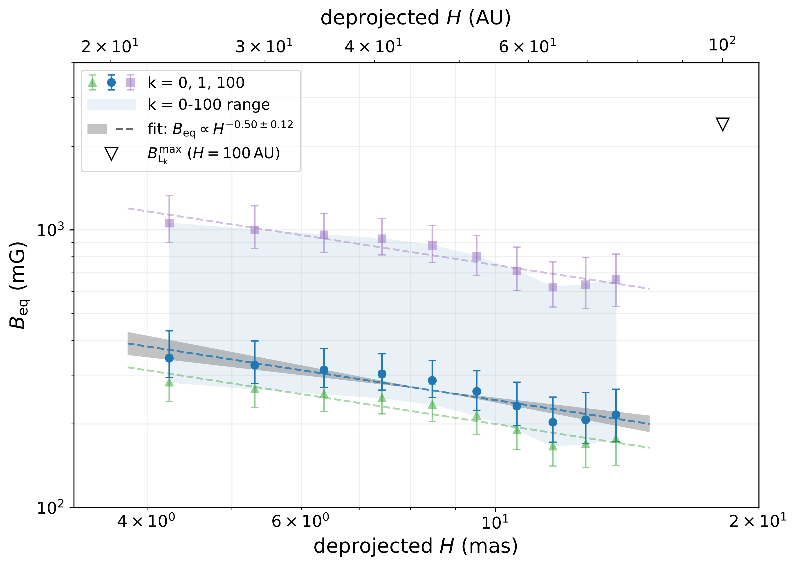
图注：Equipartition magnetic field $B_{\rm eq}$ along the eastern jet of SS\,433 as a function of deprojected distance $H$, for the ten retained slices; error bars are Monte-Carlo $1\sigma$ uncertainties. Green triangles, blue circles, and purple squares show $k=0$, $1$, and $100$, respectively, where $k$ is the ratio of non-radiating to radiating particle energy; the shaded band spans the full $k=0$--$100$ range. The dashed lines are the least-squares power-law fit, $B_{\rm eq}\propto H^{-0.50\pm0.12}$. The grey wedge shows this slope uncertainty, pivoted at the mean $\log H$ of the fitted slices. The inverted triangle at $H = 100$~AU (top-right) marks $B^{\rm max}_{L_{\rm k}}\sim2.5$~G, the upper limit obtained by requiring the local internal energy density to not exceed the jet kinetic luminosity $L_{\rm k}$.
对应解读：“建议重点查看的图表”第3项；“关键图表逐图导读”图3；“模型拟合”中磁场剖面拟合段落。
入选理由：这是全文最核心的诊断图，直接给出东侧喷流的等能磁场随去投影距离H的关系、误差条、不同非辐射粒子能量比k=0/1/100的系统范围、阴影带以及幂律拟合斜率B_eq∝\(H^{-0.50±0.12}\)。它最直接支撑日报中关于m显著小于1、磁刚度随H增长、内喷流可能达到PeV刚度的核心解读。
来源与置信度：\(arxiv_source\)；high；\(arxiv_source\) / sn-article.tex:figure[2]
Fig09
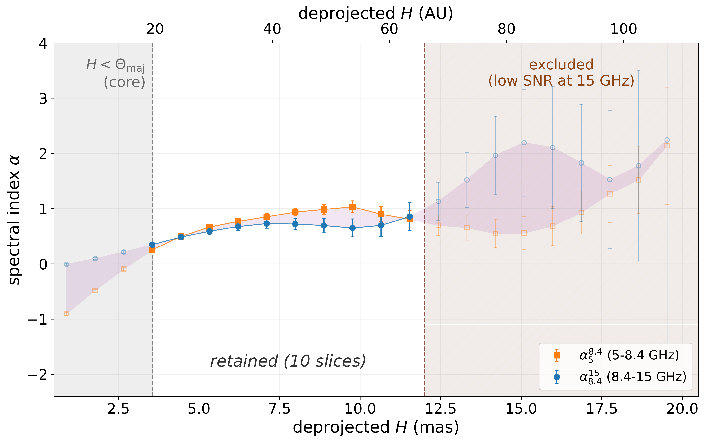
图注：Two-point radio spectral indices ($S\propto\nu^{-\alpha}$) versus deprojected distance along the eastern jet of SS~433 on 1998 June 16. Orange squares show $\alpha_{5}^{8.4}$; blue circles show $\alpha_{8.4}^{15}$. The pink shading indicates the separation between the two indices. Open symbols mark slices that are excluded, either because they are contaminated by core free-free absorption ($H<\Theta_{\rm maj}=3.537$\,mas; grey band) or because their 15\,GHz signal-to-noise ratio within the aperture is low ($H\gtrsim 12$\,mas; brown band). Only the ten mid-jet slices shown as filled symbols are retained for the equipartition magnetic-field analysis.
对应解读：“建议重点查看的图表”第2项；“关键图表逐图导读”图2；“模型拟合”中关于低频吸收、频率点选择和磁场估计偏差的讨论。
入选理由：该图展示5–8.4 GHz与8.4–15 GHz两点谱指数随喷流距离的变化，并明确标出因核心自由-自由吸收或15 GHz低信噪比而剔除的区域，以及最终用于磁场分析的十个中段切片。它能检验B(H)拟合所依赖的射电谱是否受吸收或噪声主导，是理解磁场估计可靠性的关键辅助图。
来源与置信度：\(arxiv_source\)；high；\(arxiv_source\) / sn-article.tex:figure[9]
Fig08
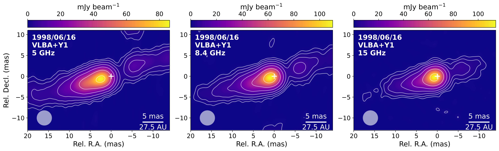
图注：Naturally weighted multi-frequency VLBI images of SS~433 on 1998 June 16. The background color scale represents the total intensity. All three maps are restored with a common circular Gaussian synthesized beam of $\Theta_{\rm maj}=3.537$~mas (white filled circle, bottom-left corners) and aligned to the position of the central binary system (white crosses). Scale bars are shown in the bottom right corner of each panel. The residual root-mean-square (rms) noise levels of the restored maps are 0.40, 0.43, and 0.50~mJy~beam$^{-1}$ at 5, 8.4, and 15~GHz, respectively. Contours start at $3\times{\rm rms}$ and increase by factors of 2.
对应解读：“建议重点查看的图表”第1项；“关键图表逐图导读”图1中关于多频VLBA图像、核心定位、喷流结构和动态范围的解读。
入选理由：该图给出1998年6月16日SS433在5、8.4、15 GHz的自然加权VLBI总强度图，使用共同波束并对齐到中心双星位置，包含噪声、等高线和尺度信息。它可用于确认多频射电结构是否一致、内喷流是否被分辨，以及磁场剖面并非单纯由成像伪影或频率间分辨率差异造成。
来源与置信度：\(arxiv_source\)；high；\(arxiv_source\) / sn-article.tex:figure[8]
Fig10
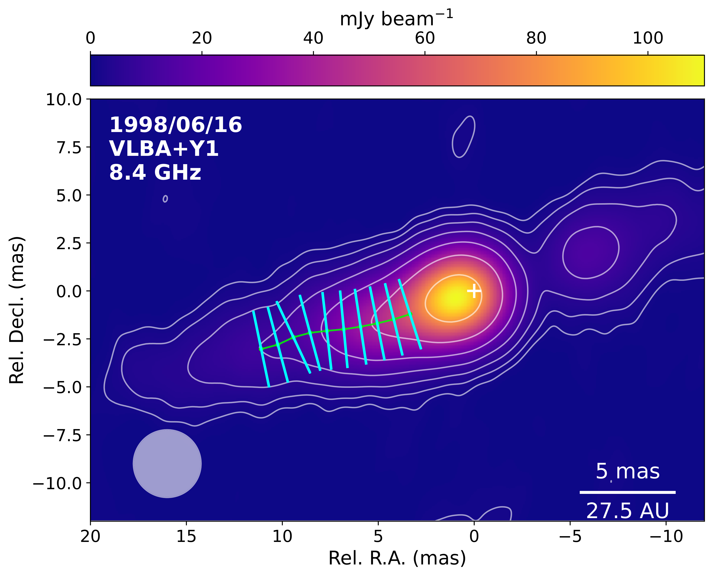
图注：The VLBA+Y1 8.4\,GHz image of SS\,433 on 1998 June 16, showing the traced ridge line (green) and the ten transverse slices (cyan bars, with length equal to the fitted transverse FWHM $\Theta_{\rm fit}$). The background contours are drawn at $3\sigma$ times (1, 2, 4, 8, 16, 32, 64, 128), with $\sigma=0.43$~mJy~beam$^{-1}$. The synthesized beam is shown as the white circle in the bottom-left corner, and a scale bar is given in the bottom-right corner. The position of the central binary system is marked by a white cross.
对应解读：“模型拟合”中关于喷流几何、源尺寸、横向切片和B与源尺寸退化的讨论；也对应“建议重点查看的图表”第1、2项的观测基础。
入选理由：该图在8.4 GHz VLBA+Y1图像上标出喷流脊线和用于分析的十个横向切片，切片长度对应拟合横向FWHM。它帮助读者理解B(H)数据点如何从实际喷流位置和孔径中提取，并直接关联到源尺寸、喷流半径及后续Hillas尺度估计，但相较Fig02和Fig09，它更偏方法支撑而非最终物理结论。
来源与置信度：\(arxiv_source\)；high；\(arxiv_source\) / sn-article.tex:figure[10]
强相关工作
同一源和同类工作方面，应把本文放在 SS 433 高能观测史中阅读。HAWC 曾报告 SS 433 喷流方向的甚高能伽马射线，显示微类星体喷流可以供能到至少数十 TeV 电子或强子。LHAASO 后续把能量范围推进到 \(100\,{\rm TeV}\) 以上，使强子 PeVatron 解释更受关注。检索关键词可用“SS 433 HAWC TeV jets”、“SS 433 LHAASO PeVatron”、“SS 433 atomic cloud gamma rays”和“microquasar PeVatron”。
基础理论方面，本文直接继承 Hillas 判据和紧致喷流同步辐射诊断传统。Hillas 图给出 \(B R\) 与最大粒子能量之间的尺度关系；Blandford-Königl 型喷流模型则常用于理解射电核心、磁场衰减和自吸收谱。相反或存在张力的观点主要包括：SS 433 的 TeV emission 可能由电子逆康普顿或喷流终端加速主导；PeV 质子即使在内喷流产生，也未必能无损传播到外部云；以及由能量均分推得的磁场可能存在数量级系统误差。检索关键词可用“Hillas criterion PeVatron”、“Blandford Konigl jet magnetic field”、“SS 433 leptonic hadronic model”和“gamma-ray source acceleration site versus emission site”。
同一事件 / 同类源线索：
- https://arxiv.org/abs/2608.02314
- https://simbad.cds.unistra.fr/simbad/sim-id?Ident=SS%20433
- https://arxiv.org/abs/1810.01854
相似工作：
基础理论 / 方法工作：
- https://ui.adsabs.harvard.edu/abs/1984ARA%26A..22..425H/abstract
- https://ui.adsabs.harvard.edu/abs/1979ApJ...232...34B/abstract
相反观点 / 张力线索：
（未提供）
2. Simulations of Electromagnetic Cascades in the Intergalactic Medium with Plasma Instabilities: the grplinst Code
- 来源：arXiv / astro-ph.HE
- 链接：https://arxiv.org/abs/2608.01166v1
- 作者：Rafael Alves Batista, Andrey Saveliev
- 评分：novelty 8/10，importance 8/10，relevance 10/10，final 9.70/10
- 推荐理由：为CRPropa加入TeV blazar电磁级联中的等离子体不稳定冷却模块，直接影响IGMF约束和高能伽马观测解释，是伽马射线天文/传播方法重点。
中文题目：用于星系际介质中电磁级联与等离子体不稳定性模拟的 \(\texttt{grplinst}\) 代码
做了什么：这篇文章发布并说明了 \(\texttt{grplinst}\)，一个接入 \(\texttt{CRPropa}\) 的插件，用来在传播计算中给电子和正电子加入由等离子体不稳定性导致的能量损失。问题的背景是：遥远耀变体的 \(\mathrm{TeV}\) 伽马射线在星系际背景光上产生 \(e^\pm\) 对后，本应通过逆康普顿散射形成可观测的 \(\mathrm{GeV}\) 级联辐射；但如果 \(e^\pm\) 束流先把能量转移给星系际等离子体波动，级联就会被抑制。作者没有声称解决不稳定性饱和的第一性原理问题，而是把文献中几类常用冷却处方实现成可切换模块，使研究者可以系统比较不同等离子体假设对级联通量、角延展、时间延迟和星系际磁场约束的影响。
为什么重要：星系际磁场 \(B_{\rm IGMF}\) 的下限很大程度来自耀变体级联没有如预期出现这一事实；但同一个观测缺口也可能由等离子体不稳定性耗散解释。如果不把这类不确定性放进传播模拟，所谓 \(B_{\rm IGMF}\) 约束可能把微观等离子体物理误当成宇宙磁场信号。本文的重要性在于提供了一个可复现、可替换处方、可批量扫描参数的工具层，让争论从“是否有等离子体效应”推进到“某个冷却率假设会怎样改变具体可观测量”。
理论 / 观测 / 仪器方法价值：对理论而言，\(\texttt{grplinst}\) 把线性增长率、经验冷却率和不同饱和假设转化为传播代码中的连续能损项，便于检查各模型在宇宙学传播距离上的后果。对观测而言，它能直接服务于 \(\mathrm{Fermi}\)-LAT、H.E.S.S.、MAGIC、VERITAS 和未来 \(\mathrm{CTA}\) 数据的级联建模。对方法而言，它强调把等离子体冷却作为系统误差源纳入 \(B_{\rm IGMF}\)、源本征谱和背景光模型的联合拟合，而不是事后定性讨论。
为什么应该关注：如果你使用非探测到的级联辐射来限制星系际磁场，或者用耀变体 \(\mathrm{TeV}\) 谱推断星系际背景光，本文与你的系统误差预算直接相关。它提醒读者：在弱磁场、低密度星系际介质中，级联强度不只由 \(\gamma\gamma\) 吸收和逆康普顿散射决定，还可能取决于束流驱动等离子体模式如何增长、饱和和阻尼。你应该关注它，因为未来 \(\mathrm{CTA}\) 的高灵敏度会把这些过去可忽略的理论处方差异变成实际的参数偏差。
展开详细解读：文章讲解、背景、理论、重点章节、图表与相关工作
文章详细讲解
科学问题：遥远耀变体发出的 \(\mathrm{TeV}\) 光子在传播中会与星系际背景光发生 \(\gamma\gamma\to e^+e^-\)，产生超相对论性 \(e^\pm\) 对。标准电磁级联图像认为这些 \(e^\pm\) 主要通过逆康普顿散射宇宙微波背景和红外背景，把能量再辐射到 \(\mathrm{GeV}\) 到 \(\mathrm{TeV}\) 波段。若星系际磁场很弱，二级辐射应较集中；若磁场较强，二级辐射会被偏转、延迟或扩展。因此，级联的缺失常被用来推断 \(B_{\rm IGMF}\) 的下限。但这个推断依赖一个关键前提：\(e^\pm\) 束流能量确实主要走辐射冷却通道，而不是被集体等离子体过程吸收。
作者怎么做：本文的工作重点不是新的观测数据，而是发布 \(\texttt{grplinst}\) 这一数值模块。它作为 \(\texttt{CRPropa}\) 框架的插件，在逐粒子传播时对电子和正电子加入额外的能量损失项 \(dE/dt\)，用以模拟文献中提出的等离子体不稳定性冷却。作者实现了多种处方，目的在于覆盖从“等离子体冷却很弱、级联近似标准”到“等离子体冷却强到淬灭级联”的理论区间。代码层面上，关键是把局域红移、背景光场、粒子能量、束流密度或等效参数与冷却长度联系起来，并与已有的 \(\gamma\gamma\) 吸收、逆康普顿散射、磁偏转模块协同。
关键结果：文章展示的示例说明，不同等离子体不稳定性处方可以显著改变二级伽马射线的能谱和传播历史。强冷却模型会减少逆康普顿二级光子的产额，使传统上预期的 \(\mathrm{GeV}\) 级联成分下降；弱冷却或无冷却模型则恢复常规电磁级联。这个结果本身并不令人意外，但代码的价值在于把这种差异变成可重复的参数扫描：同一源红移、同一本征谱、同一背景光和磁场模型下，只切换等离子体处方，就能看到观测量如何变化。
局限和下一步：等离子体不稳定性是否真正有效仍是开放问题，尤其涉及束流角分布、非线性饱和、湍流阻尼、密度不均匀性、热背景电子温度以及宇宙大尺度结构环境。\(\texttt{grplinst}\) 采用的是处方化冷却，而不是从粒子-网格或动理学方程自洽求解微观等离子体演化。因此它更适合做理论不确定性包络和观测拟合系统误差评估，而不是最终裁决不稳定性的物理机制。下一步自然是把它用于耀变体样本、与真实仪器响应联合、并与 \(\mathrm{CTA}\) 等未来观测的级联搜索策略结合。
关键结果是怎么做出来的
本文的证据链主要来自代码实现和示例传播，而不是某个新源样本的统计探测。样本层面可以理解为作者构造了典型远距离 \(\mathrm{TeV}\) 伽马射线传播场景：原初光子在星系际背景光中产生 \(e^\pm\)，随后电子和正电子在逆康普顿、宇宙膨胀、可能的磁偏转以及新增的等离子体冷却之间竞争。需要关注的不是事件数，而是单粒子蒙特卡罗历史和由大量粒子历史叠加得到的二级光子能谱、能量损失通道占比和到达分布。
统计意义在本文中不是以 \(5\sigma\) 探测形式出现，而是以模型差异和可观测偏移出现。对每一种冷却处方，传播方程中都会多出一项 \(b_{\rm pl}(E,z)=-dE/dt\)，它与逆康普顿冷却 \(b_{\rm IC}(E,z)\) 竞争。若 \(b_{\rm pl}\gg b_{\rm IC}\)，电子能量主要进入等离子体热化或波动通道，级联光子数下降；若 \(b_{\rm pl}\ll b_{\rm IC}\)，级联近似常规。示例图表应重点看不同模型线之间在 \(\mathrm{GeV}\) 区间的分离，而不是只看最高能端的吸收截止。
模型比较的核心是“同一传播环境下不同冷却处方”的受控实验。\(\texttt{CRPropa}\) 本来已经处理光子吸收、电子逆康普顿、背景光演化和磁场传播；\(\texttt{grplinst}\) 增加的只是电子、正电子的额外连续损失模块。因此如果输出能谱或能量损失距离发生变化，可以直接归因于等离子体处方，而不是源谱、背景光或磁场同时改变。这种模块化设计对后续似然分析很重要，因为可以把等离子体模型作为离散模型选择或超参数扫描。
支撑结论的图表通常应包括：冷却长度随能量或红移的曲线、不同处方下的粒子能量演化、输出伽马射线谱、以及可能的能量分配比例。读者应检查在典型 \(\mathrm{TeV}\) 初级能量附近，\(\ell_{\rm pl}\) 与 \(\ell_{\rm IC}\) 的交叉点在哪里；这直接决定级联是否被淬灭。还应查看模型差异是否集中在某个窄能区，还是在整个观测波段系统性改变通量归一化。
系统误差方面，最重要的是等离子体冷却率本身高度模型依赖。它可能依赖束流密度、束流角展宽、背景等离子体温度和密度、红移演化以及非线性饱和机制。稳健性检验不应只改变随机种子，而应改变源红移、注入谱指数、最高能截止、星系际背景光模型、磁场强度和相干长度，并观察等离子体处方与这些量之间是否存在退化。本文的主要贡献正是让这些检验在同一传播框架中可操作。
展开背景、理论、公式、模型、章节和图表导读
背景知识
研究对象是由遥远耀变体 \(\mathrm{TeV}\) 光子触发的星系际电磁级联。初级光子与星系际背景光，尤其是光学到红外波段的 \(\mathrm{EBL}\)，发生双光子湮灭，生成高能 \(e^\pm\) 对。这些对再通过逆康普顿散射低能背景光子，产生较低能量的伽马射线。这个过程把源本征谱、宇宙辐射背景、星系际磁场和等离子体环境联系在一起，因此长期被视为研究宇宙大尺度空区物理的少数间接探针之一。
历史问题是“缺失的级联辐射”该怎样解释。许多 \(\mathrm{TeV}\) 耀变体在 \(\mathrm{Fermi}\)-LAT 波段没有显示出简单级联模型预期的强 \(\mathrm{GeV}\) 过量，一种解释是星系际磁场足够强，使 \(e^\pm\) 被偏转到视线外，或者导致时间延迟超过观测窗口。另一种解释是 \(e^\pm\) 束流激发等离子体不稳定性，把能量耗散给背景介质，从源头上减少逆康普顿辐射。二者对观测现象都可能给出相似的“级联被抑制”结果，但物理含义完全不同。
观测背景近年来变得更复杂。\(\mathrm{Fermi}\)-LAT 提供了长期全天 \(\mathrm{GeV}\) 数据，地面切伦科夫望远镜提供 \(\mathrm{TeV}\) 谱，未来 \(\mathrm{CTA}\) 将显著提高灵敏度和角分辨率。与此同时，\(\mathrm{EBL}\) 模型、源的长期变率、喷流开角、本征谱曲率、选择效应以及时间延迟都会影响级联解释。随着数据质量提升，过去“设等离子体效应为零”的简化会越来越难以成为默认假设。
为什么现在值得重新看：一方面，星系际磁场的起源涉及早期宇宙相变、暴胀、原初扰动以及星系反馈，是宇宙磁化史的核心问题；另一方面，等离子体不稳定性是否能在极稀薄、极相对论的束流中有效工作仍有理论争议。观测数据正在逼近能区和灵敏度边界，要求理论模拟能够清楚区分磁场解释、源物理解释和等离子体解释。\(\texttt{grplinst}\) 的意义就在于给这种区分提供可复现的计算平台。
该领域常见误区之一是把“没有看到级联”直接等同于“存在强星系际磁场”。实际上，源活动时间、喷流占空比、\(\mathrm{EBL}\) 吸收、仪器点扩散函数、视场选择以及等离子体能损都可能造成类似信号。另一个误区是把等离子体不稳定性当成单一确定效应；事实上，不同文献对线性增长、非线性饱和和背景阻尼的处理差异很大，得到的冷却长度可以相差多个数量级。本文正是承认这种不确定性，并把它形式化为可切换模型。
基础理论 / 方法脉络
基本物理图像从双光子吸收开始。能量为 \(E_\gamma\) 的高能光子与能量为 \(\epsilon\) 的背景光子相遇，如果质心能量超过电子对产生阈值，就可以生成 \(e^+e^-\)。生成的电子和正电子通常继承初级光子的大部分能量，洛伦兹因子可达 \(\gamma_e\sim E_\gamma/(2m_ec^2)\)。这些粒子在星系际介质中传播时，会逆康普顿散射 \(\mathrm{CMB}\) 或 \(\mathrm{EBL}\) 光子，产生二级伽马射线。
标准级联模型的关键竞争量是冷却长度。逆康普顿冷却率在汤姆孙近似下随 \(\gamma_e^2\) 增大，冷却时间约为 \(t_{\rm IC}=E/b_{\rm IC}\)。磁场则通过洛伦兹力改变粒子方向，偏转角大致由冷却长度与拉莫尔半径之比决定。若偏转很小，二级光子沿视线到达，表现为点源谱中过量；若偏转较大，则形成角延展晕或时间延迟信号。由此可以用级联辐射约束 \(B_{\rm IGMF}\) 和相干长度 \(\lambda_B\)。
本文关注的新增物理是束流驱动等离子体不稳定性。\(e^\pm\) 束流相对于背景星系际等离子体具有极高能量和很低密度，但它的速度分布各向异性，可能激发两流、斜模或 Weibel 类模式。在线性阶段，扰动以增长率 \(\Gamma_{\rm inst}\) 放大；在非线性阶段，波能如何饱和、是否被 Landau 阻尼或湍流级联耗散，是争议所在。传播模拟通常无法从头求解这些微观过程，因此把它们压缩成等效冷却率 \(b_{\rm pl}(E,z)\)。
\(\texttt{grplinst}\) 的模型假设是：在粒子传播步长内，等离子体效应可以近似为电子和正电子的连续能量损失，而不必显式跟踪背景波谱的时空演化。这意味着它适合描述平均意义上的级联淬灭或变弱，但不能预测等离子体波动的局域结构。关键量包括电子能量 \(E\)、红移 \(z\)、背景等离子体密度 \(n_e\)、束流密度或归一化、冷却率 \(b_{\rm pl}\)、逆康普顿冷却率 \(b_{\rm IC}\) 以及磁场参数 \(B\) 和 \(\lambda_B\)。
常见退化关系包括：增大 \(B_{\rm IGMF}\) 可以降低视线方向级联通量，增大 \(b_{\rm pl}\) 也可以降低级联通量；减小源活动时间可让延迟级联不可见，改变源本征谱截止也会减少二级光子。系统误差还来自 \(\mathrm{EBL}\) 模型、仪器有效面积、能量重建、点扩散函数和背景建模。本文的代码价值在于把其中一个重要退化源，即 \(b_{\rm pl}\)，变成可以在同一框架内显式扫描的量。
公式与推导
推导阶梯可从双光子对产生阈值开始。高能光子能量为 \(E_\gamma\)，背景光子能量为 \(\epsilon\)，夹角为 \(\theta\)，质心能量满足
这里 \(m_e\) 是电子质量，\(c\) 是光速。该式说明给定 \(E_\gamma\) 时，最有效吸收的背景光子能量 \(\epsilon\) 位于 \(\mathrm{EBL}\) 的光学到红外波段，这是耀变体级联对 \(\mathrm{EBL}\) 和传播距离敏感的原因。
沿视线传播时，初级光子的存活概率由光学深度给出：
其中 \(\tau_{\gamma\gamma}\) 是从源红移 \(z\) 到观测者的双光子吸收光学深度，包含背景光谱数密度、宇宙学距离和对产生截面。\(\texttt{CRPropa}\) 类传播代码用这个量随机决定相互作用位置，或等价地抽样相互作用长度。
生成的电子或正电子能量可粗略写为
这个近似忽略了对产生角分布和能量分配的细节，但足以说明为什么 \(\mathrm{TeV}\) 光子对应 \(\gamma_e\gg 1\) 的束流粒子。后续冷却通道都主要由 \(\gamma_e\) 控制。
在汤姆孙区，逆康普顿能量损失率为
这里 \(\sigma_T\) 是汤姆孙截面，\(U_{\rm rad}(z)\) 是背景辐射能量密度。该式给出标准级联的辐射冷却时间 \(t_{\rm IC}=E/b_{\rm IC}\)，也是判断等离子体冷却是否重要的基准。
逆康普顿二级光子的典型能量近似为
其中 \(\epsilon_{\rm bg}\) 是被散射背景光子的能量。对于 \(\mathrm{CMB}\) 光子和 \(\mathrm{TeV}\) 电子，这个式子自然给出 \(\mathrm{GeV}\) 量级二级辐射，因此 \(\mathrm{Fermi}\)-LAT 波段对级联特别关键。
本文加入的等离子体不稳定性可写成额外连续损失项：
其中 \(b_{\rm ad}\) 表示宇宙膨胀绝热损失，\(b_{\rm pl}\) 是等离子体不稳定性冷却率，\(\boldsymbol{\eta}\) 代表具体处方中的参数，例如束流密度、背景等离子体温度或饱和效率。\(\texttt{grplinst}\) 的核心就是为 \(b_{\rm pl}\) 提供多种文献处方。
也可以用冷却长度比较不同通道：
若 \(\ell_{\rm pl}\ll \ell_{\rm IC}\)，则粒子在发生足够逆康普顿散射前已把能量交给等离子体，级联被淬灭；若 \(\ell_{\rm pl}\gg \ell_{\rm IC}\)，则等离子体效应可忽略。示例图中最应检查的就是这些长度的相对大小。
磁场偏转的尺度可由拉莫尔半径给出：
在相干磁场且小角度近似下，\(e\) 是元电荷，\(B\) 是磁场强度，\(\ell_{\rm cool}\) 是主导冷却长度。等离子体冷却改变 \(\ell_{\rm cool}\)，因此不仅影响通量，也可能间接影响角延展和时间延迟。
若与观测数据比较，常用泊松似然可写为
这里 \(n_k\) 是第 \(k\) 个能量或空间 bin 中的观测计数，\(\mu_k\) 是由源模型、级联传播、仪器响应和背景共同预测的计数，\(\boldsymbol{\Theta}\) 包括 \(B_{\rm IGMF}\)、\(\lambda_B\)、源谱参数和等离子体参数。该式说明 \(\texttt{grplinst}\) 的输出最终如何进入观测约束。
模型间差异可用似然比诊断：
其中 \(\widehat{\boldsymbol{\Theta}}_{\rm pl}\) 是含等离子体冷却模型的最佳拟合参数，\(\widehat{\boldsymbol{\Theta}}_{0}\) 是无等离子体冷却或基准模型的最佳拟合参数。实际分布不一定简单服从 \(\chi^2\)，因为模型可能非嵌套且含边界参数，但该量给出了用真实数据评估等离子体处方必要性的自然路径。
模型拟合 / 应用方法
本文本身主要是代码与示例论文，因此“拟合”更多是面向后续应用的框架问题。典型应用会从耀变体本征谱开始，例如幂律、指数截止幂律或对数抛物线，参数包括归一化、谱指数、截止能量和源红移。传播端参数包括 \(\mathrm{EBL}\) 模型、\(B_{\rm IGMF}\)、\(\lambda_B\)、源活动时间、喷流开角，以及 \(\texttt{grplinst}\) 提供的等离子体冷却处方和其参数 \(\boldsymbol{\eta}\)。
似然通常要在观测计数空间构造，而不是只拟合理论能谱。传播代码输出到达地球的光子能量、方向和时间分布后，需要卷积仪器有效面积、能量分辨率、点扩散函数和曝光，得到每个能量 bin 或空间 bin 的预测计数 \(\mu_k\)。对于 \(\mathrm{Fermi}\)-LAT 可采用泊松 binned likelihood；对于地面切伦科夫望远镜，可使用 ON/OFF 区域的泊松似然或联合谱点协方差近似。残差应分能量和空间同时看，因为磁场偏转和等离子体冷却可能在总谱上退化，但在角分布上不同。
主要退化关系有三类。第一，\(B_{\rm IGMF}\) 与 \(b_{\rm pl}\) 都能降低视线方向二级通量，因此仅靠一维能谱很难区分。第二，源本征谱的高能截止与 \(\mathrm{EBL}\) 吸收决定注入到级联的能量预算，它们可与等离子体淬灭互相补偿。第三，源活动时间和时间延迟影响是否能在观测窗口内看到级联，这会与磁场强度和冷却长度耦合。
系统误差需要显式边缘化或扫描。\(\mathrm{EBL}\) 模型差异会改变 \(\tau_{\gamma\gamma}\) 和对产生位置；仪器能标误差会改变 \(\mathrm{TeV}\) 截止位置；背景模型误差会影响 \(\mathrm{GeV}\) 弱级联成分；耀变体变率会破坏稳态注入假设。等离子体处方本身还可能依赖不可直接观测的束流密度和角分布，所以更合理的做法是把不同处方视为模型族，而不是对单一冷却率给出过度精确的置信区间。
实际应用中，可以先用无等离子体冷却的基准模型复现实验组或文献中的 \(B_{\rm IGMF}\) 约束，再打开 \(\texttt{grplinst}\) 的不同处方检查约束如何漂移。如果强冷却模型能在弱磁场下同样解释级联缺失，那么原有磁场下限应被视为条件性结论。反过来，如果在某些源、能区或角尺度上，等离子体冷却无法同时匹配谱和空间分布，则可用观测反过来限制不稳定性效率。
重点章节 / 结果段落怎么读
数据与物理场景部分应先读：这里会说明 \(\mathrm{TeV}\) 光子诱发星系际级联的基本传播链条，以及为什么电子和正电子的能量损失通道是问题核心。读者应确认作者采用的背景光、粒子种类、相互作用过程和红移处理是否与自己熟悉的 \(\texttt{CRPropa}\) 级联计算一致。
等离子体不稳定性处方部分是全文技术核心。建议逐一查看作者实现了哪些文献模型，每个模型把增长率或冷却时间写成哪些变量的函数，以及默认参数是否适合典型空区星系际介质。这里不要只记模型名称，应关注 \(b_{\rm pl}\) 与 \(E\)、\(z\)、束流密度和背景等离子体参数的标度关系。
代码实现部分应关注接口和数值积分。关键问题包括：冷却是作为连续能损还是随机过程加入；步长如何控制；与逆康普顿散射、双光子吸收和磁偏转模块的调用顺序如何；是否保存能量损失通道用于诊断。对想复现或扩展代码的读者，这部分比示例图更重要。
示例结果部分应作为物理解读入口。读者应比较无等离子体冷却、弱冷却和强冷却情况下的输出能谱、电子冷却长度和级联通量变化。若示例覆盖不同源红移或初级能量，应特别看处方差异是否随红移增强，因为背景辐射密度、等离子体密度和吸收长度都随 \(z\) 变化。
讨论与展望部分应重点看作者如何界定代码适用范围。处方化冷却不能代替完整动理学模拟，也不能自动给出星系际磁场结论。真正有用的下一步是与观测似然、源样本和仪器响应结合，并把等离子体模型作为系统误差纳入磁场约束。
建议重点查看的图表
-
冷却长度或冷却率对比图：重点看 \(\ell_{\rm pl}(E)\)、\(\ell_{\rm IC}(E)\) 和可能的绝热损失长度在哪些能量相交；交叉点决定级联是否被淬灭。
-
不同等离子体处方的输出伽马射线能谱：重点看 \(\mathrm{GeV}\) 到亚 \(\mathrm{TeV}\) 波段二级级联成分的归一化变化，而不是只看初级 \(\mathrm{TeV}\) 吸收端。
-
电子或正电子能量随传播距离演化图：重点看能量是平滑辐射冷却还是被强等离子体项快速抽走，并检查数值步长是否足以解析短冷却长度。
-
能量损失通道分解图：如果有，应看总注入能量中进入逆康普顿光子、等离子体耗散和绝热损失的比例；这比单条谱线更能说明物理机制。
-
磁场参数与等离子体处方的联合影响图：重点看 \(B_{\rm IGMF}\) 增大和 \(b_{\rm pl}\) 增大是否产生相似观测效果，以及是否存在可由角延展打破的退化。
-
代码验证或基准测试表：重点看关闭 \(\texttt{grplinst}\) 后是否恢复标准 \(\texttt{CRPropa}\) 级联结果，以及不同随机种子或步长设置对谱的影响是否小于模型差异。
关键图表逐图导读
图 1：若论文给出电磁级联示意或传播流程图，读者应把它当作代码调用顺序图来看。横向通常是从源到观测者的传播过程，节点包括 \(\gamma\gamma\) 吸收、\(e^\pm\) 产生、逆康普顿散射、磁偏转和新增的等离子体冷却。读图陷阱是把等离子体冷却理解为产生额外伽马光子；在本文框架中它主要是从可见级联通道中抽走电子能量。
图 2：若展示冷却长度或冷却率，横轴通常是电子能量 \(E\) 或红移 \(z\)，纵轴是 \(\ell_{\rm cool}\) 或 \(b(E)\)。不同颜色或线型代表逆康普顿、绝热损失和若干等离子体处方。主要结论来自相对位置：\(\ell_{\rm pl}\) 低于 \(\ell_{\rm IC}\) 的区域就是强淬灭区域。读图陷阱是忽略纵轴可能为对数坐标，模型差异往往是数量级差异。
图 3：若展示输出伽马射线谱，横轴通常是观测能量，纵轴可能是 \(E^2dN/dE\)、通量或到达粒子数。无等离子体冷却模型应给出较强二级成分，强冷却模型则压低 \(\mathrm{GeV}\) 级联。读者应看模型线是否只改变归一化，还是改变谱形；后者更容易在多波段拟合中被识别。
图 4：若有单粒子或粒子群能量演化图，横轴通常是传播距离或时间，纵轴是 \(E_e\)。逆康普顿主导时能量下降与散射事件相关，连续冷却近似下则较平滑；等离子体主导时下降长度更短。读图陷阱是把单条轨迹当成总体谱，实际观测量需要许多粒子历史叠加。
图 5：若有参数扫描图，横轴可能是等离子体效率、源红移、初级能量或 \(B_{\rm IGMF}\)，纵轴是级联通量抑制因子或某能段通量比。应看等高线是否显示 \(B_{\rm IGMF}\) 与等离子体参数的退化方向。若置信区间或误差带很宽，说明当前观测很难单独约束微观冷却率。
图 6：若有验证图或表，应检查关闭新增模块后是否与标准 \(\texttt{CRPropa}\) 输出一致，以及打开不同处方后结果是否符合相应冷却长度的定性预期。读图陷阱是只看最终谱而不看能量守恒或通道分解；代码论文的可信度很大程度来自这些诊断。
论文原图 / 可嵌入图片
Fig01
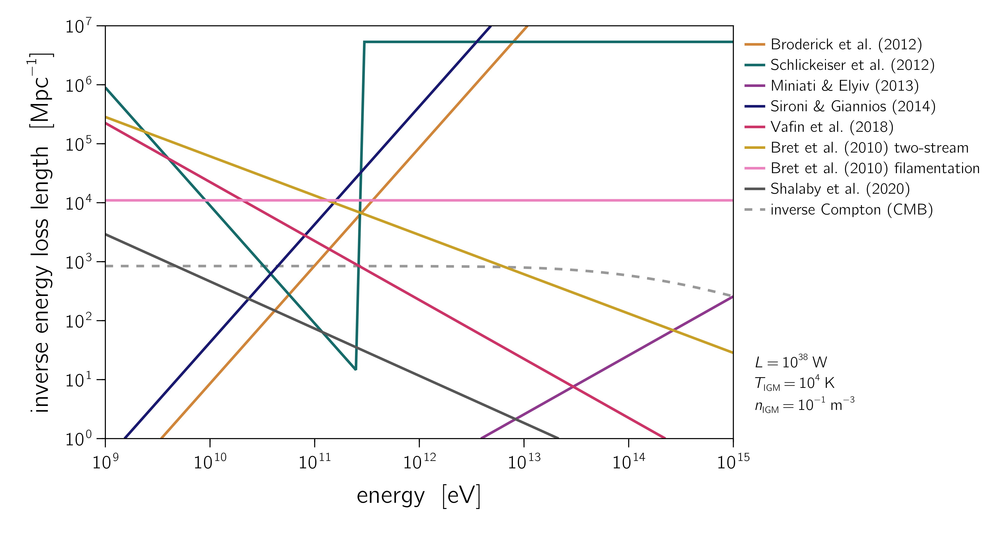
图注：Cooling rates for the different plasma instability models considered here, compared to the mean free path for inverse-Compton scattering with the \(\gls{CMB}\) (dashed line). The parameters used are $n_\text{IGM} = 0.1 \; \text{m}^{-3}$, $T_\text{IGM} = 10^4 \; \text{K}$, and $n_\text{beam} = 10^{-16} \; \text{m}^{-3}$.
对应解读：“建议重点查看的图表”第1项；“关键图表逐图导读”图2：冷却率/冷却长度对比。
入选理由：该图直接比较不同等离子体不稳定性模型的冷却率与逆康普顿平均自由程，是判断等离子体冷却是否快于IC冷却、级联是否被淬灭的核心诊断图。它最贴合日报中关于 \(\ell_{\rm pl}(E)\)、\(\ell_{\rm IC}(E)\) 相对位置和数量级差异的解读。
来源与置信度：\(arxiv_source\)；high；\(arxiv_source\) / main.tex:figure[1]
Fig02
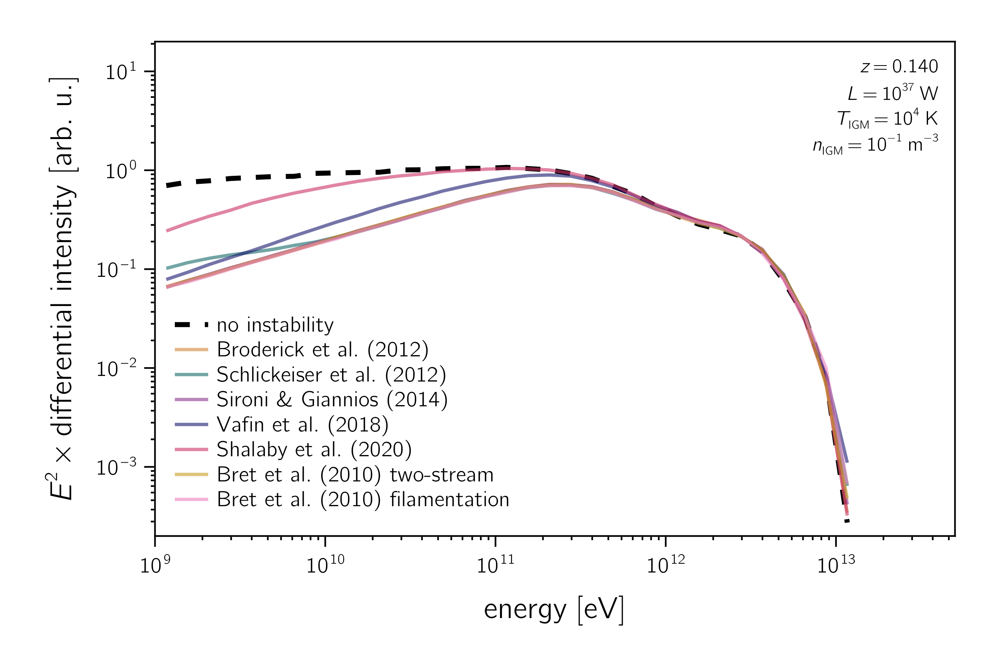
图注：Simulated gamma-ray fluxes from the blazar 1ES~0229+200 ($z=0.14$). The case without plasma instabilities is shown as a dashed line, whereas solid coloured lines represent the different plasma instability prescriptions. The parameters used are shown at the top right of the figure. The intrinsic source spectrum is a power law with index $\alpha = 1.5$ and an exponential cutoff at $E_\text{cut} = 8 \; \text{TeV}$.
对应解读：“建议重点查看的图表”第2项；“关键图表逐图导读”图3：不同等离子体处方的输出伽马射线能谱。
入选理由：该图展示1ES 0229+200在无等离子体不稳定性和多种等离子体处方下的模拟伽马射线通量，直接呈现二级级联成分被压低的程度。它是把冷却率差异转化为可观测能谱差异的关键图，比单纯参数说明更能支撑日报关于GeV到亚TeV级联归一化变化的讨论。
来源与置信度：\(arxiv_source\)；high；\(arxiv_source\) / main.tex:figure[2]
Fig04
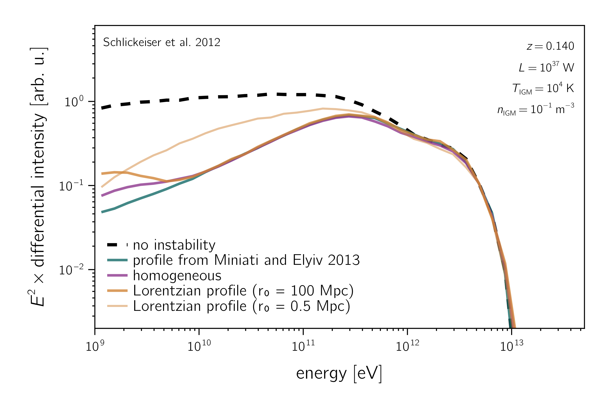
图注：Simulated gamma-ray fluxes from the blazar 1ES~0229+200 ($z = 0.14$). The case without plasma instabilities is shown by the thick dashed line, whereas the solid coloured lines show the results obtained using the plasma-instability energy-loss prescription of \(\citet{schlickeiser2012a}\) and the beam-density profiles from figure~\(\ref{fig:beamProfiles}.\) The parameters used in the simulations are shown in the upper-right corner. The intrinsic source spectrum follows a power law with index $\alpha = 1.5$ and an exponential cutoff at $E_\text{cut} = 8 \; \text{TeV}$.
对应解读：“建议重点查看的图表”第2项和第5项；模型拟合段落中关于等离子体处方参数、束流密度与观测能谱退化的讨论。
入选理由：该图在同一耀变体和本征谱设定下，使用Schlickeiser等离子体能损处方并改变束流密度剖面，展示最终伽马射线通量如何随微观/环境假设变化。它补充Fig02的处方对比，突出等离子体模型内部参数化选择也会改变级联抑制幅度。
来源与置信度：\(arxiv_source\)；high；\(arxiv_source\) / main.tex:figure[4]
Fig03
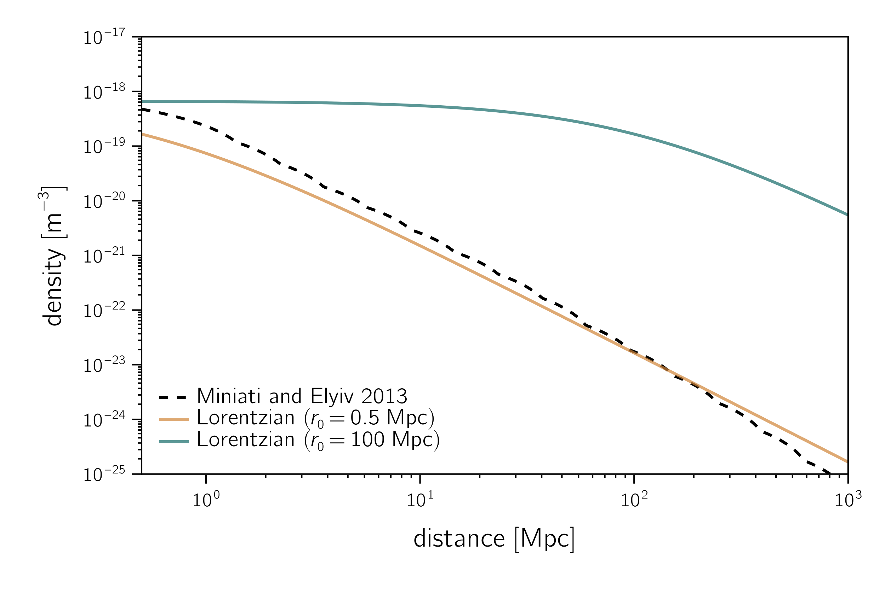
图注：Beam number density as a function of distance from the source. The dashed line corresponds to the profile obtained by interpolating the results of \(\citet{miniati2013a}\) and rescaling them to the adopted luminosity. The solid lines show the two illustrative Lorentzian profiles defined by eq.~\(\ref{eq:lorentzian},\) with characteristic distances $r_0 = 0.5 \; \text{Mpc}$ (orange) and $r_0 = 100 \; \text{Mpc}$ (green).
对应解读：与Fig04相关的束流密度剖面输入；对应日报中关于等离子体处方依赖束流密度和角分布、模型族系统误差的讨论。
入选理由：该图本身不是最终观测量，但给出了束流数密度随源距变化的不同剖面，是理解Fig04中不同能谱结果来源的必要输入。它有助于说明等离子体冷却并非单一固定率，而依赖束流密度等难直接观测的处方参数。
来源与置信度：\(arxiv_source\)；high；\(arxiv_source\) / main.tex:figure[3]
强相关工作
同类工作主要围绕两条线展开。第一条是用耀变体级联约束星系际磁场，包括从 \(\mathrm{Fermi}\)-LAT 非探测二级级联、角延展搜索和时间延迟分析得到的 \(B_{\rm IGMF}\) 下限。相关检索关键词包括 \(\text{intergalactic magnetic field gamma-ray cascades blazars Fermi LAT}\)、\(\text{TeV blazar pair echo IGMF}\)、\(\text{CTA electromagnetic cascades intergalactic magnetic fields}\)。这些工作通常把等离子体效应忽略或作为讨论项，因此与本文形成直接方法学互补。
第二条是关于 \(e^\pm\) 束流等离子体不稳定性的理论争论。部分研究认为斜模等不稳定性增长很快，足以在逆康普顿之前耗散束流能量；另一些研究强调非线性饱和、动量展宽、背景不均匀性或阻尼会显著降低有效冷却。检索关键词包括 \(\text{blazar induced pair beams plasma instabilities oblique instability}\)、\(\text{inverse Compton versus plasma cooling intergalactic medium}\)、\(\text{nonlinear saturation pair beam instabilities}\)。本文不站在单一处方上，而是把这些相反观点变成可比较的传播模块。
从代码和方法角度，本文属于 \(\texttt{CRPropa}\) 生态的一部分。\(\texttt{CRPropa}\) 原本广泛用于宇宙线、伽马射线和中微子传播，\(\texttt{grplinst}\) 的定位是扩展其中电磁级联对微观等离子体能损的处理。读者若要复现结果，应同时查阅 \(\texttt{CRPropa}\) 文档、已有电磁级联模块说明以及耀变体级联观测约束论文。
同一事件 / 同类源线索：
- https://arxiv.org/abs/2608.01166
- https://arxiv.org/pdf/2608.01166
- https://crpropa.github.io/CRPropa3/
相似工作：
基础理论 / 方法工作：
相反观点 / 张力线索：
3. Production of High Energy Neutrinos in the Coronae of Ultraluminous X-ray Sources
- 来源：arXiv / astro-ph.HE
- 链接：https://arxiv.org/abs/2608.02269v1
- 作者：Norita Kawanaka, Shigeo S. Kimura
- 评分：novelty 8/10，importance 8/10，relevance 9/10，final 9.35/10
- 推荐理由：提出ULX冕区作为高能中微子源并计算pp/pγ辐射和可探测性，明确关联天体源和强子过程，值得多信使高能天体物理读者关注。
中文题目：超亮 X 射线源日冕中的高能中微子产生
做了什么：这篇文章把超亮 X 射线源（ULX）看作超爱丁顿吸积黑洞，并研究其盘风供给的热日冕是否能加速质子、进而产生高能中微子。作者先检查日冕等离子体是否满足无碰撞条件，因为只有库仑碰撞不太强时，湍流或随机加速才可能有效；他们发现只有吸积率低于约 \(5\dot{M}_{\rm Edd}\) 时这一条件成立。在这个参数区间内，质子可被加速到几十 \(\rm TeV\)，并通过 \(p\gamma\) 与 \(pp\) 两条通道产生中微子。随着吸积率升高，日冕密度增加，\(pp\) 过程变得更重要，使中微子谱变宽。论文还给出总中微子光度与 X 射线光度的经验标度 \(L_{\nu,{\rm tot}}\propto L_X^{2.4}\)，并指出附近 ULX 中 M82 X-1 是未来中微子望远镜较有希望检验的目标之一。
为什么重要：ULX 通常被放在超爱丁顿吸积、强盘风和可能的中等质量黑洞问题中讨论，而不是被系统纳入高能中微子源族。这篇工作的重要性在于，它把“能否加速强子”这个前提条件与 ULX 日冕的微观碰撞性、辐射场和气体密度联系起来，而不是简单假设非热质子存在。如果结论成立，超爱丁顿吸积黑洞会成为除耀变体、潮汐瓦解事件、星暴星系和伽马暴之外的一个可检验中微子候选类群。
理论 / 观测 / 仪器方法价值：理论上，论文提供了一个从盘风供给日冕结构到随机质子加速、\(p\gamma\)/\(pp\) 冷却和中微子谱的半解析框架；观测上，它给出 \(L_{\nu,{\rm tot}}\) 与 \(L_X\) 的可用标度，可将 X 射线 ULX 样本转化为中微子候选列表；方法上，它强调无碰撞条件是筛选源可行性的硬门槛，这对类似致密吸积源的强子加速建模也有参考价值。
为什么应该关注：如果你关心 IceCube-Gen2、KM3NeT 或未来大型中微子阵列如何选择非传统目标，这篇文章给出了一类具体而附近的靶源。即便单个 ULX 的信号较弱，论文提出的 X 射线—中微子相关也能指导堆叠分析和源族贡献估计。对研究超爱丁顿吸积的人来说，它还把日冕微物理从“产生硬 X 射线的电子介质”扩展到“可能加速强子的多信使环境”。
展开详细解读：文章讲解、背景、理论、重点章节、图表与相关工作
文章详细讲解
科学问题：ULX 的表观 X 射线光度超过普通恒星质量黑洞的爱丁顿极限，通常意味着超爱丁顿吸积、几何准直、强盘风，或在少数情况下可能涉及中等质量黑洞。高能中微子产生需要非热强子，而非热强子加速不能只靠“有强磁场、有高光度”来保证；日冕必须足够无碰撞，使湍流、电磁波或磁重联能把能量注入粒子非热尾，而不是迅速被库仑热化。这篇论文的核心问题就是：ULX 日冕到底能不能成为有效的强子加速器？如果能，它产生的中微子谱和光度是否达到未来探测器可见水平？
作者怎么做：论文采用“盘风供给日冕”模型，把 ULX 视为超爱丁顿吸积黑洞，日冕由盘风物质补给，具有给定半径、密度、磁场和 X 射线辐射场。作者首先比较质子库仑碰撞时间、动力学时间和加速时间，判断等离子体是否无碰撞。然后计算随机加速下的质子最大能量，纳入逃逸、绝热损失、\(pp\) 相互作用、\(p\gamma\) 相互作用以及可能的辐射冷却。得到稳态质子谱后，进一步计算带电介子衰变产生的中微子谱。
关键结果：论文发现日冕不是在所有超爱丁顿吸积率下都能加速质子。只有当吸积率低于约 \(5\dot{M}_{\rm Edd}\) 时，库仑碰撞不至于破坏无碰撞加速条件；吸积率更高时，密度太大，日冕更像碰撞等离子体，强子非热加速效率会显著受限。在可加速的参数空间中，质子最高能量达到几十 \(\rm TeV\)，中微子能量相应落在 \(\rm TeV\) 到十几 \(\rm TeV\) 量级。低密度或较强辐射场条件下 \(p\gamma\) 过程重要；吸积率升高时 \(pp\) 光深增大，\(pp\) 贡献增强，因此总谱不是单一窄峰，而是由两种相互作用共同塑形的宽谱。
局限和下一步：这仍是一个模型驱动的半解析研究，结论依赖日冕几何、盘风供给率、磁化程度、湍流加速效率、非热质子注入功率等参数。ULX 的中心天体质量、倾角、几何准直和真实 \(L_X\) 也存在明显不确定性，这些都会传递到 \(L_\nu\) 预测。下一步应把该模型与具体 ULX 的宽带 X 射线谱、时变、风吸收线和可能的射电约束联合起来，并在中微子侧做针对 M82 X-1 等近邻源的时间积分点源搜索或 ULX 样本堆叠分析。
关键结果是怎么做出来的
本文最重要的证据链从样本意义上的“ULX 作为源族”转向物理意义上的“哪些 ULX 日冕允许强子加速”。作者没有先假设所有 ULX 都能产生中微子，而是以吸积率 \(\dot{M}/\dot{M}_{\rm Edd}\)、黑洞质量 \(M_{\rm BH}\)、日冕半径 \(R_c\)、湍流参数和磁化参数为输入，构造一个可计算的日冕环境。样本预测部分再把这些标度应用到近邻 ULX，尤其是 M82 X-1 这类高 X 射线光度且距离较近的源。
统计显著性方面，摘要指出 M82 X-1 在未来中微子观测中可能达到 \(90\%\) 置信水平的可探测性。这里的关键不是当前已经探测到同源中微子，而是用预测通量与未来探测器有效面积、背景和曝光时间比较，估算在给定置信度下的检出前景。读者应特别检查论文中关于探测器灵敏度曲线、积分时间、能区和源位置可见性的假设，因为 \(90\%\) 置信水平对背景模型、角分辨率和能量阈值很敏感。
支持主结论的图表应包括三类：第一，无碰撞条件与吸积率的关系图，它决定参数空间是否物理自洽；第二，质子加速与冷却时间尺度比较图，它显示最大质子能量由哪个过程限制；第三，中微子谱及其 \(p\gamma\) 与 \(pp\) 分量分解图，它直接展示为什么谱会随吸积率变宽、为什么 \(pp\) 在较高吸积率下增强。此外，\(L_{\nu,{\rm tot}}\) 对 \(L_X\) 的标度图或拟合表是把单源模型推广为观测策略的关键。
系统误差主要来自 ULX 日冕结构与中微子探测灵敏度两端。日冕端，\(R_c\)、磁场 \(B\)、湍流速度、非热质子功率比例和 X 射线光子谱都会改变加速上限与相互作用效率；探测端，有效面积、南北天区差异、大气中微子背景和源混淆会改变可探测性。稳健性检验应关注作者是否扫描了吸积率、黑洞质量和日冕半径，以及 \(L_{\nu,{\rm tot}}\propto L_X^{2.4}\) 是否只在有限参数区间内成立。
展开背景、理论、公式、模型、章节和图表导读
背景知识
ULX 是外星系中非核点状 X 射线源，其表观光度常超过 \(10^{39}\,\rm erg\,s^{-1}\)，高于典型 \(10M_\odot\) 黑洞的爱丁顿光度。早期一个核心问题是：这些源是否需要中等质量黑洞？后来宽带 X 射线谱、脉冲 ULX 的发现和辐射转移模型显示，许多 ULX 可以由恒星质量黑洞或中子星的超爱丁顿吸积解释。也就是说，ULX 不一定“质量极大”，但几乎肯定涉及极端吸积流和强辐射反馈。
超爱丁顿吸积的典型图像包含厚盘、强风、漏斗状辐射逃逸和各向异性发射。观测到的 \(L_X\) 可能不是各向同性真实光度，而与视线倾角和几何准直有关。日冕在这里通常指热电子散射区，它把软光子康普顿化成硬 X 射线；但在高能粒子天体物理中，日冕也可能是磁化湍流区，能加速电子和质子。本文正是把这两个语境连接起来。
高能中微子天体物理的历史候选源包括伽马暴、耀变体、星暴星系、潮汐瓦解事件、活动星系核日冕和银河系内强激波源。许多模型都可以产生合适的能量预算，但难点在于同时满足强子加速、足够靶光子或靶气体、以及不被电磁观测排除。ULX 的吸引力在于它们有高辐射密度、高气体密度和近邻外星系样本，但过去很少被作为系统的中微子源族研究。
为什么现在值得重新看？一方面，IceCube 已经建立了弥散高能中微子背景，未来 IceCube-Gen2 和 KM3NeT 将改善点源和北/南天区覆盖；另一方面，NuSTAR、XMM-Newton、Chandra 对 ULX 的宽带谱、风特征和长期光变积累了更好的约束。一个常见误区是把“高光度”等同于“高能中微子亮”。实际上，若日冕是强碰撞等离子体，非热质子会被热化；若辐射太强或逃逸太快，谱形和效率也会改变。因此本文强调无碰撞条件，是对简单能量预算论证的修正。
基础理论 / 方法脉络
产生高能中微子的基本图像是：某个天体环境先把质子或原子核加速到高能，再让这些强子与光子或气体碰撞产生介子，带电介子衰变给出中微子。对 ULX 日冕来说，加速区同时有强 X 射线光子场和高密度等离子体，所以 \(p\gamma\) 与 \(pp\) 都可能工作。\(p\gamma\) 过程对光子能量和质子能量阈值敏感，常在特定能区形成谱结构；\(pp\) 过程阈值低、谱更宽，但依赖气体密度。
随机加速或二阶费米加速依赖磁化湍流。粒子在湍流磁场中反复散射，每次获得小的平均能量增益。有效加速要求散射由集体电磁扰动主导，而不是库仑碰撞主导。因此无碰撞条件是本文的第一道物理筛选：若库仑碰撞时间 \(t_{\rm Coul}\) 小于动力学时间或加速时间，非热尾会被迅速抹平，强子加速假设就不可靠。
论文中的关键量包括吸积率 \(\dot{M}\)、爱丁顿吸积率 \(\dot{M}_{\rm Edd}\)、日冕半径 \(R_c\)、日冕质子数密度 \(n_p\)、磁场 \(B\)、X 射线光度 \(L_X\)、光子能量密度 \(u_\gamma\)、非热质子注入功率 \(L_p\)、质子最大能量 \(E_{p,\max}\) 和总中微子光度 \(L_{\nu,{\rm tot}}\)。这些量不是独立的：提高 \(\dot{M}\) 往往同时提高 \(L_X\)、\(n_p\) 和光子密度，从而改变加速、冷却和相互作用效率。
观测方法的逻辑是从 X 射线源性质反推中微子通量。给定距离 \(D\) 和模型预测的中微子光度谱 \(E_\nu L_{E_\nu}\)，可得到地球处通量，再与探测器有效面积 \(A_{\rm eff}(E_\nu,\delta)\) 和背景率比较。这里存在常见退化：较高真实 \(L_X\) 可能来自较高吸积率，也可能来自准直；较高 \(n_p\) 会增强 \(pp\) 产额，却也可能破坏无碰撞加速；较强 \(B\) 会提高加速效率，但也可能增加次级粒子冷却。这些退化决定了中微子预测应被理解为模型依赖区间，而不是单一精确数值。
公式与推导
第一步是设定爱丁顿标度。对质量为 \(M_{\rm BH}\) 的黑洞，爱丁顿光度为
其中 \(G\) 是引力常数，\(m_p\) 是质子质量，\(c\) 是光速，\(\sigma_T\) 是汤姆孙截面。若辐射效率为 \(\eta\)，爱丁顿吸积率可写成
本文讨论的控制参数是 \(\dot{m}\equiv \dot{M}/\dot{M}_{\rm Edd}\)，其大小决定日冕密度、辐射场和碰撞性。
第二步估计日冕能量密度。若 X 射线光度为 \(L_X\)，日冕尺度为 \(R_c\)，各向同性近似下光子能量密度为
这里 \(u_\gamma\) 是靶光子场强度，直接控制 \(p\gamma\) 相互作用率。若磁能占某个压力或能量密度比例 \(\epsilon_B\)，可用
估计磁场，其中 \(u_{\rm cor}\) 是日冕总内能或湍流能量密度。这个关系把加速效率与日冕结构联系起来。
第三步是无碰撞与加速时间。随机加速可用近似
其中 \(E_p\) 是质子能量，\(r_L=E_p/(eB)\) 是拉莫尔半径，\(e\) 是元电荷，\(v_{\rm turb}\) 是湍流速度，\(\eta_{\rm acc}\) 表示散射效率。无碰撞条件可概括为
其中 \(t_{\rm Coul}\) 是库仑碰撞时间，\(t_{\rm dyn}\) 是动力学或平流时间，\(v_{\rm adv}\) 是流动速度。论文的一个关键结论是该不等式只在 \(\dot{m}\lesssim 5\) 左右可靠成立。
第四步比较损失过程。强子核碰撞的冷却时间近似为
其中 \(n_p\) 是靶质子密度，\(\sigma_{pp}\) 是非弹性 \(pp\) 截面，\(\kappa_{pp}\) 是非弹性能量损失比例。光介子过程可写成
其中 \(n_\gamma(\varepsilon)\) 是能量为 \(\varepsilon\) 的光子数密度，\(\sigma_{p\gamma}\) 与 \(\kappa_{p\gamma}\) 分别是截面和非弹性。质子最大能量由
确定，本文得到的典型 \(E_{p,\max}\) 为几十 \(\rm TeV\)。
第五步从质子功率到中微子光度。若非热质子注入谱为
其中 \(s\) 是谱指数，\(Q_0\) 由 \(L_p=\int E_p Q_p(E_p)dE_p\) 归一化，则中微子光度可粗略写成
这里 \(f_i\simeq t_{\rm dyn}/t_i\) 在薄靶极限下成立，\(i\in\{p\gamma,pp\}\)，且通常 \(E_\nu\sim 0.05E_p\)。系数表示带电介子衰变中进入中微子的能量份额，只是量级近似。
第六步连接观测通量与检出显著性。距离为 \(D\) 的源在地球处的微分通量为
给定曝光时间 \(T\) 和有效面积 \(A_{\rm eff}(E_\nu,\delta)\)，期望信号数为
其中 \(\delta\) 是源赤纬。与背景期望 \(N_b\) 比较时，可用泊松似然或近似显著性
做直观估计；实际点源分析会使用能量和方向信息的非装箱似然。论文给出的 \(L_{\nu,{\rm tot}}\propto L_X^{2.4}\) 可视为把上述日冕标度压缩成一个便于源筛选的经验关系。
模型拟合 / 应用方法
这类工作的“拟合”并不一定是对中微子数据做已探测信号拟合，而是对物理模型参数空间进行前向计算，并与观测灵敏度比较。主要输入参数包括 \(M_{\rm BH}\)、\(\dot{m}\)、\(R_c\)、\(L_X\)、\(B\)、\(n_p\)、湍流加速参数、非热质子功率比例和质子谱指数 \(s\)。若用于具体源，\(L_X\) 和距离 \(D\) 来自 X 射线观测与宿主星系距离，其他量则常需通过模型先验或合理范围扫描。
统计上，预测通量与探测器可见性连接时应使用泊松计数或非装箱点源似然。一个典型似然会把每个候选中微子事件的角距离、角误差和能量代理纳入信号概率密度与背景概率密度，并拟合信号事件数 \(n_s\)。本文摘要中的 \(90\%\) 置信水平可探测性应理解为在未来仪器设定下，对模型通量可排除或可检出的灵敏度评估，而不是现有数据中的源关联声明。
参数退化很关键。提高 \(\dot{m}\) 会提高 \(n_p\)，从而增强 \(pp\) 效率，但同时会缩短 \(t_{\rm Coul}\)，可能使无碰撞加速失效；提高 \(B\) 会缩短 \(t_{\rm acc}\)，提高 \(E_{p,\max}\)，但磁场估计本身依赖 \(\epsilon_B\) 和日冕压力；提高 \(L_X\) 会增强 \(p\gamma\) 靶场，也可能意味着更强辐射冷却或几何准直。因而 \(L_{\nu,{\rm tot}}\propto L_X^{2.4}\) 不应外推到所有 ULX，尤其不应外推到极高 \(\dot{m}\) 且碰撞性很强的系统。
残差诊断在未来实际数据分析中会包括：候选源方向附近事件的角分布是否比背景更集中，事件能量分布是否符合 \(\rm TeV\) 到十几 \(\rm TeV\) 的模型谱，时间上是否与 ULX 高态相关，以及多源堆叠时权重按 \(L_X^{2.4}/D^2\) 是否优于均匀权重。模型可能失败的方式包括：ULX 日冕根本不加速强子；真实 X 射线光度被几何准直严重高估；日冕密度或磁场与盘风供给模型不同；或者中微子产生区被强吸收和冷却改变了次级粒子衰变链。
重点章节 / 结果段落怎么读
数据/对象与模型设定：读者应先看作者如何定义 ULX 日冕、盘风供给、黑洞质量和吸积率范围。重点不是某个单一参数，而是 \(\dot{m}\)、\(R_c\)、\(n_p\)、\(B\) 和 \(L_X\) 之间的闭合关系，因为后续所有中微子预测都由这些标度驱动。
无碰撞条件章节：这是本文的物理门槛。应检查作者如何估计库仑碰撞时间、动力学时间和加速时间，以及为什么得到 \(\dot{m}\lesssim 5\) 的界限。这个界限如果改变，源族可行性会大幅变化。
粒子加速与相互作用章节：重点看时间尺度比较、质子最大能量 \(E_{p,\max}\) 和 \(p\gamma\)/\(pp\) 相对贡献。读者应确认最大能量不是由人为截断决定，而是由加速与冷却、逃逸或动力学时间的交点决定。
中微子谱与光度标度章节：这里给出本文最可观测的结果，包括宽谱形状、\(L_{\nu,{\rm tot}}\propto L_X^{2.4}\) 和不同吸积率下的谱变化。应注意这个指数来自模型扫描，而非直接观测拟合。
探测前景与讨论：重点读 M82 X-1 以及其他近邻 ULX 的通量估计，与未来探测器灵敏度的比较，以及作者列出的不确定性。讨论部分通常会说明与 AGN 日冕中微子模型、星暴背景和单源探测限制的关系。
建议重点查看的图表
-
无碰撞条件图：看横轴是否为 \(\dot{m}\) 或日冕密度，纵轴是否为时间尺度比值；关键是 \(t_{\rm Coul}\) 与 \(t_{\rm dyn}\) 的交叉点是否稳定在 \(\dot{m}\sim 5\) 附近。
-
日冕物理量随吸积率变化图：检查 \(n_p\)、\(B\)、\(u_\gamma\) 或 \(L_X\) 的标度，判断 \(pp\) 增强是否主要由密度驱动，\(p\gamma\) 是否由光子场驱动。
-
质子加速和冷却时间尺度图：看 \(t_{\rm acc}\)、\(t_{pp}\)、\(t_{p\gamma}\)、\(t_{\rm dyn}\) 的交点；\(E_{p,\max}\) 是否确实达到几十 \(\rm TeV\)。
-
中微子谱分量图：检查总谱、\(p\gamma\) 分量和 \(pp\) 分量的相对位置与宽度；注意谱峰能量是否随 \(\dot{m}\) 或 \(L_X\) 系统移动。
-
\(L_{\nu,{\rm tot}}\) 与 \(L_X\) 相关图：看拟合斜率 \(2.4\) 的散布、适用范围和是否存在被无碰撞条件排除的点。
-
具体 ULX 通量与灵敏度比较图或表：重点看 M82 X-1 的距离、预测通量、曝光时间假设、探测器曲线和 \(90\%\) 置信水平定义。
关键图表逐图导读
图 1：如果论文首先展示日冕参数空间，横轴通常应是归一化吸积率 \(\dot{m}\)，纵轴可能是时间尺度、密度或无碰撞判据。读图时要找出允许区与禁止区的边界，而不是只看某条代表性曲线。陷阱是把边界当成普适常数；它很可能随 \(R_c\)、\(M_{\rm BH}\) 和温度假设移动。
图 2：时间尺度比较图通常以质子能量 \(E_p\) 为横轴，以 \(t\) 为纵轴，画出 \(t_{\rm acc}\)、\(t_{pp}\)、\(t_{p\gamma}\)、\(t_{\rm dyn}\) 等曲线。\(E_{p,\max}\) 对应 \(t_{\rm acc}\) 与最短限制时间的交点。读者应看交点是否位于模型声称的几十 \(\rm TeV\)，以及在不同 \(\dot{m}\) 下限制过程是否从逃逸或 \(p\gamma\) 转向 \(pp\)。
图 3：中微子谱图通常以 \(E_\nu\) 为横轴，以 \(E_\nu^2\phi_\nu\) 或 \(E_\nu L_{E_\nu}\) 为纵轴。模型线应分为总谱、\(p\gamma\) 和 \(pp\) 分量。主要结论是 ULX 日冕可产生 \(\rm TeV\) 量级中微子，且随着吸积率增大，\(pp\) 分量把谱展宽。读图陷阱是忽略能量阈值：未来探测器在低 \(\rm TeV\) 能区的背景和有效面积会强烈影响可见性。
图 4：若有 \(L_{\nu,{\rm tot}}\) 与 \(L_X\) 的相关图，横轴应为 X 射线光度，纵轴为总中微子光度，点或线代表不同模型参数。应检查斜率 \(2.4\) 是否由所有点共同支撑，还是只在无碰撞允许区内成立。置信带或散布宽度比斜率本身更重要，因为它决定源筛选的可靠性。
图 5：候选源探测前景图或表通常把预测中微子通量与 IceCube-Gen2、KM3NeT 等灵敏度比较。对 M82 X-1，读者应看通量曲线是否超过或接近相应赤纬和曝光时间的点源灵敏度。陷阱是不同实验的灵敏度定义不完全相同，有的是发现潜力，有的是 \(90\%\) 置信上限，因此不能简单横向比较。
论文原图 / 可嵌入图片
Fig03
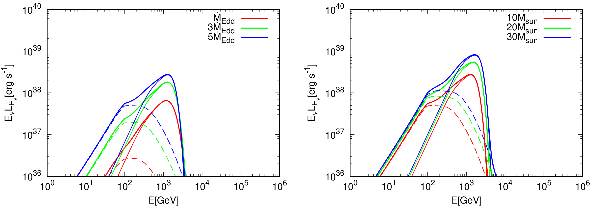
图注：High energy neutrino differential luminosities from the corona associated with super-Eddington accretion disks. {\(\it\) Left}: spectra for different mass accretion rates ($\dot{M}=\dot{M}_{\rm Edd}, 3\dot{M}_{\rm Edd}$, and $5\dot{M}_{\rm Edd}$) with a black hole mass fixed at $10M_{\odot}$. {\(\it\) right}: spectra for different black hole masses ($M_{\rm BH}=10M_{\odot}, 20M_{\odot}$, and $30M_{\odot}$) with the accretion rate fixed at $\dot{M}=5\dot{M}_{\rm Edd}$. Thin solid lines represent the neutrino luminosity produced via the $p\gamma$ process, the dashed lines represent that produced via the $pp$ process, and the thick solid lines show the total luminosity.
对应解读：“建议重点查看的图表”第4项与“关键图表逐图导读”图3：中微子谱分量图，比较总谱、pγ 分量和 pp 分量随吸积率与黑洞质量的变化。
入选理由：这是支撑论文核心物理结论的最直接图：图注明确给出高能中微子微分光度，并区分 thin solid 的 pγ、dashed 的 pp 以及 thick solid 的总谱，可检验日报中关于 TeV 到十几 TeV 中微子、pp 随吸积率增强并展宽总谱的解读。相比其他图，它同时呈现谱形、分量分解和参数依赖，是最值得嵌入的主结果图。
来源与置信度：\(arxiv_source\)；high；\(arxiv_source\) / sample7.tex:figure[3]
Fig02
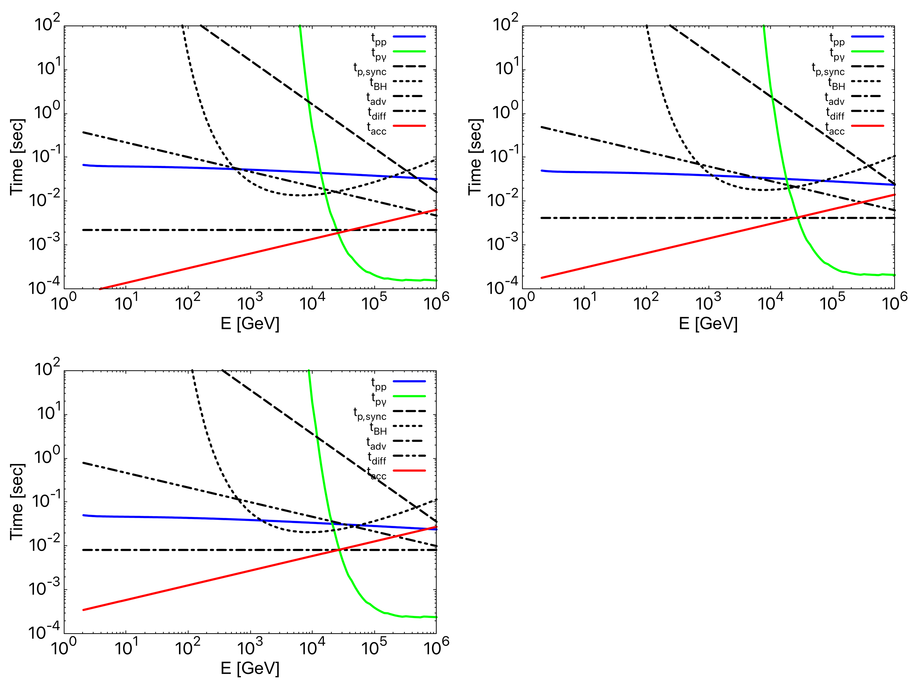
图注：Various important timescales of the corona as functions of the energy of a particle associated with mass accretion rates of $1\dot{M}_{\rm Edd}$ (left), $3\dot{M}_{\rm Edd}$ (middle), and $5\dot{M}_{\rm Edd}$ (right) around a black hole with mass of $10M_{\odot}$.
对应解读：“建议重点查看的图表”第3项与“关键图表逐图导读”图2：质子加速和冷却时间尺度图，横轴为粒子能量，比较 \(t_acc\)、\(t_pp\)、t_pγ、\(t_dyn\) 等限制过程。
入选理由：图注明确说明它给出不同吸积率下随粒子能量变化的关键时间尺度，正对应日报要求检查的 \(t_acc\) 与冷却/逃逸时间交点以及 \(E_p,max\) 是否达到几十 TeV。它是判断 ULX 日冕是否真能把质子加速到产生 TeV 中微子所需能量的关键诊断图。
来源与置信度：\(arxiv_source\)；high；\(arxiv_source\) / sample7.tex:figure[2]
Fig05
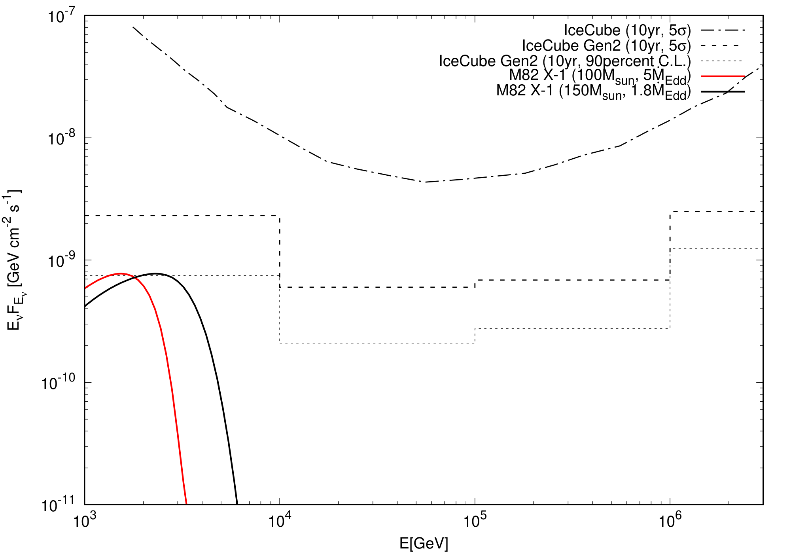
图注：Predicted neutrino fluxes from M82 X-1 under the assumption of a $100M_{\odot}$ black hole accreting at $\dot{M}=5\dot{M}_{\rm Edd}$ (red solid) and of a $150M_{\odot}$ black hole accreting at $\dot{M}=1.8\dot{M}_{\rm Edd}$ (black solid). The dash-dotted and dashed curves indicate the 10-year sensitivities of IceCube and IceCube-Gen2, respectively. The predicted flux does not reach the 5$\sigma$ discovery sensitivity (thick lines) but exceeds the 90\% confidence level sensitivity (thin lines) over a limited energy range, suggesting that M82 X-1 is among the most promising ULXs for neutrino detection.
对应解读：“建议重点查看的图表”第6项与“关键图表逐图导读”图5：M82 X-1 预测中微子通量与 IceCube、IceCube-Gen2 灵敏度比较，以及 90% 置信水平可探测性。
入选理由：该图直接对应摘要中 M82 X-1 可能在未来中微子观测中达到 90% 置信水平可探测的结论。图注明确包含 M82 X-1 两组黑洞质量与吸积率模型、IceCube/IceCube-Gen2 10年灵敏度、5σ 发现灵敏度和 90% CL 灵敏度，是连接理论模型与观测前景的核心图。
来源与置信度：\(arxiv_source\)；high；\(arxiv_source\) / sample7.tex:figure[5]
Fig04
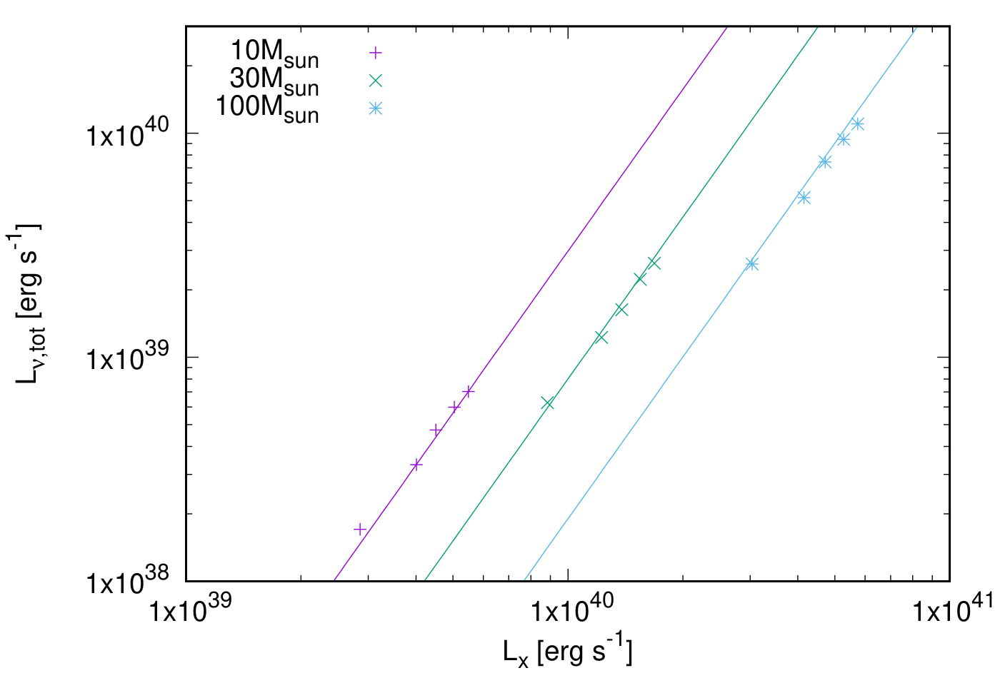
图注：Relations between the X-ray luminosity $L_{\rm X}$ and the integrated neutrino luminosity $L_{{\nu},{\rm tot}}$ for different black hole masses ($M_{\rm BH}=10M_{\odot}$, $30M_{\odot}$, and $100M_{\odot}$) calculated from our wind-fed corona model. The points represent the luminosities obtained for different mass accretion rates, while the solid lines show the best-fit relation, $L_{{\nu},{\rm tot}}\propto M_{\rm BH}^{-1.2}L_{\rm X}^{2.4}$.
对应解读：“建议重点查看的图表”第5项与“关键图表逐图导读”图4：\(L_{ν,tot}\) 与 \(L_X\) 相关图，检查拟合斜率 2.4、黑洞质量依赖和散布。
入选理由：图注明确给出 X 射线光度与积分中微子光度的关系，并标出最佳拟合 \(L_{ν,tot}\)∝\(M_BH^{-1.2}L_X^{2.4}\)。这正是日报模型解读中强调不可盲目外推、需关注适用范围和质量依赖的定量关系图，适合用于说明源筛选权重和参数退化。
来源与置信度：\(arxiv_source\)；high；\(arxiv_source\) / sample7.tex:figure[4]
Fig01
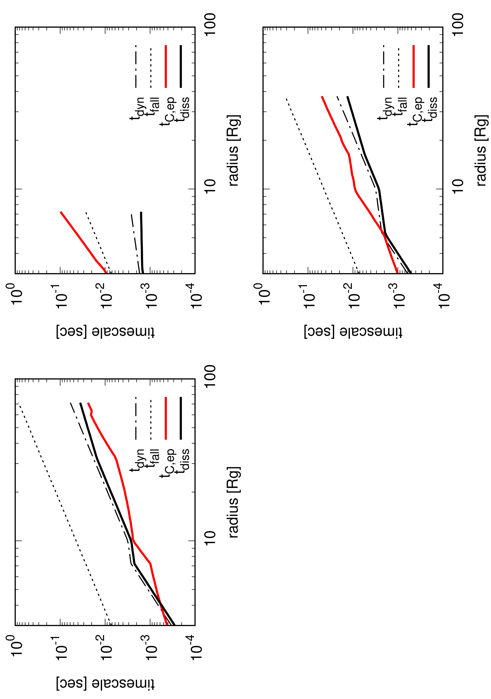
图注：Various important timescales of the corona associated with mass accretion rates of $1\dot{M}_{\rm Edd}$ (left), $5\dot{M}_{\rm Edd}$ (middle), and $10\dot{M}_{\rm Edd}$ (right) around a black hole with mass of $10M_{\odot}$. Note that the outer radius of the region where the wind solution exists (i.e., the corona exists) is larger for larger $\dot{M}$.
对应解读：“建议重点查看的图表”第1项和第2项，以及“关键图表逐图导读”图1：日冕参数空间/无碰撞条件与吸积率相关的关键时间尺度。
入选理由：图注显示它比较 1、5、10 倍爱丁顿吸积率下日冕的重要时间尺度，正好覆盖论文摘要中无碰撞条件只在约 5 倍爱丁顿以下成立的关键阈值。虽然图注未逐项列出 \(n_p\)、B、u_γ 等物理量，但它直接支撑无碰撞判据和高吸积率下库仑碰撞限制这一基础前提，因此仍应纳入。
来源与置信度：\(arxiv_source\)；high；\(arxiv_source\) / sample7.tex:figure[1]
强相关工作
这篇工作与 AGN 日冕中微子模型有直接概念联系：二者都把致密吸积流上方的磁化热等离子体作为强子加速区，并利用强 X 射线光子场触发 \(p\gamma\) 过程。但 ULX 的尺度、吸积率、盘风密度和宿主环境不同，\(pp\) 过程可能比典型低光度 AGN 日冕更突出。建议检索关键词包括 “AGN corona neutrinos”, “accretion disk corona cosmic rays”, “IceCube Seyfert neutrinos”。
它也与 ULX 超爱丁顿吸积和盘风文献相连，尤其是关于几何准直、风吸收线、脉冲 ULX 和硬 X 射线尾的研究。相反或张力观点主要来自两方面：一是许多 ULX 可能是中子星而非黑洞，本文标题和模型强调超爱丁顿吸积黑洞；二是高 \(L_X\) 可能受准直影响，真实各向同性能量预算可能低于表观值。建议检索 “ultraluminous X-ray source super-Eddington wind”, “M82 X-1 intermediate mass black hole”, “pulsating ULX neutron star”, “ULX beaming”。
同一事件 / 同类源线索：
相似工作：
基础理论 / 方法工作：
- https://arxiv.org/abs/0707.4513
- https://arxiv.org/abs/1703.10780
- https://arxiv.org/abs/1411.0286
- https://arxiv.org/abs/1912.07625
相反观点 / 张力线索：
4. Evidence for a bursty $γ$-ray QPO in the neutrino-associated FSRQ PKS 1424$-$418 using Fast Template Periodograms and Machine Learning
- 来源：arXiv / astro-ph.HE
- 链接：https://arxiv.org/abs/2608.00664v1
- 作者：Aaron A. Maldonado, Alberto Domínguez, Adithiya Dinesh, Alba Rico, Pablo Peñil, Sara Buson, Marco Ajello
- 评分：novelty 8/10，importance 7/10，relevance 10/10，final 9.35/10
- 推荐理由：Fermi-LAT blazar伽马射线QPO搜索，使用形态感知periodogram和机器学习验证；PKS 1424-418为中微子关联FSRQ，主题高度相关，尽管全样本试验后显著性仍偏温和。
中文题目：用快速模板周期图和机器学习在中微子相关平谱射电类星体 PKS 1424−418 中寻找爆发型 γ 射线准周期振荡的证据
做了什么：这篇文章重新审视了费米 \(\gamma\) 射线耀变体光变曲线中的准周期振荡搜索问题：传统频域方法通常偏好近似正弦的周期信号，但耀变体耀发往往是短促、非对称、相位局域的爆发。作者对 \(100\) 个高时间采样的 Fermi-LAT 耀变体 \(7\) 天 bin 光变曲线做盲搜索，先用奇异谱分析去除长期基线，再用快速模板周期图测试正弦、高斯爆发和来自 PG 1553+113 的经验非对称模板，最后用在 \(5\times10^4\) 条模拟光变曲线上训练的随机森林区分真实相位结构和红噪声。结果找到 \(9\) 个源内显著性超过 \(3\sigma\) 的候选，其中 \(6\) 个在正弦假设下会被压低；机器学习筛掉其中 \(5\) 个后，PKS 1424−418 保留为一个周期约 \(4.8\) 年、源内显著性 \(3.76\sigma\)、全样本试验因子修正后约 \(2.4\sigma\) 的爆发型候选。
为什么重要：重要性不在于它已经给出一个板上钉钉的耀变体周期，而在于它指出了一个实际的数据分析盲区：如果信号是“每隔几年出现一次形状相似的爆发”，而不是平滑正弦波，标准 Lomb–Scargle 或正弦周期图会把功率分散到多个谐波和旁瓣中，导致检出效率下降。PKS 1424−418 还因曾与 PeV 中微子事件方向和时间上相关而受关注，因此任何可能反映喷流长期调制的 \(\gamma\) 射线周期性，都直接关系到高能中微子产生区、喷流几何和吸积—喷流耦合的解释。
理论 / 观测 / 仪器方法价值：方法价值主要有三点。第一，快速模板周期图把“周期性”从单一正弦扩展为可指定形态的重复模板，适合爆发主导的高能瞬变光变曲线。第二，奇异谱分析用于分离慢变基线和候选周期结构，减少长期红噪声趋势对周期峰的污染。第三，随机森林验证不是只看最高周期图功率，而是检查折叠相位结构、稳定性和红噪声可模仿性，为未来 LSST、CTA、Fermi 长基线数据中的非正弦周期搜索提供了可迁移的统计框架。
为什么应该关注：如果你关心耀变体喷流、中微子天文学或时域统计，这篇值得看：它把一个常见但常被低估的问题具体化了——我们寻找的“周期”未必长得像正弦。PKS 1424−418 的全局显著性还不够宣称发现，但它是一个清楚的案例：方法假设会决定你能看见哪类物理。未来若这个 \(4.8\) 年相位继续重复，或与多波段、偏振、射电 VLBI 结构变化同步，它将成为检验喷流岁差、双黑洞、盘不稳定或准周期粒子加速模型的有用目标。
展开详细解读：文章讲解、背景、理论、重点章节、图表与相关工作
文章详细讲解
科学问题：耀变体的 \(\gamma\) 射线光变由相对论喷流、冲击、磁重联和多尺度湍动共同驱动，功率谱通常接近红噪声，任何长周期候选都很容易被随机低频起伏伪装。传统准周期振荡搜索多用正弦或窄带傅里叶峰作为信号模板，但 Fermi-LAT 中许多亮耀变体的高能光变是强烈非高斯、非对称、爆发式的。如果一个源每隔若干年出现一次短促耀发，那么它的频域功率会分散到基频、谐波和泄漏结构中，单一正弦检验可能低估真实的相位重复性。本文的核心问题就是：在不牺牲统计控制的前提下，是否能找到那些被正弦假设漏掉的爆发型 \(\gamma\) 射线准周期信号。
作者怎么做：他们选取 \(100\) 个 Fermi-LAT 耀变体的 \(7\) 天 bin 高采样光变曲线，做盲搜索而不是只盯已知名源。第一步用奇异谱分析分解长期趋势、低频基线和较短时标结构，尽量把非平稳红噪声对周期峰的影响降下来。第二步使用快速模板周期图，对三个模板族分别计算周期匹配程度：标准正弦模板、代表短促对称爆发的高斯模板，以及从 PG 1553+113 光变形态中提取的经验非对称模板。第三步用 \(5\times10^4\) 条模拟光变曲线训练随机森林，目标不是简单复现周期图峰值，而是区分真正有稳定相位结构的重复爆发和红噪声偶然峰。
关键结果：作者报告 \(9\) 个源内显著性超过 \(3\sigma\) 的周期候选。PG 1553+113 等 \(3\) 个更持久、近似可由多种模板恢复的候选在三类模板下都能出现，这说明新流程没有丢掉传统方法能看到的信号。更有意思的是另外 \(6\) 个候选：它们在正弦模型下被明显压低，但在高斯爆发或非对称经验模板下变得可见。随机森林进一步筛查后，\(5\) 个被判定缺乏稳定相位相干性，说明模板周期图本身仍会从红噪声中捞出诱人的假峰。最终剩下的主要新候选是 PKS 1424−418，周期约 \(4.8\) 年，源内显著性为 \(3.76\sigma\)，在 \(100\) 源试验因子修正后约为 \(2.4\sigma\)。
局限和下一步：这不是一个全局高显著性的周期发现，作者也没有把 \(2.4\sigma\) 后验修正显著性包装成确证。限制主要来自时间基线与周期长度的比例：Fermi-LAT 观测虽已超过十多年，但对 \(4.8\) 年周期只覆盖少数循环，长期趋势、曝光变化、源混淆和非平稳红噪声都可能影响结论。下一步最关键的是等待新的周期窗口、用独立的多波段光变和偏振数据验证相位关系，并把模板周期图的试验因子、模板自由度和机器学习选择函数纳入更完整的层级贝叶斯或仿真校准框架。
关键结果是怎么做出来的
样本与数据选择方面，本文使用的是 \(100\) 个 Fermi-LAT 耀变体的 \(7\) 天 bin \(\gamma\) 射线光变曲线。这个选择在时间分辨率和信噪比之间做了折中：bin 太短会让许多时间点只有上限或大误差，bin 太长又会抹平短促耀发形态。作者强调这是盲样本搜索，因此 PKS 1424−418 不是事后从单一源中挑出来的；这也意味着最后必须考虑 \(100\) 个源和多个模板、多个周期扫描带来的试验因子。
证据链的第一环是去趋势。奇异谱分析把光变曲线分解为一组由数据自适应给出的时间模式，作者用它估计并减去慢变基线。这里的关键诊断不是“去趋势后曲线更平”，而是去趋势不能把真实的长周期爆发结构也一起消掉，也不能把红噪声切割成人造周期。读者应重点看原始曲线、基线成分和残差光变的对比，以及候选周期在不同去趋势参数下是否移动或消失。
证据链的第二环是模板周期图。正弦模板恢复了 PG 1553+113 等已知或近似持久候选，但对爆发型候选不敏感；高斯爆发模板和 PG 1553+113 经验非对称模板在若干源中给出更高功率。对 PKS 1424−418，周期约 \(4.8\) 年的峰在形态感知模板下更突出，说明其相位结构更像重复耀发而非连续振荡。这里应检查周期图峰的宽度、旁瓣、谐波结构，以及最高峰是否只由一两个极端数据点驱动。
统计显著性方面，作者先给出源内显著性，PKS 1424−418 达到 \(3.76\sigma\)。这通常意味着在源特定红噪声模拟或重采样下，得到同等或更高统计量的概率很小。但全样本盲搜索后，\(100\) 个源的试验因子把显著性降到约 \(2.4\sigma\)。这个降幅是本文最应该正视的地方：源内结果说明 PKS 1424−418 是值得后续监测的候选，全局结果说明它还不是稳健发现。
机器学习验证是本文区别于普通周期图论文的核心环节。随机森林用 \(5\times10^4\) 条模拟光变曲线训练，输入应包含周期图、折叠相位、相位稳定性或形态相关特征一类的信息，以学习“相干重复”与“红噪声偶然峰”的差别。它拒绝了 \(6\) 个形态模板新候选中的 \(5\) 个，显示作者并未简单把模板放宽后增加的峰都当成发现。PKS 1424−418 能通过这一关，是本文称其为“结构稳定”候选的主要依据。
系统误差和稳健性检验需要读者特别核对。Fermi-LAT 长期光变可能受曝光、背景模型、邻近源、太阳月亮污染、能段选择、上限处理和自相关误差影响；模板周期图还会受模板宽度、相位网格、周期扫描范围和奇异谱分析窗口长度影响。一个可信候选应在合理改变这些选择后保持相近周期和相位，而不是只在单一参数配置下出现。
展开背景、理论、公式、模型、章节和图表导读
背景知识
研究对象 PKS 1424−418 是一个平谱射电类星体，即 FSRQ，属于喷流几乎指向视线方向的活动星系核。它的高能辐射受相对论多普勒增亮强烈影响，观测到的 \(\gamma\) 射线耀发可以由喷流内部耗散、外部康普顿散射、磁重联或几何指向变化造成。因为喷流朝向接近视线，小的速度或角度变化就可能造成大幅通量变化，这既让周期性更容易被放大，也让几何假象更难排除。
PKS 1424−418 特别受关注，是因为它曾在一次强 \(\gamma\) 射线耀发期间与 IceCube 的 PeV 中微子事件在时间和方向上产生关联讨论。此类关联的物理动机是：如果喷流中有强质子加速，质子与辐射场或气体发生相互作用可产生带电介子，继而衰变出高能中微子；同时电磁级联和轻子过程会产生 \(\gamma\) 射线。然而单个中微子事件的角分辨和背景概率使关联很难确证，所以任何独立的长期喷流调制证据都可能帮助判断该源是否有特殊物理状态。
耀变体准周期振荡的历史充满争议。OJ 287 常被作为可能双黑洞驱动光学准周期的原型，PG 1553+113 则是 Fermi-LAT \(\gamma\) 射线周期候选中的代表。但 AGN 光变普遍有红噪声，有限时间基线会产生“看起来像几圈周期”的假信号。过去一些周期候选在延长数据后显著性下降，说明周期搜索必须把红噪声、试验因子和事后选择效应处理得非常严格。
为什么现在值得重新看？一方面，Fermi-LAT 已积累了十多年全天监测数据，使多年时标周期至少能覆盖两到三轮以上；另一方面，时域天文学正在从单纯傅里叶检索走向形态匹配、机器学习和仿真校准。对耀变体而言，非正弦周期很自然：如果每个周期只在特定相位触发一次强耀发，频域正弦功率未必是最优统计量。本文正是借助更长基线和形态感知方法，重新检验这类被传统方法低估的信号。
常见误区有几个。第一，把周期图最高峰直接解释成物理周期，而忽略红噪声和扫描试验因子。第二，把“源内 \(3\sigma\)”等同于“全样本 \(3\sigma\)”；在盲搜索里这是不成立的。第三，认为非正弦模板一定会提高真实性；实际上模板自由度增加也会提高假阳性率，所以必须用模拟和独立验证校准。第四，认为中微子关联自动支持周期性；两者最多是同一源物理图景中的线索，不能互相替代统计证据。
基础理论 / 方法脉络
从物理图像看，耀变体 \(\gamma\) 射线光变可被理解为喷流辐射区能量注入、粒子冷却、辐射场变化和多普勒因子变化的叠加。若辐射区以洛伦兹因子 \(\Gamma\) 运动，观测通量对多普勒因子 \(\delta\) 非常敏感；因此喷流弯曲、岁差或轨道调制即使只导致小角度变化，也可能在观测端表现为准周期耀发。另一方面，湍流和随机注入会产生近似红噪声的功率谱，使长时标随机起伏看起来像周期。
准周期振荡不等于严格周期。严格周期要求相位和形态在许多循环中稳定重复，而天体物理中的 QPO 允许相位漂移、振幅变化和有限相干时间。对 AGN 而言，Fermi-LAT 数据长度相对多年周期仍然有限，因此可检验的通常是“是否存在比红噪声更稳定的相位结构”，而不是数学意义上的无限相干振荡。本文将这个问题转化为模板匹配：给定周期 \(P\)、相位 \(\phi\) 和模板形态，问数据是否更像按该模板重复。
传统正弦周期图假设信号近似 \(A\sin(2\pi t/P+\phi)\)。这对平滑振荡最优，但对窄脉冲或非对称耀发不是最优；窄脉冲需要许多谐波才能表示，有限采样和不规则误差会把功率分散开。快速模板周期图的思想是直接使用更接近光变形态的模板，例如高斯爆发或经验非对称爆发，在每个试探周期上折叠相位并评估匹配优度。
奇异谱分析提供了一种非参数去趋势方式。它把时间序列嵌入到延迟坐标矩阵中，再做奇异值分解，前几个大奇异值通常代表长期趋势或强相干成分。对本文这类周期搜索，去趋势的物理解释要谨慎：被移除的不是某个确定物理过程，而是数据中的低维慢变结构。参数选择过强可能消除真实多年信号，过弱则让红噪声泄漏到候选周期。
机器学习部分的核心不是“让算法发现周期”，而是把大量红噪声模拟和注入信号模拟映射到一组判别特征上。随机森林适合处理非线性特征组合，比如周期峰强度、折叠相位集中度、不同模板间一致性、不同时间子段相位稳定性等。它的系统误差来自训练模拟是否覆盖真实耀变体噪声族；如果真实噪声比模拟更非平稳或更重尾，分类器可能过度自信。
公式与推导
第一步，把观测光变写成信号、趋势和噪声的叠加：
其中 \(y_i\) 是第 \(i\) 个 \(7\) 天 bin 的 \(\gamma\) 射线通量或相应估计量，\(b(t_i)\) 是慢变基线，\(s(t_i;P,\phi,\boldsymbol{\theta})\) 是周期为 \(P\)、相位为 \(\phi\)、形态参数为 \(\boldsymbol{\theta}\) 的候选重复信号，\(\epsilon_i\) 包含测量误差和内禀随机变率。这个分解是假设周期搜索应在去除主要长期趋势后进行。
第二步，若使用标准正弦模型，候选信号可写为
其中 \(\omega=2\pi/P\)，\(A\) 和 \(B\) 是线性振幅参数。Lomb–Scargle 类统计量本质上是在每个 \(\omega\) 上比较含有这两个参数的模型与常数或基线模型的拟合改进。
第三步，对爆发模板，可把信号写成按周期重复的模板列：
其中 \(a\) 是振幅，\(T\) 是定义在相位 \([0,1)\) 上的模板，\(t_0\) 是相位零点，\(\boldsymbol{\theta}\) 可包含爆发宽度、偏斜度或经验形态参数。高斯爆发模板可近似写为
其中 \(\varphi\) 是折叠相位，\(\varphi_0\) 是爆发相位，\(\sigma_\varphi\) 是相位宽度，\(d(\varphi,\varphi_0)\) 是周期边界条件下的最短相位距离。
第四步，在高斯误差近似下，给定模板的加权残差为
其中 \(T_i\) 是在 \(t_i\) 处的模板值，\(\sigma_i\) 是通量误差。对固定 \(P\)、\(\phi\) 和 \(\boldsymbol{\theta}\)，最佳线性振幅满足
这说明模板周期图的核心统计量可以理解为模板与去趋势光变的加权相关。
第五步，周期图功率可定义为相对于无周期模型的拟合改进：
其中 \(\chi_0^2\) 是仅含基线或噪声模型时的残差平方和。\(Z(P)\) 越大，表示某个相位和模板形态能更好解释数据。但因为扫描了许多 \(P\)、\(\phi\) 和模板，\(Z(P)\) 的零假设分布不能简单按单次 \(\chi^2\) 分布解释。
第六步，红噪声常用功率谱近似描述为
其中 \(S(f)\) 是频率 \(f\) 处的功率谱密度，\(\alpha\) 是红噪声斜率，\(N\) 是归一化，\(C\) 是白噪声或测量噪声底。耀变体中 \(\alpha\) 的不确定性会直接影响假阳性率：较陡的红噪声更容易在低频产生看似周期的峰。
第七步，源内假警概率可由模拟分布计算：
其中 \(N_{\rm sim}\) 是红噪声模拟数量，\(Z_{j,\max}\) 是第 \(j\) 条模拟在同样扫描流程下的最大统计量，\(Z_{\rm obs}\) 是观测最大统计量。对应的高斯等效显著性可写为
其中 \(\Phi^{-1}\) 是标准正态累积分布的反函数。
第八步，盲搜索需要试验因子修正。若近似有 \(N_{\rm trial}\) 个独立源或独立检验，则全局假警概率为
近似式适用于 \(p_{\rm local}\ll1\)。本文中 PKS 1424−418 的源内 \(3.76\sigma\) 在 \(100\) 源搜索后降为约 \(2.4\sigma\)，物理含义是它值得跟踪，但还没有达到发现标准。
模型拟合 / 应用方法
本文的拟合对象是 Fermi-LAT 长期 \(\gamma\) 射线光变的时间结构，而不是单个能谱模型。实际流程可看成三层拟合：先拟合或重构慢变基线，再在残差中拟合不同周期和模板形态，最后用模拟和机器学习评估所得峰是否可由红噪声产生。参数包括周期 \(P\)、相位 \(t_0\) 或 \(\phi\)、模板振幅 \(a\)、模板宽度或非对称形态参数，以及红噪声斜率和归一化等噪声参数。
似然层面，如果通量点近似高斯，可以用加权 \(\chi^2\) 或等价高斯似然；但 Fermi-LAT 低计数 bin 更严格地说来自泊松似然和曝光响应折叠后的源模型拟合。文章使用已构建的光变曲线做周期搜索，因此读者应关注通量误差、上限处理和时间 bin 之间相关性是否会影响周期图统计量。若某些耀发 bin 的误差非高斯，模板匹配可能被少数高权重点主导。
参数退化很重要。周期 \(P\) 与相位 \(\phi\) 强相关，尤其当观测只覆盖两三轮候选周期时，移动一个耀发峰就可能改变最佳周期。模板宽度与振幅也退化：窄模板可以用高振幅匹配少数点，宽模板则更像低频趋势。去趋势强度与周期信号之间也有退化，如果奇异谱分析把多年时标成分归入基线，候选周期会被削弱；如果基线保留太多红噪声，假峰会增加。
随机森林分类可视为在传统似然之外增加一个结构先验或判别器。它不直接给出物理参数后验，而是根据模拟训练集判断候选峰是否具有稳定相位结构。这里的关键假设是模拟光变足够代表真实零假设，包括红噪声斜率分布、耀发幅度分布、采样窗口和测量误差。如果训练集过于理想化，分类器可能把真实耀变体的非平稳随机耀发误判为周期结构。
残差诊断应围绕几个问题展开：折叠相位图中是否只有一个循环贡献了主要信号；去掉最强耀发后周期峰是否仍存在；把光变分成前后两段后相位是否一致；不同能段或不同 Fermi-LAT 分析选择下周期是否稳定；附近源或背景变化是否在同一时间产生伪信号。对 PKS 1424−418，模型目前最合理的用途是提出可检验预测：下一次候选相位附近是否出现相似 \(\gamma\) 射线活动，而不是用现有数据反推精确的双黑洞或喷流岁差参数。
重点章节 / 结果段落怎么读
数据和样本部分应先看作者如何定义 \(100\) 个盲搜索耀变体、为何采用 \(7\) 天 bin、光变曲线覆盖的时间范围、通量误差和缺测点处理方式。这里决定了后续所有显著性解释的边界：如果样本是根据亮度、变率或先验兴趣筛选的，试验因子和选择函数就要相应理解。
方法部分的奇异谱分析段落很关键。读者应关注嵌入窗口长度、保留或移除的分量数、以及作者是否展示了去趋势前后周期峰的变化。SSA 是强大的数据驱动工具，但也可能把真实长周期结构吸收到基线里，因此稳健性检验比形式描述更重要。
快速模板周期图部分是本文方法创新的核心。建议比较三类模板的定义、参数范围和扫描网格：正弦模板代表传统检验，高斯爆发模板代表局域对称耀发，PG 1553+113 经验模板代表现实中的非对称爆发形态。读者要看模板自由度增加后，作者如何重新校准显著性，而不是只看周期图峰变高。
机器学习验证部分应重点阅读训练集构造、特征输入、标签定义、交叉验证和混淆矩阵。如果模拟只覆盖简单红噪声，结论会弱；如果模拟包含不同噪声斜率、采样、误差和注入周期信号，随机森林的筛选更可信。本文筛掉 \(5\) 个形态模板候选，是理解其保守性的关键结果。
结果和讨论部分应把 PKS 1424−418 与 PG 1553+113 等恢复候选分开读。前者是新提出的爆发型周期候选，显著性经全局修正后有限；后者更像方法 sanity check，说明流程能找回已知近似周期源。讨论中的物理解释，如喷流几何、二元黑洞或吸积调制，都应被视为可能场景，而非由现有统计显著性唯一推出的结论。
建议重点查看的图表
-
样本光变曲线总览：应查看 PKS 1424−418 和若干对照源的原始 \(7\) 天 bin \(\gamma\) 射线通量、误差条和主要耀发时间。关键是候选周期是否由多个循环中的相似相位活动支持。
-
SSA 去趋势图：应看原始光变、重构基线和残差的叠加。若基线在候选 \(4.8\) 年时标上有明显结构，需要警惕去趋势参数对结果的影响。
-
三类模板周期图对比：应比较正弦、高斯爆发和经验非对称模板的周期图峰。真正支持本文主张的趋势是：某些源在正弦下弱，而在形态模板下显著增强。
-
折叠相位图：对 PKS 1424−418，应看按 \(P\simeq4.8\) 年折叠后的通量是否在固定相位附近集中增强，以及不同周期循环是否都贡献了该增强。
-
随机森林分类诊断：建议检查 ROC 曲线、特征重要性、混淆矩阵或候选源分类概率。重点是 PKS 1424−418 与被拒绝的 \(5\) 个候选在结构特征上有何不同。
-
显著性和试验因子表：应看 \(9\) 个 \(>3\sigma\) 候选的源内显著性、全局修正显著性、最佳周期和最佳模板。不要只看局部最高值。
-
稳健性检验图或表：包括改变去趋势设置、模板宽度、周期搜索范围、时间子样本后，候选周期是否保持。对长周期候选，这是最有价值的诊断量之一。
关键图表逐图导读
图 1：若论文给出样本或代表性光变曲线，横轴通常是观测时间，纵轴是 Fermi-LAT \(\gamma\) 射线通量或能量通量，数据点带误差条。读图时不要只看最高耀发，而要看强耀发之间的时间间隔是否接近 \(4.8\) 年，以及低态区域是否足够长、足够稳定。陷阱是单个极端耀发会在许多模板下产生虚假的匹配优势。
图 2：SSA 去趋势图通常会把原始曲线、慢变基线和残差分开显示。横轴仍是时间，纵轴是通量或归一化残差。关键是候选周期峰对应的结构在残差中仍可见，而不是完全由基线选择制造出来。读图陷阱是把平滑后的视觉周期当成统计周期；应同时看不同 SSA 参数下的结果。
图 3：模板周期图对比应以周期或频率为横轴，以周期图功率、显著性或假警概率为纵轴，不同颜色表示正弦、高斯爆发和经验非对称模板。本文主结论要求在 PKS 1424−418 附近看到形态模板的峰明显高于正弦模板。陷阱是模板越灵活越容易提高峰值，因此必须结合模拟校准后的显著性，而非原始功率。
图 4：折叠相位图通常以相位 \(\varphi\in[0,1)\) 为横轴，以通量或残差通量为纵轴，可能叠加最佳模板线。应查看不同周期循环的数据点是否在同一相位附近增强；如果只有一个循环有强点，其余循环为空或低信噪，证据较弱。误差条和相位 bin 内点数同样重要。
图 5：候选汇总图或表可能列出 \(9\) 个 \(>3\sigma\) 候选、最佳周期、最佳模板、源内显著性和机器学习判定。读者应重点比较被随机森林拒绝的候选与 PKS 1424−418 的差异，尤其是相位稳定性和模板一致性，而不是仅按周期图功率排序。
图 6：机器学习诊断若包括 ROC 曲线、特征重要性或分类概率分布，横轴和纵轴可能分别是真阳性率与假阳性率、特征名称与重要性、或候选概率与样本数。关键是分类器是否能在模拟测试集中区分注入周期和红噪声，且 PKS 1424−418 是否位于真实周期样本常见区域。陷阱是高分类概率并不自动等于天体物理显著性，它依赖训练模拟的真实性。
图 7：稳健性检验图若存在，可能展示候选周期随去趋势窗口、模板宽度、能段或时间子样本变化的轨迹。横轴是分析配置，纵轴是最佳周期或显著性。一个可信候选应在合理配置范围内保持 \(P\simeq4.8\) 年附近，而不是在参数微调下跳到无关周期。
论文原图 / 可嵌入图片
Fig01
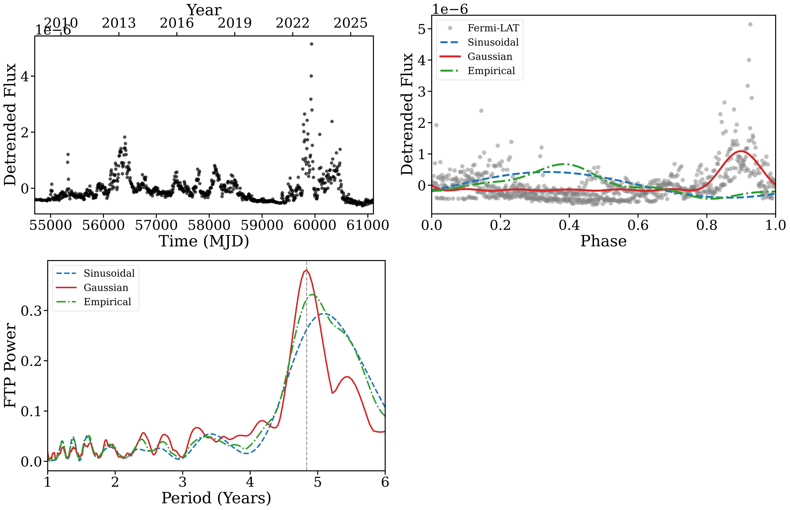
图注：The time-domain and frequency-domain periodicity analysis of the robust QPO candidate 4FGL J1427.9-4206. \(\textit{Top panel:}\) The 17.4-year SSA-detrended $\gamma$-ray light curve. The emission is characterized by discrete, repeating burst-like events separated by extended periods of quiescence, a morphology that strongly penalizes standard sinusoidal searches. These discrete active states can be visually traced across the baseline, with distinct flaring clusters peaking around early 2013 (MJD $\sim56400$), late 2017 to early 2018 (MJD $\sim58100-58200$), and late 2022 (MJD $\sim59900-60000$), perfectly matching the $\sim4.84$-year characteristic timescale. \(\textit{Bottom left:}\) The phase-folded light curve overlaid with the best-fit Sinusoidal (blue dashed) and Gaussian ($\sigma=0.05$; red solid) templates. \(\textit{Bottom right:}\) The resulting Fast Template Periodograms. The sinusoidal assumption suffers from spectral leakage, yielding a marginal $2.84\sigma$. Conversely, the Gaussian template recovers the discrete burst structure, rescuing the $4.84$-year signal to a robust source-specific detection ($3.76\sigma$; $\approx 2.4\sigma$ after the sample-wide trial correction, see Section 2.4). We note that the $4.84$-year periodicity is physically decoupled from the secular baseline drift; the dynamic SSA successfully isolated the $>6$-year monotonic trend into the leading (highest-variance) orthogonal components, while the periodic signature emerges cleanly from the lower-variance, localized flaring structures.
对应解读：对应“建议重点查看的图表”第1、2、3、4、6项，以及关键图表逐图导读中的图1、图3、图4和模型拟合/残差诊断段落。
入选理由：这是全文核心结果图，直接展示 PKS 1424−418/4FGL J1427.9−4206 的 SSA 去趋势后光变、按约 4.84 年折叠的相位图、正弦与高斯模板拟合，以及 Fast Template Periodogram 显著性对比。它同时支撑‘爆发型模板优于正弦模板’、源内 3.76σ、全局约 2.4σ、多个耀发循环是否同相重复等日报最关键判断，科学价值最高。
来源与置信度：\(arxiv_source\)；high；\(arxiv_source\) / \(QPO_FTP.tex\):figure[1]
Fig02
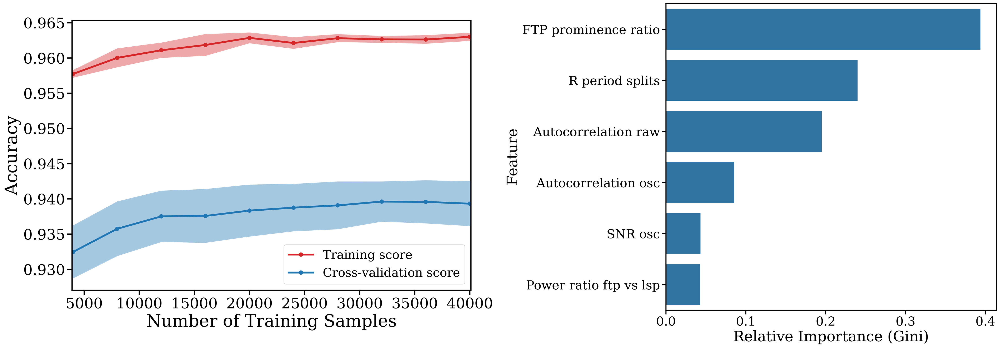
图注：Performance and interpretability of the Random Forest structural classifier. \(\textit{Left panel:}\) The learning curve demonstrates that the $5\times10^4$ sample simulated training set fully saturates the model's learning capacity, preventing overfitting and ensuring robust generalization. \(\textit{Right panel:}\) The Gini feature importances reveal that while the absolute prominence of the peak naturally serves as the primary discriminator, the algorithm prioritizes physical structural markers, such as Split-Half Temporal Stability and Autocorrelation, over standard relative periodogram power ratios. This confirms its utility as a rigorous topological filter against stochastic red-noise flaring.
对应解读：对应“建议重点查看的图表”第5项随机森林分类诊断，以及关键图表逐图导读中的图6和模型拟合段落中关于机器学习结构判别器的讨论。
入选理由：该图给出随机森林学习曲线和特征重要性，直接检验分类器是否过拟合、训练样本是否足够，以及 Split-Half Temporal Stability、Autocorrelation 等结构特征是否真的参与筛除红噪声假峰。它是理解为什么 5 个候选被拒绝、PKS 1424−418 被保留的关键诊断图。
来源与置信度：\(arxiv_source\)；high；\(arxiv_source\) / \(QPO_FTP.tex\):figure[2]
Fig05
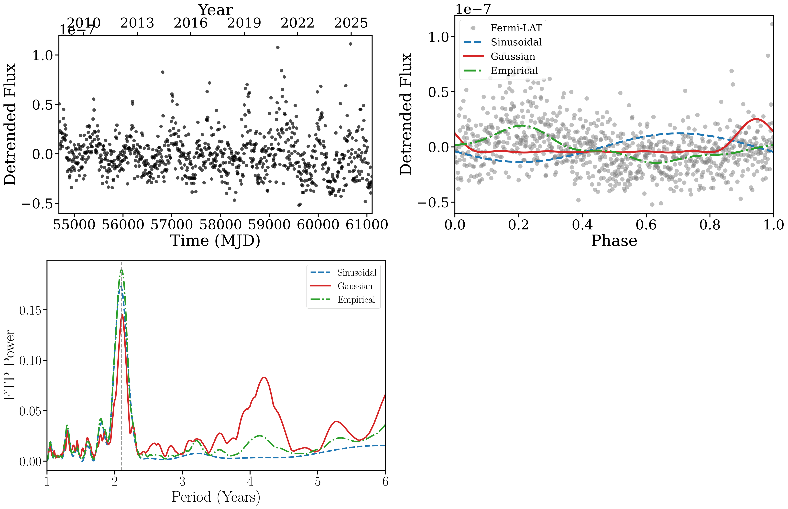
图注：Same as Fig.~\(\ref{fig:j1427_analysis},\) but for the Golden Candidate 4FGL J1555.7+1111 (PG 1553+113).
对应解读：对应“建议重点查看的图表”第3、6项，以及关键图表逐图导读中关于三类模板周期图对比和候选汇总比较的内容。
入选理由：PG 1553+113 是文中已知且更持久的 QPO 对照源，图中采用与 Fig01 相同的光变、相位折叠和模板周期图格式。它可用于对比传统较稳定候选与 PKS 1424−418 这种爆发主导候选的差异，验证新流程没有丢失经典正弦或多模板均可恢复的信号。
来源与置信度：\(arxiv_source\)；high；\(arxiv_source\) / \(QPO_FTP.tex\):figure[5]
Fig03
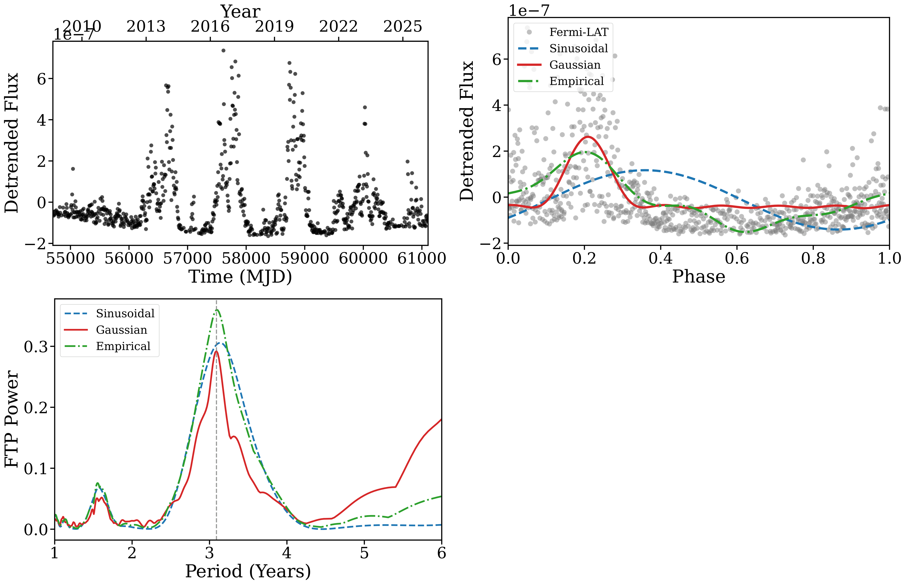
图注：Same as Fig.~\(\ref{fig:j1427_analysis},\) but for the Golden Candidate 4FGL J1048.4+7143 (S5 1044+71).
对应解读：对应“建议重点查看的图表”第3和第6项，以及关键图表逐图导读中关于 9 个候选、最佳模板和显著性比较的内容。
入选理由：该图展示 Golden Candidate S5 1044+71 的同类分析，可作为 PKS 1424−418 之外的高质量候选对照。由于版式与 Fig01 相同，它能帮助读者比较不同源在光变形态、相位折叠集中度和模板周期图峰值上的一致性或差异。
来源与置信度：\(arxiv_source\)；high；\(arxiv_source\) / \(QPO_FTP.tex\):figure[3]
Fig04
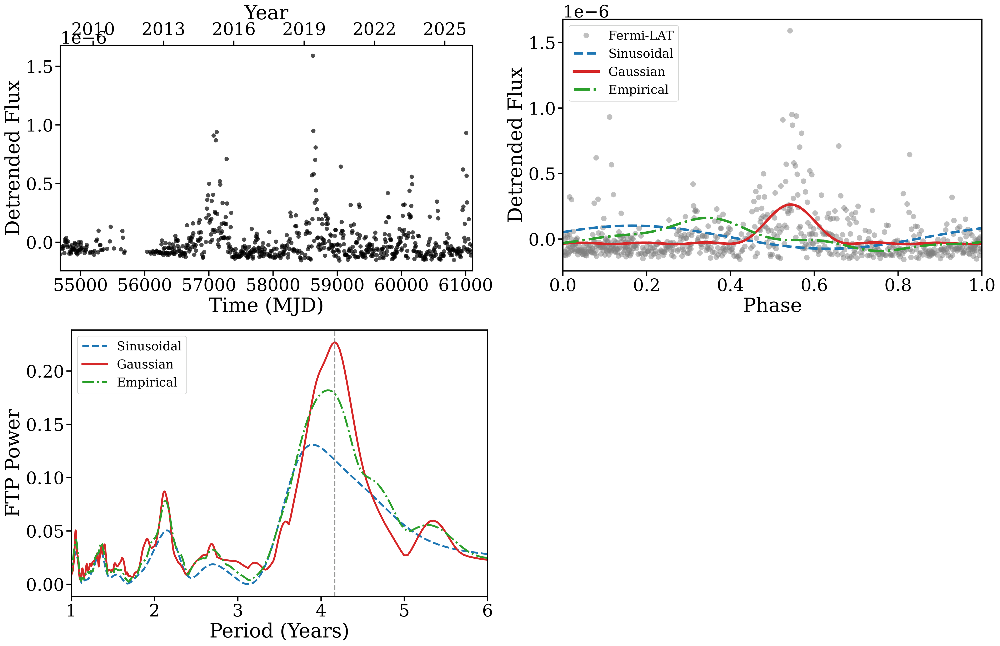
图注：Same as Fig.~\(\ref{fig:j1427_analysis},\) but for the Golden Candidate 4FGL J0739.2+0137 (PKS 0736+01).
对应解读：对应“建议重点查看的图表”第3和第6项，以及关键图表逐图导读中候选源之间模板响应差异的讨论。
入选理由：该图展示 Golden Candidate PKS 0736+01 的完整时间域和频域分析，是另一张高可信候选对照图。与 Fig03、Fig05 一起可支撑日报中‘三类模板对不同候选的恢复能力’这一比较，而不仅只展示主候选 PKS 1424−418。
来源与置信度：\(arxiv_source\)；high；\(arxiv_source\) / \(QPO_FTP.tex\):figure[4]
Fig06
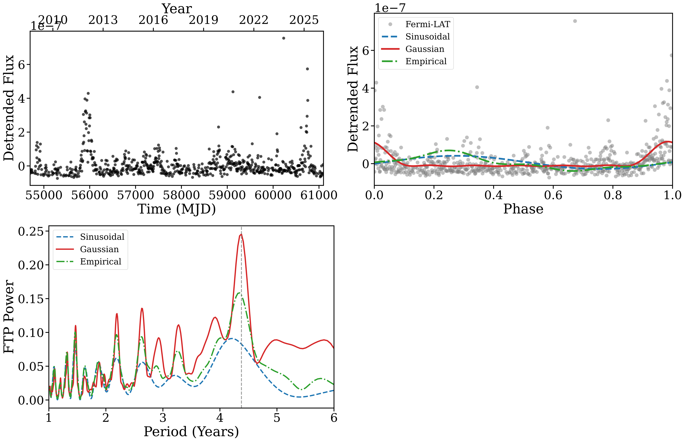
图注：Same as Fig.~\(\ref{fig:j1427_analysis},\) but for the Marginal Candidate 4FGL J0102.8+5824 (TXS 0059+581).
对应解读：对应“建议重点查看的图表”第5、6项，以及关键图表逐图导读中关于被随机森林筛查的 marginal candidates 与 PKS 1424−418 差异的讨论。
入选理由：该图是 Marginal Candidate TXS 0059+581 的同格式分析，可作为被筛查候选的代表，用来说明仅有周期图峰或模板匹配增强并不等于稳定相位相干性。相比再加入更多同类 marginal 图，选择一张代表性边缘候选即可支撑日报中对假阳性和结构验证必要性的解读。
来源与置信度：\(arxiv_source\)；high；\(arxiv_source\) / \(QPO_FTP.tex\):figure[6]
强相关工作
这篇工作与 PG 1553+113 的 \(\gamma\) 射线准周期研究直接相关，因为作者使用了从 PG 1553+113 派生的经验非对称模板，并把该源作为方法能否恢复已知候选的校验对象。相关检索关键词包括 “PG 1553+113 gamma-ray quasi-periodic oscillation Fermi LAT”、“blazar QPO red noise trial factor”、“template periodogram non-sinusoidal variability”。
PKS 1424−418 的源背景还应放在中微子关联耀变体研究中看。此前关于 PKS B1424−418 与 PeV 中微子事件的时间方向符合曾引发讨论，但这类关联本身存在后验选择和背景概率问题。本文的 \(4.8\) 年 \(\gamma\) 射线候选周期若未来得到延续，可能为喷流长期调制提供独立线索；若未来消失，则会成为又一个红噪声假周期的案例。相关检索关键词包括 “PKS B1424-418 PeV neutrino”、“IceCube Big Bird blazar”、“FSRQ gamma-ray neutrino association”。
在方法上，它应与 Lomb–Scargle 周期图、广义 Lomb–Scargle、加权小波 \(Z\) 变换、CARMA/高斯过程红噪声建模和时域模板匹配工作并读。相反观点主要来自 AGN 周期性怀疑论：有限基线、红噪声泄漏和多重检验足以解释许多候选。检索关键词包括 “AGN periodicity red noise false alarm”、“blazar quasi periodic oscillation significance”、“look elsewhere effect time series astronomy”。
同一事件 / 同类源线索：
- https://arxiv.org/abs/2608.00664
- https://arxiv.org/pdf/2608.00664
- https://arxiv.org/abs/1602.02012
- https://fermi.gsfc.nasa.gov/ssc/data/access/lat/
相似工作：
基础理论 / 方法工作：
- https://ui.adsabs.harvard.edu/abs/1976Ap%26SS..39..447L/abstract
- https://ui.adsabs.harvard.edu/abs/1982ApJ...263..835S/abstract
- https://ui.adsabs.harvard.edu/abs/1989ApJ...338..277S/abstract
- https://arxiv.org/abs/1311.5238
相反观点 / 张力线索：
5. Measurement of the Hubble constant with high-energy neutrinos
- 来源：arXiv / astro-ph.HE
- 链接：https://arxiv.org/abs/2608.00923v1
- 作者：Gonzalo Herrera, Nicholas Kamp, Carlos A. Argüelles
- 评分：novelty 9/10，importance 7/10，relevance 9/10，final 9.30/10
- 推荐理由：提出并首次实现用IceCube高能天体中微子点源构建H0距离梯，关联Seyfert中微子源和多信使天体物理；误差很大但概念新颖且相关性高。
中文题目：用高能中微子测量哈勃常数
做了什么：这篇论文提出并首次演示了一条“中微子距离阶梯”：把具有 IceCube 点源中微子超额的近邻 Seyfert 星系当作可标准化烛光，利用其 X 射线光度与中微子光度之间的经验关系 \(L_\nu=\kappa L_X^\beta\)，再用 NGC 1068 的非红移距离作为零点标定，联合拟合得到 \(H_0=49^{+40}_{-30}\,\mathrm{km\,s^{-1}\,Mpc^{-1}}\) 和 \(\beta=0.67^{+0.16}_{-0.25}\)。结果目前误差很大，不能解决哈勃张力，但它证明了高能中微子可以作为一种几乎不受尘埃消光、吸收和辐射转移影响的宇宙学距离探针。
为什么重要：几乎所有成熟的宇宙距离测量都依赖光子，因此必须处理消光、吸收、源内再处理、选择效应和标定链误差。高能中微子跨宇宙传播时几乎不被吸收，也不受尘埃和等离子体散射影响；如果中微子源的内禀光度能被其他观测量标准化，它就提供了一条物理系统误差完全不同的距离阶梯。本文重要之处不在于给出最精确的 \(H_0\)，而在于把“用中微子做宇宙学”从概念推进到一个可实际拟合的观测框架。
理论 / 观测 / 仪器方法价值：对理论而言，论文把活动星系核盘冕区的高能中微子产生模型与宇宙学距离测量联系起来，\(\beta\) 的测量还可检验简单量热极限 \(\beta=1\)。对观测而言，它给出了一种将 IceCube 点源通量、X 射线样本和独立距离标定合并的层级模型。对方法而言，它展示了如何在小样本、低显著性中微子点源条件下传播通量、距离和相关关系的误差，并把这些误差转化为 \(H_0\) 的后验。
为什么应该关注：如果你关心哈勃张力，这篇文章提供的不是新的“裁判”，而是一种未来可能独立于电磁传播系统误差的第三类标尺。如果你关心高能中微子源，它把 IceCube 的单源超额转化为盘冕物理的可检验相关关系。如果你做多信使天文或 AGN 物理，这篇论文值得看，因为它清楚暴露了当前瓶颈：中微子点源统计量、AGN X 射线选样、NGC 1068 标定和源内物理散布。
展开详细解读：文章讲解、背景、理论、重点章节、图表与相关工作
文章详细讲解
科学问题：论文要回答的是，高能天体中微子能否像超新星、造父变星或引力波标准警报器一样用于宇宙学距离测量。传统距离梯依靠光子，光子从源到观测者会经历尘埃消光、气体吸收、散射、星系宿主环境修正和复杂的辐射转移。中微子的传播系统误差完全不同：在 \(\mathrm{TeV}\) 到 \(\mathrm{PeV}\) 能段，除极高红移和特殊背景相互作用外，它们基本直线、无吸收地到达地球。因此，如果某类中微子源的内禀中微子光度能由另一个可测量量标准化，就可以构造一条“中微子标准化烛光”距离阶梯。
作者怎么做：他们选取 IceCube 14 年公开点源释放中报告有逐源显著中微子超额的 12 个 X 射线选 Seyfert 星系，并假设盘冕模型中高能中微子光度 \(L_\nu\) 与 X 射线光度 \(L_X\) 满足幂律关系 \(L_\nu=\kappa L_X^\beta\)。这里 \(\kappa\) 是归一化，\(\beta\) 是斜率。关键标定源是 NGC 1068，它既是最有代表性的近邻 Seyfert 2 星系和 IceCube 中微子点源候选，又有不依赖红移的距离标定，例如造父变星和红巨星分支顶端 \(\mathrm{TRGB}\) 距离。作者利用这个锚点确定相关关系的绝对尺度，再把其他 Seyfert 的中微子通量和 X 射线光度同红移距离关系联系起来，层级拟合 \(H_0\)、\(\beta\) 和相关散布。
关键结果：他们得到 \(H_0=49^{+40}_{-30}\,\mathrm{km\,s^{-1}\,Mpc^{-1}}\)，\(68\%\) 可信区间很宽，足以同时覆盖 Planck 和 SH0ES 的常见取值范围，因此本文不能宣称缓解或加剧哈勃张力。更有物理含义的结果可能是 \(\beta=0.67^{+0.16}_{-0.25}\)，比简单量热极限 \(\beta=1\) 偏低，摘要称约 \(2\sigma\) 不支持 \(\beta=1\)。这暗示中微子产生效率不只是随 X 射线光度线性缩放，可能还受到冕区光学深度、质子加速效率、黑洞质量、吸积率、遮蔽几何或样本选择的影响。
局限和下一步：最明显的局限是样本只有 12 个源，而且逐源中微子超额不是传统意义上每个都达到发现级别的独立点源。IceCube 的角分辨率、能谱假设、背景建模和源关联先验都会影响通量估计。X 射线光度也不是完全干净的内禀量，特别是 Seyfert 2 和 Compton-thick 源的吸收修正会引入系统误差。下一步需要更大的中微子有效面积、更长曝光、更严格的盲分析样本定义、更多非红移距离锚点，以及对 AGN 盘冕中微子物理散布的独立约束。IceCube-Gen2、KM3NeT 和未来全天天区中微子点源目录将决定这条距离阶梯能否从概念验证走向竞争性宇宙学工具。
关键结果是怎么做出来的
本文最重要的证据链从样本选择开始。作者没有从所有 AGN 盲目寻找相关，而是使用 X 射线选 Seyfert 星系，并进一步要求这些源在 IceCube 14 年公开点源释放中有显著的逐源中微子超额。最终样本数为 12 个，这一点非常关键：它减少了任意事后选择的空间，但也意味着 \(H_0\) 后验会被泊松统计、单源通量误差和少数锚点强烈控制。读者应检查论文如何定义“显著逐源超额”、是否对试验因子做了处理，以及是否把非探测或低显著源纳入选择函数。
距离标定的核心是 NGC 1068。该源既有 IceCube 报告的中微子信号，又有不依赖红移的造父变星和 \(\mathrm{TRGB}\) 距离。作者利用 NGC 1068 将 \(L_\nu=\kappa L_X^\beta\) 的归一化固定到绝对距离尺度上，再用其他 11 个源的红移和中微子/X 射线通量共同约束 \(H_0\)。如果锚点距离、X 射线吸收修正或 NGC 1068 的中微子通量发生系统偏移，\(\kappa\) 与 \(H_0\) 会一起移动。因此图表中凡是展示“去掉 NGC 1068”或“改变锚点距离先验”的稳健性检验都应重点查看。
统计上，论文实质是在做层级贝叶斯拟合：观测量包括中微子通量或 IceCube 给出的逐源通量似然、X 射线通量或光度估计、红移、锚点距离和可能的内禀散布。模型比较的关键不是 \(H_0\) 点估计本身，而是联合后验中 \(H_0\)、\(\beta\)、\(\kappa\) 和散布项之间的相关性。摘要给出的 \(H_0=49^{+40}_{-30}\,\mathrm{km\,s^{-1}\,Mpc^{-1}}\) 表明后验非常宽；因此任何“偏低的哈勃常数”解读都应谨慎，因为 \(68\%\) 区间已大到不能区分主流宇宙学测量。
支撑结论的图表通常应包括：样本在 \(L_X\)-\(L_\nu\) 平面上的相关图、\(H_0\)-\(\beta\) 或 \(H_0\)-\(\kappa\) 后验角图、与 Planck 和 SH0ES 的 \(H_0\) 对比图，以及源逐个残差或留一法检验。读图时要关注误差条是否由中微子通量主导，是否存在一两个高权重源拉动斜率，低光度和高光度端是否都有足够动态范围，以及 \(\beta<1\) 的偏好是否来自整体趋势还是单源杠杆效应。
主要系统误差包括 IceCube 有效面积和能量响应、点扩散函数、天顶角相关背景、源能谱假设、AGN X 射线吸收修正、X 射线变源性、红移距离中的本动速度修正，以及样本选择造成的 Malmquist/Eddington 偏差。稳健性检验应至少包括改变能谱指数、改变内禀散布先验、去掉单个高影响源、替换 NGC 1068 距离先验、使用不同 X 射线能段或吸收修正，并检查 \(\beta=1\) 模型相对自由 \(\beta\) 模型的后验 odds 或信息准则变化。
展开背景、理论、公式、模型、章节和图表导读
背景知识
研究对象是 Seyfert 星系中的活动星系核，特别是被认为可能在黑洞吸积盘上方热冕或磁化冕区产生高能粒子的系统。Seyfert 星系通常在 X 射线波段明亮，说明其中心区域存在热电子康普顿化、强磁场、强辐射场和可能的非热粒子加速。若相对论质子在冕区与光子或气体相互作用，就会产生带电介子，进而衰变为高能中微子。
高能天体中微子的观测历史由 IceCube 主导。弥散天体中微子背景的发现证明宇宙中存在 \(\mathrm{TeV}\)-\(\mathrm{PeV}\) 中微子源，但把弥散通量分解成具体天体类别一直困难。NGC 1068 是近年来最受关注的稳态点源候选之一，因为它在 IceCube 数据中呈现出相对显著的中微子超额，同时作为近邻 Compton-thick Seyfert 2 星系有丰富的多波段观测。这使它成为连接 AGN 物理和中微子天文学的原型源。
宇宙学距离测量长期依赖光子标准烛光或标准尺，包括造父变星、\(\mathrm{TRGB}\)、Ia 型超新星、重子声学振荡和宇宙微波背景。哈勃常数 \(H_0\) 的局域测量与早期宇宙推断之间存在所谓哈勃张力。任何新的距离探针若系统误差独立，都有价值；即使当前精度低，也可以作为检验系统误差方向的补充。
为什么现在值得重新看？因为 IceCube 的长期曝光已经开始提供逐源点源似然，而 X 射线巡天和 AGN 目录也能给出较一致的选样和吸收修正。过去“中微子标准烛光”几乎只是概念，因为没有足够可信的中微子源和通量估计。NGC 1068 的出现改变了局面：至少可以尝试把一个有非红移距离的中微子源作为锚点，向外扩展到一组同类 Seyfert。
常见误区之一是把“中微子不被吸收”理解为“中微子源内物理很简单”。传播确实干净，但源内产生机制可能非常复杂，尤其是质子加速效率、靶光子场、磁场、冕区几何和遮蔽都会改变 \(L_\nu\)。另一个误区是把当前 \(H_0\) 点估计当作宇宙学结论；实际上本文的核心是方法学演示和相关关系测量，远不是精密宇宙学。
基础理论 / 方法脉络
基础物理图像可以从标准烛光开始。如果某类天体的内禀光度 \(L\) 已知，观测到的能流 \(F\) 给出光度距离 \(d_L\)，近邻宇宙再由红移 \(z\) 与 \(d_L\) 的关系估计 \(H_0\)。中微子的优势在于传播途中几乎没有尘埃消光和吸收修正；劣势是探测事件数少，角分辨率和能量重建比电磁观测粗得多，因此单源通量似然通常很宽。
本文使用的“标准化”不是说所有 Seyfert 有相同 \(L_\nu\)，而是认为 \(L_\nu\) 可由 X 射线光度 \(L_X\) 预测。盘冕模型中，X 射线来自热电子对紫外/软 X 光子的康普顿化；若同一区域也加速强子，质子与辐射场或气体相互作用会产生介子并释放中微子。于是 \(L_X\) 既是中心引擎功率的示踪量，也可能是中微子靶场强度的示踪量。
论文的关键假设是幂律关系 \(L_\nu=\kappa L_X^\beta\)。当 \(\beta=1\) 时，常被理解为中微子发射效率近似恒定或接近量热缩放；当 \(\beta<1\) 时，高 X 射线光度源的中微子光度相对较低，可能说明逃逸、冷却、光学深度或选样效应改变了线性关系。这里的内禀散布很重要，因为 AGN 并非标准化良好的单参数族。
观测方法上，中微子望远镜给出的是方向、能量代理量和背景下的点源超额，不是直接的高精度光度。通常要通过有效面积 \(A_{\rm eff}(E,\delta)\)、假设源谱和观测时间把事件数似然转化为通量似然。再结合 X 射线通量、红移和锚点距离，才能得到 \(L_\nu\)、\(L_X\) 和 \(H_0\) 的联合约束。
主要退化关系包括 \(H_0\) 与 \(\kappa\) 的绝对尺度退化、\(\beta\) 与样本光度动态范围的退化、内禀散布与通量误差的退化，以及 X 射线吸收修正与源类型的退化。选择效应也不可忽略：只挑选已有中微子超额的源会偏向高通量上散射对象，若似然中没有显式建模，可能高估 \(L_\nu\) 或改变 \(\beta\)。
公式与推导
第一步是标准烛光的基本关系。对各向同性等效中微子光度 \(L_\nu\) 和观测能流 \(F_\nu\)，光度距离满足
这里 \(F_\nu\) 是在指定能段或按给定谱形积分后的中微子能流，\(d_L\) 是光度距离。该式忽略传播吸收，对高能中微子在近邻宇宙中是良好近似。
第二步是近邻宇宙的哈勃律。对 \(z\ll1\) 的源，若暂时忽略高阶宇宙学项和本动速度，
其中 \(c\) 是光速，\(z\) 是宇宙学红移。实际应用中近邻 AGN 的本动速度会成为系统误差，因此应把红移误差或速度散布并入距离似然。
第三步引入本文的标准化关系：
\(L_X\) 是吸收修正后的 X 射线光度，\(\kappa\) 是归一化，\(\beta\) 是斜率。若 \(\beta=1\)，中微子光度与 X 射线光度线性缩放；若 \(\beta<1\)，则高 \(L_X\) 源的相对中微子效率下降。
第四步把 X 射线能流也写成距离相关量：
这里 \(F_X\) 是观测 X 射线能流，\(K_X\) 表示能段变换、谱形和吸收修正。这个式子说明 \(L_X\) 本身也依赖距离，因此在联合拟合中不能把 \(L_X\) 与 \(H_0\) 完全分离。
第五步合并前三个关系，得到中微子能流的距离标度：
这个关系是距离阶梯的核心。若 \(\beta=1\)，\(F_\nu\propto F_X\) 且显式距离依赖消失，单靠通量比很难测 \(H_0\)；若 \(\beta\neq1\)，中微子/X 射线通量关系保留距离信息。
第六步把近邻哈勃律代入，得到对 \(H_0\) 的标度：
当 \(\beta<1\) 时，指数 \(2\beta-2<0\)，因此给定 \(z\) 和 \(F_X\)，较大的 \(H_0\) 对应较小距离，并会提高预测的 \(F_\nu\)。这解释了 \(H_0\) 与 \(\beta\) 的后验相关性。
第七步加入内禀散布，常用对数正态形式：
这里 \(i\) 标记源，\(\sigma_{\rm int}\) 表示 AGN 物理差异造成的真实散布。若不允许散布，模型会把所有离群点错误地解释为 \(H_0\) 或 \(\beta\) 的变化。
第八步连接 IceCube 事件数似然。对源 \(i\)，若假设中微子微分通量 \(\phi_i(E)=\phi_{0,i}(E/E_0)^{-\gamma}\)，期望信号事件数为
\(T\) 是曝光时间，\(A_{\rm eff}\) 是随能量 \(E\) 和赤纬 \(\delta_i\) 变化的有效面积，\(\gamma\) 是谱指数。这个式子把天体通量映射到探测器可观测事件数。
第九步给出简化的泊松似然诊断：
其中 \(n_i\) 是候选方向附近的事件数，\(\mu_{b,i}\) 是背景期望。实际 IceCube 点源分析会使用非分箱方向和能量概率密度；该式说明通量约束最终来自信号加背景模型比较。
第十步是层级后验：
\(D\) 包括中微子数据、X 射线数据、红移和锚点距离。这个后验给出论文报告的 \(H_0\) 与 \(\beta\) 可信区间，也允许检查 \(\beta=1\) 是否落在高后验密度区域。
模型拟合 / 应用方法
本文或同类分析的拟合量至少包括 \(H_0\)、\(\kappa\)、\(\beta\) 和内禀散布 \(\sigma_{\rm int}\)。观测层包括每个源的中微子通量或点源似然、X 射线通量和吸收修正、红移、以及 NGC 1068 的非红移距离先验。因为 \(L_X\) 和 \(L_\nu\) 都含 \(d_L^2\)，拟合时应在同一个层级模型内同时传播距离误差，而不是先把光度固定后再拟合相关关系。
似然方面，理想做法是直接使用 IceCube 给出的每个源通量剖面似然或事件级非分箱似然，而不是把中微子超额粗略转成高斯误差条。低事件数条件下，通量后验往往非高斯，并且有物理边界 \(F_\nu\ge0\)。如果把这类不对称误差高斯化，可能低估 \(H_0\) 的尾部不确定度。
参数退化是理解结果的关键。\(\kappa\) 设定绝对中微子效率，NGC 1068 距离锚点主要约束它；\(H_0\) 改变非锚点源的距离尺度；\(\beta\) 改变 X 射线光度动态范围如何投影到中微子通量。若样本光度范围不够宽，\(\beta\) 与 \(\sigma_{\rm int}\) 很容易混淆。若只有一个强锚点，\(H_0\) 与 \(\kappa\) 的退化也会较强。
残差诊断应在两个空间里看：一是在 \(\log L_\nu\)-\(\log L_X\) 平面看源是否围绕幂律随机散布；二是在观测空间看预测 \(F_\nu\) 与 IceCube 通量似然是否一致。后者更稳健，因为它避免了把距离相关误差投影成光度误差后造成的视觉误导。对每个源的标准化残差、留一法后验漂移和高杠杆源识别都很重要。
模型可能失败的地方包括：Seyfert 并非单一物理族，Compton-thick 源的内禀 \(L_X\) 修正有偏，X 射线和中微子不同时变导致相关性被稀释，IceCube 点源超额中有背景涨落，或者中微子产生并非盘冕主导而来自喷流、星暴或核区宇宙线相互作用。实际应用中，这个框架还可扩展为多族群模型，把 Seyfert 1、Seyfert 2、遮蔽 AGN 和射电响 AGN 分别赋予不同的 \(\kappa\)、\(\beta\) 或散布。
重点章节 / 结果段落怎么读
数据/样本部分应首先读。重点看 12 个 Seyfert 的来源、X 射线选样标准、IceCube 逐源显著性阈值、红移范围、X 射线能段、吸收修正和是否包含 NGC 1068 作为锚点。样本定义决定了选择函数，也决定了 \(\beta\) 是否可能被中微子通量上散射偏差影响。
方法部分要抓住层级模型。读者应确认作者如何从中微子通量或点源超额得到 \(L_\nu\)，如何处理 \(L_X\) 的距离依赖，如何放入 NGC 1068 的造父变星和 \(\mathrm{TRGB}\) 距离先验，以及是否显式拟合内禀散布。这里是判断结果是否可信的核心。
主结果部分重点看 \(H_0\)、\(\beta\)、\(\kappa\) 和 \(\sigma_{\rm int}\) 的联合后验，而不是只看边缘化数值。特别要看 \(\beta=1\) 在后验中的位置，以及 Planck、SH0ES 常见 \(H_0\) 值是否落在高概率区域。摘要说二者在 \(1\sigma\) 内一致，因此不要过度解读点估计偏低。
讨论部分应关注物理解读：\(\beta<1\) 是否真的说明偏离量热极限，还是由样本选择、吸收修正或少数源造成。这里还应讨论中微子传播系统误差小并不等于源内标准化误差小。读者应寻找作者对 IceCube-Gen2、更多锚点和更大 AGN 样本的预测。
附录/稳健性检验部分如果有，应优先看。包括替换谱指数、改变 X 射线吸收修正、加入本动速度误差、删除高影响源、改变内禀散布先验、固定 \(\beta=1\) 与自由 \(\beta\) 比较等。这些检验决定了“首次观测实现”是否只是少数选择的偶然结果。
建议重点查看的图表
-
样本表：检查 12 个 Seyfert 的名称、红移、X 射线通量/光度、中微子通量或显著性、距离来源。特别看 NGC 1068 是否权重异常高。
-
\(L_X\)-\(L_\nu\) 相关图：看数据点的动态范围、误差条方向、最佳拟合斜率 \(\beta\)、内禀散布带，以及 \(\beta=1\) 线是否明显偏离。
-
\(H_0\)-\(\beta\)-\(\kappa\) 后验角图：看参数退化方向、边缘后验是否被先验边界截断、\(\beta=1\) 和常见 \(H_0\) 值的位置。
-
\(H_0\) 对比图：检查本文结果与 Planck、SH0ES 或其他探针的误差条是否真正重叠。注意本文误差大，视觉上不要把点估计当成张力。
-
逐源残差或留一法图：看是否某一个或两个源主导 \(\beta<1\) 或 \(H_0\)。如果删除 NGC 1068 以外某个源后后验大幅变化，说明当前样本仍脆弱。
-
稳健性表：检查不同能谱指数、不同 X 射线能段、不同内禀散布先验、不同锚点距离先验下的 \(H_0\) 和 \(\beta\) 是否稳定。
-
选择函数或显著性分布诊断：如果论文给出，应看被选中的中微子超额是否可能由背景涨落和事后筛选增强。
关键图表逐图导读
图 1：通常应是样本或天空分布图。横纵坐标可能是赤经和赤纬，点标记 12 个 X 射线选 Seyfert，颜色或大小表示 IceCube 中微子超额、X 射线通量或红移。读图重点是样本是否覆盖 IceCube 灵敏度不同的南北天区，以及是否集中在某些背景更低的赤纬。陷阱是把点的存在当成独立发现；它们只是进入本文距离阶梯的候选源。
图 2：最关键的物理图应是 \(L_\nu\) 对 \(L_X\) 的对数图。横轴为 \(\log L_X\)，纵轴为 \(\log L_\nu\)，数据点带有中微子和 X 射线误差条，实线为最佳拟合 \(L_\nu=\kappa L_X^\beta\)，阴影为可信区间，虚线可能表示 \(\beta=1\)。读图时看低光度和高光度端是否都约束斜率，以及 \(\beta<1\) 是否由整体趋势而非单个离群点驱动。
图 3：后验角图应展示 \(H_0\)、\(\beta\)、\(\kappa\) 和可能的 \(\sigma_{\rm int}\)。坐标轴为各参数，等高线为 \(68\%\) 和 \(95\%\) 可信区域。重点看 \(H_0\) 与 \(\beta\) 是否强相关，\(H_0\) 后验是否长尾，以及先验范围是否影响边界。陷阱是只读边缘中位数而忽略联合退化。
图 4：宇宙学对比图可能把本文 \(H_0\) 与 Planck、SH0ES、引力波标准警报器或其他探针放在同一横轴。读图时要注意本文误差条约为几十 \(\mathrm{km\,s^{-1}\,Mpc^{-1}}\)，因此与现有测量一致并不提供强判别力。它的价值在系统误差独立，而非当前精度。
图 5：逐源贡献或残差图若存在，横轴可能为源名，纵轴为标准化残差、对 \(\Delta\chi^2\) 的贡献或留一法后的 \(H_0\) 改变量。应重点看 NGC 1068 作为锚点之外，是否还有高影响源控制斜率。陷阱是把高残差源直接解释为物理异常；它也可能来自 X 射线吸收修正或中微子背景涨落。
图 6：稳健性检验图或表应展示不同模型假设下的 \(H_0\) 和 \(\beta\)。如果固定 \(\beta=1\)、改变谱指数 \(\gamma\)、改变内禀散布先验或去掉单源后结果仍在误差内一致，说明方法较稳健；若 \(\beta<1\) 的偏好消失，则物理解读应降级为提示性结果。
论文原图 / 可嵌入图片
Fig02
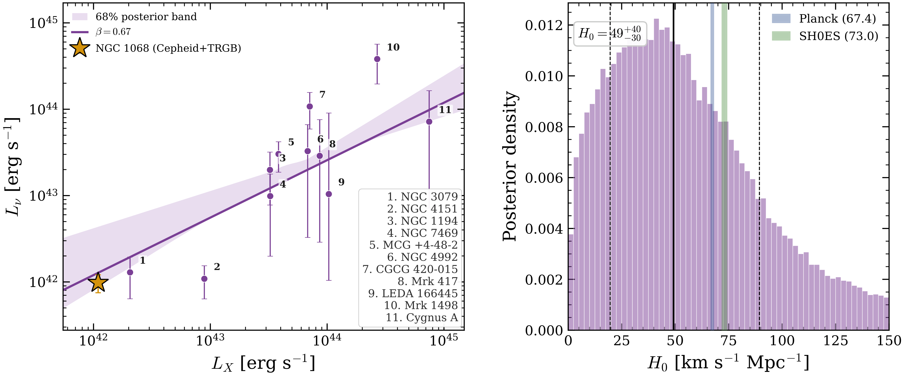
图注：\(\textbf{Left:}\) $L_\nu$--$L_X$ relation for the eleven Hubble-flow Seyferts (blue circles) and the single non-redshift-distance calibrator NGC~1068 (gold star, Cepheid+TRGB envelope), evaluated at the posterior median $H_0 = 49\,\mathrm{km\,s^{-1}\,Mpc^{-1}}$. The solid line and shaded band show the best-fit power-law $L_\nu \propto L_X^{\,\beta}$ with $\beta = 0.67$ and the 68\% credible band on the slope from the joint posterior. \(\textbf{Right:}\) marginal posterior distribution of the Hubble constant $H_0$. The solid black line marks the median and dashed lines bracket the 68\% credible interval; dotted lines indicate the Planck ($67.4$) and SH0ES ($73.0$) reference values in $\mathrm{km\,s^{-1}\,Mpc^{-1}}$.
对应解读：对应“建议重点查看的图表”第2项和“关键图表逐图导读”图2：\(L_X\)-\(L_\nu\) 相关图；也对应模型拟合段落中关于\(L_\nu=\kappa L_X^\beta\)、\(H_0\)边缘后验和斜率\(\beta<1\)的讨论。
入选理由：这是最核心的物理结果图，直接展示11个哈勃流Seyfert与NGC 1068锚点在\(L_\nu\)-\(L_X\)平面上的位置、最佳拟合幂律斜率\(\beta=0.67\)及68%可信带，同时右 panel 给出\(H_0\)边缘后验并标出Planck和SH0ES参考值。它同时支撑中微子标准化烛光关系和本文\(H_0\)测量，是日报解读中最应嵌入的图。
来源与置信度：\(arxiv_source\)；high；\(arxiv_source\) / main.tex:figure[2]
Fig03
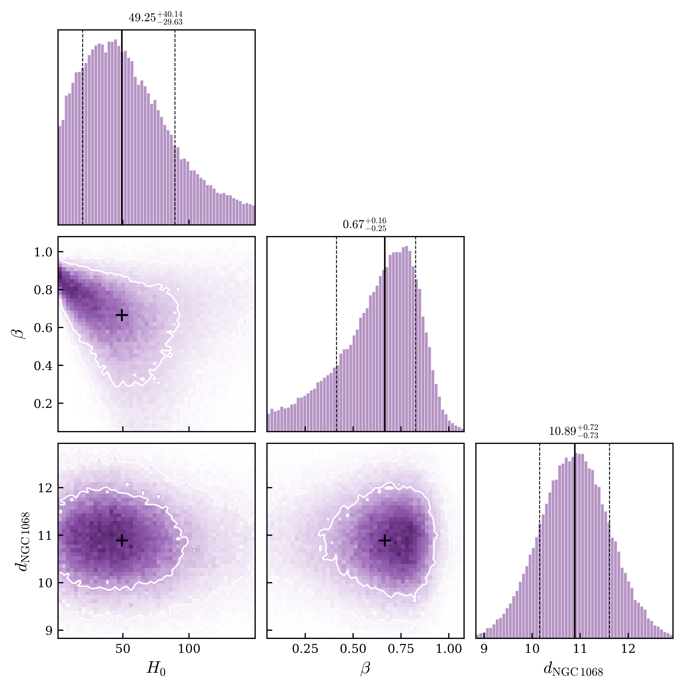
图注：Joint posterior in the $(H_0, \beta)$ plane (combined walker output, primary 1-anchor analysis). Contours mark $68\%$ and $95\%$ credible regions. Vertical dashed lines indicate the Planck (blue, $67.4\,\mathrm{km\,s^{-1}\,Mpc^{-1}}$) and SH0ES (red, $73.0\,\mathrm{km\,s^{-1}\,Mpc^{-1}}$) values; the horizontal dashed line marks the calorimetric value $\beta = 1$, which is excluded by the data at ${\sim}2\sigma$.
对应解读：对应“建议重点查看的图表”第3项和“关键图表逐图导读”图3：\(H_0\)-\(\beta\)联合后验；也对应模型拟合段落中关于参数退化、\(\beta=1\)量热极限和Planck/SH0ES位置的讨论。
入选理由：该图直接给出\(H_0\)与\(\beta\)的二维联合后验、68%和95%可信区域，并同时标出Planck、SH0ES和\(\beta=1\)。它比单独边缘后验更能说明本文测量的不确定度、退化方向以及所谓\(\beta=1\)约2σ偏离是否稳健，是理解结论强弱的关键诊断图。
来源与置信度：\(arxiv_source\)；high；\(arxiv_source\) / main.tex:figure[3]
Fig01
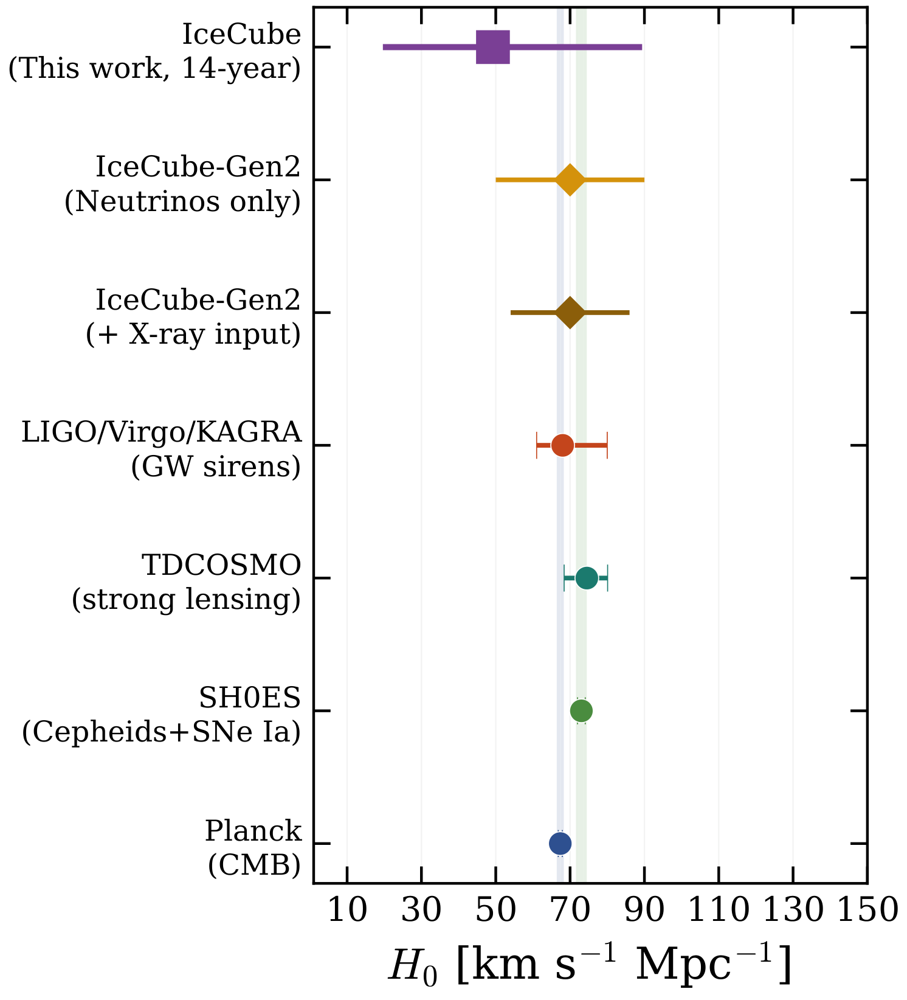
图注：Comparison of our $H_0$ measurement (purple square) with the Planck CMB~\(\cite{Planck2018},\) SH0ES Cepheid--supernova~\(\cite{SH0ES2022},\) TDCOSMO strong lensing~\(\cite{TDCOSMO2020},\) and LIGO/Virgo/KAGRA standard-siren~\(\cite{LIGO_GW_H0_2023}\) determinations, together with two projected IceCube-Gen2~\(\cite{IceCubeGen2}\) sensitivities (gold diamonds, drawn at $H_0 = 70$ for illustration). \(\emph{Light gold}\): a Seyfert-only Gen2 sample ($50$ sources, $8\times$ effective area, $25\%$ X-ray flux uncertainty, $10$ geometric anchors, $\kappa$ profiled). \(\emph{Gold}\): adding input from X-ray modeling, i.e. fixing $\kappa$ and imposing an external Gaussian prior on the slope, $\sigma_\beta =0.02$). Both forecasts use the Fisher formalism of the Supplemental Material~\(\cite{supplement}.\) Shaded bands indicate the Planck and SH0ES $1\sigma$ regions.
对应解读：对应“建议重点查看的图表”第4项和“关键图表逐图导读”图4：本文\(H_0\)与Planck、SH0ES、TDCOSMO、标准警报器及未来IceCube-Gen2预期的对比。
入选理由：该图最直接支撑日报中‘本文误差很大、与Planck和SH0ES在1σ内一致、不能宣称解决哈勃张力’的解读。它把本文紫色方块与多个主流\(H_0\)探针和未来Gen2敏感度放在同一坐标上，适合提醒读者本文当前价值在系统误差独立而非精度竞争。
来源与置信度：\(arxiv_source\)；high；\(arxiv_source\) / main.tex:figure[1]
Fig04
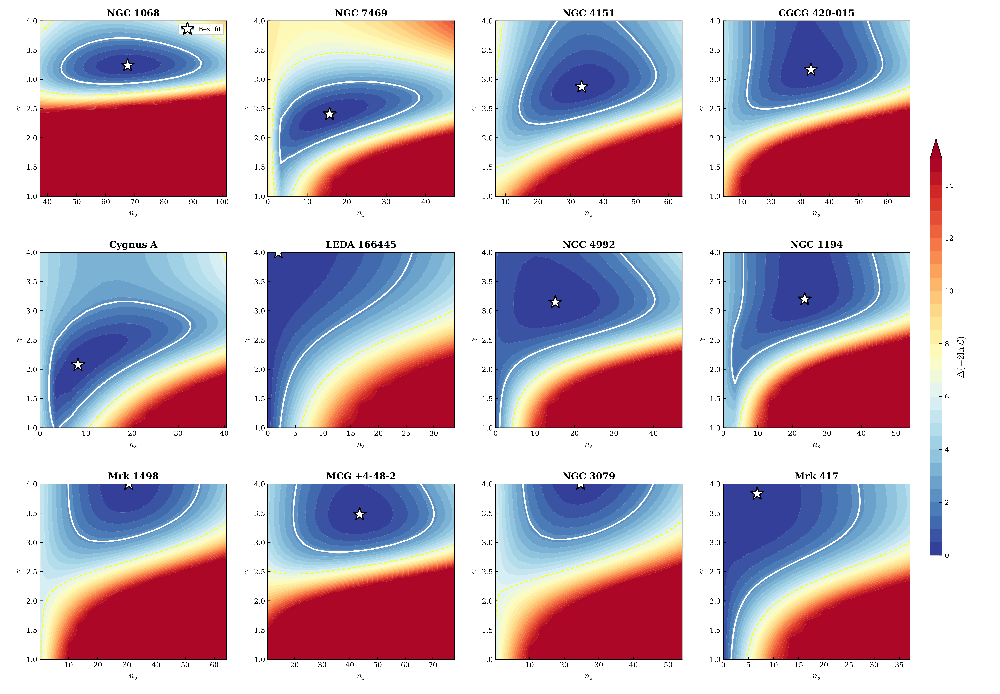
图注：Two-dimensional profile-likelihood scans $\Delta(-2\ln\mathcal{L})$ over $(n_s, \gamma_\nu)$ for all 12 Seyfert sources in the primary analysis. Each panel shows the joint scan with the best fit (white star), and $1\sigma$ ($\Delta TS = 2.30$, white solid) and $2\sigma$ ($\Delta TS = 6.18$, yellow dashed) contours from the two-dimensional Wilks theorem. The colour map is clipped at $\Delta TS = 15$ for readability. The strongest 1$\sigma$ region in NGC~1068 ($\hat{n}_s \approx 68$, $\hat{\gamma}_\nu \approx 3.2$) anchors the $L_\nu$--$L_X$ regression; three sources (LEDA~166445, Mrk~1498, NGC~3079) have best-fit $\gamma_\nu$ at the $\gamma_\nu = 4$ boundary of the fit domain. Computed with SkyLLH v26.0 on the 14-year IceCube DR2 public release.
对应解读：对应“建议重点查看的图表”第5项和第7项：逐源诊断、显著性分布和IceCube点源似然；也对应模型拟合段落中关于每个源中微子通量剖面似然、低事件数非高斯性和NGC 1068权重的讨论。
入选理由：虽然它不是简单的逐源残差图，但它逐源展示12个Seyfert在((n_s,\gamma_\
u))空间的二维profile-likelihood、最佳拟合点和1/2σ等高线，能检查NGC 1068是否异常主导，以及若干源是否贴近谱指数边界。相比只看拟合关系图，它更接近观测层的IceCube数据诊断，有助于评估样本选择和中微子超额的稳健性。
来源与置信度：\(arxiv_source\)；high；\(arxiv_source\) / main.tex:figure[4]
Fig05
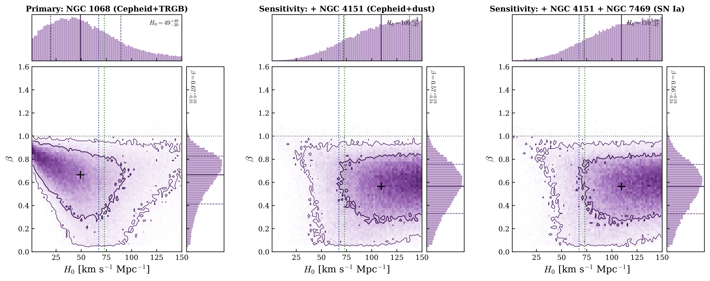
图注：Joint $(H_0, \beta)$ posterior for the three anchor configurations. \(\textbf{Left:}\) 1-anchor primary (NGC~1068). \(\textbf{Middle:}\) adding NGC~4151 as a second anchor. \(\textbf{Right:}\) adding NGC~4151 and NGC~7469. Dashed lines mark the $16/84$ percentiles; the dotted vertical lines indicate the Planck ($67.4$) and SH0ES ($73.0$) reference values. The dotted horizontal line marks the calorimetric limit $\beta = 1$.
对应解读：对应“建议重点查看的图表”第5项和第6项：锚点配置、留一/加锚稳健性，以及“关键图表逐图导读”图6中不同模型假设下\(H_0\)和\(\beta\)是否稳定的讨论。
入选理由：该图比较仅用NGC 1068、加入NGC 4151、再加入NGC 7469三种锚点配置下的\((H_0,\beta)\)联合后验，直接检验一个强锚点是否支配距离阶梯。它对判断当前12源样本和锚点选择的脆弱性非常重要，科学价值高于未来预测类图。
来源与置信度：\(arxiv_source\)；high；\(arxiv_source\) / main.tex:figure[5]
Fig08
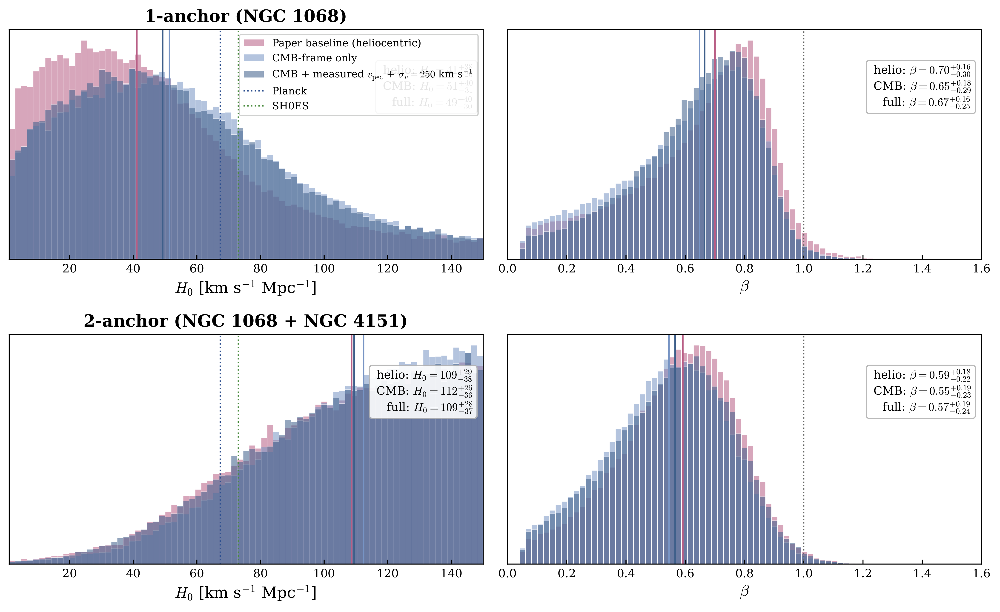
图注：Effect of the peculiar-velocity corrections on the marginal $H_0$ and $\beta$ posteriors. Rose: paper baseline with heliocentric redshifts. Mid-blue: CMB-frame conversion only. Deep-blue: full correction used in the main text (CMB frame + measured $v_{\rm pec}$ for the four sources with direct-distance measurements + $\sigma_v = 250$\,km\,s$^{-1}$ blanket residual on the remaining Hubble-flow sources). Vertical solid lines mark posterior medians. Dotted lines mark Planck and SH0ES $H_0$ values, and $\beta = 1$ (calorimetric).
对应解读：对应“建议重点查看的图表”第6项：稳健性检验；也对应模型拟合段落中关于红移、距离尺度、低红移源本动速度修正对\(H_0\)和\(\beta\)后验影响的讨论。
入选理由：该图展示从日心红移、CMB系转换到完整本动速度修正时，\(H_0\)和\(\beta\)边缘后验如何变化，并标出Planck、SH0ES和\(\beta=1\)。由于样本处于低红移宇宙，本动速度系统误差会直接影响\(H_0\)，因此这是评估结果稳健性的必要补充图。
来源与置信度：\(arxiv_source\)；high；\(arxiv_source\) / main.tex:figure[8]
强相关工作
同一源背景方面，NGC 1068 是本文的核心锚点，也是 IceCube 稳态中微子点源研究的代表对象。应把本文与 IceCube 对 NGC 1068 中微子发射证据的论文、NGC 1068 的多波段 AGN/Compton-thick 研究、以及 Seyfert 冕区强子加速模型一起读。检索关键词包括 “NGC 1068 IceCube neutrino emission”、“Seyfert corona neutrinos”、“AGN corona hadronic model”。
同类方法方面，这篇工作与引力波标准警报器、伽马暴或潮汐瓦解事件多信使宇宙学有相似目标：用非传统信使建立独立距离尺度。但它又不同于标准警报器，因为中微子本身不直接给出绝对距离，必须依赖 \(L_\nu\)-\(L_X\) 标准化关系。检索关键词包括 “neutrino cosmology standard candle”、“high-energy neutrino point source luminosity function”、“Hubble constant standard siren”。
潜在张力或相反观点主要来自 AGN 中微子源的物理多样性。有些模型认为 NGC 1068 的中微子来自被遮蔽核心或星暴核区，而非通用盘冕相关；也有工作强调 IceCube 点源显著性、试验因子和源关联选择函数需要谨慎处理。如果这些观点成立，\(L_\nu=\kappa L_X^\beta\) 可能不是普适关系，而只是当前小样本中的经验趋势。
同一事件 / 同类源线索：
- https://arxiv.org/abs/2608.00923
- https://arxiv.org/pdf/2608.00923
- https://ned.ipac.caltech.edu/byname?objname=NGC%201068
- https://www.science.org/doi/10.1126/science.abg3395
相似工作：
基础理论 / 方法工作：
相反观点 / 张力线索：
（未提供）
6. Radio-Gamma-Ray Properties and High-Energy Implications for Fermi Blazars
- 来源：arXiv / astro-ph.HE
- 链接：https://arxiv.org/abs/2608.00996v1
- 作者：Xu-Hong Ye, Wen-Xin Yang, Guo-Hai Chen, Zhi-Yuan Pei, Yong-Yun Chen, Yi Liu, Denis Bastieri, Jun-Hui Fan
- 评分：novelty 6/10，importance 7/10，relevance 10/10，final 8.75/10
- 推荐理由：大样本Fermi blazar射电-伽马相关研究，直接涉及GeV伽马射线AGN/blazar和SSC/KN解释；结果不算颠覆但对源族统计和SED物理有参考价值。
中文题目：Fermi 耀变体的射电—伽马射线关系及其高能辐射含义
做了什么：这篇文章把 Radio Fundamental Catalogue 的射电数据与第四版 Fermi AGN 目录第三次数据发布中的伽马射线性质交叉匹配，构建了 \(1687\) 个 Fermi 耀变体的大样本，比较 BL Lac 天体和 FSRQ 的射电通量、伽马射线通量、伽马射线光子谱指数 \(\Gamma_\gamma\)、同步辐射峰频率 \(\nu_{\rm peak}\) 与伽马射线响度 \(G_{\rm r}\) 的关系。核心结论是：射电与伽马射线通量在两个子类中都显著相关，支持同一喷流电子族群通过同步辐射与逆康普顿散射共同塑造宽波段输出；\(G_{\rm r}\) 与 \(\Gamma_\gamma\) 的反相关更像是谱能量分布峰位置移动的结果，而不是单纯的 Compton 冷却；在 LBL 与 FSRQ 中，\(G_{\rm r}\) 随 \(\nu_{\rm peak}\) 升高而增强，但 HBL 在 \(\log(\nu_{\rm peak}/{\rm Hz})\simeq15.5-16\) 附近出现平台，作者将其解释为 SSC 散射从 Thomson 区向 Klein–Nishina 区过渡，并在一带 SSC 框架下给出受 KN 抑制 HBL 的磁场约束 \(-4.14<\log(B/{\rm G})<-1.69\)。
为什么重要：耀变体射电—伽马射线相关性是判断高能辐射起源的老问题，但大样本、统一目录和按同步峰分类后的统计仍然能提供新的约束。本文的重要性在于它不只报告“射电和伽马相关”，还把相关性放到 \(G_{\rm r}\)、\(\Gamma_\gamma\) 和 \(\nu_{\rm peak}\) 的三维图像中，尝试区分 SSC、外部康普顿贡献和 KN 抑制这些物理机制。尤其是 HBL 中 \(G_{\rm r}\) 平台若可靠，将直接触及 TeV 耀变体建模中电子能量、磁场和散射截面退化的问题。
理论 / 观测 / 仪器方法价值：对理论建模而言，文章给出了一种用目录级观测量筛选 SSC 主导、外部康普顿混合和 KN 抑制候选源的方法；对观测而言，它强调射电与 \(\gamma\) 射线并非简单线性同源，必须按 BL Lac、FSRQ、LBL、IBL、HBL 分层看；对方法而言，它展示了如何利用大样本相关分析、响度定义和 SED 峰位置，把本来离散的多波段目录信息转换成高能辐射机制诊断。
为什么应该关注：如果你关心耀变体序列、TeV 源候选筛选、喷流辐射模型或 CTA 时代的目标选择，这篇文章值得看。它提供了一个很实用的经验图景：低峰源中 \(G_{\rm r}\) 增强可能说明 SSC 与外部光子场共同抬升高能输出，而高峰 BL Lac 的 \(G_{\rm r}\) 平台可能是 KN 物理开始限制 IC 辐射效率的统计痕迹。即使你不完全接受一带 SSC 的磁场反推，文中的大样本趋势也能作为后续精细 SED 拟合和时间域观测的参照。
展开详细解读：文章讲解、背景、理论、重点章节、图表与相关工作
文章详细讲解
科学问题：耀变体的射电辐射通常来自相对论喷流中的同步辐射，\(\gamma\) 射线则可由同一批电子逆康普顿散射自身同步光子，即 SSC，也可由外部光子场经外部康普顿散射产生。长期争论在于：大样本中看到的射电—\(\gamma\) 相关究竟是内禀物理联系，还是共同距离、选择效应、喷流多普勒增亮和分类混合造成的表象。本文把问题推进到更具体的一层：\(G_{\rm r}\)、\(\Gamma_\gamma\) 和 \(\nu_{\rm peak}\) 的联合趋势是否能告诉我们 SSC、外部康普顿和 KN 效应各自在不同耀变体子类中的相对重要性。
作者怎么做：他们以 \(1687\) 个 Fermi 耀变体为样本，使用 Radio Fundamental Catalogue 的射电测量和 4LAC 第三次数据发布的 \(\gamma\) 射线参数，分别分析 BL Lac 与 FSRQ，并进一步按同步峰频率分为 LBL、IBL、HBL 等子类。文章考察射电通量与 \(\gamma\) 射线通量的相关性，定义或使用 \(\gamma\) 射线响度 \(G_{\rm r}\) 作为高能输出相对射电输出的指标，并研究 \(G_{\rm r}\) 与 \(\Gamma_\gamma\)、\(\nu_{\rm peak}\) 的关系。这个设计的优点是用目录级样本覆盖大动态范围，缺点是非同时多波段数据、红移不完备和选择函数会显著影响散点。
关键结果：BL Lac 和 FSRQ 中均出现清晰的射电—\(\gamma\) 通量相关，作者认为这支持两个子类中都有 SSC 贡献。\(G_{\rm r}\) 与 \(\Gamma_\gamma\) 反相关，即谱更硬的源通常更 \(\gamma\) 射线响，但作者倾向于把这解释为 SED 峰位置移动：当高能峰落入或接近 Fermi-LAT 能段时，观测到的 \(\gamma\) 能流与硬谱会同时增强。\(G_{\rm r}\) 与 \(\nu_{\rm peak}\) 在 LBL 和 FSRQ 中正相关，与低峰源中 SSC 随电子能量上移而增强的图像一致；但这些源散点很大，提示外部光子场、喷流多普勒因子和环境差异仍不可忽略。
最有物理解释力度的是 HBL 结果：当 \(\log(\nu_{\rm peak}/{\rm Hz})\simeq15.5-16\) 时，\(G_{\rm r}\) 不再继续按低峰源趋势上升，而像是达到平台。作者把这个平台解释为逆康普顿散射进入 KN 区后截面下降，导致即使电子能量继续提高，\(\gamma\) 射线相对射电输出也不再有效增加。在一带 SSC 近似下，他们进一步把平台位置与同步峰、SSC 峰和 KN 条件联系起来，得到受 KN 抑制 HBL 的磁场范围 \(-4.14<\log(B/{\rm G})<-1.69\)。
局限和下一步：这类目录统计最大的问题是相关性不等于同区同源。射电和 \(\gamma\) 射线通常不同时，射电还可能来自更下游、光学厚薄转换复杂的喷流区域；红移缺失会限制从通量到光度的物理解释；多普勒因子会同时增强两个波段并制造相关；不同源的 \(\nu_{\rm peak}\) 估计也依赖 SED 覆盖和拟合方法。下一步应当对平台区 HBL 做准同时射电—X 射线—GeV—TeV SED 拟合，并结合 VLBI 多普勒因子、偏振、变源时标和 EBL 修正后的 TeV 谱，检验 KN 平台是否仍然存在。
关键结果是怎么做出来的
本文证据链的第一步是样本构建。作者从 4LAC DR3 的 Fermi AGN 样本出发，匹配 Radio Fundamental Catalogue，得到 \(1687\) 个具有射电与 \(\gamma\) 射线信息的耀变体。样本应包含 BL Lac 与 FSRQ 两大类，并使用目录给出的同步峰频率 \(\nu_{\rm peak}\) 或相应分类把 BL Lac 进一步拆成低峰、中峰、高峰子类。读者应特别注意：这个样本不是射电完备样本，也不是 \(\gamma\) 射线完备体积样本，而是两个目录交叉后的探测样本，因此任何相关性都要同时考虑共同探测阈值和红移分布。
第二步是射电通量与 \(\gamma\) 射线通量的相关性。文章报告 BL Lac 和 FSRQ 中都存在清晰相关，并将其解读为 SSC 贡献的统计证据。这里关键不是只看散点图是否“斜着走”，而要看作者是否在子类内分别计算秩相关系数、显著性 \(p\) 值，是否检查红移或共同距离造成的通量—通量相关。如果论文图中同时给出线性回归线、置信带和不同子类颜色，读者应检查 BL Lac 与 FSRQ 的斜率是否一致，以及高通量端是否由少数亮源主导。
第三步是 \(G_{\rm r}\) 与 \(\Gamma_\gamma\) 的反相关。这个结果的物理解释很容易被误读成“谱硬源冷却弱，所以更亮”。作者更强调 SED 峰位移动：当 IC 峰向 Fermi 能段移动时，LAT 测到的 \(\gamma\) 能流提高，局部谱也变硬，因此 \(G_{\rm r}\) 上升与 \(\Gamma_\gamma\) 下降可由同一几何事实造成。统计上，读者需要看该关系是否在 BL Lac 与 FSRQ 分别成立，是否主要由 HBL 与 FSRQ 的类别差异驱动，而不是每个类别内部都强烈成立。
第四步是 \(G_{\rm r}\) 与 \(\nu_{\rm peak}\) 的分段趋势。论文称 LBL 与 FSRQ 中 \(G_{\rm r}\) 随 \(\nu_{\rm peak}\) 正相关，HBL 在 \(\log(\nu_{\rm peak}/{\rm Hz})\simeq15.5-16\) 附近出现平台。这个结论应由按类别分色的 \(G_{\rm r}\)-\(\nu_{\rm peak}\) 图、分箱中位数或回归模型支撑。读者应检查平台是否有足够多 HBL 数据点，平台区误差条是否小于类别间散布，以及是否排除了 Fermi 探测阈值对低 \(G_{\rm r}\) 高峰源的漏检。
第五步是 KN 解释和磁场约束。作者把 HBL 平台解释为 SSC 从 Thomson 区进入 KN 区，利用同步峰频率、电子 Lorentz 因子和磁场之间的关系反推 \(-4.14<\log(B/{\rm G})<-1.69\)。这个范围很宽，但对统计论文来说有意义：它说明平台位置对应的磁场量级与低磁场 HBL 或极端 HBL 建模并不明显冲突。稳健性方面，读者应看作者是否讨论多普勒因子 \(\delta\)、红移 \(z\)、峰频估计误差和外部康普顿污染对 \(B\) 的影响，因为这些量可与 \(B\) 强烈退化。
第六步是系统误差。射电数据与 \(\gamma\) 数据非同时，耀变体强变源性会给 \(G_{\rm r}\) 引入随机散布；射电频率、角分辨率和核心/扩展成分分离会改变射电通量；FSRQ 红移较完整而 BL Lac 红移缺失较多，会影响光度或 K 修正分析；\(\nu_{\rm peak}\) 估计在缺少同步峰两侧数据时可能偏移。文章的结论更适合作为群体趋势，而不应直接套到单个源的物理参数。
展开背景、理论、公式、模型、章节和图表导读
背景知识
耀变体是喷流几乎指向视线方向的活动星系核。由于相对论多普勒增亮，喷流中本来各向异性的辐射被大幅放大，短时标变源性、强偏振、平谱射电辐射和高能 \(\gamma\) 射线成为其典型特征。BL Lac 的光谱线弱，FSRQ 的宽发射线强，通常意味着后者有更强的吸积盘、宽线区和尘埃环外部光子场。
耀变体 SED 通常呈双峰结构：低能峰来自电子同步辐射，高能峰来自逆康普顿散射或强子过程。按同步峰频率 \(\nu_{\rm peak}\)，常把源分为 LSP/LBL、ISP/IBL、HSP/HBL。这个分类不只是标签，它大致对应电子能量分布、磁场、辐射冷却环境和可被 GeV/TeV 观测窗口采样到的 SED 部位。
射电—\(\gamma\) 相关性自 EGRET 和 Fermi 时代以来一直是耀变体研究的核心统计问题。若同一喷流电子既产生射电同步辐射又产生高能逆康普顿辐射，二者应相关；但如果射电来自更大尺度、较晚的喷流区域，而 \(\gamma\) 射线来自更靠近黑洞的紧致区，相关性会被时延、吸收和几何效应冲淡。共同距离效应也会让两个通量在通量受限样本中看起来相关。
为什么现在值得重新看？因为 Fermi-LAT 长时间累积后，4LAC DR3 这类目录的源数、光谱参数和分类质量都比早期好得多；射电 VLBI 和高精度射电目录也让核心射电信息更容易获得。大样本使研究者能按 BL Lac、FSRQ 和峰频子类拆分，而不是把物理上不同的对象混成一个相关图。
该领域常见误区之一是把射电—\(\gamma\) 相关直接等同于 SSC 主导。实际上，外部康普顿也可与射电同步辐射共同受电子密度和多普勒因子控制而产生相关。另一个误区是把 \(\Gamma_\gamma\) 仅解释成冷却强弱指标；对宽 SED 来说，Fermi-LAT 只采样局部能段，局部斜率随峰位置移动而改变。第三个误区是忽略 KN 效应：在高峰 BL Lac 中，电子能量升高不一定使 IC 输出无限增强，因为散射截面会下降。
基础理论 / 方法脉络
基础物理图像是相对论喷流中的非热电子在磁场中回旋，产生同步辐射；同一批电子还会把低能光子逆康普顿散射到 X 射线或 \(\gamma\) 射线。若种子光子主要是喷流自身同步光子，就是 SSC；若来自吸积盘、宽线区或尘埃环，就是外部康普顿。射电波段通常对应较低能电子或较远处自吸收较弱的喷流区域，而 GeV \(\gamma\) 射线对应更高能电子与更紧致辐射区。
本文使用的核心可观测量包括射电通量、\(\gamma\) 射线能流或通量、光子谱指数 \(\Gamma_\gamma\)、同步峰频率 \(\nu_{\rm peak}\) 和 \(\gamma\) 射线响度 \(G_{\rm r}\)。其中 \(G_{\rm r}\) 可理解为高能辐射相对射电同步输出的效率指标，但它不是纯物理常数，会受多普勒因子、红移、观测频率、非同时性和 K 修正影响。
在 Thomson 逆康普顿区，散射光子能量大致随电子 Lorentz 因子平方增长，IC 功率也随种子光子能量密度和电子能量平方增长。因此，当同步峰频率随典型电子能量升高而上移时，\(G_{\rm r}\) 可以增强。这个图像适用于电子看到的种子光子能量远小于 \(m_{\rm e}c^2\) 的情形。
在 KN 区，电子静止系中入射光子能量接近或超过 \(m_{\rm e}c^2\)，散射截面低于 Thomson 截面，IC 冷却和辐射效率被抑制。HBL 的同步峰在紫外、软 X 射线甚至更高频率，SSC 种子光子或高能电子组合更容易触及 KN 条件，因此 \(G_{\rm r}\) 随 \(\nu_{\rm peak}\) 上升后出现平台有明确的物理动机。
统计层面要注意几个退化。多普勒因子 \(\delta\) 会同时移动频率、放大通量并改变观测时标；磁场 \(B\) 与电子 Lorentz 因子 \(\gamma_{\rm e}\) 在同步峰位置中以乘积形式出现；种子光子能量密度与电子数密度都可提高 IC 输出；外部康普顿贡献会让 FSRQ 和部分 LBL 的 \(G_{\rm r}\) 高于纯 SSC 预期。因此本文的趋势更适合用来识别物理机制的统计迹象，而不是逐源给出唯一模型。
公式与推导
第一步，从喷流中单个相对论电子的同步辐射特征频率出发。观测到的同步峰可近似写成
其中 \(\delta\) 是多普勒因子，\(z\) 是红移，\(e\) 是元电荷，\(B\) 是辐射区磁场，\(m_{\rm e}\) 是电子质量，\(c\) 是光速，\(\gamma_{\rm p}\) 是主导峰值辐射的电子 Lorentz 因子。本文中的 \(\nu_{\rm peak}\) 基本对应这个观测峰位置，因此它同时受 \(B\)、\(\gamma_{\rm p}\) 和 \(\delta\) 控制。
第二步，Thomson 区逆康普顿散射的特征频率为
这里 \(\nu_{\rm seed}\) 是种子光子频率。若为 SSC，\(\nu_{\rm seed}\) 与同步光子场相关，因此 \(\nu_{\rm IC}\) 与 \(\nu_{\rm syn}\) 通过同一 \(\gamma_{\rm p}\) 耦合。这解释了为什么射电/同步辐射指标与 \(\gamma\) 射线指标可能在大样本中相关。
第三步，同步辐射和 IC 辐射功率的基本比例可写成
其中 \(U'_{\rm ph}\) 是共动系种子光子能量密度，\(U'_B\) 是磁场能量密度。对 SSC，\(U'_{\rm ph}\) 由同步光子场提供；对外部康普顿，\(U'_{\rm ph}\) 还包括外部场。\(G_{\rm r}\) 可粗略看成这一比例在观测波段上的经验投影。
第四步，目录观测中常用能流或频率通量构造响度。一个简化定义可写成
其中 \(F_\gamma\) 是 Fermi 能段的 \(\gamma\) 射线能流或相应通量指标，\(F_{\rm r}\) 是射电通量指标。实际论文可能采用带单位换算和 K 修正的版本；物理上 \(G_{\rm r}\) 越大表示相对于射电同步输出，LAT 能段的高能输出越强。
第五步，若 \(\gamma\) 射线谱在 LAT 能段可近似为幂律，则
其中 \(N_0\) 是归一化，\(E_0\) 是参考能量，\(\Gamma_\gamma\) 是光子谱指数。较小的 \(\Gamma_\gamma\) 表示谱更硬。当 IC 峰移入 LAT 能段时，积分能流升高且局部斜率变硬，因此 \(G_{\rm r}\) 与 \(\Gamma_\gamma\) 可自然反相关。
第六步，幂律谱的能流可由
在 \(\Gamma_\gamma\ne2\) 时成立。这个式子说明 \(G_{\rm r}\) 不仅取决于总辐射功率，也受 LAT 能段相对 SED 峰位置影响。
第七步，KN 过渡条件可用电子静止系中的种子光子能量估计：
其中 \(h\) 是 Planck 常数，\(\nu'_{\rm seed}\) 是共动系种子光子频率。满足该条件后，散射截面低于 \(\sigma_{\rm T}\)，IC 输出不再按 Thomson 标度快速增长。
第八步，把同步峰关系反解为磁场，可得
若再用 KN 过渡条件约束 \(\gamma_{\rm p}\)，就能由 HBL 平台出现的 \(\nu_{\rm peak}\) 范围估计 \(B\) 的允许区间。本文给出的 \(-4.14<\log(B/{\rm G})<-1.69\) 正是这种一带 SSC 近似下的统计约束，而不是逐源精确测量。
第九步，相关性显著性常用秩相关或回归似然表达。若用线性关系近似 \(\log F_\gamma=a+b\log F_{\rm r}\)，高斯残差似然可写成
其中 \(x_i=\log F_{{\rm r},i}\)，\(y_i=\log F_{\gamma,i}\)，\(\sigma_i\) 是测量误差，\(s\) 是内禀散布。这个形式提醒读者：斜率 \(b\)、内禀散布 \(s\) 和类别划分同样重要，不能只看相关系数。
模型拟合 / 应用方法
本文属于目录统计与物理解释结合的工作，拟合量主要包括射电通量与 \(\gamma\) 射线通量之间的相关斜率、\(G_{\rm r}\) 与 \(\Gamma_\gamma\) 的趋势、\(G_{\rm r}\) 与 \(\nu_{\rm peak}\) 的趋势，以及 HBL 平台区对应的一带 SSC 磁场范围。与逐源 SED 拟合不同，这里的“模型”更多是经验回归加物理标度解释。
参数估计上，常见做法包括 Spearman 或 Kendall 秩相关检验、对数空间线性回归、分子类回归和分箱中位数趋势。若严格处理，应把测量误差、内禀散布、上限、红移缺失和选择函数纳入层级模型。对本文结论而言，最关键的不是单个相关 \(p\) 值多小，而是相关在 BL Lac、FSRQ、LBL、HBL 分层后是否仍存在，以及 HBL 平台是否可由同一模型解释。
退化关系很多。\(G_{\rm r}\) 同时受电子数密度、磁场、种子光子能量密度、多普勒因子和观测能段位置影响；\(\nu_{\rm peak}\) 同时受 \(B\)、\(\gamma_{\rm p}\)、\(\delta\) 和 \(z\) 影响；\(\Gamma_\gamma\) 既可反映冷却，也可只是 LAT 采样到 IC 峰的不同侧。FSRQ 的外部康普顿会让纯 SSC 的 \(L_{\rm IC}/L_{\rm syn}\) 解释偏高，LBL 可能处在混合区，HBL 则更容易受 KN 抑制和 TeV 选择效应影响。
残差诊断应重点看三类图。第一，射电—\(\gamma\) 回归残差是否随红移、类别或 \(\nu_{\rm peak}\) 系统偏移；第二，\(G_{\rm r}\)-\(\nu_{\rm peak}\) 图中 HBL 平台是否由少数极端源或误差大的 \(\nu_{\rm peak}\) 点造成；第三，\(G_{\rm r}\)-\(\Gamma_\gamma\) 关系是否在同一类别内部仍有趋势。如果残差呈现类别结构，说明单一 SSC 标度不足。
模型可能失败的场景包括：射电通量包含大量扩展喷流或非同时低态/高态贡献；\(\gamma\) 射线处于耀发态而射电未响应；部分 HBL 的高能峰实际在 TeV 而非 LAT，导致 \(F_\gamma\) 低估总 IC 功率；EBL 吸收和 LAT 能段有限性改变高峰源的观测 \(\Gamma_\gamma\)。因此本文最稳妥的应用是筛选候选物理机制和指导后续目标，而不是替代准同时多波段 SED 模型。
重点章节 / 结果段落怎么读
数据/样本部分应首先看清 \(1687\) 个源如何从 4LAC DR3 与 Radio Fundamental Catalogue 匹配而来。重点检查 BL Lac 与 FSRQ 数量、红移可用比例、射电频率、是否使用核心通量、\(\gamma\) 射线能段定义，以及 \(\nu_{\rm peak}\) 的来源。这个部分决定了后面所有相关性是否可能受选择效应支配。
方法部分应关注 \(G_{\rm r}\) 的定义、K 修正和相关性统计。若 \(G_{\rm r}\) 直接由观测通量比给出，它更接近经验响度；若转成光度比，则红移和谱指数修正更重要。读者还应看作者如何处理不同子类、是否单独拟合 BL Lac 与 FSRQ、是否使用秩相关和显著性检验。
主结果部分建议按三条线读：射电通量与 \(\gamma\) 射线通量相关；\(G_{\rm r}\) 与 \(\Gamma_\gamma\) 反相关；\(G_{\rm r}\) 与 \(\nu_{\rm peak}\) 的分类依赖。第一条给出同源或同喷流活动的统计证据，第二条关联 LAT 谱形和高能响度，第三条才是连接 SSC、外部康普顿与 KN 抑制的关键。
讨论部分最值得看 HBL 平台解释。作者把 \(\log(\nu_{\rm peak}/{\rm Hz})\simeq15.5-16\) 附近的 \(G_{\rm r}\) 平台归因于 Thomson 到 KN 的过渡，并给出磁场范围。读者应留意这个推断依赖一带 SSC、典型 \(\delta\)、典型电子能量和峰频估计，不能理解为直接测量磁场。
稳健性或附录部分若存在，应优先寻找子样本检验、去除极端亮源后的回归、按红移或谱类分组后的相关性、以及峰频不确定性的影响。如果这些检验较薄，读者在引用结论时应把“统计提示”与“确定物理证明”区分开。
建议重点查看的图表
-
射电通量与 \(\gamma\) 射线通量散点图：看 BL Lac 与 FSRQ 是否分别相关，回归斜率是否不同，高通量端是否由少数源支配。
-
\(G_{\rm r}\) 分布图或按类别的箱线图：看 BL Lac、FSRQ、LBL、HBL 的响度分布是否重叠很大，是否存在选择阈值截断。
-
\(G_{\rm r}\) 与 \(\Gamma_\gamma\) 图：看反相关是否由类别混合造成，还是在每个子类内部也存在；注意谱硬源的误差和极端值。
-
\(G_{\rm r}\) 与 \(\nu_{\rm peak}\) 图：这是最关键图，应检查 LBL/FSRQ 的正相关和 HBL 平台是否同图可见，平台区数据点数量是否足够。
-
分箱中位数或回归趋势图：看作者是否用分箱减少散点影响，置信区间是否支持平台而不是单调上升。
-
磁场约束图或参数区间表：看 \(-4.14<\log(B/{\rm G})<-1.69\) 如何从 \(\nu_{\rm peak}\) 与 KN 条件得到，假设的 \(\delta\)、\(z\) 或 \(\gamma_{\rm p}\) 是否明确。
-
子样本稳健性表：看相关系数、显著性、样本数在 BL Lac、FSRQ、LBL、IBL、HBL 中如何变化。
关键图表逐图导读
图 1：如果论文首先展示样本的红移、\(\nu_{\rm peak}\)、射电通量或 \(\gamma\) 射线通量分布，横轴通常是某个观测量的对数，纵轴是源数。读图时要看 BL Lac 与 FSRQ 的分布是否明显不同：FSRQ 往往红移更高、谱更软，HBL 往往 \(\nu_{\rm peak}\) 更高。陷阱是把目录分布当作宇宙真实分布，实际上它受 Fermi 与射电目录探测阈值强烈影响。
图 2：射电通量 \(F_{\rm r}\) 与 \(\gamma\) 射线通量 \(F_\gamma\) 的散点图通常是本文相关性结论的基础。横轴应为 \(\log F_{\rm r}\)，纵轴为 \(\log F_\gamma\)，不同颜色或符号表示 BL Lac 与 FSRQ，模型线为线性回归或趋势线。主要结论是两类源中均存在正相关。读图陷阱是共同距离和探测阈值会造成斜向边界，因此要配合子类相关系数和显著性表看。
图 3：\(G_{\rm r}\) 与 \(\Gamma_\gamma\) 图用于支撑反相关。横轴可能是 \(\Gamma_\gamma\)，纵轴是 \(\log G_{\rm r}\)。若趋势线向下，表示谱越硬，\(\gamma\) 射线响度越高。关键要看不同类别是否沿同一序列排列：HBL 硬谱且高 \(G_{\rm r}\)，FSRQ 软谱且低或散布较大，可能会使全样本反相关变强。读者不要只看全样本线，应看类别内部残差。
图 4：\(G_{\rm r}\) 与 \(\nu_{\rm peak}\) 图是全文物理解释的核心。横轴应为 \(\log(\nu_{\rm peak}/{\rm Hz})\)，纵轴为 \(\log G_{\rm r}\)。LBL 和 FSRQ 若随横轴上升而 \(G_{\rm r}\) 增大，支持同步峰上移带来的 SSC 增强；HBL 在 \(\log(\nu_{\rm peak}/{\rm Hz})\simeq15.5-16\) 附近若出现水平趋势，则支持 KN 平台解释。陷阱是 \(\nu_{\rm peak}\) 估计误差常不是小误差，且高峰源的 LAT 能流不一定代表总 IC 峰功率。
图 5：若有分箱统计或中位数趋势图，横轴仍是 \(\nu_{\rm peak}\) 或 \(\Gamma_\gamma\)，纵轴是分箱后的 \(G_{\rm r}\)，误差条可能表示标准误、四分位范围或置信区间。它比散点图更能看出平台是否真实。读图时要确认每个箱的源数，尤其是 HBL 平台区是否不是由少数源决定。
图 6：若论文展示磁场 \(B\) 的允许范围或 KN 过渡示意图，横轴可能是 \(\nu_{\rm peak}\)、\(\gamma_{\rm p}\) 或 \(B\)，纵轴是 KN 条件或 \(G_{\rm r}\) 标度。模型线表示 Thomson 预期增长与 KN 抑制后的平台。主要结论是平台位置可对应 \(-4.14<\log(B/{\rm G})<-1.69\)。陷阱是该图强依赖一带 SSC 假设和 \(\delta\) 的取值，不能单独证明所有 HBL 的磁场都在该范围。
论文原图 / 可嵌入图片
Fig04
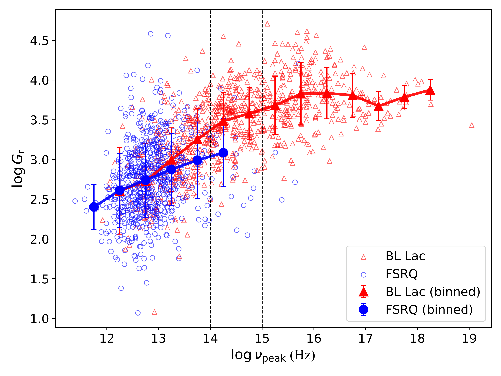
图注：$\gamma$-ray loudness $G_{\rm r}$ versus synchrotron peak frequency $\nu_{\rm peak}$ for \(\textit{Fermi}\) blazars. The interval of $\log \nu_{\rm{peak}}$ with a bin size of 0.5 for both BL Lacs and FSRQs. The dashed vertical lines indicate the boundaries between LSP, ISP, and HSP blazars (LSP: $\log (\nu_{\rm peak}/\rm{Hz})< 14$; ISP: $14 \le \log (\nu_{\rm peak}/\rm{Hz})< 15$; HSP: $\log (\nu_{\rm peak}/\rm{Hz})\ge 15$). Symbols are the same as in Figure~\(\ref{fig:radio_gamma_flux}.\)
对应解读：建议重点查看的图表第4、5项；关键图表逐图导读图4；模型拟合段落中关于 \(G_r\)-ν_peak 趋势与 HBL 平台的讨论。
入选理由：这是全文物理解释的核心图，直接展示 γ 射线响度 \(G_r\) 随同步峰频率 ν_peak 的变化，并标出 LSP/ISP/HSP 边界和按 0.5 dex 分箱的信息。日报强调的 LBL/FSRQ 正相关、HBL 在 log(ν_peak/Hz)≈15.5–16 附近的平台、以及 KN 抑制解释都需要依赖这张图判断，因此科学价值最高。
来源与置信度：\(arxiv_source\)；high；\(arxiv_source\) / \(ye_tex.tex\):figure[4]
Fig05
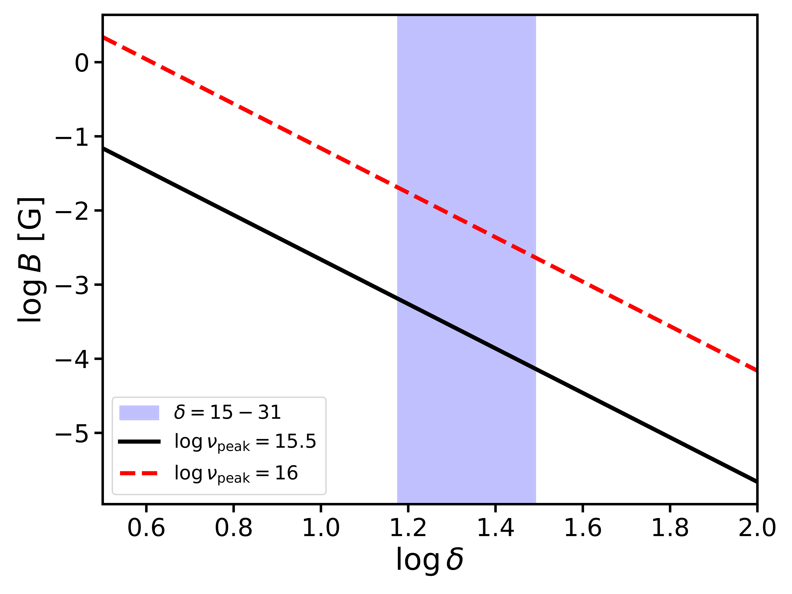
图注：Magnetic field strength (B) versus Doppler factor ($\delta$). The blue shaded region indicates the range $15 < \delta < 31$. Black solid and red dashed lines denote $\log \nu_{\rm peak}=15.5$ and 16, respectively.
对应解读：建议重点查看的图表第6项；关键图表逐图导读图6；模型拟合段落中关于一带 SSC 框架和 -4.14<log(B/G)<-1.69 磁场约束的讨论。
入选理由：这张图直接把 HBL 平台位置与磁场 B、多普勒因子 δ 联系起来，蓝色阴影给出 δ 范围，黑实线和红虚线对应 logν_peak=15.5 和 16，是检验磁场范围如何由 KN 过渡条件推出的关键证据。相比普通散点图，它更直接支撑论文最具物理含义的参数约束。
来源与置信度：\(arxiv_source\)；high；\(arxiv_source\) / \(ye_tex.tex\):figure[5]
Fig01
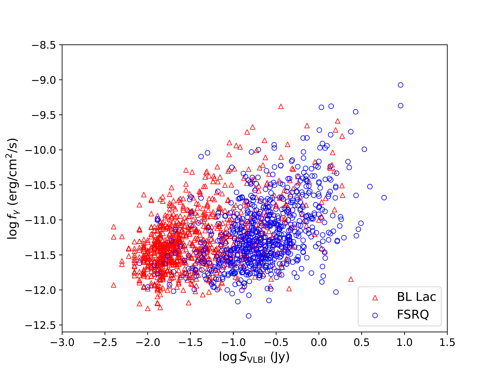
图注：$\gamma$-ray energy flux ($ f_{\gamma}$) versus VLBI radio flux density ($S_{\rm{VLBI}}$) for \(\textit{Fermi}\) blazars. Red triangles represent BL Lacs and blue circles represent FSRQs.
对应解读：建议重点查看的图表第1项；关键图表逐图导读图2；模型拟合段落中关于射电通量与 γ 射线通量相关斜率和选择效应的讨论。
入选理由：该图展示 γ 射线能流 \(f_gamma\) 与 VLBI 射电流量密度 \(S_VLBI\) 的关系，并区分 BL Lac 与 FSRQ，是作者声称两个子类都存在射电—γ 射线正相关、进而支持 SSC 贡献的基础图。它也便于检查高通量端是否由少数源主导以及两类源是否有不同分布。
来源与置信度：\(arxiv_source\)；high；\(arxiv_source\) / \(ye_tex.tex\):figure[1]
Fig02
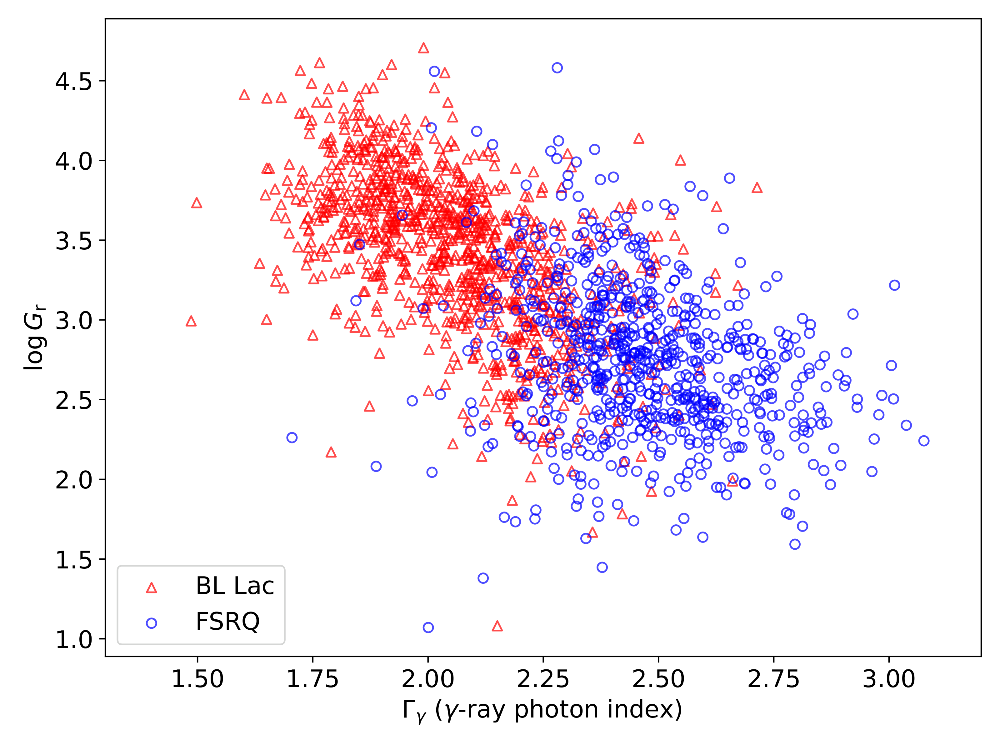
图注：$\gamma$-ray loudness $G_{\rm r}$ versus $\gamma$-ray photon index $\Gamma_\gamma$ for \(\textit{Fermi}\) blazars. Symbols are the same as in Figure~\(\ref{fig:radio_gamma_flux}.\) BL Lacs occupy regions of higher $G_{\rm r}$ and harder spectra compared to FSRQs.
对应解读：建议重点查看的图表第3项；关键图表逐图导读图3；模型拟合段落中关于 \(G_r\)-Γ_gamma 反相关和类别混合残差的讨论。
入选理由：该图直接对应 γ 射线响度 \(G_r\) 与光子指数 Γ_gamma 的关系，是支撑“谱越硬通常 γ 射线越响”这一结论的主要图表。它还明确显示 BL Lac 相比 FSRQ 具有更高 \(G_r\) 和更硬谱，适合检查日报中提醒的类别混合是否放大全样本反相关。
来源与置信度：\(arxiv_source\)；high；\(arxiv_source\) / \(ye_tex.tex\):figure[2]
Fig03
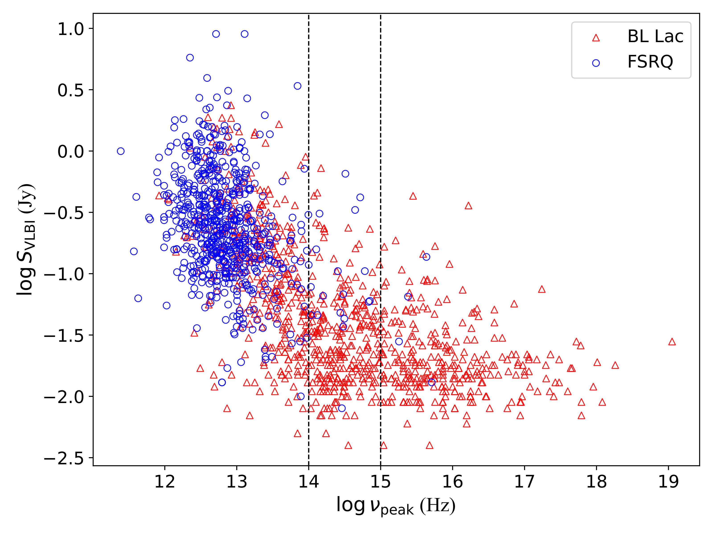
图注：VLBI flux density ($S_{\rm{VLBI}}$) versus synchrotron peak frequency $\nu_{\rm{peak}}$ for \(\textit{Fermi}\) blazars. The dashed vertical lines indicate the boundaries between LSP, ISP, and HSP blazars (LSP: $\log (\nu_{\rm peak}/\rm{Hz}) < 14$; ISP: $14 \le \log (\nu_{\rm peak}/\rm{Hz})< 15$; HSP: $\log (\nu_{\rm peak}/\rm{Hz})\ge 15$). Symbols are the same as in Figure~\(\ref{fig:radio_gamma_flux}.\)
对应解读：关键图表逐图导读图1的样本分布背景；建议重点查看的图表第4项的辅助信息。
入选理由：该图不是 \(G_r\)-ν_peak 核心关系，而是 \(S_VLBI\) 与 ν_peak 的散点图，并标出 LSP/ISP/HSP 分类边界。它可作为理解样本在同步峰频率和射电亮度上的分布、以及后续 Fig04 中按峰频分类解释的辅助图，但对主要结论的直接支撑弱于 Fig04、Fig05、Fig01 和 Fig02。
来源与置信度：\(arxiv_source\)；high；\(arxiv_source\) / \(ye_tex.tex\):figure[3]
强相关工作
这篇工作属于 Fermi 耀变体大样本多波段相关性研究，与 4LAC/4FGL 目录论文、早期 Fermi-LAT AGN 射电—\(\gamma\) 相关论文、以及耀变体序列和 SSC/EC 模型文献直接相关。可检索关键词包括 “Fermi blazar radio gamma correlation”、“4LAC DR3 blazar synchrotron peak”、“gamma-ray loudness blazars”、“SSC Klein Nishina HBL”。同类研究通常会讨论通量—通量相关是否受红移共同项影响，以及 BL Lac 与 FSRQ 是否应使用不同的物理模型。
理论背景上，它与经典一带 SSC 模型、外部康普顿模型和耀变体序列讨论相连。相反或有张力的观点包括：FSRQ 的高能辐射往往由外部康普顿主导，不能仅凭射电—\(\gamma\) 相关称为 SSC；极端 HBL 的 TeV SED 有时需要多区模型、低磁场模型、spine-sheath 结构或强子成分；射电与 \(\gamma\) 非同时数据会削弱逐源物理解释。建议进一步检索 “blazar sequence controversy”、“Doppler factor radio gamma correlation blazar”、“Klein Nishina suppression SSC HBL”、“extreme HBL one-zone SSC magnetic field”。
同一事件 / 同类源线索：
- https://arxiv.org/abs/2608.00996
- https://arxiv.org/pdf/2608.00996
- https://arxiv.org/abs/2201.11184
- http://astrogeo.org/rfc/
相似工作：
基础理论 / 方法工作：
相反观点 / 张力线索：
（未提供）
7. Gamma Rays from ALP-Photon Conversion and Inverse Compton Reprocessing in Neutron Star Magnetospheres
- 来源：arXiv / astro-ph.HE
- 链接：https://arxiv.org/abs/2608.00589v1
- 作者：Federica Giacchino, Conrado A. Torres, Giorgio Galanti, Bradley J. Kavanagh, Maria A. Pérez-García, Jose M. Diego
- 评分：novelty 7/10，importance 7/10，relevance 9/10，final 8.70/10
- 推荐理由：研究中子星/磁星磁层中ALP-光子转换产生Fermi-LAT能段伽马射线，并给出现有和未来MeV-GeV观测约束；伽马射线新物理信号相关性高。
中文题目：中子星磁层中的轴子样粒子—光子转换与逆康普顿再处理产生的伽马射线
做了什么：这篇文章研究中子星内部产生的轴子样粒子（ALP）能否在强磁场磁层中转化为可被观测到的 \(\gamma\) 射线，并进一步考虑这些光子在磁层环境中经逆康普顿散射后是否会被推到更高能段。作者把中子星内部的 ALP 产生、磁层中的 \(\mathrm{ALP}\)-光子转换、银河磁场中的后续传播转换，以及 \(\mathrm{MeV}\)-\(\mathrm{GeV}\) 仪器响应联系起来，评估 \(\textit{Fermi}\)-LAT 现有数据和未来 COSI 类任务对 ALP 参数空间的约束能力。核心结论是：强磁场中子星，尤其是磁星和类磁星高磁场脉冲星，确实是寻找 \(\mathrm{ALP}\)-诱导高能辐射的有吸引力目标；不过可探测性强烈依赖中子星温度、距离、磁场几何、等离子体环境和耦合常数 \(g_{a\gamma}\)，现有 \(\textit{Fermi}\)-LAT 非探测可转化为有意义但模型依赖较强的约束。
为什么重要：重要性在于它把两个通常分开讨论的问题接到一起：恒星内部轻弱耦合粒子的热产生，以及强磁场天体中的粒子—光子混合。磁星表面磁场可达 \(B_0\sim10^{14}\)-\(10^{15}\,\mathrm{G}\)，远高于普通脉冲星，是天然的 ALP 转换实验室；但 \(\textit{Fermi}\)-LAT 能段中磁星稳态辐射长期缺乏明确探测，这正好可用于约束额外的非标准辐射通道。
理论 / 观测 / 仪器方法价值：对理论的价值是给出一套从中子星热结构到磁层转换概率再到观测通量的半解析/数值框架，可用于比较不同类别中子星的 ALP 信号。对观测的价值是说明 \(\textit{Fermi}\)-LAT 非探测并非简单的“没有信号”，而是可在假设中子星温度、磁场和距离后转化为 \(g_{a\gamma}\) 与 ALP 质量 \(m_a\) 的排除区域。对仪器和方法的价值是把未来 \(\mathrm{MeV}\)-\(\mathrm{GeV}\) 灵敏度曲线，例如 COSI 代表的中能 \(\gamma\) 射线窗口，映射到 ALP 参数空间，指出哪类源最值得深度曝光。
为什么应该关注：如果你关心暗物质候选粒子、强磁场等离子体、磁星高能辐射或未来 \(\mathrm{MeV}\) 天文学，这篇文章值得看。它不是单纯“用磁星找 ALP”的概念稿，而是尝试把产生率、转换、传播、再处理和仪器可探测性放在同一条证据链上。即使最终没有发现信号，这类工作也能告诉我们哪些天体物理不确定性最限制 ALP 约束，以及未来观测应该优先改善温度、距离、磁场几何还是高能背景建模。
展开详细解读：文章讲解、背景、理论、重点章节、图表与相关工作
文章详细讲解
科学问题：ALP 是许多超出标准模型理论中自然出现的轻赝标量粒子，能够通过 \(g_{a\gamma}a\mathbf{E}\cdot\mathbf{B}\) 与光子耦合。在强磁场环境中，ALP 与光子的传播本征态会混合；如果 ALP 在中子星内部由热过程产生并逃逸出来，就可能在外部磁层中转化为 \(\gamma\) 射线。本文问的是：这种机制在磁星和高磁场脉冲星周围能否产生 \(\textit{Fermi}\)-LAT 可见的 \(E\gtrsim100\,\mathrm{MeV}\) 辐射？如果没有观测到稳态辐射，能否反过来约束 \(m_a\) 与 \(g_{a\gamma}\)？
作者怎么做：文章首先为不同类别中子星指定内部密度、温度和磁场尺度，计算 ALP 热产生的能谱和总光度。随后沿着中子星外部磁层传播求解 ALP—光子转换概率，重点考虑强偶极磁场给横向磁场分量 \(B_\perp\) 带来的增强。作者还加入银河磁场传播，使得离开磁层后仍可发生额外转换。最后，他们把得到的光子通量与 \(\textit{Fermi}\)-LAT 能段观测上限比较，并用未来 COSI 类 \(\mathrm{MeV}\)-\(\mathrm{GeV}\) 灵敏度估计潜在探测空间。
关键结果：在足够高的核心温度和强磁场下，磁星类目标可产生非忽略的 ALP 诱导 \(\gamma\) 射线通量。磁层转换通常是主导贡献，银河磁场转换可作为补充，但其重要性依赖视线方向、距离和银河磁场模型。逆康普顿再处理则提供了一个额外可观测特征：原本由 ALP 转换产生的光子若与磁层电子群相互作用，可将部分辐射重新分布到更高能区，从而改变谱形而不只是整体归一化。这使得谱形诊断比单一积分通量上限更有信息量。
局限和下一步：最大不确定性来自中子星内部温度、磁层等离子体密度、磁场几何、粒子分布以及源的距离。磁星的真实磁层远非真空偶极场，扭曲磁场、电流层、对产生等离子体和脉冲相位依赖都可能显著改变转换和吸收。下一步应把该模型用于具体源的相位分辨分析，并与 X 射线温度、脉冲轮廓、磁场衰减模型和 \(\textit{Fermi}\)-LAT 长时间曝光数据联合拟合，而不是只用代表性参数给出包络式约束。
关键结果是怎么做出来的
本文最重要的证据链从样本选择开始。作者关注的是磁场很强但在 \(\textit{Fermi}\)-LAT 能段没有稳态显著探测的中子星族群，包括磁星和具有类磁星磁场的脉冲星。样本层面的关键不是追求大量源堆叠，而是选择那些 \(B_0\)、距离 \(d\)、温度 \(T\) 和年龄相对可估的对象，因为 ALP 产生率与热状态有关，转换概率与 \(B_\perp\) 和传播路径有关，观测约束又随 \(d^{-2}\) 衰减。
通量计算的核心量是到达地球的谱能流 \(d\Phi_\gamma/dE\)。作者先计算中子星内部 ALP 产生谱 \(d\dot N_a/dE\)，再乘以磁层和银河磁场中的总转换概率 \(P_{a\to\gamma}(E)\)，最后除以 \(4\pi d^2\)。在这个框架中，不同源的比较相当直观：更热的星给出更大的 ALP 产额，更强的磁场给出更大的混合项，更近的距离给出更高的可见通量。文章的参数空间图应当是读者检查的重点，因为它把这些天体物理输入压缩成 \(m_a\)-\(g_{a\gamma}\) 平面上的可排除或可探测区域。
显著性和约束的逻辑主要来自非探测上限，而不是新源发现。对每个能段或积分能段，若模型预测的 ALP 诱导通量超过 \(\textit{Fermi}\)-LAT 对该方向稳态点源/扩展源的上限，就排除相应参数。严格做法应使用泊松似然或 LAT 标准似然，把源模型、银河弥散背景、各向同性背景和邻近源一起拟合；本文的结论应理解为基于现有 \(\gamma\) 射线约束和代表性灵敏度的参数空间评估。读者应特别注意作者是否使用能谱逐 bin 上限、积分上限还是仪器灵敏度曲线，因为三者给出的排除强度可能不同。
支撑结论的图表通常包括：不同中子星类别的 ALP 诱导谱、磁层转换概率随能量和 \(m_a\) 的变化、加入逆康普顿再处理前后的谱形差异、以及 \(m_a\)-\(g_{a\gamma}\) 参数平面上的现有限制和未来灵敏度。系统误差主要来自温度 \(T\)、磁场 \(B_0\)、半径 \(R_\ast\)、质量 \(M_\ast\)、距离 \(d\)、磁层等离子体密度和银河磁场模型。稳健性检验应关注作者是否改变这些输入参数，并说明约束边界移动的幅度。
一个关键读法是区分“磁层直接转换”与“逆康普顿再处理”的证据角色。前者决定是否有足够光子产生，后者决定这些光子如何在 \(\textit{Fermi}\)-LAT 或 COSI 能段中分布。若再处理模型需要假定特定电子洛伦兹因子分布或光子场密度，那么谱形峰值位置与高能尾部会有额外模型依赖。因此，本文结果更适合作为目标选择和参数空间预估，而不是对某一具体磁星给出完全无模型的粒子物理限制。
展开背景、理论、公式、模型、章节和图表导读
背景知识
ALP 是轴子思想的推广。QCD 轴子最初用于解决强 CP 问题，其质量与耦合之间有特定关系；ALP 则允许 \(m_a\) 与 \(g_{a\gamma}\) 在更宽范围内独立变化。天体物理系统对 ALP 很敏感，因为恒星内部高温高密度环境可产生 ALP，而外部磁场可把 ALP 转回光子。中子星在这两方面都极端：内部致密、外部磁场强，因此天然适合做轻弱耦合粒子的实验室。
磁星是一类由磁能主导活动的中子星，表面偶极磁场常估计为 \(B_0\sim10^{14}\)-\(10^{15}\,\mathrm{G}\)。它们在 X 射线和软 \(\gamma\) 射线有爆发、短暴和巨耀发，但在 \(\textit{Fermi}\)-LAT 的 \(E\gtrsim100\,\mathrm{MeV}\) 稳态能段并没有被牢固地作为一个族群探测到。这一点很关键：强磁场让 ALP 转换更有效，但缺乏稳态 LAT 信号又给模型留下了可检验的上限。
历史上，ALP 天体物理约束主要来自太阳轴子、水平分支星冷却、超新星 \(1987\mathrm{A}\)、星系团磁场中的 \(\mathrm{ALP}\)-光子混合以及 TeV blazar 透明度异常等。中子星相关研究则包括冷却约束、X 射线谱畸变、射电脉冲星磁层转换以及磁星爆发中的额外辐射。本文的特点是把注意力放在 \(\textit{Fermi}\)-LAT 能段和逆康普顿再处理上，尝试打开一个相对少被系统探索的窗口。
为什么现在值得重新看？一方面，\(\textit{Fermi}\)-LAT 已积累了多年全天巡天数据，长期平均上限显著优于早期；另一方面，COSI 等未来 \(\mathrm{MeV}\) 任务将改善过去最困难的 \(\mathrm{MeV}\) 间隙。与此同时，磁星样本、距离估计、X 射线温度和磁场衰减模型也在改进。把这些信息整合起来，可以比早期概念性估算更具体地判断哪些源真的有希望。
该领域常见误区有三点。第一，强磁场并不自动意味着强约束，因为 ALP 产额还依赖温度，观测通量还依赖距离和背景。第二，磁层不是简单真空偶极场；等离子体频率、QED 真空双折射、吸收和散射都可能改变混合。第三，非探测约束不是纯粒子物理约束，它通常带有显著天体物理先验，尤其是对 \(T\)、\(B_\perp(r)\)、电子分布和源方向背景的先验。
基础理论 / 方法脉络
基本物理图像是两步：先在中子星内部产生 ALP，再在外部磁场中把 ALP 转成光子。ALP 与光子的相互作用可写成 \(g_{a\gamma}a\mathbf{E}\cdot\mathbf{B}\)。外磁场提供一个“背景场”，使传播中的 ALP 与偏振方向平行于 \(B_\perp\) 的光子态发生混合。混合强弱由 \(g_{a\gamma}B_\perp\) 控制，而相干性由 ALP 质量项、等离子体项和 QED 折射项之间的相位差控制。
中子星内部的 ALP 产生通常与温度和物质组成有关。不同微观过程会给出不同 emissivity，但共同特征是热谱强烈依赖 \(T\)，因此年轻、热的中子星更有利。对本文而言，内部模型的作用是给出一个离开恒星表面的 \(d\dot N_a/dE\)，之后的磁层传播才决定有多少 ALP 变成可见 \(\gamma\) 射线。
磁层传播中最重要的量包括横向磁场 \(B_\perp(r)\)、等离子体频率 \(\omega_{\rm pl}(r)\)、ALP 质量 \(m_a\)、能量 \(E\) 和路径长度。若采用偶极磁场，磁场随半径大致按 \(r^{-3}\) 下降，因此转换主要发生在靠近中子星的区域；但靠得太近时 QED 真空极化和等离子体效应可能又改变相位匹配。对于旋转倾角和视线角不同的源，\(B_\perp\) 也会随相位改变，这意味着真实信号可能有脉冲调制。
观测层面，模型输出是谱通量而不是单个总光度。LAT 或 COSI 的可探测性取决于能量响应、点扩散函数、曝光、背景以及源方向附近是否有强银河弥散辐射。对非探测目标，常用做法是把模型谱与能量分 bin 上限或似然剖面比较，得到参数空间排除。若加入逆康普顿再处理，则还要假定磁层电子的能谱和密度，计算散射后光子能量分布。
退化关系很明显：较小的 \(g_{a\gamma}\) 可被较高的 \(T\) 或更近的 \(d\) 部分补偿；较大的 \(m_a\) 会破坏相干转换，但某些等离子体共振条件又可能局部增强转换；更强的 \(B_0\) 通常增强信号，但磁场几何和等离子体屏蔽可能改变简单标度。因此，读者不应只看一条约束曲线，而要看参数扫描和不确定性带。
公式与推导
第一步从 ALP—光子耦合拉氏量出发：
这里 \(a\) 是 ALP 场，\(F_{\mu\nu}\) 是电磁场张量，\(\tilde F^{\mu\nu}\) 是其对偶张量，\(g_{a\gamma}\) 是耦合常数。该式说明外部磁场可把一个传播中的 ALP 与同偏振光子态混合。
在一维传播近似下，ALP 与平行偏振光子态满足薛定谔型传播方程：
其中 \(s\) 是路径坐标，\(A_\parallel\) 是电场偏振平行于 \(B_\perp\) 的光子振幅，\(\Delta_{a\gamma}=g_{a\gamma}B_\perp/2\)，\(\Delta_a=-m_a^2/(2E)\)，\(\Delta_\gamma\) 包括等离子体和 QED 折射贡献。
若忽略吸收并把介质近似为均匀，转换概率可写为：
这里 \(L\) 是相干传播长度。该式给出一个重要判断：强磁场增大 \(\Delta_{a\gamma}\)，但若 \(\Delta_\gamma-\Delta_a\) 很大，相位失配仍会压低转换。
磁层中常用偶极场作为基准：
其中 \(B_0\) 是表面磁场，\(R_\ast\) 是中子星半径，\(r\) 是径向距离。因为 \(B(r)\) 降得很快，主要贡献通常来自近星区域；但真实 \(B_\perp(r)\) 还依赖磁轴、视线和旋转相位。
等离子体项可用等离子体频率表示：
这里 \(n_e\) 是电子数密度，\(m_e\) 是电子质量，\(\alpha\) 是精细结构常数。若 \(\omega_{\rm pl}\approx m_a\)，则可能出现近共振转换；若 \(n_e\) 不确定，约束曲线会随磁层模型移动。
从内部产生到地球通量的连接可写为：
这里 \(d\) 是源距，\(d\dot N_a/dE\) 是 ALP 产生率谱，\(P_{a\to\gamma}^{\rm tot}\) 包括磁层和银河磁场传播中的转换。该式是把粒子物理参数和天体源参数映射到可观测量的核心。
若考虑热产生的温度标度，可把 ALP 光度写成体积分：
其中 \(d\dot n_a/dE\) 是单位体积单位能量产生率，依赖密度 \(\rho\)、温度 \(T\)、能量 \(E\) 和耦合 \(g_{a\gamma}\)。这一步说明温度不确定性会直接传导到最终通量。
逆康普顿再处理的能量提升在 Thomson 极限下可估为：
这里 \(\gamma_e\) 是电子洛伦兹因子，\(E_{\rm seed}\) 是被散射的种子光子能量。该式说明即使初始 ALP 转换光子落在较低能段，磁层相对论电子也可能把一部分功率推到 LAT 更敏感或背景不同的能段。
观测约束常可用泊松似然表达：
这里 \(n_i\) 是第 \(i\) 个能量/空间 bin 的观测计数，\(\mu_i\) 是背景加源模型预测，\(\boldsymbol\theta\) 包括 \(m_a\)、\(g_{a\gamma}\) 和天体物理参数。非探测上限可由剖面似然给出。
常用检验统计量为：
其中 \(\hat{\boldsymbol\theta}\) 是最佳拟合参数，\(\boldsymbol\theta_0\) 是无 ALP 信号或被检验参数点。该式把模型通量和观测背景联系起来，可用于判断探测显著性或构造排除区间。
模型拟合 / 应用方法
本文或同类工作中的拟合量主要包括谱通量归一化、谱形、ALP 质量 \(m_a\)、耦合 \(g_{a\gamma}\)，以及若加入再处理时的电子分布参数。严格拟合时，源模型应给出 \(d\Phi_\gamma/dE\)，再通过仪器响应矩阵变成预测计数 \(\mu_i\)。对于 LAT 数据，通常还需要同时拟合银河弥散背景、各向同性背景和邻近 4FGL 源的谱参数。
参数估计可采用剖面似然或贝叶斯后验。剖面似然适合给出 \(95\%\) 置信上限：在固定 \((m_a,g_{a\gamma})\) 下最大化背景和 nuisance 参数，再看 \(\Delta\ln\mathcal{L}\)。贝叶斯方法则可以显式加入距离、温度、磁场和电子密度的先验，得到边缘化后的参数限制。由于中子星物理先验很强，贝叶斯框架有助于避免把不确定的天体模型误读为粒子物理定论。
残差诊断应看两个层面。第一是能谱残差：ALP 转换通常给出与普通磁层曲率辐射或幂律不同的谱形，逆康普顿再处理还会改变峰值和高能尾。第二是空间和相位残差：如果信号来自中子星磁层，它应与源位置一致，且可能随自转相位调制；若残差与银河弥散模板相关，则更可能是背景建模问题。
主要退化包括 \(g_{a\gamma}\) 与 \(T\) 的归一化退化、\(m_a\) 与 \(\omega_{\rm pl}\) 的相干/共振退化、\(B_0\) 与几何角度的转换效率退化，以及电子分布与逆康普顿谱形的退化。距离 \(d\) 也很关键，因为通量按 \(d^{-2}\) 下降；一个近但温度低的源和一个远但温度高的源可能给出类似可见通量。
模型可能失败的地方也很清楚。若磁层不是偶极场、存在强吸收或级联、电子分布远非假设形式，逆康普顿部分就可能被高估或低估。若内部 ALP emissivity 采用了过于简化的热结构，年轻磁星的实际冷却状态会显著改变结论。因此实际应用中，应把本文框架作为“可观测性和约束预报器”，再针对具体源做多波段联合拟合。
重点章节 / 结果段落怎么读
数据/样本部分应先看作者如何定义中子星类别：普通脉冲星、磁星、类磁星高磁场脉冲星是否分开处理；每类采用的 \(B_0\)、\(T\)、\(d\)、\(R_\ast\) 和 \(M_\ast\) 是观测值、文献值还是代表性基准值。这里决定了后面通量大小的绝大部分。
ALP 产生模型部分要看内部 emissivity 的假设。读者应检查产生过程是否与 \(g_{a\gamma}\) 成简单幂律关系，是否考虑密度和温度剖面，是否使用等温核心近似，以及温度不确定性是否被传播到最终约束。
磁层和银河磁场转换方法部分是技术核心。应重点看传播方程中包含哪些折射项：ALP 质量项、等离子体项、QED 真空极化项是否都在；磁场是否是纯偶极；银河磁场采用哪种模型；是否对视线方向和偏振态做了平均。
逆康普顿再处理部分要单独读，因为它引入新的天体物理自由度。读者应检查电子能谱、密度、散射区域和 Klein-Nishina 修正是否处理得足够一致；若只是用代表性参数估算，应把它看作潜在谱形特征而非稳健约束来源。
结果和讨论部分应关注 \(m_a\)-\(g_{a\gamma}\) 图。要比较现有 \(\textit{Fermi}\)-LAT 上限、未来 COSI 灵敏度、其他天体物理约束和实验约束的位置关系，并看作者是否明确说明哪些区域受中子星温度或磁层模型主导。
附录/稳健性检验若有，应优先检查参数扫描。尤其要看改变 \(T\)、\(B_0\)、\(d\)、\(n_e(r)\)、银河磁场模型和电子谱后，约束边界移动是否超过一个数量级。
建议重点查看的图表
-
不同中子星类别的 ALP 诱导 \(\gamma\) 射线能谱：看 \(E^2d\Phi_\gamma/dE\) 或 \(d\Phi_\gamma/dE\) 的峰值位置、归一化，以及是否进入 \(\textit{Fermi}\)-LAT 或 COSI 灵敏度范围。
-
转换概率 \(P_{a\to\gamma}(E)\) 随能量、\(m_a\) 或半径的变化：看是否存在共振、相干抑制和强磁场近星区主导的特征。
-
磁层转换与银河磁场转换的分量比较：看两者是否相加、是否在不同能段主导，以及视线方向改变后银河贡献是否稳定。
-
加入逆康普顿再处理前后的谱形比较：看高能尾是否显著增强，峰值是否移动，以及增强是否依赖特定电子 \(\gamma_e\) 假设。
-
\(m_a\)-\(g_{a\gamma}\) 排除/灵敏度图：看现有 LAT 非探测排除区、未来 COSI 预期区、以及 CAST、HB 星、超新星等已有约束之间的相对位置。
-
系统误差或参数扫描图/表：看 \(T\)、\(B_0\)、\(d\)、\(n_e\) 和磁场模型改变时约束边界移动的幅度。
-
若有源列表表格：检查每个目标的距离、磁场、温度和 LAT 上限，不要只看最强约束源；有时最优目标不是磁场最强，而是温度高且距离近。
-
若有残差或似然诊断：看模型是否只在背景复杂的银河面附近“接近上限”，这类约束最容易受弥散背景系统误差影响。
关键图表逐图导读
图 1：建议把它当作源物理参数或样本选择图来读。横轴可能是源类别、距离或磁场，纵轴可能是温度、ALP 产额或预期通量。数据点代表不同中子星或代表性模型。读图时不要只找 \(B_0\) 最大的源，还要同时看 \(T\) 和 \(d\)，因为最终通量受三者共同控制。
图 2：若展示 \(P_{a\to\gamma}\) 随 \(E\) 或 \(r\) 的变化，横轴通常是能量或传播半径，纵轴是转换概率。模型线可能对应不同 \(m_a\)、\(g_{a\gamma}\)、\(B_0\) 或等离子体密度。主要结论应是强磁层显著提高转换，但相干条件决定哪些质量和能量真正有效。陷阱是把局部高概率误认为总通量高；若 ALP 产额在该能段低，仍未必可探测。
图 3：若展示到达地球的 \(\gamma\) 射线谱，横轴为 \(E\)，纵轴为 \(d\Phi_\gamma/dE\) 或 \(E^2d\Phi_\gamma/dE\)。数据上限或灵敏度曲线可能来自 \(\textit{Fermi}\)-LAT 和 COSI。读者应比较模型线与仪器曲线的交叉区域，并注意灵敏度曲线通常假定特定曝光、背景和谱形，不能直接等同于针对某个真实源的似然上限。
图 4：若展示逆康普顿再处理，通常会有直接转换谱和再处理后谱的对比。横轴为能量，纵轴为能量通量；模型线可能对应不同电子洛伦兹因子或电子谱指数。主要结论是再处理能把部分功率推向更高能段，增加 LAT 可见性。陷阱是电子分布若没有独立观测约束，则该增强带有较强模型依赖。
图 5：参数空间图应是全文重点。横轴通常为 \(m_a\)，纵轴为 \(g_{a\gamma}\)，阴影区表示排除或可探测区域，曲线表示现有实验/天体物理限制和未来灵敏度。读图时要确认阴影方向：通常较大的 \(g_{a\gamma}\) 更易被排除，但在高 \(m_a\) 区相干性下降会削弱约束。还要看作者是否给出不同 \(T\) 或磁场模型的多条边界。
图 6：稳健性图或表格若存在，应检查系统误差。坐标轴可能是某个 nuisance 参数与限制强度的关系，或多条约束曲线的包络。最重要的是看约束是否随 \(T\)、\(d\)、\(n_e\) 变化超过数量级；如果是，则论文结论应表述为模型依赖的潜力评估，而非稳健排除。
论文原图 / 可嵌入图片
Fig17
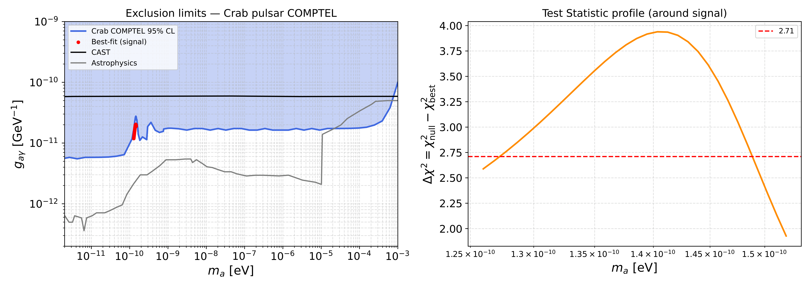
图注：Constraints on the ALP-photon coupling derived from the COMPTEL observations of the Crab pulsar \(\cite{Kuiper:2001ev}.\) \(\emph{Left panel}\): 95\% confidence level upper limits on the ALP-photon coupling $g^{UL}_{a\gamma}$ as a function of the ALP mass $m_a$, obtained by fitting the COMPTEL spectrum with a broken power-law \(\cite{Kuiper:2001ev}\) plus an ALP-induced component. The blue shaded region is excluded by this analysis. Red markers indicate the best-fit values $g^{best}_{a\gamma}$ for masses with $\mathrm{TS}>2.71$. We compare the result with CAST (black) \(\cite{CAST:2024eil}\) and all astrophysical bounds (gray) in \(\cite{Fermi-LAT:2016nkz, Noordhuis:2022ljw, Li:2024zst, Ning:2024eky}.\) \(\emph{Right pane}l\): Test Statistic profile as a function of the ALP mass of the red points. The horizontal dashed line corresponds to $\mathrm{TS}=2.71$, which is adopted as the reference threshold for a one-sided $95\%$ confidence level excess according to Wilks' theorem.
对应解读：建议重点查看的图表第5项“m_a-g_{a\gamma}排除/灵敏度图”以及模型拟合段落中的95%置信上限、TS和残差/似然诊断。
入选理由：这是候选图中最直接给出观测约束的图：左面板展示g_{a\gamma}^{UL}随m_a的95%置信上限、排除阴影区以及与CAST和其他天体物理约束的比较；右面板给出TS随m_a的轮廓和TS=2.71阈值，正好对应日报强调的似然诊断和置信水平判读。
来源与置信度：\(arxiv_source\)；high；\(arxiv_source\) / ALPmagnetarPDU.tex:figure[17]
Fig19
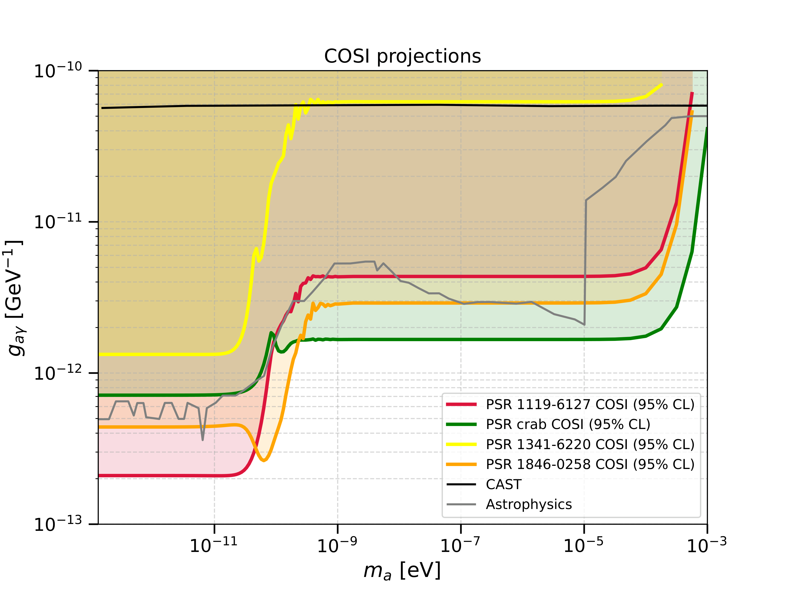
图注：Parameter space tested at $95\%$ C.L. by COSI after $T_{obs}=2$ yr of PSR 1119-6127 (red), Crab (green), PSR 1341-6220 (yellow), PSR 1846-0258 (orange). CAST (black)\(\cite{CAST:2024eil},\) all astrophysical bounds (gray) in \(\cite{Fermi-LAT:2016nkz, Noordhuis:2022ljw, Li:2024zst, Ning:2024eky}.\) The other couplings are fixed at $g_{ap}=g_{an}=5\times10^{-9}\text{ GeV}^{-1}$ and $g_{ae}=1.3\times10^{-13}\text{ GeV}^{-1}$.
对应解读：建议重点查看的图表第5项“m_a-g_{a\gamma}排除/灵敏度图”，以及图5逐图导读中关于未来COSI预期区和已有约束相对位置的讨论。
入选理由：该图展示COSI两年观测对多个中子星目标在m_a-g_{a\gamma}平面上的95% C.L.可测试区域，并叠加CAST和已有天体物理边界，是理解未来MeV-GeV观测潜力和不同目标贡献的核心图。
来源与置信度：\(arxiv_source\)；high；\(arxiv_source\) / ALPmagnetarPDU.tex:figure[19]
Fig06
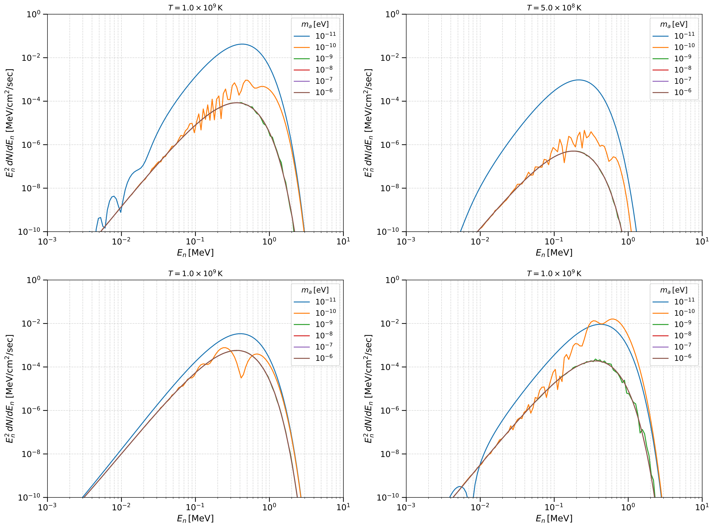
图注：\(\emph{Top left}\): Observed flux of PSR J1119-6127 at $T=10^9$ K; \(\emph{Top right}\): Observed flux of PSR J1341-6220 at $T=5\times10^8$ K; \(\emph{Bottom left}\): Observed flux of PSR J0534-2200 at $T=10^9$ K; \(\emph{Bottom right}\): Observed flux of PSR J1846-0258 at $T=5\times10^8$ K. All fluxes are computed for $g_{a\gamma}=10^{-11}$ GeV$^{-1}$ and six ALP mass values (from $10^{-11}$ to $10^{-6}$ eV).
对应解读：建议重点查看的图表第1项“不同中子星类别的ALP诱导γ射线能谱”，以及图3逐图导读中关于到达地球γ射线谱与质量依赖的讨论。
入选理由：该图给出四个脉冲星/高磁场中子星的观测光子通量，并比较六个ALP质量取值，是判断谱峰、归一化、源间差异以及是否可能进入高能仪器可见范围的关键能谱图。
来源与置信度：\(arxiv_source\)；high；\(arxiv_source\) / ALPmagnetarPDU.tex:figure[6]
Fig05
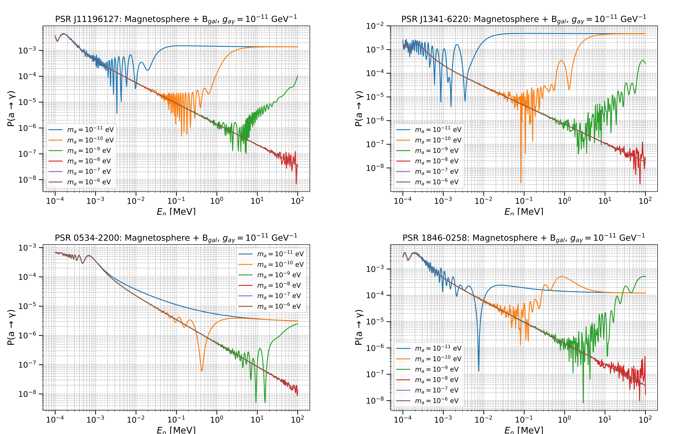
图注：Probability of conversion ALP$\rightarrow\gamma$ from ALP produced in PSR J1119-6127 (top left), PSR J1341-6220 (top right), PSR J0534-2200 (bottom left), PSR J1846-0258 (bottom right), for different masses from $m_a=10^{-11}$ eV to $m_a=10^{-6}$ eV, and fixed ALP-photon coupling $g_{a\gamma}=10^{-11}$ GeV$^{-1}$.
对应解读：建议重点查看的图表第2项“转换概率P_{a\to\gamma}随能量、m_a或半径的变化”，以及图2逐图导读中关于相干条件和质量依赖的讨论。
入选理由：该图直接展示四个源的ALP到光子转换概率，并扫描m_a=10^{-11}到10^{-6} eV，能够说明哪些质量区间转换有效、哪些区间因相干性或等离子体效应被压低，比单一质量示例更适合支撑物理解读。
来源与置信度：\(arxiv_source\)；high；\(arxiv_source\) / ALPmagnetarPDU.tex:figure[5]
Fig09
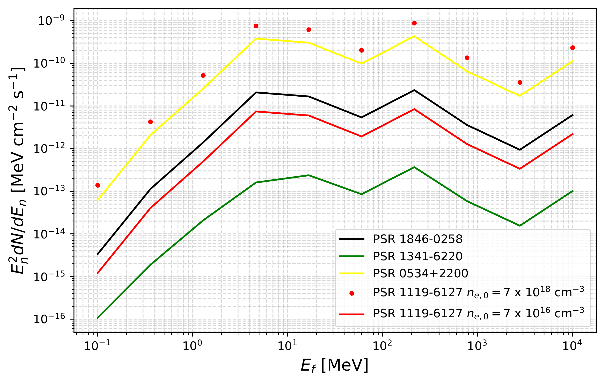
图注：Photon flux after Inverse Compton for the four PSRs applying Eq.~\(\eqref{eq:ICflux},\) for $m_a=10^{-11}$ eV and $g_{a\gamma}=10^{-11}$ GeV$^{-1}$. Only for PSR 1119-6127, the photon flux is shown for two different values of $n_{e,0}$, ($7\times 10^{16}$ cm$^{-3}$, $7\times 10^{18}$ cm$^{-3}$).
对应解读：建议重点查看的图表第4项“加入逆康普顿再处理前后的谱形比较”，以及图4逐图导读中关于高能尾和电子密度模型依赖的讨论。
入选理由：该图给出逆康普顿再处理后的四个PSR光子通量，并对PSR J1119-6127展示不同n_{e,0}下的结果，能直接支撑日报中关于IC增强、高能可见性以及电子分布/密度模型依赖的讨论。
来源与置信度：\(arxiv_source\)；high；\(arxiv_source\) / ALPmagnetarPDU.tex:figure[9]
Fig03
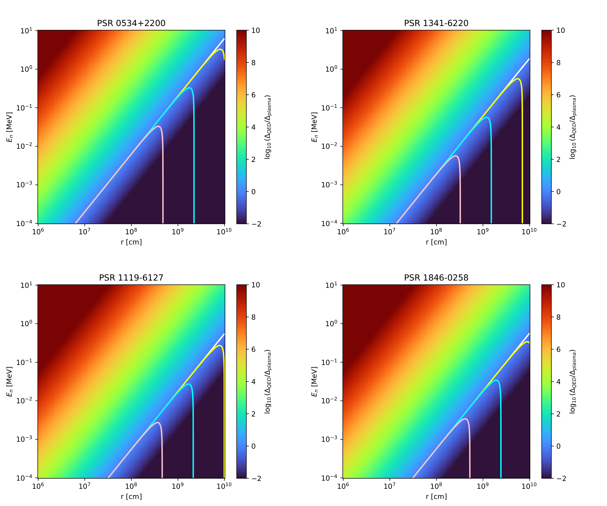
图注：Parameter space of ALP energy $E$ vs radius $r$ for four PSRs ($B_0$ and $n_{e,0}$ of each PSR are shown in Tab.\ref{tab:pulsars_transposed_ul}). The color gradient is the logarithmic ratio of the QED term over the plasma term. The solid lines mark the resonance condition of Eq.~\(\eqref{eq:resonance}.\) The ALP mass is fixed at $m_a=10^{-9}$ eV (white), $m_a=10^{-8}$ eV (yellow), $m_a=10^{-7}$ eV (cyan), $m_a=10^{-6}$ eV (pink).
对应解读：建议重点查看的图表第2项“转换概率与共振、相干抑制、强磁场近星区主导特征”，以及图2逐图导读中关于P_{a\to\gamma}物理条件的解释。
入选理由：该图在E-r参数空间中标出QED项与等离子体项的相对大小以及不同m_a的共振条件，有助于解释为什么转换概率在不同能量、半径和质量下变化，是理解后续通量和约束曲线形状的基础诊断图。
来源与置信度：\(arxiv_source\)；high；\(arxiv_source\) / ALPmagnetarPDU.tex:figure[3]
强相关工作
这篇工作与几条研究线相连。第一是传统 ALP 天体物理约束，包括恒星冷却、太阳轴子实验、超新星 \(1987\mathrm{A}\) 和星系团/AGN 光谱中的 \(\mathrm{ALP}\)-光子混合。检索关键词可用 “axion-like particles photon conversion astrophysical constraints”, “ALP photon mixing magnetic fields”, “CAST axion photon coupling”, “HB stars axion constraints”。这些工作提供 \(m_a\)-\(g_{a\gamma}\) 平面上的基准限制，本文的中子星约束应与它们比较，而不是孤立解读。
第二是磁星和高磁场脉冲星的高能观测。相关关键词包括 “Fermi LAT magnetars steady emission upper limits”, “magnetar gamma-ray emission”, “high magnetic field pulsars Fermi LAT”, “McGill magnetar catalog”。这里存在一个有趣张力：磁星有极强磁场，理论上有利于 ALP 转换；但 LAT 稳态非探测又要求任何额外机制不能过亮。本文正是把这种非探测转化为 ALP 限制。
第三是 \(\mathrm{MeV}\) 天文学与未来仪器灵敏度。COSI、AMEGO/e-ASTROGAM 类任务的共同目标是填补硬 X 射线到 GeV 之间的灵敏度缺口。检索关键词可用 “COSI MeV gamma-ray sensitivity”, “MeV gap gamma-ray astrophysics”, “Compton telescope axion-like particles”。若 ALP 诱导谱或逆康普顿再处理峰值落在 \(\mathrm{MeV}\) 区，未来任务可能比 LAT 更关键。
同一事件 / 同类源线索：
- https://arxiv.org/abs/2608.00589
- https://arxiv.org/pdf/2608.00589
- http://www.physics.mcgill.ca/~pulsar/magnetar/main.html
- https://fermi.gsfc.nasa.gov/ssc/data/access/lat/14yr_catalog/
- https://cosi.ssl.berkeley.edu/
相似工作：
基础理论 / 方法工作：
- https://arxiv.org/abs/hep-ph/0611350
- https://arxiv.org/abs/1602.00039
- https://arxiv.org/abs/1207.0493
相反观点 / 张力线索：
8. Polarization Angle Swings in Blazars Detected in the Millimeter-wave with the South Pole Telescope
- 来源：arXiv / astro-ph.HE
- 链接：https://arxiv.org/abs/2608.00302v1
- 作者：A. Simpson, E. Anderes, A. J. Anderson, B. Ansarinejad, M. Archipley, L. Balkenhol, D. R. Barron, P. S. Barry
- 评分：novelty 7/10，importance 7/10，relevance 9/10，final 8.70/10
- 推荐理由：SPT-3G毫米波blazar偏振角摆动的系统搜索，并与Fermi-LAT伽马耀发比较；样本小且总体滞后统计不强，但对blazar高能喷流多波段研究有价值。
中文题目：南极望远镜在毫米波段探测到耀变体偏振角摆动
做了什么：这篇论文用南极望远镜 SPT-3G 相机在 \(95\\,\mathrm{GHz}\) 和 \(150\\,\mathrm{GHz}\) 的五年偏振监测数据，系统搜索耀变体毫米波电矢量位置角（EVPA）的大幅、连续旋转。作者从约 \(1500\\,\mathrm{deg}^2\) 主巡天场中的 \(168\) 个亮源出发，筛出 \(8\) 个偏振信噪比足够测量 EVPA 的源；其中 \(4\) 个有连续的 Fermi-LAT 伽马射线探测。结果是：这 \(4\) 个伽马活跃源全部出现毫米波 EVPA 摆动，而另外 \(4\) 个没有伽马持续探测的源没有出现摆动。论文还比较了摆动与伽马耀发的时序关系，发现 \(14\) 个摆动中 \(8\) 个在伽马耀发前后 \(30\) 天内，但整体滞后分布仍与随机符合相容。
为什么重要：EVPA 摆动长期被用来追踪耀变体喷流中磁场结构、辐射区运动和高能耀发触发机制，但过去最系统的证据主要来自光学偏振。毫米波更接近射电核心和较低自吸收的喷流区域，也更少受宿主星系和热辐射污染。这项工作第一次用 CMB 望远镜级别的毫米波偏振时域数据做系统搜索，检验光学中已知的 EVPA–伽马活动联系是否延伸到 \(95\)–\(150\\,\mathrm{GHz}\)。
理论 / 观测 / 仪器方法价值：对理论的价值在于，它给随机多胞磁场模型施加了新的约束：简单随机游走不能同时再现观测到的摆动数量、幅度和持续时间。对观测方法的价值在于，它展示了 SPT-3G 这类大视场、长期稳定毫米波偏振仪器不仅能做宇宙学，也能做耀变体偏振时域天文学。对多信使/多波段研究而言，它给出了毫米波 EVPA 与 Fermi 伽马耀发相关性的较谨慎统计判断：单个事件可很显著，但整体样本尚不能排除随机符合。
为什么应该关注：如果你关心相对论喷流中粒子加速发生在哪里、磁场是湍流还是有序螺旋结构、伽马耀发和低频辐射区是否共址，这篇论文值得读。它不是简单宣布“发现相关性”，而是在小样本但长期监测的框架下，把毫米波 EVPA 摆动、偏振度、旋转速率、随机游走模型和伽马耀发时序放在同一个统计检验中，给后续 CMB 望远镜、ALMA、VLBI 与 Fermi 联合时域研究提供了清晰基准。
展开详细解读：文章讲解、背景、理论、重点章节、图表与相关工作
文章详细讲解
科学问题：耀变体喷流的非热辐射来自沿视线方向高速运动的相对论等离子体，偏振角 \(\chi\) 记录了投影到天球面的磁场方向和辐射区几何。光学监测已经多次看到 EVPA 的连续大幅旋转，并常常与伽马射线耀发相邻，因此被解释为冲击波穿过有序磁场、辐射团块沿螺旋轨道运动，或湍流单元随机叠加的结果。但毫米波段是否也有类似 EVPA 摆动、其时间尺度是否更慢、是否与伽马耀发同样相关，此前缺少系统样本。本文要回答的核心问题就是：在 \(95\\,\mathrm{GHz}\) 和 \(150\\,\mathrm{GHz}\) 上，耀变体 EVPA 摆动是否普遍存在，是否只出现在伽马活跃源中，以及随机游走能否解释这些摆动。
作者怎么做：论文使用 SPT-3G 相机对南天主场约 \(1500\\,\mathrm{deg}^2\) 的五年观测。样本从 \(168\) 个亮毫米波源出发，但 EVPA 是由 Stokes 参数 \(Q\) 和 \(U\) 给出的非线性量，低信噪比会造成角度不稳定和偏振度正偏，因此作者只保留 \(8\) 个偏振信噪比足够的源用于可靠 EVPA 时间序列分析。随后，他们在 \(95\\,\mathrm{GHz}\) 和 \(150\\,\mathrm{GHz}\) 分别识别连续、单调或准单调的 EVPA 摆动，并用 Fermi-LAT 光变曲线定义伽马射线耀发，检查摆动与耀发之间的时间间隔。
关键结果：在 \(8\) 个可测源中，\(4\) 个有连续 Fermi-LAT 伽马探测的耀变体全部显示 EVPA 摆动，而另 \(4\) 个没有连续伽马探测的源没有显示摆动。总共识别出 \(14\) 个毫米波 EVPA 摆动。相对于光学 EVPA 研究，这些毫米波摆动的振幅和旋转速率偏小，符合较长波长探测更大、更下游、更平滑辐射区的图像。作者还发现一周时间尺度上的 EVPA 变化率与偏振度呈反相关趋势，这与光学研究中“偏振越低、角度越容易快速转动”的经验关系相呼应。
模型和统计解释：作者用多胞偏振模型做随机游走模拟，设想总偏振来自许多独立湍流单元，每个单元的偏振角随机变化。这个模型能自然产生某些角度漂移，但论文指出它不能同时解释观测到的摆动数量、振幅和持续时间。对于伽马耀发关联，虽然 \(14\) 个摆动中 \(8\) 个位于耀发前后 \(30\) 天内，且若干单个摆动–耀发配对的偶然概率很低，但将 \(95\\,\mathrm{GHz}\) 和 \(150\\,\mathrm{GHz}\) 的全体时间滞后作为集合检验时，结果仍与随机符合相容。也就是说，本文支持毫米波 EVPA 摆动与高能活动有关，但还没有给出强到可宣称统一时序因果关系的样本证据。
局限和下一步：最明显的限制是有效 EVPA 样本只有 \(8\) 个，且其中伽马持续探测源只有 \(4\) 个；这会放大选择效应，例如只有最亮、最偏振、最活跃的源能进入统计。另一个限制是 SPT 的周采样和毫米波角分辨率不能直接定位喷流中的具体辐射区，也难以区分核心上游、射电核心和下游结的贡献。下一步需要扩大南天毫米波偏振时域样本，与 VLBI 成像偏振、ALMA 高频偏振、光学偏振和 Fermi-LAT 共同建模，特别是用可预测的物理模型替代仅描述性的随机游走。
关键结果是怎么做出来的
样本链条的第一步是从 SPT-3G 主场的 \(168\) 个亮毫米波源中筛选偏振可测对象。由于 EVPA 由 \(\chi=\frac{1}{2}\arctan(U/Q)\) 给出，在偏振振幅 \(P=\sqrt{Q^2+U^2}\) 接近噪声时角度误差会急剧增大，所以作者没有把所有亮源都拿来寻找摆动，而是要求足够高的偏振信噪比。这个选择把样本压缩到 \(8\) 个源，是后面所有结论的统计基础，也意味着论文更像“高质量小样本系统搜索”，而不是完整耀变体总体发生率测量。
最强的观测结果是二分现象：\(4\) 个连续 Fermi-LAT 伽马探测源全部出现 EVPA 摆动，另外 \(4\) 个不属于连续伽马活跃类别的源没有摆动。这里的“全部”和“没有”在直观上很醒目，但读者应注意样本数很小，不能把它直接当作精确发生率。论文的价值在于，它把这一现象放在 \(95\\,\mathrm{GHz}\) 和 \(150\\,\mathrm{GHz}\) 两个频段、五年观测和独立伽马数据的联合框架下，而不是依赖单源轶事。
事件计数方面，作者报告共探测到 \(14\) 个 EVPA 摆动。关键诊断包括摆动振幅、持续时间和旋转速率。与光学样本相比，毫米波摆动幅度更小、变化更慢，这一结果通常应在摆动参数分布图或事件表中检查：看每个事件在两个频段是否同时出现、角度展开是否处理了 \(180^\circ\) 简并、以及摆动起止点是否由采样间隔人为决定。若图中给出周尺度角度变化率和偏振度，还应检查误差条是否允许少数异常点主导反相关。
统计检验的第二条证据链是随机游走模拟。多胞模型把总偏振看作许多独立偏振矢量的叠加，随机更新单元角度以产生 \(Q\)–\(U\) 平面中的游走。作者比较模拟和观测的摆动数量、振幅与持续时间，结论是简单随机游走不足以复现实测摆动族群。这里读者应重点看模拟是否匹配真实采样窗口、测量噪声、偏振信噪比筛选和摆动识别算法；如果这些观测选择没有注入模拟，模型失败可能部分来自选择函数而非物理本身。
伽马耀发关联的证据更微妙。\(14\) 个摆动中 \(8\) 个在伽马耀发前后 \(30\) 天内，这对单个耀发或单个源可能给出很低的偶然符合概率。但作者进一步考察 \(95\\,\mathrm{GHz}\) 和 \(150\\,\mathrm{GHz}\) 的整体摆动–耀发时间滞后分布，发现全样本与随机符合相容。也就是说，论文没有把“若干显著配对”过度解释成“总体显著相关”，这点非常重要。真正支撑该结论的图表应包括时间滞后直方图、随机化或置换检验的零假设分布，以及每个频段分别计算的概率。
稳健性方面，主要系统误差来自 EVPA 绝对定标、\(Q/U\) 噪声协方差、角度 \(n\pi\) 展开选择、源混叠、采样空窗和 Fermi-LAT 耀发定义阈值。若一个摆动跨越较长时间且采样稀疏，改变起止点会影响振幅和持续时间；若伽马耀发定义采用不同时间 bin 或阈值，摆动–耀发时间差也可能改变。本文的结果最稳的是“毫米波 EVPA 摆动确实在伽马活跃源中出现”和“简单随机游走难以解释全部事件性质”，相对较弱的是“具体摆动与具体伽马耀发存在因果时序”。
展开背景、理论、公式、模型、章节和图表导读
背景知识
耀变体是喷流几乎指向地球的活动星系核，辐射受到强烈相对论多普勒增亮。它们在射电、毫米、光学、X 射线和伽马射线波段都有剧烈变化，偏振是少数能直接接触磁场几何的信息通道。线偏振的电矢量位置角 \(\chi\) 与同步辐射区的投影磁场方向相关，因此 EVPA 随时间的连续旋转常被视为喷流内部结构变化的线索。
历史上，光学偏振监测发现过许多耀变体 EVPA 大幅旋转事件，其中一些与伽马耀发几乎同时发生。典型解释包括：辐射团块沿螺旋磁场线运动、冲击波压缩并旋转有序磁场、喷流弯曲导致投影方向改变，或大量湍流单元随机叠加造成表观旋转。争论的焦点一直是这些旋转到底反映确定性的喷流几何，还是只是随机过程在偏振角这个圆周变量上的自然表现。
毫米波段提供了与光学不同的视角。光学辐射往往来自更紧凑、更高能电子群，变化快且容易受局部加速事件影响；毫米波辐射通常来自更大尺度、更靠近射电核心或稍下游的区域，自吸收比厘米波小，但仍能追踪喷流中低能同步电子。若 EVPA 摆动在毫米波也系统存在，说明相关磁场/几何结构不只是光学小尺度现象，而可能延伸到更大的喷流区域。
现在值得重新看这个问题，是因为 CMB 实验仪器已经积累了稳定、长基线、高灵敏度的毫米波偏振数据。SPT-3G 的主要科学目标不是耀变体，但其宽视场、重复扫描和 \(95\)–\(150\\,\mathrm{GHz}\) 双频偏振能力正好适合做亮源偏振时域研究。它可以补足传统单碟或干涉阵监测在时间覆盖、样本均一性和长期稳定性上的不足。
该领域常见误区有三个。第一，看到 EVPA 旋转并不等于看到磁场真的整体旋转，因为 \(Q/U\) 噪声、\(180^\circ\) 简并和角度展开都能制造视觉上的连续性。第二，某个 EVPA 摆动靠近某个伽马耀发并不自动说明二者因果相关，必须与随机符合率比较。第三，随机游走模型能产生旋转，不代表所有旋转都是随机的；反过来，某个简单随机模型失败，也不意味着湍流完全无关，可能只是模型过于简化。
基础理论 / 方法脉络
基础物理图像从同步辐射开始。相对论电子在磁场中螺旋运动，辐射天然具有线偏振；对幂律电子能谱，均匀磁场中的本征偏振度可以很高。实际耀变体喷流中，多个辐射区、湍流磁场、光深效应和几何投影会把偏振度降低，并使 EVPA 随时间改变。因此，观测到的 \(I,Q,U\) 时间序列可以被看成许多偏振矢量在 \(Q\)–\(U\) 平面中的合成。
EVPA 的关键困难是它不是线性观测量。仪器测得的是 Stokes 参数 \(Q\) 和 \(U\)，而偏振度 \(p\) 与角度 \(\chi\) 分别由 \(P=\sqrt{Q^2+U^2}\)、\(p=P/I\) 和 \(\chi=\frac{1}{2}\arctan2(U,Q)\) 导出。由于 \(\chi\) 与 \(\chi+180^\circ\) 等价，任何连续旋转搜索都必须处理角度展开；不同展开选择会影响事件振幅，尤其在采样稀疏或误差较大时。
本文的模型语境包括两类图像。一类是有序或准有序过程，例如运动辐射团穿过螺旋磁场，或喷流弯曲导致投影磁场方向缓慢改变。这类过程容易产生持续、同向、较长时间的 EVPA 摆动，并可能与粒子加速和伽马耀发有时序联系。另一类是多胞随机模型：总偏振来自 \(N\) 个湍流单元，每个单元偏振方向随机，随着时间部分单元更新，总角度在 \(Q/U\) 平面游走。
观测方法上，SPT-3G 提供 \(95\\,\mathrm{GHz}\) 和 \(150\\,\mathrm{GHz}\) 两个毫米波频段的重复偏振测量。双频信息很重要：若同一 EVPA 摆动在两个频段近似同步出现，说明它更可能是天体物理信号；若只在单频出现，则需要排查噪声、系统误差、频率依赖光深或法拉第旋转。毫米波的法拉第旋转通常比厘米波小，因为旋转角随 \(\lambda^2\) 缩放，但在高旋转量核心附近仍不能完全忽略。
主要退化关系包括偏振度和角度变化率的退化、采样间隔和旋转速率的退化、耀发定义和滞后分布的退化。低偏振度时，\(Q/U\) 的小扰动会造成较大的 \(\chi\) 跳变，因此“低 \(p\)、快旋转”的反相关既可能有物理含义，也可能受误差放大影响。判断这一点需要把测量误差、信噪比截断和模拟选择函数一起纳入。
公式与推导
第一步从线偏振的 Stokes 表示开始。对每个时间 bin 和频率，仪器给出总强度与线偏振分量：
这里 \(I\) 是总强度，\(Q\) 和 \(U\) 是相对于仪器或天球参考方向的线偏振分量，\(P\) 是线偏振强度，\(p\) 是偏振度，\(\chi\) 是 EVPA。因 \(Q\) 和 \(U\) 在角度 \(2\chi\) 下变换，所以 EVPA 具有 \(180^\circ\) 周期。
第二步写出同步辐射的本征偏振上限。若电子能谱为 \(N(\gamma)\propto \gamma^{-s}\)，光薄均匀磁场中的最大线偏振度为
其中 \(\gamma\) 是电子洛伦兹因子，\(s\) 是能谱指数。实际观测 \(p\ll \Pi_{\max}\) 通常说明磁场方向混杂、多个辐射区叠加，或存在未偏振成分稀释。
第三步把多胞模型写成偏振矢量叠加。若第 \(j\) 个单元贡献强度 \(I_j\)、偏振度 \(p_j\)、角度 \(\chi_j\)，总 Stokes 量为
这个式子说明，即使每个单元偏振很高，若 \(\chi_j\) 随机分布，总偏振也会因矢量抵消而降低，并且总 EVPA 可随少数单元变化而摆动。
第四步给出随机取向极限下的偏振度标度。若 \(N\) 个单元强度近似相等且角度独立随机，则合偏振矢量长度服从二维随机游走，典型偏振度满足
该关系用于直观判断：低偏振度可能意味着有效单元数 \(N\) 大；但当总矢量接近原点时，EVPA 对噪声和单元更新极敏感。
第五步定义 EVPA 摆动的观测量。若展开后的角度序列为 \(\tilde{\chi}(t_i)\)，相邻时间的旋转速率可写成
其中 \(\omega_i\) 是局部角速度，\(\Delta\chi\) 是摆动总振幅。本文比较的“毫米波变化更慢”主要体现在 \(\omega_i\) 和 \(\Delta\chi\) 的分布相对光学样本偏小。
第六步传播 \(Q/U\) 误差到 EVPA 误差。在 \(Q\) 和 \(U\) 独立、方差近似相等为 \(\sigma^2\) 且偏振信噪比较高时，有
这里 \(\sigma_{\chi}\) 用弧度表示，\(\mathrm{SNR}_P=P/\sigma_P\)。这解释了为什么作者必须从 \(168\) 个亮源中筛到 \(8\) 个高偏振信噪比源；否则角度序列会被噪声主导。
第七步描述伽马耀发关联的时间滞后。若第 \(k\) 个 EVPA 摆动中心时刻为 \(t^{\rm EVPA}_k\)，第 \(m\) 个伽马耀发峰值为 \(t^{\gamma}_m\)，可定义最近邻滞后
若许多 \(\Delta t_k\) 集中在零附近，可能表示物理关联；但必须与随机化的耀发时间或摆动时间产生的零假设分布比较。
第八步给出随机符合的泊松近似。若在总监测时长 \(T\) 内有 \(N_{\gamma}\) 个伽马耀发，并把关联窗口设为半宽 \(w\)，单个随机摆动落入任一窗口的近似概率为
这个式子忽略窗口重叠和观测空窗，但能说明为什么单个摆动–耀发配对可能看似显著，而全样本还需进行集合检验。
第九步把集合检验写成二项或蒙特卡洛形式。若 \(N_{\rm sw}\) 个摆动中有 \(K\) 个落入窗口，且零假设下单个概率为 \(p_{\rm chance}\)，则
实际论文更适合用保留采样窗口和耀发率变化的随机化模拟，但这个表达式展示了“事件数、窗口宽度、总时长”如何共同决定整体显著性。
第十步连接到模型比较。若 \(D\) 表示观测到的摆动数量、振幅、持续时间和滞后集合，随机游走模型 \(M_{\rm RW}\) 与有序模型 \(M_{\rm ord}\) 可通过似然比概念比较：
本文没有声称已经完整拟合所有有序模型，但它表明简单 \(M_{\rm RW}\) 无法同时再现多项统计量，因此未来模型需要在 \(Q/U\) 时间序列层面同时解释偏振度、EVPA 旋转和伽马活动。
模型拟合 / 应用方法
这类工作的直接拟合量不是单一光变曲线，而是多频 \(I,Q,U\) 时间序列及其派生量 \(p\) 和 \(\chi\)。更稳健的做法是在 \(Q/U\) 平面拟合模型，而不是只拟合已展开的 EVPA，因为后者带有 \(180^\circ\) 简并和非高斯误差。本文的事件识别虽然以 EVPA 摆动为核心，但其可信度最终取决于原始 Stokes 测量的信噪比、误差协方差和频段间一致性。
参数估计方面，随机多胞模型通常需要设定有效单元数 \(N\)、每步更新的单元比例、单元亮度分布、时间步长、测量噪声和采样窗口。可比较的统计量包括摆动总数、振幅分布、持续时间分布、角速度分布以及 \(p\)–\(|\omega|\) 关系。若模拟只匹配其中一项而不能匹配其他项，说明模型不是完整解释。本文的重点正是：简单随机游走难以同时复现实测摆动的数量、幅度和持续时间。
伽马耀发关联的拟合或检验更接近点过程统计。需要先定义 Fermi-LAT 光变曲线中的耀发：例如用高于基线若干倍或超过某显著性阈值的峰作为事件。然后把 EVPA 摆动中心、起止时间或最大角速度时刻与耀发峰值比较，构造滞后分布。不同 bin 宽、背景模型、曝光变化和源拥挤会改变 Fermi-LAT 耀发列表，因此耀发定义是重要系统误差。
后验或似然层面，未来更好的模型可以把毫米波偏振和伽马通量写成同一潜在喷流状态的观测投影。例如潜变量包括辐射区位置、磁场有序度、电子注入率和多普勒因子；观测层则生成 \(I,Q,U\) 与 \(F_\gamma\)。这种联合层级模型可以自然处理不同时滞、不同频率发射区和缺测数据。但在本文样本量只有 \(8\) 个可测源的情况下，作者选择更透明的事件统计和模拟检验是合理的。
主要退化关系包括：低 \(p\) 会放大 \(\chi\) 误差并模拟快旋转；较低采样率会漏掉短摆动并压低角速度；毫米波双频的差异可能来自光深、法拉第旋转或不同辐射区，而不一定是噪声；伽马耀发率高的源更容易与任意摆动随机相邻。残差诊断应回到 \(Q/U\) 时间序列，检查模型是否在摆动期间系统偏离，是否只在角度空间看似拟合良好。
实际应用上，这套方法可推广到 Simons Observatory、CMB-S4、ACT、SPT 后续数据，以及与 ALMA/VLBI 的触发观测联动。对单个耀变体，若毫米波 EVPA 摆动可提前或滞后伽马耀发并重复出现，将有助于定位伽马辐射区相对毫米波核心的位置；对总体样本，摆动率与伽马活跃度的关系可以约束喷流中有序磁场和湍流的相对贡献。
重点章节 / 结果段落怎么读
数据/样本部分应先读。重点看 SPT-3G 主场的观测时间跨度、频率、源表构建方式，以及从 \(168\) 个亮源筛到 \(8\) 个可靠 EVPA 源的具体信噪比标准。这里决定了结果的选择函数：论文不是在所有耀变体中测摆动率，而是在毫米波偏振足够强的亮源中做高可靠搜索。
EVPA 测量和摆动识别方法是第二个重点。应检查作者如何从 \(Q/U\) 得到 \(\chi\)，如何处理 \(180^\circ\) 简并，如何定义连续摆动的起点、终点、最小振幅和最小持续时间。若该段包含算法流程或阈值表，值得仔细核对，因为摆动数量 \(14\) 直接依赖这些定义。
结果部分要抓住两条主线：一是 \(4\) 个 Fermi-LAT 连续伽马探测源全部有 EVPA 摆动，而 \(4\) 个非连续伽马探测源没有；二是毫米波摆动的振幅和速率相对光学更小。读者应把事件表、时间序列图和参数分布图合在一起看，而不是只看文字结论。
随机游走模拟部分是理论解释的关键。建议重点读模型假设，包括单元数、更新规则、时间采样、噪声注入和摆动识别是否与真实数据一致。论文称多胞随机游走不能再现观测摆动族群，读者应看失败具体体现在哪些统计量：是摆动太少、太短、幅度不对，还是 \(p\)–角速度关系不对。
伽马耀发关联与讨论部分需要特别谨慎阅读。作者报告 \(14\) 个摆动中 \(8\) 个在耀发前后 \(30\) 天内，但整体滞后集合与随机符合相容。这个结论的精髓是区分单事件低偶然概率和总体样本显著性。若有附录或稳健性检验，应查看改变时间窗口、频率、耀发定义后结论是否保持。
建议重点查看的图表
-
样本选择图或表：看 \(168\) 个亮源到 \(8\) 个 EVPA 可测源的筛选阈值，尤其是偏振信噪比、频段覆盖和 Fermi-LAT 分类。
-
\(95\\,\mathrm{GHz}\) 与 \(150\\,\mathrm{GHz}\) 的 EVPA 时间序列图：检查每个摆动是否跨越多个连续数据点，角度展开是否合理，两个频段是否同步或存在系统偏移。
-
偏振度 \(p\) 与 EVPA 旋转速率 \(|\omega|\) 的关系图：看反相关是否由多数点共同支持，还是由低 \(p\)、大误差的少数点驱动。
-
摆动事件参数表：重点看 \(14\) 个摆动的起止时间、总振幅、持续时间、平均速率、频段和是否接近伽马耀发。
-
随机游走模拟对比图：看观测值在模拟分布中的位置，尤其是摆动数量、振幅和持续时间是否同时落在模拟尾部。
-
伽马射线光变曲线叠加 EVPA 摆动图：检查耀发峰值与摆动中心或摆动起止点的相对时间，而不是只看是否在 \(30\) 天窗口内。
-
摆动–耀发时间滞后直方图或累积分布：看零滞后附近是否有峰，以及随机化置信带是否覆盖观测分布。
-
系统误差或稳健性检验表：关注改变摆动定义、耀发窗口、频段选择、采样间隔后，主要结论是否仍成立。
关键图表逐图导读
图 1：通常应是巡天场、源样本或源分类概览。横轴和纵轴可能是天球坐标、毫米波通量或偏振信噪比；数据点区分全部 \(168\) 个亮源、\(8\) 个 EVPA 可测源和 \(4\) 个 Fermi-LAT 连续伽马源。读图时不要把可测源比例误解为耀变体真实偏振发生率，因为筛选强烈依赖 SPT 灵敏度和源亮度。
图 2：应重点查看典型源的 \(I\)、\(p\)、\(\chi\) 随时间变化。横轴是观测日期，纵轴分别为毫米波通量、偏振度和展开后的 EVPA；不同颜色可能表示 \(95\\,\mathrm{GHz}\) 与 \(150\\,\mathrm{GHz}\)。关键是看 EVPA 摆动是否连续跨越多个时间 bin，以及摆动期间 \(p\) 是否下降。读图陷阱是角度展开会人为选择相邻点之间的最短路径，需结合误差条判断。
图 3：若论文给出全部 \(14\) 个摆动的参数分布，横轴可能是摆动振幅、持续时间或旋转速率，纵轴为事件数或概率密度，并与光学样本作比较。主要结论应是毫米波摆动更慢、幅度更小。读者要检查比较样本的时间采样是否不同；光学监测更密集时，短快事件更容易被发现，直接比较可能有选择效应。
图 4：偏振度与一周尺度 EVPA 变化率的关系图很关键。横轴可能是 \(p\)，纵轴是 \(|\Delta\chi/\Delta t|\)；模型线或阴影区可能表示光学经验关系或拟合趋势。主要结论是毫米波数据与光学发现的反相关一致。读图陷阱是低 \(p\) 点的角度误差天然更大，因此应查看误差条、信噪比截断和是否做了误差传播。
图 5：随机游走模拟对比图可能展示观测统计量在蒙特卡洛分布中的位置。横轴可能是模拟得到的摆动数量、最大振幅或持续时间，纵轴是模拟次数；观测值用竖线标出。若观测竖线落在模拟分布尾部，就支持“简单多胞随机游走不足”。读者应检查模拟是否采用真实观测 cadence 和测量噪声，否则尾部显著性可能被高估。
图 6：伽马光变曲线与 EVPA 摆动叠加图用于判断时序。横轴是时间，左轴可能是 Fermi-LAT 通量，右轴是 EVPA 或毫米波偏振量；阴影区标记 EVPA 摆动，竖线标记伽马耀发峰。主要结论是若干摆动接近耀发，但并非所有事件都给出一致滞后。读图陷阱是视觉上的相邻不等于统计显著，尤其在耀发频繁或监测时间长时。
图 7：时间滞后集合检验图最能体现作者的谨慎结论。横轴是 \(\Delta t=t_{\rm EVPA}-t_\gamma\)，纵轴是事件数、累积分布或与随机分布的偏差；灰带可能表示随机符合模拟。若观测分布没有显著超出随机置信带，就说明整体样本不能排除随机符合。读者应分别看 \(95\\,\mathrm{GHz}\) 和 \(150\\,\mathrm{GHz}\)，避免把两个频段的非独立事件当作完全独立样本。
论文原图 / 可嵌入图片
（未提供 verified figure；为避免编造图片链接，本节只在能确认官方图片 URL 或成功提取论文原图时嵌入图片。）
强相关工作
这篇论文直接接在光学 EVPA 摆动与伽马耀发研究传统之后。应检索关键词包括 “blazar EVPA rotation gamma-ray flare optical polarization”, “Marscher polarization angle swing blazar”, “random walk polarization blazar”, “Turbulent Extreme Multi-Zone model”, “Fermi LAT blazar polarization correlation”。相似工作通常集中在 RoboPol、Steward Observatory blazar monitoring、KANATA、以及单源如 BL Lac、PKS 1510-089、3C 279 的光学偏振事件。
理论上，本文与两类观点有关：一类强调有序磁场或几何运动，认为 EVPA 连续大幅旋转很难由纯随机过程产生；另一类强调湍流多区模型，认为随机游走在角度变量上自然会产生表观旋转，特别是在偏振度较低时。本文的结果偏向于认为“最简单的随机游走不够”，但并没有排除更复杂的湍流加有序场混合模型。建议进一步检索 “multi-cell random walk EVPA rotations blazars”, “helical magnetic field EVPA rotation”, “shock-in-jet polarization variability”。
同类观测背景还包括 Fermi-LAT 伽马射线耀变体目录和毫米波/射电监测项目，例如 Metsähovi、OVRO \(15\\,\mathrm{GHz}\)、SMA calibrator monitoring、ALMA calibrator polarization 和 VLBA-BU-BLAZAR。本文的新意是使用 SPT-3G 这种 CMB 偏振仪器的长期毫米波数据，因此也应放在“CMB surveys as time-domain millimeter observatories”的方法学背景下阅读。
同一事件 / 同类源线索：
- https://arxiv.org/abs/2608.00302
- https://arxiv.org/pdf/2608.00302
- https://fermi.gsfc.nasa.gov/ssc/data/access/lat/
- https://spt.uchicago.edu/
相似工作：
基础理论 / 方法工作：
- https://ui.adsabs.harvard.edu/abs/1979ApJ...232...34B/abstract
- https://ui.adsabs.harvard.edu/abs/1985ApJ...298..114M/abstract
- https://ui.adsabs.harvard.edu/abs/2010ApJ...710..810M/abstract
相反观点 / 张力线索：
9. A Focal-plane X-ray Polarimeter with Spectral and Timing Capabilities for Future Missions
- 来源：arXiv / astro-ph.HE
- 链接：https://arxiv.org/abs/2608.00273v1
- 作者：Hemanth Manikantan, Carlo Lefevre, Lorenzo Petrucci, Paolo Soffitta, Fabio Muleri, Enrico Costa, Alda Rubini, Vladislavs Plesanovs
- 评分：novelty 7/10，importance 8/10，relevance 8/10，final 8.70/10
- 推荐理由：面向未来任务的2--30 keV成像X射线偏振探测器原型，具有谱和计时能力；X射线偏振是高能天体物理关键仪器方向，可复用仪器价值较高。
中文题目：面向未来任务、兼具能谱和计时能力的焦平面 X 射线偏振仪
做了什么：这篇文章介绍了一台下一代成像 X 射线偏振仪原型：用 \(\mathrm{Ar}/\mathrm{DME}\) 气体吸收 \(2\text{--}30\,\mathrm{keV}\) X 射线，用集成 \(\mathrm{InGrid}\) 气体倍增结构的 \(\mathrm{Timepix3}\) 像素化 \(\mathrm{CMOS}\) 芯片读出光电子径迹。相对于 \(\mathrm{IXPE}\) 的气体像素探测器，这个方案的重点不是只提高某一个指标，而是同时追求更宽能段、三维径迹重建、较好时间分辨、一定能谱能力和接近无死时间的高通量焦平面工作。它的重要性在于：未来大有效面积 X 射线望远镜如果要做偏振，探测器必须能承受更高事件率，并在低能端保留偏振调制因子，在高能端保持足够吸收效率。本文给出的是一条可工程化的探测器路线，而不是单纯的概念设想。
为什么重要：X 射线偏振已经由 \(\mathrm{IXPE}\) 从“少数目标验证”推进到常规高能天体物理诊断工具，但 \(\mathrm{IXPE}\) 的 \(2\text{--}8\,\mathrm{keV}\) 能段、事件吞吐和低能径迹重建能力限制了下一代科学问题。黑洞吸积盘反射、磁星硬尾、脉冲星风云、喷流同步辐射和致密天体强场辐射转移都需要更宽能段和更高通量下的偏振测量。本文提出的 \(\mathrm{Ar}/\mathrm{DME}+\mathrm{InGrid}+\mathrm{Timepix3}\) 原型，直接瞄准这些瓶颈。
理论 / 观测 / 仪器方法价值：对仪器方法的价值在于，它把光电效应偏振测量、气体倍增、像素化时间标记读出和三维径迹重建结合在一个焦平面探测器概念中。三维径迹信息有助于改善低能光电子方向恢复；\(\mathrm{Timepix3}\) 的数据驱动读出有利于高通量低死时间运行；\(\mathrm{Ar}\) 基气体提高了更高能 X 射线的吸收概率。对观测而言，这类探测器有机会把偏振、能谱和计时联合到同一事件级数据中，减少多仪器交叉定标的不确定性。
为什么应该关注：如果你关心未来 X 射线偏振任务，这篇文章值得看，因为它讨论的是下一代焦平面探测器必须跨过的实际门槛：低能偏振灵敏度、高能吸收效率、事件率、死时间、能量分辨、时间标记和径迹系统误差。它不只是“又一个偏振仪”，而是在回答：\(\mathrm{IXPE}\) 之后，怎样让偏振测量真正进入高通量、多能段、事件级联合分析时代。
展开详细解读：文章讲解、背景、理论、重点章节、图表与相关工作
文章详细讲解
科学问题：\(\mathrm{IXPE}\) 已经证明 X 射线偏振能够提供成像、能谱、计时之外的独立信息，但它也暴露出下一代任务的探测器需求。现有气体像素探测器在 \(2\text{--}8\,\mathrm{keV}\) 内表现出色，可一旦要拓展到 \(2\text{--}30\,\mathrm{keV}\)、接入更大有效面积镜组、或者对强源做高时间分辨偏振，传统读出结构的事件率、死时间、径迹采样和高能吸收效率都会成为限制。本文的核心问题是：能否构建一个焦平面 X 射线偏振仪，同时具备成像偏振、适度能谱、优秀计时和高通量能力。
作者怎么做：他们研制的是一种基于光电效应的气体径迹探测器。X 射线在 \(\mathrm{Ar}/\mathrm{DME}\) 气体中被吸收后释放光电子，光电子初始发射方向携带入射 X 射线电场矢量的偏振信息。径迹产生的原初电离电子漂移到 \(\mathrm{InGrid}\) 倍增结构，之后由 \(\mathrm{Timepix3}\) 像素化 \(\mathrm{CMOS}\) 芯片读出。与二维投影读出相比，\(\mathrm{Timepix3}\) 的时间标记能力允许恢复漂移方向信息，从而得到三维径迹，帮助判定光电子的初始发射方向而非只看扩散后的投影形状。
关键结果：从摘要可见，论文报告了一个低—中能 X 射线偏振仪原型，目标工作能段为 \(2\text{--}30\,\mathrm{keV}\)，并展示了其偏振、计时和能谱能力。最值得注意的是两点。第一，三维径迹重建被用于提高低能端偏振灵敏度，因为低能光电子径迹短，二维投影中初始方向更容易被扩散、库仑散射和像素采样模糊。第二，\(\mathrm{Timepix3}\) 的数据驱动、近无死时间工作方式使其更适合未来高通量 X 射线镜组焦平面，而不是只能服务于低计数率验证性观测。
局限和下一步：这篇工作从题目和摘要看主要是探测器原型展示，因此应重点关注实验标定覆盖的能点、入射偏振束线条件、气体压强和漂移间隙、有效面积或量子效率估计、调制因子与能量的关系、背景和系统调制控制，而不要把原型指标直接等同于飞行载荷性能。下一步通常需要更完整的束线标定、长时间稳定性测试、温压变化响应、空间环境可靠性、读出电子学和数据压缩方案，以及与真实 X 射线光学系统耦合后的端到端灵敏度评估。
关键结果是怎么做出来的
本文最重要的证据链应从探测器样机和标定数据开始看。样机使用 \(\mathrm{Ar}/\mathrm{DME}\) 气体作为转换体，选择这一混合气体的物理理由是 \(\mathrm{Ar}\) 对高于几 \(\mathrm{keV}\) 的 X 射线有更好的吸收，而 \(\mathrm{DME}\) 常用于控制扩散和改善径迹质量。事件样本应由实验室或束线中的单光子事件组成，读者需要检查作者如何筛选有效径迹：是否剔除了边界截断事件、低电荷事件、多团簇事件、放电或噪声事件，以及这些 cuts 对调制因子的影响。
偏振性能的关键统计量是调制曲线。对完全或部分偏振入射束，重建的光电子方位角 \(\phi\) 应出现近似 \(\cos 2\phi\) 调制。读者应查看论文中不同能量点的调制因子 \(\mu(E)\)、未偏振束的残余调制，以及三维重建相对二维重建的提升。若论文给出 \(\mathrm{MDP}\) 或等价灵敏度指标，应确认其是否采用源计数率、背景计数率、观测时间和调制因子的标准组合，而不是只报告理想束线下的调制幅度。
计时和吞吐能力的证据通常来自 \(\mathrm{Timepix3}\) 的事件时间戳、像素击中时间分布、事件重建延迟和高事件率下的效率曲线。摘要强调“deadtime-free operation”，读者要具体看这在实验中如何定义：是芯片架构的数据驱动读出近似无帧死时间，还是在某一有限速率下未见明显事件损失。若有不同通量下的重建效率、事件堆叠概率和时间残差图，这些比单一句“无死时间”更能说明未来焦平面可用性。
能谱能力应由总收集电荷或像素 \(\mathrm{ToT}\) 之和与入射能量的关系来支撑。读者要看能量线性、能量分辨率随能量的变化、气体增益漂移修正、逃逸峰或电荷损失是否建模。由于气体探测器中电荷扩散、阈值截断和径迹出界都会影响能量估计，论文若给出不同事件选择下的谱线宽度和残差，将是判断“moderate spectral capabilities”的关键。
稳健性方面，应重点查作者是否比较了不同径迹重建算法、不同漂移深度、不同能量和不同入射角下的结果。三维径迹改善低能端灵敏度这一结论尤其需要稳健性检验，因为低能径迹短，方向估计对阈值、像素化、扩散模型和头尾判别非常敏感。若论文中有仿真与实验对比、未偏振残余调制、系统角偏差校正和 bootstrap 或重复测量误差，这些图表应作为核心证据阅读。
展开背景、理论、公式、模型、章节和图表导读
背景知识
X 射线偏振测量利用的是高能辐射与物质相互作用中的方向性信息。对 \(2\text{--}30\,\mathrm{keV}\) 这类软到中硬 X 射线，最常用的成像偏振方法是光电效应：光电子更倾向沿入射光子的电场方向发射，因此只要能重建光电子初始方向，就能反推出天体辐射的线偏振度和偏振角。这一信息对磁场几何、散射结构、广义相对论传播效应和辐射机制都有强诊断力。
历史上，X 射线偏振长期受限于仪器灵敏度。早期探测只在少数亮源上得到结果，后来 \(\mathrm{IXPE}\) 采用气体像素探测器，把成像 X 射线偏振变成可系统开展的观测模式。它在超新星遗迹、脉冲星风云、磁星、X 射线双星、活动星系核和喷流源上产生了大量结果，证明偏振不是“锦上添花”，而是在许多问题上能打破能谱和光变退化的独立观测量。
但 \(\mathrm{IXPE}\) 的成功也使下一代需求更清楚。许多强场和高能过程的偏振特征并不局限于 \(2\text{--}8\,\mathrm{keV}\)：黑洞反射谱在铁线和康普顿隆起附近、磁星硬 X 射线尾、同步辐射冷却断裂和非热粒子分布都要求更宽能段。与此同时，下一代镜组有效面积更大，焦平面事件率更高，探测器若有显著帧死时间或读出瓶颈，就会浪费镜组能力并引入复杂选择效应。
现在重新看气体光电偏振仪，原因之一是像素化读出和微结构气体倍增技术已经成熟到可以重新设计事件级数据。传统二维读出主要依赖电荷云在像素平面的投影，而 \(\mathrm{Timepix3}\) 这类芯片可以给出每个像素击中的时间信息，使漂移方向成为可利用维度。这对低能短径迹尤其关键，因为低能处正是许多软 X 射线偏振科学目标最亮、但方向重建最困难的区域。
该领域常见误区包括：第一，把调制因子高直接等同于灵敏度高，而忽略量子效率、背景、死时间和系统调制；第二，把束线中理想偏振源的表现直接外推到空间任务；第三，把三维径迹重建理解成自动解决所有系统误差，实际上它仍受扩散、阈值、气体增益、头尾判别和入射角影响；第四，把能谱能力看成主目标，事实上这类探测器的能谱通常是“事件分类和联合分析所需的适度能力”，不能替代专门的高分辨谱仪。
基础理论 / 方法脉络
基本物理图像是光电效应的角分布。线偏振 X 射线在气体中被原子吸收后，光电子的初始发射方向相对于电场矢量并非各向同性，而有二倍角调制。探测器无法直接看到“初始一瞬间”的方向，只能看到光电子在气体中多次散射和电离后留下的径迹。因此偏振仪的核心任务是从离散像素上的电荷和时间信息中估计初始方位角 \(\phi\)，再从大量事件的 \(\phi\) 分布中估计偏振度和偏振角。
气体选择决定吸收效率和径迹可重建性之间的折中。较高原子序数气体如 \(\mathrm{Ar}\) 提高 \(10\,\mathrm{keV}\) 以上的吸收概率，但光电子径迹、荧光逃逸和电荷扩散也会改变事件形态。\(\mathrm{DME}\) 的作用通常包括降低扩散、改善漂移特性和帮助获得更清晰的电离轨迹。气压、漂移间隙、倍增增益和像素阈值共同决定有效量子效率、角分辨和能量分辨。
本文的纸面创新点在于把 \(\mathrm{InGrid}\) 与 \(\mathrm{Timepix3}\) 结合。\(\mathrm{InGrid}\) 是与像素读出几何匹配的微网格气体倍增结构，可将单个原初电子引发的雪崩信号读出到像素芯片上。\(\mathrm{Timepix3}\) 是数据驱动型读出芯片，能记录像素击中的到达时间和与电荷相关的量。若漂移速度 \(v_{\rm d}\) 已知，每个像素的时间信息可转化为沿漂移方向的位置，进而得到三维点云。
偏振观测的关键量包括调制因子 \(\mu\)、源计数率 \(R_{\rm S}\)、背景计数率 \(R_{\rm B}\)、观测时间 \(T\)、最小可探测偏振度 \(\mathrm{MDP}\)、有效面积 \(A_{\rm eff}\) 和能量响应。即使探测器本身能给出漂亮径迹，任务级灵敏度仍由 \(\mu\sqrt{N}\) 型统计量决定，其中 \(N\) 是有效事件数。因此高通量下的死时间、事件堆叠和读出带宽会直接进入偏振误差预算。
常见退化和系统误差包括：真实天体偏振与探测器残余调制的退化，能量相关调制因子与源谱形的耦合，入射位置依赖与成像扩展源结构的耦合，以及低能径迹短导致的方向估计偏差。三维重建能缓解其中一部分问题，但也引入漂移速度标定、时间零点、电子扩散模型和像素阈值非均匀性等新校准项。
公式与推导
第一步，从光电效应偏振响应出发。对线偏振光子，重建方位角 \(\phi\) 的理想分布可写成
其中 \(N_0\) 是平均事件数密度，\(\mu\) 是仪器对 \(100\\%\) 偏振入射束的调制因子，\(P\) 是天体或束线的线偏振度，\(\psi\) 是偏振角。二倍角来自线偏振方向的 \(180^\circ\) 对称性。
第二步，用 Stokes 估计量把事件方位角转化为偏振测量。对 \(N\) 个事件，可定义
其中 \(w_i\) 是事件权重，可取决于能量、位置或径迹质量。若权重为 \(1\)，则 \(Q\) 和 \(U\) 是最基本的事件级偏振统计量。
第三步，由 \(Q\) 和 \(U\) 估计偏振度和偏振角。忽略背景且假设 \(\mu\) 为常数时，
这里的因子 \(2\) 来自 \(\cos 2\phi\) 和 \(\sin 2\phi\) 在均匀采样下的归一化。实际分析中 \(\mu\) 常随能量和事件质量变化，因此需要事件权重或能量分箱。
第四步，把探测器效率接入可观测计数率。给定源光子谱 \(F(E)\)、镜组有效面积 \(A_{\rm mir}(E)\)、探测器量子效率 \(\eta(E)\) 和曝光时间 \(T\)，源事件数近似为
\(\mathrm{Ar}/\mathrm{DME}\) 气体选择主要改变 \(\eta(E)\)，而三维径迹重建主要改变 \(\mu(E)\) 和有效事件选择效率。
第五步，气体吸收效率可由吸收长度估算。若气体厚度为 \(d\)，线性衰减系数为 \(\alpha(E)\)，则
这里 \(\alpha(E)\) 由混合气体成分、压强和光电吸收截面决定。增大 \(d\) 或使用更高吸收截面的气体能提高高能效率，但也会增加扩散和三维标定难度。
第六步，时间信息如何转化为三维径迹。若电子漂移速度为 \(v_{\rm d}\)，像素击中时间为 \(t_i\)，事件参考时间为 \(t_0\)，则漂移方向坐标可写成
与像素平面的 \((x_i,y_i)\) 合并后得到三维点 \((x_i,y_i,z_i)\)。这正是 \(\mathrm{Timepix3}\) 时间读出对低能短径迹有帮助的地方。
第七步，能量估计可由总电荷近似给出。若 \(q_i\) 是像素电荷估计，\(G\) 是气体倍增增益，\(W\) 是产生一对电离电子所需平均能量，则
实际中 \(q_i\) 可能由 \(\mathrm{ToT}\) 校准得到，且需要修正阈值截断、电荷损失、增益非均匀和逃逸峰。
第八步，偏振灵敏度常用最小可探测偏振度近似表示。在置信度约 \(99\\%\) 的常用定义下，
其中 \(R_{\rm S}\) 是源计数率，\(R_{\rm B}\) 是背景计数率。这个公式说明，提高 \(\mu\)、提高有效源计数率、降低背景和减少死时间同等重要。
第九步，若考虑死时间或事件损失，有效源计数率可写成
其中 \(R_{\rm in}\) 是入射事件率，\(\epsilon_{\rm rec}(R)\) 是速率相关的重建效率。本文强调 \(\mathrm{Timepix3}\) 的近无死时间能力，本质上就是希望在未来高通量焦平面中让 \(\epsilon_{\rm rec}(R)\) 尽量接近 \(1\)，且不引入偏振方位角依赖的选择效应。
模型拟合 / 应用方法
这类仪器论文的拟合首先发生在事件重建层面。原始数据不是光子能量和偏振角，而是一组像素击中、时间戳和电荷相关量。模型需要把像素点云分割为单个 X 射线事件，估计事件重心、总电荷、漂移深度、主轴方向、初始发射方向和径迹质量。拟合量包括径迹轴、头尾判别、三维主成分方向、能量估计和事件选择标志。
偏振拟合通常使用方位角直方图或未分箱 Stokes 似然。若用直方图，模型是 \(N(\phi)\) 的二倍角调制，需要拟合调制幅度和相位；若用事件级 Stokes 方法，则直接从 \(Q\) 和 \(U\) 得到偏振参数，并用误差传播、bootstrap 或似然轮廓估计置信区间。关键诊断不是拟合曲线看起来是否为正弦，而是未偏振样本的残余调制、相位偏置和不同能量分箱的一致性。
能量拟合依赖电荷标定。通常需要先用已知能量 X 射线线源或束线能点建立 \(\mathrm{ToT}\) 或总电荷到能量的映射，再拟合谱线峰位和宽度。残差应检查非线性、阈值效应、增益漂移、位置依赖和事件截断。对于 \(\mathrm{Ar}\) 基气体，还应注意逃逸峰和荧光相关结构是否影响能量分辨与事件分类。
参数退化很实际。调制因子 \(\mu(E)\) 与事件选择效率经常相互牵制：更严格的径迹质量筛选能提高 \(\mu\)，但会降低 \(N_{\rm S}\)，未必改善 \(\mathrm{MDP}\)。气体厚度和压强能提高高能效率，却可能增加扩散，损害低能角分辨。像素阈值降低可保留更多径迹细节，但会增加噪声和假击中。三维重建的好处也可能与漂移速度误差、时间同步误差和电荷扩散模型退化。
实际应用中，最可靠的拟合框架应是端到端响应模型：输入天体谱 \(F(E)\)、偏振度 \(P(E)\)、偏振角 \(\psi(E)\) 和空间分布，经镜组有效面积、探测器吸收、径迹重建和事件选择后，预测观测到的能量、位置、时间和方位角分布。若未来用于飞行任务，还需要把背景、轨道环境、温压变化和读出带宽纳入响应矩阵，而不只是给出单能束线下的最佳调制因子。
重点章节 / 结果段落怎么读
数据/样机结构部分应首先阅读。重点看 \(\mathrm{Ar}/\mathrm{DME}\) 混合比例、气体压强、转换间隙、漂移场、\(\mathrm{InGrid}\) 几何、\(\mathrm{Timepix3}\) 像素尺寸和读出模式。这些硬件参数决定了后文所有性能指标的适用范围。
方法部分要关注三维径迹重建算法。读者应看作者如何从像素时间戳得到漂移坐标，如何校准漂移速度，如何处理扩散，如何定义事件起点和初始方向，是否使用主成分分析、矩方法、机器学习或经验修正。若三维重建是本文主张的核心，算法细节比最终一句性能提升更重要。
标定和性能结果部分应按能量顺序读。建议分别记录每个能点的吸收效率、调制因子、角分辨、能量分辨、时间分辨或事件率表现。特别要看 \(2\text{--}4\,\mathrm{keV}\) 低能端是否真的因三维信息获得提升，以及 \(10\text{--}30\,\mathrm{keV}\) 高能端是否仍有足够有效事件数和可用径迹形态。
讨论部分应看作者如何把实验室样机性能外推到未来任务。需要区分“探测器物理上可行”“焦平面工程可行”和“任务级科学灵敏度足够”这三个层次。若文中给出与 \(\mathrm{IXPE}\) 气体像素探测器的对比，应确认比较是在相同能量、相同事件选择和相同置信定义下进行。
附录或稳健性检验部分若存在，应重点读未偏振数据、系统调制修正、读出死时间测量、增益稳定性、不同阈值设置和不同重建算法的对比。这些内容往往决定仪器论文结论是否能支撑真实任务设计。
建议重点查看的图表
-
样机结构示意图：看气体转换区、漂移区、\(\mathrm{InGrid}\)、\(\mathrm{Timepix3}\) 芯片和读出电子学的相对位置，确认三维重建所需的时间信息来自哪里。
-
单事件径迹图：看二维投影与三维点云，特别是低能和较高能事件的径迹长度、扩散、像素击中数和头尾特征差别。
-
调制曲线：看重建方位角 \(\phi\) 的计数分布、\(\cos 2\phi\) 拟合线、残差和未偏振样本残余调制。调制幅度之外，相位偏置同样关键。
-
调制因子随能量变化图：看 \(\mu(E)\) 在 \(2\text{--}30\,\mathrm{keV}\) 范围的趋势，以及三维重建是否在低能端优于二维方法。
-
能量响应或能谱标定图：看峰位线性、谱线宽度、逃逸峰、电荷截断和能量分辨率随能量变化。
-
计时/事件率性能图：看不同输入事件率下的重建效率、死时间、事件堆叠概率和时间残差，而不只看单点时间分辨率。
-
灵敏度或 \(\mathrm{MDP}\) 估计图：若有任务外推，检查使用的源计数率、背景、有效面积、调制因子和曝光时间假设是否现实。
-
系统误差诊断表：看未偏振残余调制、增益稳定性、位置依赖、阈值变化和重复测量误差是否进入最终误差预算。
关键图表逐图导读
图 1：通常应是探测器概念或样机结构图。横向或剖面方向会标出入射 X 射线、气体转换体、漂移场、\(\mathrm{InGrid}\) 倍增结构和 \(\mathrm{Timepix3}\) 像素芯片。读图时不要只看结构是否紧凑，要确认光子吸收深度、电子漂移方向和像素读出平面之间的几何关系，因为这决定 \(z_i=v_{\rm d}(t_i-t_0)\) 这种三维重建是否成立。
图 2：若论文给出事件径迹示例，坐标轴可能是像素 \(x\)、像素 \(y\) 和由时间换算的漂移坐标 \(z\)，颜色或点大小表示电荷或 \(\mathrm{ToT}\)。应比较低能短径迹与高能长径迹。读图陷阱是把漂亮的单事件展示当作统计性能；真正有意义的是这些事件是否代表通过 cuts 后的总体样本。
图 3：调制曲线应以方位角 \(\phi\) 为横轴、事件数或归一化计数为纵轴，叠加 \(\cos 2\phi\) 模型线。应看数据点误差条、拟合残差、调制相位是否与已知束线偏振方向一致。若未偏振数据也有明显二倍角结构，那可能代表探测器几何或重建算法引入的系统调制。
图 4：调制因子或角分辨随能量变化图通常最能支撑本文关于低能三维径迹提升的结论。横轴为能量 \(E\)，纵轴为 \(\mu(E)\) 或等价角分辨指标，可能有二维与三维算法两组曲线。读者应重点看误差条是否重叠、提升是否只出现在某个能点、以及事件选择效率是否同时下降。
图 5：能谱响应图可能展示总电荷或 \(\mathrm{ToT}\) 谱，横轴为重建能量或通道，纵轴为计数。模型线可能包括高斯峰、背景和逃逸峰。读图时要看峰位是否随入射能量线性变化，残差是否呈系统偏移，以及能量分辨是否足以支持事件级能量分箱偏振分析。
图 6：计时或高通量性能图若存在，横轴可能是输入事件率，纵轴是输出事件率、重建效率、丢失率或时间残差。关键不是低速率时性能，而是在未来大有效面积镜组可能达到的速率范围内，\(\epsilon_{\rm rec}(R)\) 是否仍接近 \(1\)，且是否没有方位角选择偏差。
图 7：任务级灵敏度或 \(\mathrm{MDP}\) 外推图若存在，横轴可能为能量、曝光时间或源通量，纵轴为 \(\mathrm{MDP}\)。读者应检查模型曲线用了哪些 \(A_{\rm eff}(E)\)、\(\eta(E)\)、\(\mu(E)\) 和 \(R_{\rm B}\) 假设。若曲线没有系统误差带，只能视为理想估计。
论文原图 / 可嵌入图片
Fig06
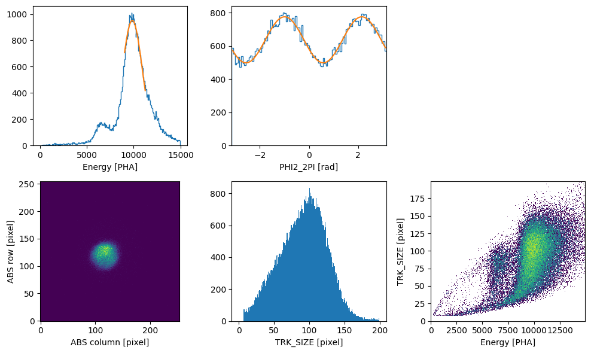
图注：Results of a measurement with a 100\% polarized 8.7 keV collimated beam. For an incident polarization angle set to $-60^\circ$, the measured modulation factor is $21.8 \pm 0.6\%$, with a reconstructed angle of $-56.8 \pm 0.7^\circ$. The bottom panels, from left to right, show the track centroid map, the histogram of track size (number of pixel triggers per track), and a scatter plot of track energy versus size. The top panels show the charge spectrum of the tracks (left) and the modulation curve (right).
对应解读：对应“建议重点查看的图表”第3项调制曲线，以及“关键图表逐图导读”图3和偏振拟合段落。
入选理由：这是论文偏振性能的核心实验证据，给出100%偏振8.7 keV束流下的调制曲线、调制因子21.8±0.6%、重建偏振角与入射角的一致性，同时包含能谱、径迹尺寸和能量-尺寸诊断，比单纯结构或装置照片更直接支撑偏振仪性能结论。
来源与置信度：\(arxiv_source\)；high；\(arxiv_source\) / main.tex:figure[6]
Fig05
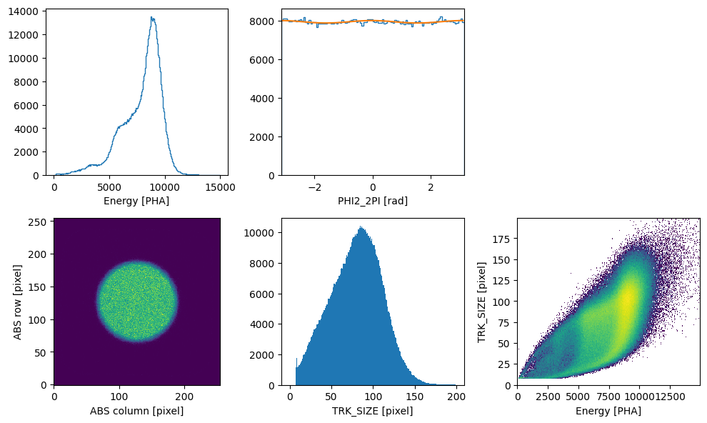
图注：Results of a measurement with an unpolarized 8.05 keV flat field, demonstrating a spurious modulation of $0.8\pm0.2\%$ in the central active pixel area. The bottom panels, from left to right, show the track centroid map within a 60-pixel radius, the histogram of track size (number of pixel triggers per track), and a scatter plot of track energy versus size. The top panels show the charge spectrum of the tracks (left) and the modulation curve (right).
对应解读：对应“建议重点查看的图表”第3项未偏振样本残余调制、第8项系统误差诊断表，以及“模型拟合”中未偏振残余调制和相位偏置诊断。
入选理由：未偏振8.05 keV平场测量给出0.8±0.2%的伪调制，是判断探测器几何、重建算法和系统误差下限的关键图；它还能与Fig06的偏振调制形成对照，帮助读者区分真实偏振信号与仪器残余调制。
来源与置信度：\(arxiv_source\)；high；\(arxiv_source\) / main.tex:figure[5]
Fig04
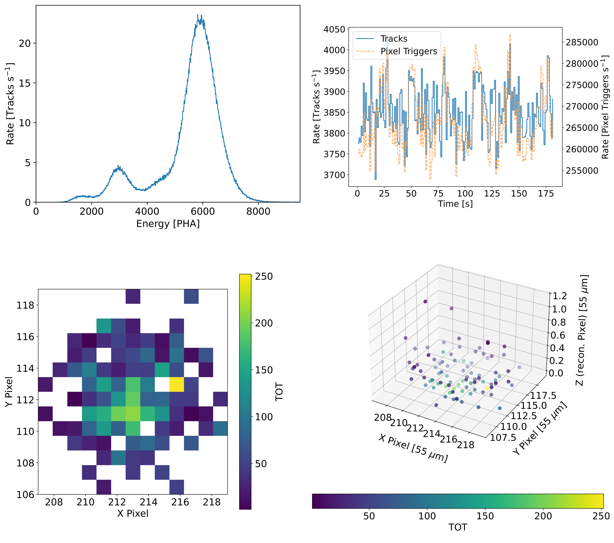
图注：Figure demonstrating the spectroscopic and timing performance of the detector. The active pixel region was illuminated with a $^{55}$Fe radionuclide. \(\ref{fig:55Fe-spectrum}\) shows the pixel-averaged charge spectrum; there is the 5.89 keV fluorescence line and 2.7 keV escape peak of Ar. \(\ref{fig:55Fe-lcurve}\) The light curve (1 s bin size) recorded over 3 minutes of data acquisition measured a source count rate of $\sim$3800 counts s$^{-1}$. \(\ref{fig:55Fe-trk2d}\) is the 2D projection of a sample track and \(\ref{fig:55Fe-trk3d}\) is the 3D reconstructed track. The x and y pixels have a resolution of 55 $\mu$m, the pixel pitch of Timpix3, while the z is reconstructed using a 1.5625 ns clock and the drift velocity of $\sim$7 $\mu$m ns$^{-1}$, achieving an equivalent position resolution of $\sim$11 $\mu$m in z.
对应解读：对应“建议重点查看的图表”第2项单事件径迹图、第5项能量响应或能谱标定图、第6项计时/事件率性能图，以及“关键图表逐图导读”图2、图5、图6。
入选理由：这张图同时展示55Fe能谱、Ar逃逸峰、3分钟光变曲线、样例二维径迹和三维重建径迹，是连接能谱能力、计时能力和Timepix3三维径迹重建的综合证据；特别适合支撑日报中关于z坐标由时间戳和漂移速度恢复的解读。
来源与置信度：\(arxiv_source\)；high；\(arxiv_source\) / main.tex:figure[4]
Fig01
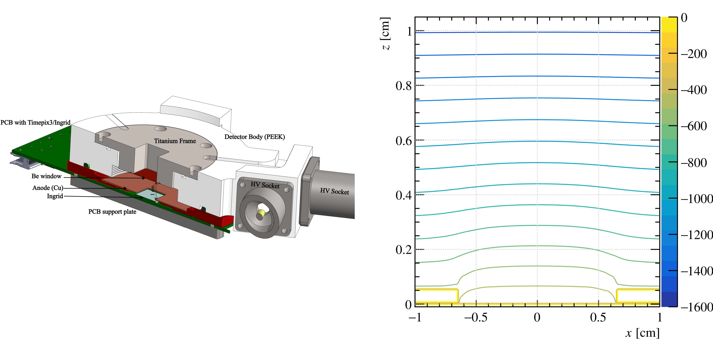
图注：Left: Cross-section CAD view of the detector. Right: Equipotential lines in the 1 cm drift gap (viewed on the plane of cross section shown in CAD) when voltages of --1580, --580 and --430 V are applied to the Window (z=1 cm), Anode (z=0.009 cm) and Grid (z=0, -0.7$<$x$<$0.7 cm), respectively.
对应解读：对应“建议重点查看的图表”第1项样机结构示意图，以及“关键图表逐图导读”图1。
入选理由：图中明确给出探测器剖面CAD、1 cm漂移间隙、电极位置和等势线，是理解气体转换区、漂移场、InGrid/Timepix3读出平面几何关系的基础；这些几何关系直接决定三维重建公式和漂移坐标定义是否成立。
来源与置信度：\(arxiv_source\)；high；\(arxiv_source\) / main.tex:figure[1]
Fig02
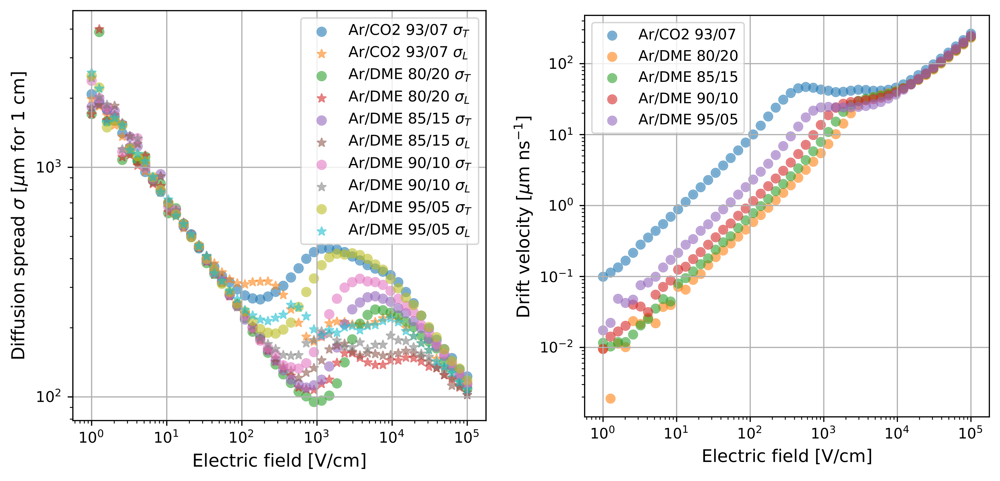
图注：(a) Electron transverse ($\mathrm{\sigma_T}$) and longitudinal ($\mathrm{\sigma_L}$) diffusion spread in $\mu$m after 1 cm drift. (b) Electron drift velocity in cm ns$^{-1}$. The shown diffusion and drift parameters are for various Ar/CO$_2$ and Ar/DME mixtures at 1 atm and 20 $^\circ$C obtained from Garfield++/Magboltz simulations \(\cite{schindler2024garfield++, biagi1999monte}.\)
对应解读：对应“模型拟合”中漂移速度、扩散模型、时间同步和三维重建退化的讨论，也补充“关键图表逐图导读”图1至图2之间的物理基础。
入选理由：该图给出不同Ar混合气体的横向/纵向扩散和漂移速度模拟结果，是评估三维径迹重建空间分辨、低能径迹模糊和气体选择权衡的重要依据；虽然不是直接性能实测图，但能解释为什么时间信息和气体参数会影响偏振灵敏度。
来源与置信度：\(arxiv_source\)；high；\(arxiv_source\) / main.tex:figure[2]
强相关工作
这篇工作属于 \(\mathrm{IXPE}\) 之后的下一代光电 X 射线偏振仪研发脉络。直接相关的同类工作包括 \(\mathrm{IXPE}\) 气体像素探测器、\(\mathrm{XIPE}\) 和 \(\mathrm{eXTP}\) 等任务概念中的软 X 射线偏振仪，以及使用微结构气体探测器和像素芯片进行三维径迹重建的仪器论文。检索关键词可用“IXPE Gas Pixel Detector photoelectric polarimeter”、“Timepix3 InGrid X-ray polarimetry”、“gas pixel detector modulation factor”、“photoelectron track reconstruction X-ray polarimeter”。
基础理论方面，应回到光电效应偏振角分布、Stokes 参数事件级估计、\(\mathrm{MDP}\) 统计定义和气体探测器扩散/倍增物理。相反或张力观点主要不在于某个理论模型反对它，而在于仪器路线取舍：气体光电偏振仪在低—中能段有成像优势，但高能效率、复杂三维标定、长期稳定性和高通量数据处理是挑战；康普顿偏振仪在更高能段更自然，但成像和低能性能不同。检索关键词可用“minimum detectable polarization X-ray polarimetry systematic modulation”、“photoelectric versus Compton X-ray polarimeter”、“micro-pattern gas detector space qualification”。
同一事件 / 同类源线索：
- https://arxiv.org/abs/2608.00273
- https://arxiv.org/pdf/2608.00273
- https://www.nasa.gov/mission/ixpe/
- https://ixpe.msfc.nasa.gov/
相似工作：
基础理论 / 方法工作：
- https://ui.adsabs.harvard.edu/abs/2016SPIE.9905E..1HO/abstract
- https://ui.adsabs.harvard.edu/abs/2018A%26A...620A..50S/abstract
- https://ui.adsabs.harvard.edu/abs/1993NIMPA.332..521C/abstract
相反观点 / 张力线索：
（未提供）
10. Abnormal Nitrogen Abundance in the X-ray Spectrum of Quasi-periodically Erupting Source AT2019wzc
- 来源：arXiv / astro-ph.HE
- 链接：https://arxiv.org/abs/2608.01931v1
- 作者：Tao Wu, Xinwen Shu, Luming Sun, Ning Jiang, Jiazheng Zhu, Wenjie Zhang
- 评分：novelty 8/10，importance 7/10，relevance 8/10，final 8.65/10
- 推荐理由：XMM高分辨X射线谱中发现QPE源AT2019wzc的异常氮丰度吸收线，为TDE起源提供观测证据，属于有价值的高能瞬变/吸积物理结果。
中文题目：准周期爆发源 AT2019wzc 的 X 射线谱中异常氮丰度
做了什么：这篇文章用 XMM-Newton 的高分辨率 X 射线光栅谱研究准周期爆发源 AT2019wzc，核心发现是在软 X 射线谱中探测到一条窄的、蓝移的 N VI 吸收线，而同等电离态下的碳、氧吸收线很弱或看不到。作者用光电离吸收模型解释这些谱线，得到电离参数约为 \(\log \xi \sim 0.3\)，柱密度约为 \(N_{\rm H}\sim 10^{20}\,{\rm cm^{-2}}\)，并要求氮丰度达到太阳值的 \(11.6_{-7.8}^{+19.6}\) 倍。这个化学丰度异常被解释为潮汐瓦解事件中经过 CNO 循环加工的恒星物质证据，从而支持 AT2019wzc 的 TDE 起源，并把 QPE 与 TDE 残骸盘或流体碰撞联系起来。
为什么重要：QPE 的物理起源仍未定论：可能是极端质量比天体反复穿盘、吸积盘不稳定、白矮星剥离，或 TDE 后残骸吸积的特殊阶段。AT2019wzc 同时具有缓慢演化的光学暂现源和后期软 X 射线准周期爆发，因此是检验“QPE 是否可由 TDE 触发”的关键对象。氮增强不是简单的光变形态证据，而是化学组成证据；如果成立，它把宿主核区暂现、被瓦解恒星的核加工历史、以及 X 射线吸收气体的起源连到了一起。
理论 / 观测 / 仪器方法价值：对观测而言，本文展示了高分辨率软 X 射线谱在 QPE/TDE 诊断中的价值：不只看爆发周期和能谱温度，还能用窄吸收线约束气体速度、电离态、柱密度和丰度。对理论而言，异常 \({\rm N/C}\) 或 \({\rm N/O}\) 比是判别被瓦解星是否为后主序星、是否暴露 CNO 加工层的重要线索。对方法而言，文章强调了必须同时拟合非太阳丰度、光电离平衡和仪器响应，否则单条谱线很容易被误判为普通吸收、发射残差或统计涨落。
为什么应该关注：如果你关心 QPE 的起源，这篇文章值得看，因为它给出的不是又一个周期测量，而是一个可能能区分模型的成分诊断。若 QPE 只是一般盘不稳定，未必自然预言强氮增强；若它是 TDE 后残骸流自碰撞或再吸积环境中的现象，氮富集气体就更容易理解。即便最终这条线的显著性或丰度误差需要更多数据确认，本文也提出了一个清晰的观测路线：用未来 XRISM、Athena 或更深的 XMM-Newton 光栅谱去系统寻找 QPE 源中的化学指纹。
展开详细解读：文章讲解、背景、理论、重点章节、图表与相关工作
文章详细讲解
科学问题：AT2019wzc 是一个缓慢演化的光学核区暂现源，随后表现出准周期软 X 射线爆发。QPE 的难点在于，光变本身有多种解释：盘热-黏滞不稳定、轨道天体反复扰动、极端质量比伴星穿盘、或者 TDE 后吸积流的周期性重构都可以产生某种重复软 X 射线增强。因此，仅靠爆发间隔、持续时间和黑体温度，很难把 AT2019wzc 放进唯一物理图像。本文瞄准的问题是：能否在高分辨率 X 射线谱中找到被瓦解恒星物质的化学证据，特别是 CNO 循环导致的氮增强。
作者怎么做：作者分析 XMM-Newton 获取的高分辨率 X 射线谱，重点检查软 X 射线波段中来自类氦离子的吸收线。他们报告了一条窄的、相对静止系蓝移的 N VI 吸收线，并比较了同一电离条件下本应出现的碳和氧离子吸收。关键方法不是把单条残差直接解释为某个离子，而是用光电离吸收模型统一描述电离参数 \(\xi\)、氢柱密度 \(N_{\rm H}\)、速度位移、线宽和元素丰度。为了让 N VI 强而 C/O 弱，模型需要显著超太阳的氮丰度。
关键结果：拟合给出的吸收气体电离参数约为 \(\log \xi\sim 0.3\)，柱密度约为 \(N_{\rm H}\sim 10^{20}\,{\rm cm^{-2}}\)，属于低到中等电离、较薄的吸收层。最有物理含义的量是氮丰度，约为太阳丰度的 \(11.6_{-7.8}^{+19.6}\) 倍；误差很大，但中心值和下限都指向明显增强。作者据此认为，AT2019wzc 的吸收气体可能不是普通星际介质或宿主星系核区气体，而是 TDE 残骸流自碰撞驱动外流中的 CNO 加工物质。后主序星被瓦解时更容易暴露氮富集、碳氧耗尽的层，因此这与 TDE 起源相符。
局限和下一步：本文的主要限制在于高分辨率软 X 射线谱的光子数通常有限，单条窄线的统计显著性、连续谱建模和仪器校准残差都会影响丰度推断。氮丰度的误差区间很宽，说明数据已经给出方向性证据，但还不是精密丰度测量。下一步最重要的是在不同 QPE 相位、不同爆发周期和不同观测年份重复检验这条 N VI 线是否存在、速度是否稳定、等效宽度是否随电离连续谱变化。如果吸收来自 TDE 残骸外流，线强、电离参数和速度可能随光度演化；如果是无关前景或宿主吸收，它们应更稳定。
关键结果是怎么做出来的
本文最关键的证据链从样本选择开始：研究对象不是一组 QPE，而是单个有代表性的 AT2019wzc。它之所以值得单独深入，是因为它既有光学暂现源背景，又显示准周期软 X 射线爆发，已经被视为连接 TDE 与 QPE 的候选源。作者选择 XMM-Newton 的高分辨率 X 射线光栅数据，是因为 CCD 谱分辨率不足以可靠地区分 N VI、O VII、C VI 等软 X 射线窄线，也不足以测量小的速度位移。
事件数或样本量方面，文章的统计对象主要是谱通道中的光子计数，而不是大量天体样本。关键特征是一条位于 N VI 对应波段附近的窄吸收残差，并且相对源静止系呈蓝移。作者随后检查其他类似电离态元素的线：如果吸收气体具有太阳丰度，并且电离条件适合产生 N VI，那么碳和氧的相应吸收通常不应完全缺席。正是“有 N、缺 C/O”的组合，而非单独一条线的位置，构成了异常丰度判断的核心。
显著性和置信度的计算应理解为谱拟合中的模型比较问题：基准模型描述连续谱和常规吸收，加入光电离吸收组分后检验统计量改善；再让氮丰度自由变化，比较太阳丰度模型与氮增强模型对 N VI 线深和 C/O 非探测的同时解释能力。虽然摘要没有列出具体 \(\Delta C\) 或 \(\Delta \chi^2\)，但读者应在正文中寻找添加吸收组分前后的拟合统计量、参数置信区间、以及是否做了盲线搜索或多重试验修正。
支撑结论的图表通常包括：高分辨率谱和最佳拟合模型图、N VI 线附近的放大残差图、光电离模型的参数置信区间图、以及不同丰度假设下对 C/N/O 线强的预测对比。最应关注的是氮线中心能量或波长是否与合理速度一致，线宽是否受仪器分辨率限制，连续谱微小改变是否会消除吸收残差，以及在氧线波段是否存在被仪器边缘或背景污染掩盖的可能。
系统误差方面，软 X 射线光栅谱容易受有效面积校准、背景处理、谱阶重叠、源光变导致的时均谱混合、以及宿主吸收模型影响。稳健性检验应包括改变连续谱形式、改变吸收气体湍动速度或覆盖因子、分别拟合不同观测段或 QPE 相位、以及把氮丰度固定为太阳值时检查 C/O 残差是否变差。本文的结论目前更像“强烈提示 TDE 化学指纹”，而非“已经唯一证明起源”。
展开背景、理论、公式、模型、章节和图表导读
背景知识
QPE 是一种近年才系统确认的核区软 X 射线暂现现象，典型表现为持续数十分钟到数小时的软 X 射线爆发，以数小时到约一天量级的间隔重复出现。它们的能谱通常很软，常可用热成分近似描述，宿主多为低质量星系核或低质量超大质量黑洞环境。因为时标接近内盘动力学、热时标或紧致伴星轨道时标，QPE 被视为研究低质量超大质量黑洞附近强引力吸积的少数直接探针。
AT2019wzc 的特殊性在于，它不是一个孤立发现的 X 射线周期源，而是与一个缓慢演化的光学暂现源相关。核区光学/紫外暂现常被解释为 TDE，即恒星进入超大质量黑洞潮汐半径内被撕裂，部分物质回落并形成吸积流。若 AT2019wzc 的光学事件确为 TDE，而后期又出现 QPE，那么它自然成为检验 TDE 是否能触发或孕育 QPE 的关键样本。
历史上，TDE 的化学诊断并不新。被瓦解恒星若经历 CNO 循环，核加工会把碳、氧转化为氮，使 \({\rm N/C}\) 和 \({\rm N/O}\) 比值升高。尤其是较演化恒星或剥离到较深层的恒星，氮增强更明显。紫外谱中的强 N III、N V 相对于 C III、C IV 的异常已经被用于讨论某些 TDE 的恒星类型。本文把这种思路移到软 X 射线吸收谱：寻找 N VI 相对 C/O 的增强。
为什么现在值得重看？一方面，QPE 样本仍小，每个源的多波段信息都很珍贵；另一方面，XMM-Newton 的 RGS 仍是软 X 射线高分辨率谱的主力，能在低红移核区暂现源中分辨窄吸收特征。随着 eROSITA、Einstein Probe、LSST 等巡天增加核区暂现源和 QPE 候选体，建立一套“光变加化学”的判别框架会非常有用。
该领域常见误区有三个。第一，把准周期性直接等同于轨道周期；事实上吸积盘热不稳定、辐射压循环和流体碰撞也能产生准周期行为。第二，把强氮线简单理解为“氮多”；线强还受电离参数、柱密度、速度展宽、覆盖因子和连续谱形状影响。第三，把单个谱线识别当作铁证；在软 X 射线低计数谱中，必须同时考虑相邻元素线的缺失、仪器响应和多重搜索效应。
基础理论 / 方法脉络
从物理图像看，TDE 发生在恒星被黑洞潮汐力撕裂时。残骸流中一部分物质被束缚并回落，发生自碰撞、圆化和吸积；另一部分可能以外流形式离开系统。如果被瓦解恒星内部曾经历 CNO 循环，那么氮相对碳、氧会增强。吸收谱看到的不是恒星本体，而是位于 X 射线连续谱源和观测者之间、具有特定电离态和速度的气体。
光电离吸收的关键量是电离参数 \(\xi\)，通常定义为源的电离光度除以气体密度和距离平方。低 \(\xi\) 气体保留较低电离态，高 \(\xi\) 气体产生更高电离态。本文得到 \(\log \xi\sim 0.3\)，意味着气体并非极高电离的热风，而是能保留 N VI 这类类氦离子的温和电离吸收层。柱密度 \(N_{\rm H}\sim 10^{20}\,{\rm cm^{-2}}\) 也说明吸收较薄，主要表现为窄线而非强连续吸收边。
窄吸收线的观测量包括中心波长或能量、等效宽度、线宽和速度位移。蓝移表示吸收气体总体向观测者运动，通常可解释为外流。若线宽小于或接近仪器分辨率，真实湍动速度只能给出上限。对丰度判断而言，最重要的是在同一 \(\xi\) 和 \(N_{\rm H}\) 下，不同元素离子柱密度应与元素丰度和离子分数相关；若太阳丰度模型预言氧线应明显出现但实际没有，就会推动模型走向氮增强或氧缺乏。
本文的模型假设包括：吸收气体可近似处于光电离平衡；连续谱可以被某种平滑热谱或经验谱描述；吸收层可以用单区或少数组分的 \(\xi\)、\(N_{\rm H}\)、速度和丰度刻画。这些假设在数据有限时是必要简化，但也带来退化：改变连续谱温度、软 X 射线吸收、湍动速度或覆盖因子，都可能改变线深；非平衡电离或多相气体也可能让单区 \(\xi\) 的物理解释变得模糊。
从数据分析逻辑看，高分辨率谱拟合本质上是把源模型经仪器响应卷积后与计数谱比较。窄线是否可信，不只取决于线中心有几个低计数通道，还取决于仪器有效面积是否平滑、背景是否小、相邻谱阶是否处理正确、以及搜索范围内出现同等残差的概率。本文的价值正是把单线识别提升为元素丰度约束：N VI 与 C/O 非探测的组合比单一残差更有诊断力。
公式与推导
第一步是 TDE 的潮汐条件。恒星半径 \(R_*\)、质量 \(M_*\)，黑洞质量 \(M_{\rm BH}\) 时，潮汐半径可写为
当近心距 \(R_{\rm p}\lesssim R_{\rm t}\) 时，恒星物质获得能量展宽并形成束缚与非束缚残骸。这个式子说明为什么核区暂现源可携带被撕裂恒星内部成分信息。
第二步是回落率的基本标度。若残骸质量按能量近似均匀分布，晚期束缚物质回落率满足
这里 \(t\) 是相对峰值或最早回落时刻的时间。AT2019wzc 的缓慢光学演化若来自 TDE，残骸回落和圆化过程可为后续 X 射线源和吸收外流提供物质来源。
第三步是光电离参数。吸收气体受到电离光度 \(L_{\rm ion}\) 照射，密度为 \(n\)，距离为 \(r\)，则
\(\xi\) 的单位通常为 \({\rm erg\,cm\,s^{-1}}\)。本文的 \(\log \xi\sim 0.3\) 指向适合产生 N VI 的温和电离状态。
第四步是柱密度与离子柱密度的关系。对元素 \(Z\) 的离子态 \(i\)，离子柱密度可近似写成
其中 \(A_Z\) 是相对氢的元素丰度，\(f_{Z,i}(\xi)\) 是该离子态分数。若 \(N_{\rm H}\) 和 \(\xi\) 已由整体谱限制，而 N VI 线强明显高于太阳丰度预测，就需要提高 \(A_{\rm N}\) 或改变多相结构。
第五步是窄线光学深度。线中心光学深度可写为
其中 \(e\) 是电子电荷，\(m_e\) 是电子质量，\(c\) 是光速，\(f_{\rm osc}\) 是振子强度，\(\lambda_0\) 是静止波长，\(b\) 是速度展宽参数。这个式子给出线深如何随离子柱密度和湍动速度变化。
第六步是弱线近似下的等效宽度。若 \( au_0\ll 1\)，等效宽度满足
因此在未饱和极限下，N VI 的 \(W_\lambda\) 近似线性追踪 \(N_{\rm N,VI}\)，进而追踪 \(A_{\rm N}\)。若线已饱和，丰度约束会变得更依赖 \(b\) 和覆盖因子。
第七步是速度位移。观测波长 \(\lambda_{\rm obs}\)、源红移 \(z\)、实验室波长 \(\lambda_0\) 给出近似外流速度
若结果为负值，表示蓝移，即气体朝向观测者运动。本文报告的蓝移 N VI 吸收线支持其可能来自 TDE 残骸自碰撞诱导的外流。
第八步是仪器响应下的计数模型。观测通道 \(j\) 的模型计数为
其中 \(t_{\rm exp}\) 是曝光时间，\(R_j(E)\) 是能量到通道的响应，\(A_{\rm eff}(E)\) 是有效面积，\(F_E\) 是含连续谱和吸收线的源通量模型，\(B_j\) 是背景计数。窄线显著性必须在这个卷积空间中判断，而不是只看未折叠模型。
第九步是低计数谱常用的泊松似然或 Cash 统计量：
其中 \(n_j\) 是观测计数。比较太阳丰度模型和氮增强模型时，\(\Delta C\) 可作为拟合改善的诊断，但若线位置是在宽能段中搜索得到，还需要考虑试验因子。
第十步是丰度比诊断。若同一吸收区产生 N VI 与 O VII，弱线近似下可构造
在 \(\xi\) 已限制时，\(f_{\rm N,VI}\) 与 \(f_{\rm O,VII}\) 不再完全自由；因此强 N 线和弱 O 线共同指向高 \(A_{\rm N}/A_{\rm O}\)，这正是本文将吸收线解释为异常氮丰度的物理基础。
模型拟合 / 应用方法
本文的拟合核心是高分辨率 X 射线谱模型。基准部分需要描述软 X 射线连续谱，可能包括热成分、宿主或银河吸收，以及仪器背景。然后加入光电离吸收组分，其自由参数通常包括 \(N_{\rm H}\)、\(\xi\)、速度位移、湍动速度或线宽，以及元素丰度。由于谱线窄且光子数有限，拟合统计更适合采用泊松似然或 Cash 类统计，而不是简单依赖高斯近似的 \(\chi^2\)。
参数估计中最关键的是氮丰度与其他吸收参数的退化。增加 \(N_{\rm H}\) 会增强所有元素线；提高 \(A_{\rm N}\) 主要增强氮线；改变 \(\xi\) 会改变 N VI、O VII、C VI 等离子分数；改变湍动速度会影响线饱和程度和等效宽度。因此，只有当模型在增强 N VI 的同时不产生过强 C/O 线，氮增强解释才有说服力。摘要给出的 \(11.6_{-7.8}^{+19.6}\) 倍太阳丰度说明后验或置信区间很宽，读者应关注其是否排除太阳丰度、排除到什么置信水平。
残差诊断非常重要。读者应看未加入吸收线时 N VI 波段是否出现局域负残差；加入太阳丰度吸收后，氧或碳波段是否出现模型过吸收；加入非太阳氮丰度后，全谱残差是否整体改善而非只修补单个通道。还要检查线中心是否落在仪器有效面积快速变化处，是否与已知校准特征、背景线或谱阶重叠相关。
系统误差可来自连续谱不确定性、吸收模型网格、原子数据、丰度表选择和时间变源处理。QPE 源在曝光期间可能处于爆发和静息混合状态，若把强变源做时间平均，所得 \(\xi\) 可能只是有效参数。更细的做法是按 QPE 相位切分谱，但这会牺牲光子数。若未来数据允许，比较爆发期与静息期的线强变化将是区分近源外流和远处宿主吸收的关键。
实际应用上，这类拟合可以扩展到其他 QPE/TDE 候选体：先用低分辨率谱和光变筛选软 X 射线亮源，再用光栅谱搜索 N、C、O、Ne 等元素线，最后用统一光电离模型比较丰度比。模型失败的情形也应明确：若未来更深谱发现同样强的氧线，氮增强会减弱；若线不随源红移而是固定在观测者框架，可能是本地或仪器效应；若不同观测中线位大幅漂移且无物理一致性，则单区外流解释也会受挑战。
重点章节 / 结果段落怎么读
数据/样本部分应先读清楚 AT2019wzc 的观测历史：光学暂现发现时间、XMM-Newton 观测日期、是否覆盖 QPE 爆发期、RGS 或等价高分辨率谱的有效曝光和净计数。这里决定了线搜索的统计基础，也决定了是否存在由时间平均引入的谱混合。
谱提取和连续谱建模部分要重点看。软 X 射线谱线的可信度强烈依赖连续谱模型，如果连续谱弯曲没有处理好，局部残差可能被误认为吸收线。读者应检查作者是否比较了不同连续谱形式、是否固定或自由银河吸收、是否处理宿主吸收，以及不同选择对 N VI 线的影响。
吸收线识别和光电离拟合部分是全文核心。应关注线中心、蓝移速度、线宽、等效宽度和统计改善，并看作者如何排除 C/O 线。尤其要读清楚 \(\log \xi\sim 0.3\)、\(N_{\rm H}\sim 10^{20}\,{\rm cm^{-2}}\) 和氮丰度约 \(11.6\) 倍太阳值是由哪些谱段共同约束的，而不是只由单个通道决定。
结果讨论部分应看作者如何把氮增强联系到 TDE。合理链条应是：CNO 加工产生高 \({\rm N/C}\) 与 \({\rm N/O}\)，后主序或深层剥离恒星更容易提供这种物质，TDE 残骸自碰撞或圆化产生外流，外流位于软 X 射线源前方形成蓝移吸收。读者也应检查作者是否讨论普通 AGN 暖吸收、宿主星际介质或银河前景的替代解释。
稳健性检验或附录若有，应优先读。关键包括不同仪器臂或不同观测段是否独立看到同一线、改变丰度表或原子数据库是否影响结果、线搜索是否有试验因子修正、以及太阳丰度模型被排除的置信水平。
建议重点查看的图表
-
全波段高分辨率 X 射线谱与最佳拟合模型：看连续谱是否平滑、背景是否低、模型是否在 N、C、O 波段同时合理。
-
N VI 吸收线局部放大图：看横轴是能量还是波长，线中心相对源静止系 N VI 的偏移量是否对应蓝移，线宽是否被仪器分辨率限制。
-
C/O 波段的非探测或弱线图：这是丰度异常的关键反证。若氧线位置数据噪声大或有效面积异常，氮增强结论会变弱。
-
光电离模型参数置信区间图：重点看 \(N_{\rm H}\) 与 \(\xi\)、\(A_{\rm N}\) 与 \(N_{\rm H}\)、\(A_{\rm N}\) 与 \(\xi\) 的退化方向，太阳丰度点是否落在允许区域外。
-
太阳丰度模型与氮增强模型的残差对比：看改善是否集中在 N VI 一处，还是也减少了其他波段的系统残差。
-
若有时间分段或 QPE 相位分段谱：看吸收线是否随爆发相位变化。近源外流通常可能随光度或电离状态响应，远处吸收则更稳定。
-
表格中的最佳拟合参数与误差：重点核对丰度误差是否为单参数区间还是多参数联合区间，以及显著性是否考虑了自由线搜索的试验因子。
关键图表逐图导读
图 1：建议把它当作“数据质量和连续谱可信度”图来读。横轴通常是波长或能量，纵轴是计数率、通量或折叠后的计数谱；数据点为 RGS 谱，模型线为连续谱加吸收模型。主要结论应是 AT2019wzc 的软 X 射线谱有足够信噪比在 N VI 波段寻找窄线。读图陷阱是不要只看平滑模型是否漂亮，还要看背景、误差条和有效面积变化位置。
图 2：若论文给出 N VI 附近放大谱，这是最关键图。横轴应覆盖 N VI 静止波长经源红移校正后的邻域，纵轴显示数据相对模型的下凹。模型线可能包括无吸收模型、太阳丰度吸收模型和氮增强模型。读者要检查吸收中心是否与 N VI 的蓝移位置一致，以及负残差是否跨越多个分辨元；单个通道的低计数不应被过度解读。
图 3：C、O 线区对比图用于支撑“不是普通太阳丰度暖吸收”。横轴应覆盖 C VI、O VII 或相近离子的预期位置，模型线显示若采用太阳丰度会产生的吸收强度。主要结论应是观测没有支持相应强 C/O 线，因此需要提高 \({\rm N/C}\) 或 \({\rm N/O}\)。陷阱是氧边附近的校准和有效面积结构可能复杂，必须看残差是否系统性偏离。
图 4：参数置信区间或二维轮廓图用于判断丰度结论强弱。坐标轴可能是 \(\log \xi\) 与 \(N_{\rm H}\)、\(A_{\rm N}\) 与 \(N_{\rm H}\)，轮廓代表 \(1\sigma\)、\(2\sigma\) 或 \(3\sigma\) 区域。读者要看太阳丰度 \(A_{\rm N}=1\) 是否在轮廓内，以及最佳值 \(A_{\rm N}\approx 11.6\) 是否受参数边界影响。
图 5：如果有不同模型的残差或拟合统计表，应把它视为模型比较图。横轴仍为能量或波长，纵轴为残差、\(\Delta C\) 贡献或数据/模型比。主要看加入氮增强吸收后残差是否局部和全局都改善。陷阱是多加自由参数总会改善拟合，必须结合统计惩罚、试验因子和物理一致性。
图 6：若论文讨论 TDE 外流示意或物理解释图，应把它作为“解释框架”而非直接证据。图中可能包括黑洞、残骸流自碰撞、外流和视线吸收层。主要结论是蓝移氮富集气体可来自被瓦解恒星物质；陷阱是示意图不能替代速度、半径和质量流率的定量约束。
论文原图 / 可嵌入图片
Fig01
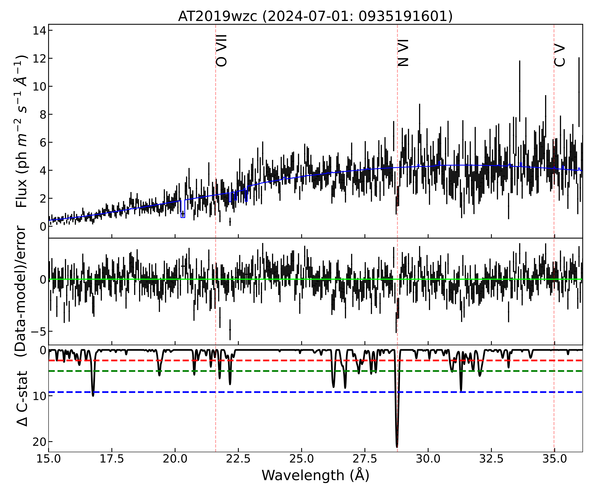
图注：{Absorption line search in the XMM2/RGS spectrum of AT2019wzc.} \(\textbf{Top panel:}\) RGS spectrum (black) obtained on 2024 July 1. The best-fitting continuum model is shown in blue. \(\textbf{Middle panel:}\) A significant deficit is visible at 28.77~\(\AA.\) \(\textbf{Bottom panel:}\) Results of the Gaussian line scan. The $y$-axis shows the improvement in $\Delta C$ upon adding a Gaussian absorption line with a fixed width of 0.02~\(\AA.\) Red vertical dashed lines mark the rest-frame wavelengths of C {\(\sc\) v} (34.9728~\AA), N {\(\sc\) vi} (28.7875~\AA), and O {\(\sc\) vii} (21.6019~\AA). The N {\(\sc\) vi} absorption line is prominent, while no significant features are detected at the positions of C {\(\sc\) v} and O {\(\sc\) vii}.
对应解读：对应“建议重点查看的图表”第1、2、3项，以及“关键图表逐图导读”中图1、图2、图3的核心内容：全波段RGS谱、N VI局部吸收线、C/O非探测和Gaussian线搜索。
入选理由：这是最直接支撑论文主结论的诊断图：上 panel 给出XMM2/RGS谱和连续谱模型，用于判断数据质量与连续谱可信度；中 panel 显示28.77 Å处的显著吸收缺口；下 panel 的Gaussian line scan以ΔC量化吸收线搜索显著性，并同时标出C V、N VI、O VII静止波长，清楚展示N VI显著而C/O不显著。它同时覆盖日报强调的N线检测、C/O反证和残差/显著性诊断，科学价值最高。
来源与置信度：\(arxiv_source\)；high；\(arxiv_source\) / main.tex:figure[1]
Fig02
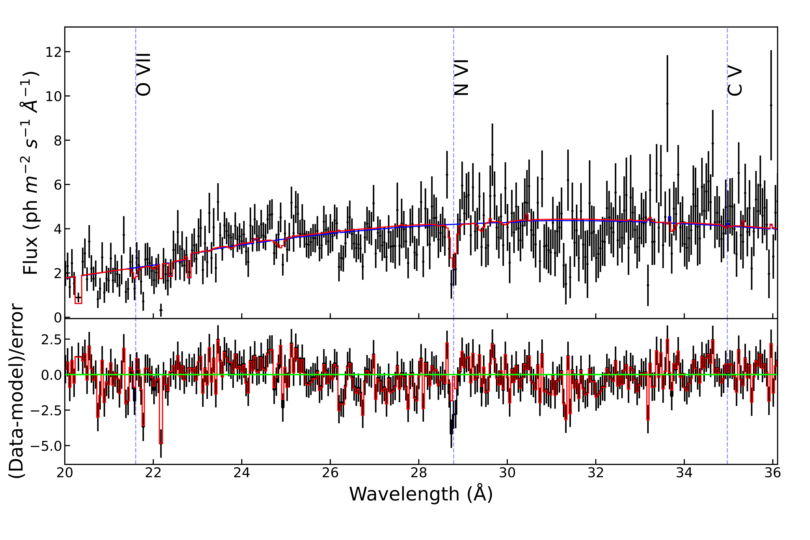
图注：{Photoionization modeling of the absorber in the XMM2/RGS spectrum.} \(\textbf{Top panel:}\) The best-fitting continuum-only model is shown in blue, while the photoionization model ({\(\it\) pion}) with enhanced nitrogen abundance is shown in red. \(\textbf{Bottom panel:}\) The significant residuals at 28.77~\(\AA\)~are well described by the absorber with an N enhancement. The positions of the most relevant transitions (C {\(\sc\) v}, N {\(\sc\) vi}, and O {\(\sc\) vii}) are indicated by vertical dashed lines.
对应解读：对应“建议重点查看的图表”第1、5项，以及“关键图表逐图导读”中图2、图5和“模型拟合”段落：连续谱模型与氮增强photoionization模型的对比、N VI残差改善及相关离子位置。
入选理由：这张图直接展示光电离吸收模型对谱线残差的解释能力：蓝色连续谱模型与红色氮增强pion模型对比，可检验加入氮增强吸收后28.77 Å附近负残差是否被消除，同时标出C V、N VI、O VII等关键跃迁位置。相比未知内容的Fig03/Fig04，它与日报中模型拟合、残差诊断和氮增强物理解释的联系明确，是嵌入详细解读时不可缺少的模型验证图。
来源与置信度：\(arxiv_source\)；high；\(arxiv_source\) / main.tex:figure[2]
强相关工作
这篇工作与 QPE 发现和解释文献直接相关。GSN 069、RX J1301.9+2747、eRO-QPE1、eRO-QPE2 等源奠定了 QPE 作为一类核区软 X 射线重复爆发的观测基础；理论上则存在吸积盘不稳定、紧致天体反复穿盘、白矮星或恒星剥离、以及 TDE 后残骸流圆化等多种模型。检索关键词可用 “quasi-periodic eruptions X-ray GSN 069 eRO-QPE tidal disruption event”。
它也与 TDE 化学丰度诊断文献相连。若某些 TDE 显示强氮线、弱碳氧线，通常会被解释为 CNO 循环加工物质，可能来自较大质量恒星、演化恒星或深层剥离。本文的新意是把这种思路用于 QPE 候选源的高分辨率 X 射线吸收谱。检索关键词可用 “tidal disruption event nitrogen abundance CNO processed debris N-rich TDE X-ray absorption”。
需要保持的张力是：氮增强并非 TDE 的唯一可能解释，普通 AGN 暖吸收、多相核区气体、非平衡电离、或仪器/统计残差都可能在低信噪比情况下制造类似线索。相反，如果未来多个 QPE 源都显示氮富集吸收或发射，TDE/QPE 连接会显著增强；如果更深观测发现 C/O 线按太阳丰度出现，本文解释则需要修正。
同一事件 / 同类源线索：
相似工作：
基础理论 / 方法工作：
相反观点 / 张力线索：
（未提供）
11. The PSR J0435+3233 Triple System
- 来源：arXiv / astro-ph.HE
- 链接：https://arxiv.org/abs/2608.01227v1
- 作者：Z. L. Yang, J. L. Han, Y. Yan, Bin Liu, Y. L. Guo, M. K. Yang, Bo Wang, W. M. Gu
- 评分：novelty 8/10，importance 7/10，relevance 8/10，final 8.65/10
- 推荐理由：识别并精细拟合一个伽马射线脉冲星层级三星系统，结合长期伽马/射电计时和Gaia约束，具有较高新颖性和脉冲星天体物理价值。
中文题目：PSR J0435+3233 三体系统：一颗伽马射线脉冲星、近距氦白矮星和远距类太阳亚巨星
做了什么：这篇论文把 PSR J0435+3233 确认为一个等级式三体系统：内层是伽马射线脉冲星和氦白矮星组成的近圆轨道双星，轨道周期约 \(8\) 天；外层是一颗距离地球约 \(2.1\) kpc、质量接近太阳的 G 型亚巨星，外轨道周期约 \(26900\) 天、偏心率约 \(0.5983\)。作者联合使用 \(16.7\) 年伽马射线计时、\(4.6\) 年射电计时、内轨道参数变化、Shapiro 延迟、Gaia 天体测量和外伴星质量约束，解出两类可能的三维几何：内外轨道几乎垂直，或互倾角约 \(55^\circ\)。它重要之处在于，这是一个可用多波段数据精细测量的中子星三体系统，可直接检验原初三体演化、质量转移、轨道倾角演化和未来形成“中子星加双白矮星”系统的路径。
为什么重要：中子星三体系统很少见，能被脉冲星计时精确约束的更少。PSR J0435+3233 把几个平时分散的观测量连在了一起：伽马射线脉冲到达时刻给出长期自转周期变化，射电计时给出更高精度的短期轨道信息，Gaia 给出光学伴星的天体测量，光学/红外数据则限定外层恒星的性质。这样的系统不是单纯“又发现一个伴星”，而是提供了一个三体动力学和双星演化同时可检验的实验室。
理论 / 观测 / 仪器方法价值：对理论而言，本文给出一个原初三体经历超新星、内层质量转移和外层恒星演化后仍保持束缚的实例，可约束三体稳定性、Kozai-Lidov 型动力学以及再循环脉冲星形成路径。对观测而言，它展示了伽马射线计时、射电计时、光学测光光谱和 Gaia 天体测量的联合反演能力。对方法而言，论文的价值在于把外轨道引起的视向加速度、内轨道参数长期变化、Shapiro 延迟和伴星质量先验放进同一个拟合框架，而不是分别给出互不相干的解释。
为什么应该关注：如果你关心毫秒脉冲星质量、白矮星伴星形成、三体系统在超新星冲击后的存活概率，或用脉冲星计时做精密动力学，这篇都值得读。PSR J0435+3233 不是一个只有分类意义的发现；它的外轨道周期、人类观测基线和 Gaia 精度刚好处在可以开始分辨三维轨道、但仍存在几何退化的区间。因此未来十几年继续计时和 Gaia 后续数据发布很可能显著改变质量和互倾角解。
展开详细解读：文章讲解、背景、理论、重点章节、图表与相关工作
文章详细讲解
科学问题：论文要解决的是 PSR J0435+3233 到底是普通双星脉冲星，还是一个被外层恒星长期扰动的等级式三体系统。已知内层轨道周期约 \(8\) 天且偏心率极小，这本来符合一颗再循环脉冲星加低质量氦白矮星的标准图像。但长期伽马射线和射电计时中出现的自转周期变化、内轨道参数变化以及光学/红外位置上的一颗 G 型亚巨星，使得单一双星模型难以自洽。核心问题变成：这些现象是否能由同一个外层伴星的引力效应解释，并且能否反推出三维外轨道和三颗星的质量。
作者怎么做：他们首先基于光学/红外归档数据和 Gaia 天体测量确认候选外伴星的性质，认为它是一颗质量约太阳质量、距离约 \(2.1\) kpc 的 G 型亚巨星。然后把 \(16.7\) 年伽马射线脉冲信号和 \(4.6\) 年射电计时信号放在一起，拟合脉冲星自转周期随时间的变化。外层轨道会让内层双星质心产生视向加速度，从而改变观测到的脉冲周期；同时三体摄动还会改变内层轨道参数。论文进一步把 Shapiro 延迟和外伴星质量纳入约束，使质量函数、轨道倾角和三体几何不再完全自由。
关键结果：作者给出的外层轨道是一个长周期椭圆轨道，周期约 \(26900\) 天，也就是约 \(73.6\) 年，偏心率为 \(0.5983\)。由于当前观测基线仍小于一个完整外轨道周期，解并非唯一；他们找到两类可接受几何。一类是内外轨道几乎垂直，互倾角约 \(84^\circ\)，对应脉冲星质量 \(1.15^{+0.06}_{-0.04} M_\odot\)、内层白矮星质量 \(0.271^{+0.010}_{-0.006} M_\odot\)、外伴星质量 \(0.96(4) M_\odot\)。另一类是互倾角约 \(55^\circ\)，对应脉冲星质量 \(1.29^{+0.14}_{-0.11} M_\odot\)、白矮星质量 \(0.296^{+0.022}_{-0.018} M_\odot\)、外伴星质量 \(1.12^{+0.06}_{-0.05} M_\odot\)。这两个解都支持三体解释，但对后续动力学演化的含义不同。
局限和下一步：最大局限是外轨道周期太长，目前 \(16.7\) 年伽马射线计时只覆盖外轨道的一部分，导致外轨道倾角、升交点经度和质量之间存在几何退化。射电计时虽然精度高，但基线只有 \(4.6\) 年，仍不足以单独锁定完整外轨道。Gaia 对外伴星的天体测量很关键，但需要后续数据发布来改善自行、视差和可能的轨道加速度。下一步最有价值的是继续伽马射线和射电计时、获取外伴星光谱径向速度曲线、改进白矮星光学约束，并在三体动力学积分中测试两个互倾角解的长期稳定性和演化路径。
关键结果是怎么做出来的
本文最重要的证据链从样本选择开始：研究对象不是一个新瞬变，而是一个已知脉冲星 PSR J0435+3233。作者使用归档伽马射线数据提取长达 \(16.7\) 年的脉冲信号，同时使用 \(4.6\) 年射电计时数据约束更短时间尺度上的脉冲到达时刻和内层双星参数。光学/红外数据用于确认附近恒星的颜色、亮度和演化状态，Gaia 数据用于距离、自行和天体测量一致性检查。这个样本量意义上的“事件数”不是多个源，而是一个源上跨多波段、跨十余年的多类观测量集合。
统计上，核心不是简单显著性检测，而是联合动力学拟合。外伴星造成内层双星质心沿视线方向的加速度，表现为观测自转周期及其导数的长期变化；如果这个解释正确，同一套外轨道参数还应解释内层投影半长轴、近心点相关参数、轨道周期变化和 Shapiro 延迟约束。作者把伽马射线计时与射电计时的周期变化同时拟合，相当于要求不同波段看到同一个脉冲星动力学时钟，而不是各自给出独立经验趋势。
结果支撑主要来自几类图表：第一类应是脉冲周期或计时残差随时间的曲线，显示单纯自转减慢模型无法吸收长期弯曲，而三体外轨道模型可以；第二类是外轨道参数的后验或置信区间，显示 \(P_{\rm orb2}\sim26900\) 天和 \(e_2=0.5983\) 附近的偏好；第三类是质量与倾角的二维约束，展示两组互倾角解如何分别对应不同的三颗星质量；第四类是光学/红外颜色星等图或 SED 拟合，支持外伴星是 G 型亚巨星且质量接近 \(1 M_\odot\)。
稳健性方面，最需要关注的是不同数据集是否相互拉扯。如果只用伽马射线计时，外轨道周期和偏心率可能有较大自由度；加入射电计时后，短期参数变化应收紧解；加入 Gaia 和光学质量先验后，外伴星质量不能任意增大或减小。论文给出两类互倾角解，说明作者没有把几何退化硬压成单一结论。读者应特别检查两类解在计时残差、Shapiro 延迟和 Gaia 天体测量上的拟合质量是否真正相近。
系统误差主要来自四方面：伽马射线脉冲轮廓低信噪比可能影响相位连接；射电计时可能受色散量变化、星际介质和仪器时延影响；光学/红外伴星参数依赖距离、消光、金属丰度和恒星演化模型；Gaia 天体测量若未完全处理未建模轨道运动，可能把轨道加速度混入自行或视差。本文结论最强的部分是“需要外层伴星且系统是三体”，较弱但最有趣的部分是“两类三维互倾角解哪一个是真实几何”。
展开背景、理论、公式、模型、章节和图表导读
背景知识
PSR J0435+3233 属于再循环脉冲星候选系统：中子星在双星演化中从伴星吸积角动量，被加速到较短自转周期，之后伴星剥离成低质量氦白矮星。这样的脉冲星—白矮星双星常见特征是轨道偏心率很小、轨道周期从小时到几十天不等、白矮星质量与最终轨道周期存在演化关联。本文内层 \(P_{\rm orb1}=8\) 天、\(e=0.00016\) 的近圆轨道，正好落在这种经典图像中。
三体脉冲星系统之所以重要，是因为脉冲星提供了天然高精度时钟。普通光学三体系统往往需要多年径向速度和天体测量才能积累足够信息，而脉冲星计时可以把纳秒到微秒级的到达时刻变化转化为轨道动力学约束。著名例子包括毫秒脉冲星三体系统 PSR J0337+1715，它曾被用于强等效原理检验。PSR J0435+3233 的特别之处在于外伴星仍是类太阳亚巨星，而不是已经成为白矮星，因此它展示的是三体演化的一个不同阶段。
历史问题在于，三体系统演化非常依赖初始条件。原初三体经历中子星形成时的质量损失和超新星踢速后，很容易被打散；若幸存下来，后续内层质量转移、潮汐圆化、外层恒星演化和长期动力学摄动会共同塑造最终结构。一个中子星、一个氦白矮星和一颗 G 型亚巨星的组合说明系统不仅幸存，而且内层经历了相当平稳的质量转移。这对超新星踢速、三体稳定性和质量转移历史都有约束力。
为什么现在值得重新看？关键在于多波段基线终于够长。Fermi-LAT 提供十几年伽马射线脉冲数据，射电望远镜提供更高精度但较短基线的计时，Gaia 则把光学伴星的距离和运动测得足够好。任何单一数据集都可能给出多解或误判，但联合分析可以把“周期导数异常”“疑似光学伴星”“内轨道参数漂移”整合成一个动力学模型。
一个常见误区是把脉冲星周期导数直接解释为中子星本征自转减慢。对三体或宽双星系统，观测到的 \(\dot P\) 含有视向加速度项，可能显著污染磁偶极制动推断。另一个误区是把光学邻近恒星简单视作投影重合；在拥挤场和 kpc 距离下必须结合颜色、距离、自行、动力学质量和计时信号共同判断。还有一个误区是认为近圆内轨道排斥三体解释，实际上等级式三体中内层可由质量转移圆化，而外层仍保持较大偏心率。
基础理论 / 方法脉络
基础物理图像是等级式三体：内层两体，即脉冲星和氦白矮星，以周期 \(P_{\rm orb1}\) 近圆运动；外层第三星绕内层双星质心运动，周期 \(P_{\rm orb2}\) 远大于 \(P_{\rm orb1}\)。只要外层半长轴远大于内层半长轴，系统可先近似分解为两个 Kepler 轨道，再把三体摄动作为长期修正。本文正是在这个框架下解释内层轨道稳定但参数缓慢变化的现象。
脉冲星计时的关键是把脉冲到达时刻当作时钟读数。若脉冲星所在系统的质心沿视线方向运动，观测到的自转周期会发生 Doppler 改变；若质心有视向加速度，观测到的周期导数也会改变。外层伴星的椭圆轨道因此会在多年尺度上给出非线性的周期变化。对伽马射线脉冲星，单个光子少，但长期累积能提供很长时间基线；对射电脉冲星，单次到达时刻精度较高，但可用基线可能较短。
内层双星还提供几何和质量信息。投影半长轴 \(x=a_1\sin i/c\)、内轨道周期 \(P_{\rm orb1}\)、Shapiro 延迟形状等量都与脉冲星质量、白矮星质量和轨道倾角有关。若内层白矮星是低质量氦白矮星，其质量还可与轨道周期和光学亮度模型相互校验。本文把这些约束与外伴星质量估计结合起来，减少了单靠计时质量函数导致的 \(\sin i\) 退化。
外伴星的光学/红外识别依赖恒星物理和天体测量。颜色、星等、消光和距离可给出有效温度、半径、光度和质量范围；Gaia 的视差和自行可判断它是否与脉冲星系统在空间上相关。若外伴星确实是 G 型亚巨星，则它的质量约 \(1 M_\odot\)，这会强烈限制外轨道倾角和总质量。
本文最重要的退化来自三维轨道几何。视向加速度主要约束外轨道在视线方向上的投影，而天面方向的升交点、外轨道倾角和内外轨道互倾角需要 Gaia 或长期计时才能进一步分辨。两个互倾角解约 \(84^\circ\) 和 \(55^\circ\) 都能解释现有数据，说明当前基线还不能完全打破镜像或投影退化。系统误差方面，消光、Gaia 未建模轨道运动、射电色散变化和伽马射线相位模板都会影响最终参数。
公式与推导
第一步是把内层和外层看成等级式 Kepler 轨道。对任一两体子系统，Kepler 第三定律为
其中 \(a\) 是相对轨道半长轴，\(M\) 是该两体问题的总质量，\(G\) 是引力常数，\(P_{\rm orb}\) 是轨道周期。用于内层时 \(M=m_{\rm p}+m_{\rm WD}\)；用于外层时 \(M=m_{\rm p}+m_{\rm WD}+m_3\)。这一步把测得的周期与物理尺度连接起来。
第二步是内层脉冲星质量函数。计时测得投影半长轴 \(x_1=a_{\rm p}\sin i_1/c\)，因此
其中 \(m_{\rm p}\) 是脉冲星质量，\(m_{\rm WD}\) 是氦白矮星质量，\(i_1\) 是内轨道倾角，\(c\) 是光速。这个公式说明，若没有额外信息，只能得到质量与倾角的组合。
第三步是外层轨道对脉冲周期的 Doppler 调制。若内层双星质心相对太阳系质心的视向速度为 \(v_z\)，观测周期满足
其中 \(P_{\rm int}\) 是脉冲星本征周期。对多年计时，\(v_z(t)\) 的非线性变化会让 \(P_{\rm obs}(t)\) 偏离简单自转减慢模型。
第四步是周期导数中的加速度项。对上一式求导可得近似关系
其中 \(a_z=\dot v_z\) 是外层轨道引起的视向加速度。本文用伽马射线和射电数据中的长期周期变化来反演 \(a_z(t)\)，从而约束外轨道。
第五步是外层椭圆轨道的视向速度。对外层相对轨道，可写成
其中 \(K_2\) 是内层双星质心绕外层质心运动的视向速度半振幅，\(\omega_2\) 是外轨道近心点幅角，\(\nu_2\) 是真近点角，\(e_2\) 是外轨道偏心率，\(\gamma\) 是系统速度。这个式子给出从外轨道相位到可观测 Doppler 信号的映射。
第六步是速度半振幅与质量的关系：
其中 \(a_{\rm in,2}\) 是内层双星质心在外轨道中的半长轴，\(i_2\) 是外轨道倾角。它表明 \(K_2\) 同时依赖质量、周期、偏心率和倾角，因此仅凭视向运动会有明显退化。
第七步是外层质量函数：
其中 \(m_3\) 是外层 G 型亚巨星质量。光学/红外和 Gaia 给出的 \(m_3\approx 1 M_\odot\) 可把 \(i_2\) 和总质量限制在较小范围。
第八步是 Shapiro 延迟。对近圆内层轨道，常用近似形式为
其中 \(r=Gm_{\rm WD}/c^3\) 是 range 参数，\(s=\sin i_1\) 是 shape 参数，\(\phi\) 是内轨道相位。若测得或限制 \(\Delta_{\rm S}\)，就能直接约束 \(m_{\rm WD}\) 和 \(i_1\)。
第九步是内外轨道互倾角。三维几何满足
其中 \(\Phi\) 是互倾角，\(\Omega_1\) 和 \(\Omega_2\) 分别是内外轨道升交点经度。本文的两类解 \(\Phi\sim84^\circ\) 与 \(\Phi\sim55^\circ\) 主要来自这些投影角度的不同组合。
第十步是联合似然。若把不同观测量记为数据向量 \(d_j\)，模型预测为 \(m_j(\boldsymbol\theta)\)，误差为 \(\sigma_j\)，可写
其中参数向量 \(\boldsymbol\theta\) 包括质量、轨道周期、偏心率、倾角、相位和系统参数。这个似然框架解释了为什么伽马射线计时、射电计时、Shapiro 延迟、Gaia 天体测量和外伴星质量可以被同时用于筛选三体解。
模型拟合 / 应用方法
本文的拟合对象可以分成三组。第一组是计时量，包括伽马射线和射电脉冲的自转周期、周期导数或等价的到达时刻残差；第二组是内层双星参数，包括 \(P_{\rm orb1}\)、\(e\)、投影半长轴、可能的轨道参数变化和 Shapiro 延迟；第三组是外伴星观测量，包括 Gaia 天体测量、光学/红外 SED 或颜色星等约束以及外伴星质量。拟合的目标不是单独优化某个量，而是找到一套三体轨道参数同时解释这些观测。
参数估计中最关键的自由参数包括三颗星质量 \(m_{\rm p}\)、\(m_{\rm WD}\)、\(m_3\)，外轨道 \(P_{\rm orb2}\)、\(e_2\)、近心点角、相位、倾角 \(i_2\)，以及内外轨道的相对节点角。内层倾角 \(i_1\) 与白矮星质量通过质量函数和 Shapiro 延迟相关。若采用贝叶斯框架，光学估计的外伴星质量可作为先验，Gaia 距离和消光可进入恒星模型先验；若采用频率学最小二乘，等价地可把这些量作为带误差的约束项加入总 \(\chi^2\)。
残差诊断应重点看三类图。第一，计时残差随时间是否仍有长期系统弯曲；若外轨道模型正确，残差应从单调或二次趋势变成无明显结构。第二，伽马射线与射电数据在重叠时间段是否给出一致的周期变化；若两者不一致，可能说明相位模板、仪器时标或传播效应有问题。第三，Gaia 与光学伴星模型是否要求不合理的质量或距离；若动力学质量和恒星演化质量冲突，三体识别就会变弱。
主要退化是 \(m_3\)、\(i_2\) 和外轨道半长轴之间的质量函数退化，以及 \(i_1\)、\(m_{\rm WD}\)、\(m_{\rm p}\) 之间的内层质量退化。互倾角还依赖升交点差 \(\Omega_1-\Omega_2\)，而升交点通常难以由计时单独测出。本文出现两类互倾角解，正是这些退化在现有数据下尚未完全打破的表现。
模型可能失败的地方也很明确。若外伴星只是视线投影重合，光学质量先验就不能用于动力学拟合；若脉冲星存在未建模的 timing noise，长期周期变化可能被误解释成轨道加速度；若 Gaia 天体测量受未建模双星运动污染，距离和自行约束会偏移；若三体摄动不能用分层 Kepler 加长期摄动近似描述，则需要完整三体数值积分。实际应用上，这类联合拟合框架可推广到其他伽马射线脉冲星候选三体、宽伴星毫秒脉冲星和有 Gaia 光学对应体的致密双星。
重点章节 / 结果段落怎么读
数据/样本部分应先读。重点确认作者如何从伽马射线数据中建立 \(16.7\) 年脉冲计时序列，如何处理相位连接和背景光子权重；再看射电计时的 \(4.6\) 年数据覆盖、到达时刻精度和色散量处理。这个部分决定后面外轨道加速度信号是否可信。
光学/红外与 Gaia 对应体部分是第二个重点。读者应检查候选外伴星的位置一致性、颜色星等、SED 拟合、距离和消光假设。外伴星被定为 G 型亚巨星且质量约 \(1 M_\odot\)，是打破外轨道质量退化的重要条件。
计时与三体动力学方法部分是全文核心。应关注作者如何把观测周期变化映射到外轨道视向加速度，如何把内层轨道参数变化和 Shapiro 延迟加入联合拟合，以及是否使用完整三体积分或分层轨道近似。这里要特别看参数定义和误差传播。
主结果部分要抓住两个解族。论文给出 \(P_{\rm orb2}\sim26900\) 天、\(e_2=0.5983\)，并报告 \(\Phi\sim84^\circ\) 与 \(\Phi\sim55^\circ\) 两类互倾角。读者应比较两类解的质量、残差和先验依赖，而不是只记住其中一个。
讨论和演化部分解释为什么该系统可能是原初三体，未来会形成中子星加两个白矮星。这里应区分已经由数据强约束的结论和较依赖演化模型的推断。若有附录或稳健性检验，应优先看不同数据组合、不同外伴星质量先验、不同消光或 Gaia 约束下外轨道解是否稳定。
建议重点查看的图表
-
伽马射线和射电计时残差图：看横轴时间、纵轴周期残差或到达时刻残差，重点检查加入三体外轨道后长期弯曲是否消失。
-
观测自转周期或周期导数随时间变化图：看伽马射线 \(16.7\) 年和射电 \(4.6\) 年数据是否在重叠区间一致，以及模型曲线是否需要外层椭圆轨道。
-
外轨道参数后验图：重点看 \(P_{\rm orb2}\)、\(e_2\)、近心点相位和倾角的置信区间，尤其是长周期是否被观测基线边界驱动。
-
质量—倾角二维约束图：检查 \(m_{\rm p}\)、\(m_{\rm WD}\)、\(m_3\)、\(i_1\)、\(i_2\) 的相关性，理解为什么有 \(\Phi\sim84^\circ\) 和 \(\Phi\sim55^\circ\) 两类解。
-
光学/红外 SED 或颜色星等图：看候选外伴星是否真的落在 G 型亚巨星位置，消光和距离误差是否会让它变成其他类型恒星。
-
Gaia 天体测量一致性表或图：检查视差、自行、可能的 RUWE 或天体测量残差，判断未建模轨道运动是否可能影响结论。
-
内层轨道参数变化图：看投影半长轴、轨道周期或近心点相关参数随时间的变化是否与外层三体摄动方向和幅度一致。
-
稳健性检验表：比较只用伽马射线、只用射电、联合计时、再加入 Gaia 和外伴星质量先验后的参数变化。
关键图表逐图导读
图 1：建议首先看系统识别图或多波段图像。横纵坐标通常是天球位置，图上应标出脉冲星位置误差、Gaia/光学源位置和可能的匹配半径。主要结论是候选外伴星在位置和天体测量上与脉冲星系统相容。读图陷阱是不要只看角距离；在 kpc 距离和可能拥挤场中，颜色、距离和动力学一致性同样重要。
图 2：计时周期变化或残差图通常是本文最关键的证据之一。横轴为观测时间，纵轴可能是 \(P_{\rm obs}\)、\(\dot P\)、相位残差或到达时刻残差。数据点应区分伽马射线和射电，模型线则代表三体外轨道解。读者应看模型是否同时穿过两类数据，而不是只拟合高权重射电点或长基线伽马射线趋势。
图 3：外层轨道解图可能显示椭圆轨道、视向速度或视向加速度随时间变化。横轴若为时间，纵轴常是 \(v_z\)、\(a_z\) 或等价周期漂移；若为空间轨道投影，则应看内层双星质心和外伴星的位置关系。主要结论是外轨道周期约 \(26900\) 天且偏心率较高。陷阱是当前观测没有覆盖完整外轨道，因此长周期和偏心率的置信区间可能受先验影响。
图 4：质量和倾角后验角图应重点读二维等高线。横纵轴可能是 \(m_{\rm p}\) 对 \(m_{\rm WD}\)、\(m_3\) 对 \(i_2\)、或互倾角 \(\Phi\) 对外轨道倾角。两团后验峰对应近垂直解和中等互倾角解。读图时不要把两峰平均成一个“最佳互倾角”，因为那在物理上可能不是实际可行轨道。
图 5：Shapiro 延迟或内层质量约束图若存在，应看 \(r\) 和 \(s\) 或等价 \(m_{\rm WD}\) 与 \(i_1\) 的限制。它的作用是把内层质量函数从一条退化曲线收缩为有限区域。陷阱是 Shapiro 信号对高倾角更敏感；若内层倾角不是接近边沿，约束可能较弱。
图 6：光学/红外 SED 或颜色星等图应看观测点、误差棒、最佳恒星模型和消光修正。横轴通常为波长或颜色，纵轴为通量、星等或绝对星等。主要结论是外伴星为 G 型亚巨星、质量接近太阳。陷阱是金属丰度和消光可与温度、半径产生退化，进而影响动力学质量先验。
图 7：稳健性或残差对比图应检查不同模型的残差结构。若有“双星模型”“三体模型”“两类三体几何”对比，最重要的是看残差是否随机、误差归一化后是否接近单位散布，以及是否存在某个时间段系统偏离。该图决定三体解释是必要的，还是只是多参数过拟合。
论文原图 / 可嵌入图片
Fig08
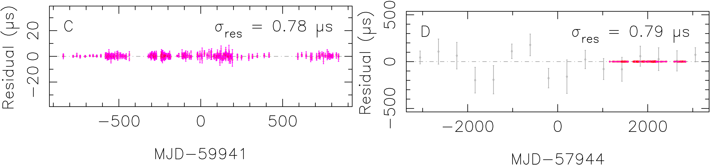
图注：{\(\bf\) Timing residuals of PSR J0435+3233 based on the timing solution Tv1 in Tables~\ref{tab:timing_solution_final}.} Panel A shows the timing residuals of FAST TOAs only, while panel B displays the timing residuals of Fermi TOAs in gray and also FAST TOAs. The timing residuals of solution Tv2 are almost the same.
对应解读：建议重点查看的图表 1、2、7；关键图表逐图导读中的“图 2：计时周期变化或残差图”和“图 7：稳健性或残差对比图”；模型拟合段落中的计时残差诊断。
入选理由：这是联合三体计时解最直接的残差检验，明确区分 FAST 与 Fermi TOA 残差，可用来判断加入外层轨道后长期系统结构是否被消除。相比只展示 FAST 残差或概念轨道图，它更直接支撑论文核心结论：同一三体模型能够同时解释射电和伽马射线计时。
来源与置信度：\(arxiv_source\)；high；\(arxiv_source\) / v1.tex:figure[8]
Fig07
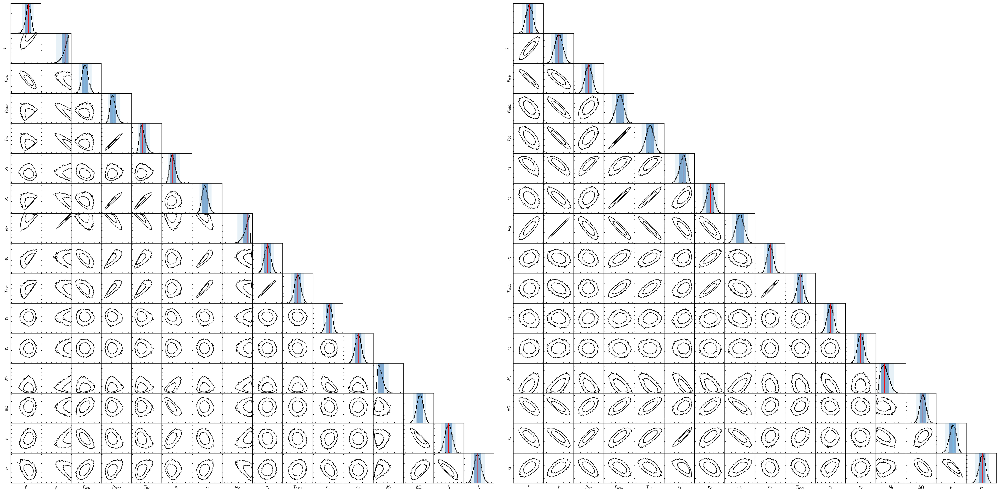
图注：The probability distribution (corner plots) of the fitted parameters in solution Tv1 ({\(\it\) left}) and Tv2 ({\(\it\) right}) using \(\textsc{Tempo2}\) \(\citep{Hobbs+2006MNRAS.369..655H},\) with the nested sampling technique based on the \(\texttt{ReactiveNestedCalibrator}\) function in \(\textsc{UltraNest}\) \(\citep{Higson+2019MNRAS.483.2044H, Buchner+2021JOSS....6.3001B}.\) The dark shadow is marked for $\pm1\sigma$ and the shallow shadow for $\pm2\sigma$. The key parameters are listed in Table~\(\ref{tab:timing_solution_final}.\)
对应解读：建议重点查看的图表 3、4；关键图表逐图导读中的“图 4：质量和倾角后验角图”；模型拟合段落中的参数退化、两类互倾角解和置信区间讨论。
入选理由：该图给出 Tv1 与 Tv2 两套解的嵌套采样 corner plot，并标出 1σ、2σ 区域，是理解外轨道参数、质量、倾角和两类几何解退化关系的关键图。它比单独的示意图更能支撑日报中关于后验双峰、互倾角约 84° 与 55°、以及质量约束不可简单平均的解读。
来源与置信度：\(arxiv_source\)；high；\(arxiv_source\) / v1.tex:figure[7]
Fig09
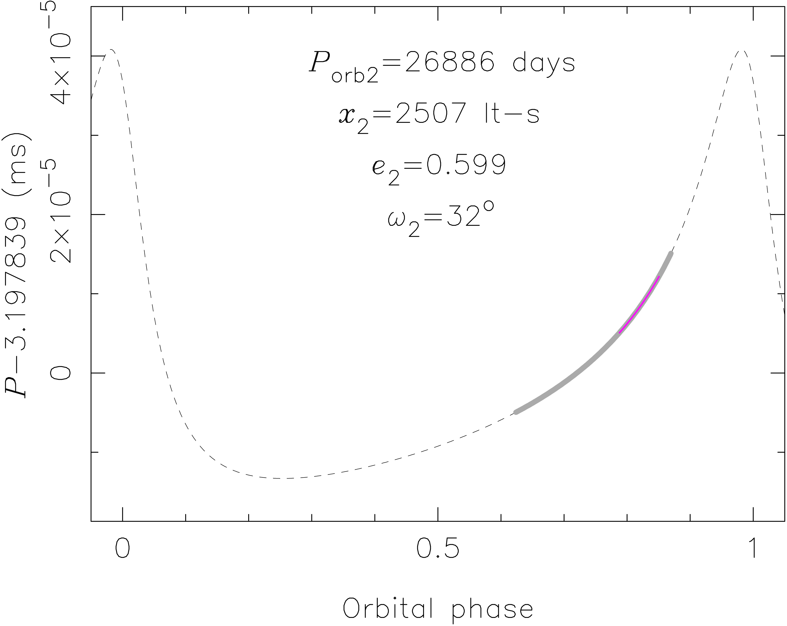
图注：{\(\bf\) The predicted pulsar spin period variations along the outer orbit}. The FAST observational time span occupies only a small fraction of the outer orbit, indicated by the magenta line. The Fermi data span is indicated by the thick grey line.
对应解读：建议重点查看的图表 2、3；关键图表逐图导读中的“图 2：计时周期变化或残差图”和“图 3：外层轨道解图”；模型拟合段落中的视向加速度导致观测自转周期变化。
入选理由：该图展示脉冲星自转周期沿外层轨道的预测变化，并标出 FAST 与 Fermi 观测时间覆盖范围，直接说明为什么 16.7 年伽马射线基线和 4.6 年射电基线只覆盖外轨道的一部分。它特别适合支撑日报关于长周期外轨道、观测基线不足以及周期变化需要椭圆外轨道解释的讨论。
来源与置信度：\(arxiv_source\)；high；\(arxiv_source\) / v1.tex:figure[9]
Fig05
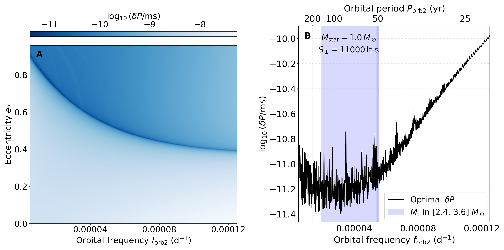
图注：{\(\bf\) Preliminary constraints on the outer orbital parameters.} Panel~(A): Residual distribution of the FAST-measured pulsar periods ($\delta P$ in ms) as a function of eccentricity $e_2$ and orbital frequency $f_{\rm orb2}$ (yr$^{-1}$), plotted on a logarithmic scale. The best fits appear along the darker curve, which shows the coupling of $e_2$ and $f_{\rm orb2}$. Panel~(B): Best-fit $\delta P$ as a function of $f_{\rm orb2}$ for a given set of $M_{\rm star}=1~M_\odot$ and $S_{\perp}=11000$~lt-s constrained from the optical and infrared counterpart. The total mass $M_{\rm t}$ for the optimal orbital parameters should be in the range $2.4$--$3.6\,M_\odot$, with $f_{\rm orb2}$ highlighted by the shadowed region, corresponding the orbital period of the outer orbit $P_{\rm orb2}$ between 50 and 150 yr and the eccentricity $e_2$ between 0.50 and 0.75.
对应解读：建议重点查看的图表 3；关键图表逐图导读中的“图 3：外层轨道解图”；模型拟合段落中关于 \(P_orb2\)、e2、外伴星质量先验和长周期退化的讨论。
入选理由：该图直接给出外轨道偏心率 e2 与轨道频率 \(f_orb2\) 的初步约束，以及对应外轨道周期约 50--150 年、偏心率约 0.50--0.75 的允许区域。它能帮助读者检查外轨道长周期是否被观测基线和先验驱动，是理解最终约 26900 天、高偏心率解的必要中间诊断。
来源与置信度：\(arxiv_source\)；high；\(arxiv_source\) / v1.tex:figure[5]
Fig06
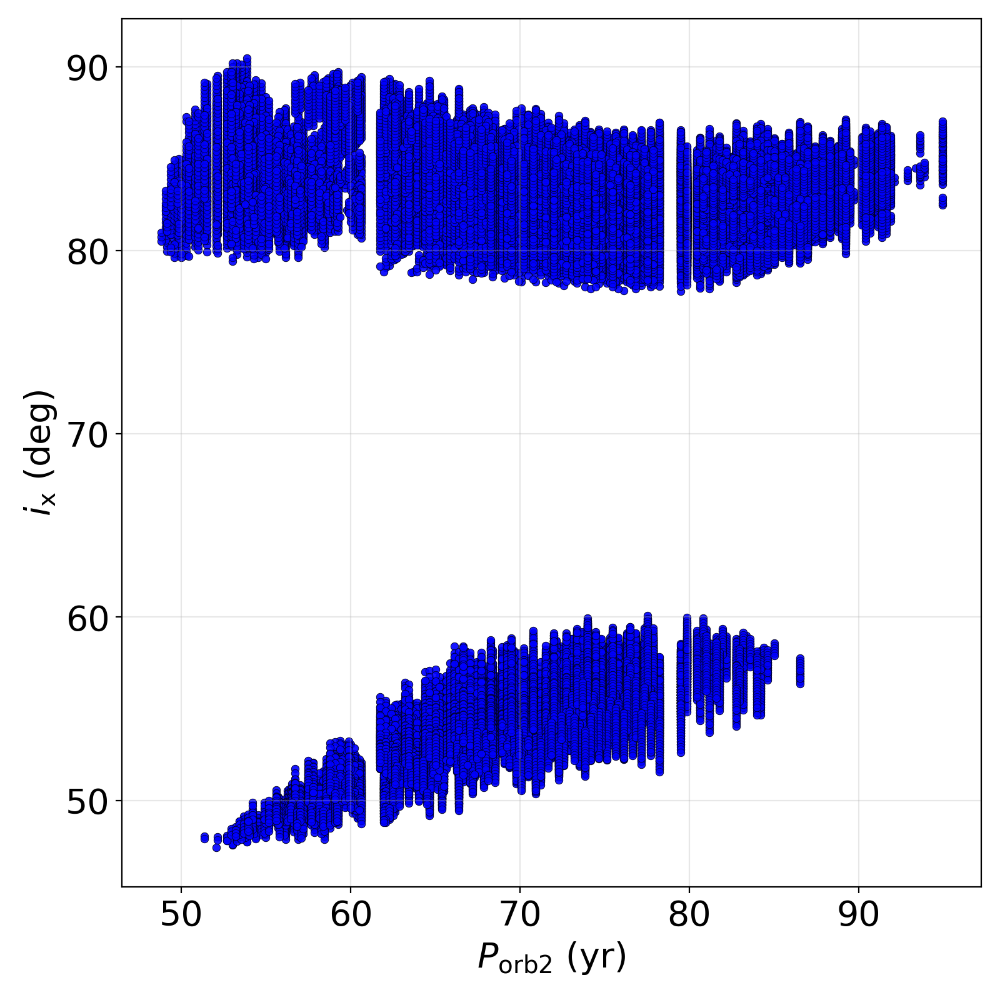
图注：{\(\bf\) Viable orbital geometries for PSR J0435+3233.} To explain the results of radio and optical/infrared observations, the inner and outer orbits are either almost perpendicular to each other, or there is a moderate mutual inclination angle of about $i_{\rm x}= 55^\circ$ between the two orbits.
对应解读：建议重点查看的图表 4；关键图表逐图导读中的“图 4：质量和倾角后验角图”；详细解读中两类可接受几何解的说明。
入选理由：该图以几何方式概括内外轨道几乎垂直或互倾角约 55° 的两类可行构型，正对应日报反复强调的两类动力学解。虽然它不如 corner plot 定量，但更适合嵌入解读中帮助读者直观看懂为什么同一系统会有两种互倾角方案。
来源与置信度：\(arxiv_source\)；high；\(arxiv_source\) / v1.tex:figure[6]
Fig03
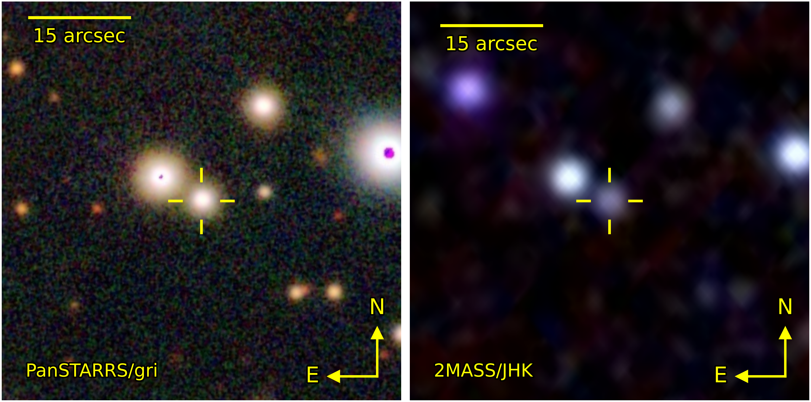
图注：{\(\bf\) Optical and infrared counterpart of the outer companion of PSR~J0435+3233.} In the false colour image of PanSTARRS \(\citep{Chambers+2016arXiv161205560C}\) and 2MASS \(\citep{Skrutskie+2006AJ....131.1163S},\) a source is found at the location of PSR~J0435+3233, which is the counterpart of its outercompanion.
对应解读：建议重点查看的图表 5、6；关键图表逐图导读中的“图 1：系统识别图或多波段图像”和“图 6：光学/红外 SED 或颜色星等图”；详细解读中外伴星光学/红外对应体的确认。
入选理由：该图显示 PanSTARRS 与 2MASS 假彩色图像中位于 PSR J0435+3233 位置的光学/红外对应体，是识别外层 G 型亚巨星伴星的基础证据。虽然它不是 SED 或颜色星等定量图，但在候选图中最接近日报要求的多波段对应体定位图，可支撑外伴星不是纯计时假设而有观测对应体这一点。
来源与置信度：\(arxiv_source\)；high；\(arxiv_source\) / v1.tex:figure[3]
强相关工作
最直接的同类工作是其他脉冲星三体系统，尤其是 PSR J0337+1715 这类毫秒脉冲星加两个白矮星的等级式三体。PSR J0435+3233 与它的区别在于外层伴星仍是 G 型亚巨星，说明系统处在更早或不同的演化阶段。检索关键词可用 “pulsar triple system”, “hierarchical triple millisecond pulsar”, “PSR J0337+1715”, “white dwarf pulsar triple”。
基础理论方面，这篇工作连接了再循环脉冲星形成、低质量氦白矮星质量—轨道周期关系、三体长期稳定性和 Kozai-Lidov 动力学。需要注意的是，本文的近圆内轨道并不等于没有三体历史；质量转移和潮汐圆化可以擦除内层偏心率，而外层仍保持较高偏心率。检索关键词可用 “recycled pulsar helium white dwarf companion”, “Kozai Lidov triple stellar evolution”, “triple star supernova survival”。
可能存在张力或相反解释的方向包括：候选光学外伴星是否为偶然投影源、长期周期变化是否可由未建模 timing noise 或星际介质效应解释、Gaia 天体测量是否受未建模轨道运动影响。读者若要复核，应检索 “PSR J0435+3233 Gaia counterpart”, “gamma-ray pulsar timing acceleration”, “pulsar timing noise binary acceleration”。
同一事件 / 同类源线索：
- https://arxiv.org/abs/2608.01227
- https://arxiv.org/pdf/2608.01227
- https://www.atnf.csiro.au/research/pulsar/psrcat/
相似工作：
基础理论 / 方法工作：
- https://ui.adsabs.harvard.edu/abs/1962AJ.....67..591K/abstract
- https://ui.adsabs.harvard.edu/abs/1962P%26SS....9..719L/abstract
相反观点 / 张力线索：
（未提供）
说明
评分由 LLM 给出初评，再由本地阈值策略过滤；IACT、TeV 伽马射线和高能中微子天文学按重点方向处理。